The Grails Framework - Reference Documentation
Authors: Graeme Rocher, Peter Ledbrook, Marc Palmer, Jeff Brown, Luke Daley, Burt Beckwith
Version: null
Table of Contents
1 简介
如今的Java Web开发对于需求来说已经变得过于复杂。当今众多Java领域的Web开发框架不仅使用复杂，而且并没有很好的遵循Don't Repeat Yourself（DRY）原则。像Rails，Django和TurboGears这样的动态框架在Web开发领域开辟了一条新的道路，Grails基于这些概念之上，采用动态方法减小了Java平台上进行Web开发的复杂度，不过与那些框架不同的是，Grails是构建在Spring和Hibernate等Java已有的技术之上的。Grails是一个full-stack框架，它借助于核心技术与相关的插件（plug-in）来解决Web开发中方方面面的问题，其中包括：- 易于使用的基于Hibernate的对象-关系映射(ORM)层
- 称为Groovy Server Pages (GSP)的表现层技术
- 基于Spring MVC的控制器层
- 构建于Gant 上的命令行脚本运行环境
- 内置Tomcat
- 利用内置的Spring 容器实现依赖注入
- 基于Spring的MessageSource核心概念，提供了对国际化（i18n）的支持
- 基于Spring事务抽象概念，实现事务服务层
Java web development as it stands today is dramatically more complicated than it needs to be. Most modern web frameworks in the Java space are over complicated and don't embrace the Don't Repeat Yourself (DRY) principles.Dynamic frameworks like Rails, Django and TurboGears helped pave the way to a more modern way of thinking about web applications. Grails builds on these concepts and dramatically reduces the complexity of building web applications on the Java platform. What makes it different, however, is that it does so by building on already established Java technologies like Spring and Hibernate.Grails is a full stack framework and attempts to solve as many pieces of the web development puzzle through the core technology and its associated plugins. Included out the box are things like:
- An easy to use Object Relational Mapping (ORM) layer built on Hibernate
- An expressive view technology called Groovy Server Pages (GSP)
- A controller layer built on Spring MVC
- A command line scripting environment built on the Groovy-powered Gant
- An embedded Tomcat container which is configured for on the fly reloading
- Dependency injection with the inbuilt Spring container
- Support for internationalization (i18n) built on Spring's core MessageSource concept
- A transactional service layer built on Spring's transaction abstraction
1.1 Grails 2.0有那些新特性?
This section covers the new features that are present in 2.0 and is broken down into sections covering the build system, core APIs, the web tier, persistence enhancements and improvements in testing. Note there are many more small enhancements and improvements, these sections just cover some of the highlights.
在本章节中，主要涉及当前2.0中的新特性，这些又被细分为系统构建、核心API、WEB层、持久层的增强以及在测试方面的改进。值得一提的是，虽然还有其他更多少范围的增强和改进，但在本章后续的章节中只会将其中的一些亮点进行介绍。
1.1.1 面向开发的特性
Interactive Mode and Console Enhancements
Grails 2.0 features brand new console output that is more concise and user friendly to consume. An example of the new output when running tests can be seen below: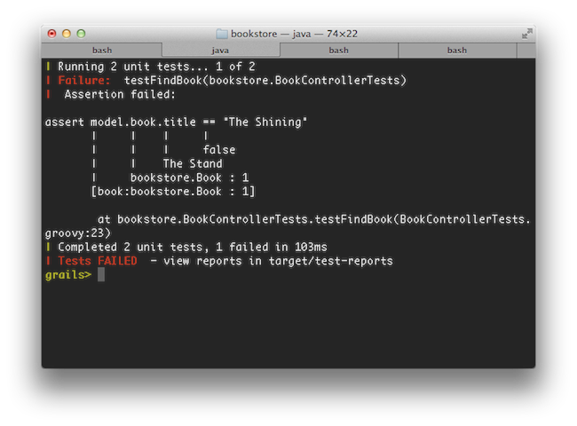
In general Grails makes its best effort to display update information on a single line and only present the information that is crucial. This means that while in previous versions of Grails the war command produced many lines of output, in Grails 2.0 only 1 line of output is produced: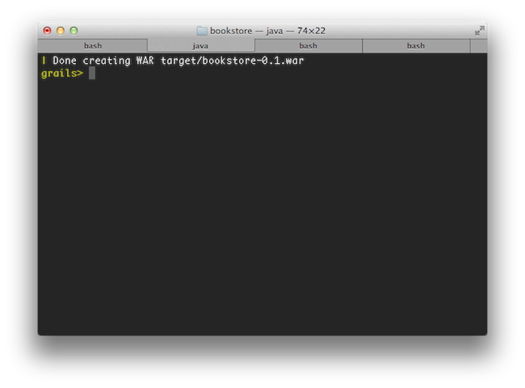
In addition simply typing 'grails' at the command line activates the new interactive mode which features TAB completion, command history and keeps the JVM running to ensure commands execute much quicker than otherwise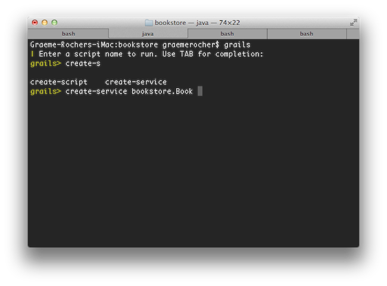
For more information on the new features of the console refer to the section of the user guide that covers the console and interactive mode.交互模式和命令行的增强
Grails 2.0中新的命令行输出将更加简洁和友好，以执行测试为例，新的输出如下图所示：总的来说，Grails尽量在一行中显示所有相关的更新信息，并且仅仅显示当前最重要的信息，换句话说，以前版本的war命令将产生很多行的输出，但是在2.0中，只有如下图所示的一行输出。此外如果只是简单的输入'grails'命令，系统将进入新的带TAB补全和纪录命令历史的交互模式。在此模式下，JVM一直保持运行，这样就可以保证命令的执行可以比其他情况快速。新的交互模式如下图所示：更多命令行新特性请参考本用户手册的命令行和交互模式章节。Reloading Agent
Grails 2.0 reloading mechanism no longer uses class loaders, but instead uses a JVM agent to reload changes to class files. This results in greatly improved reliability when reloading changes and also ensures that the class files stored in disk remain consistent with the class files loaded in memory, which reduces the need to run the clean command.重新加载代理
Grails 2.0的重新加载机制不再使用用户的类加载器(Class Loaders)，而是使用JVM代理来重新加载那些改变过的类.这样一来，既能提高系统的稳定性，也可以保证磁盘和内存中的类的一致性，从而可以减少执行clean的次数。New Test Report and Documentation Templates
There are new templates for displaying test results that are clearer and more user friendly than the previous reports: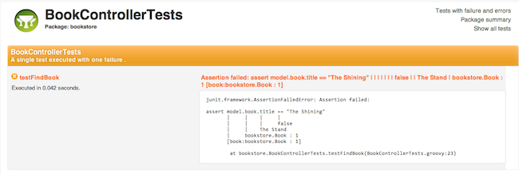
In addition, the Grails documentation engine has received a facelift with a new template for presenting Grails application and plugin documentation: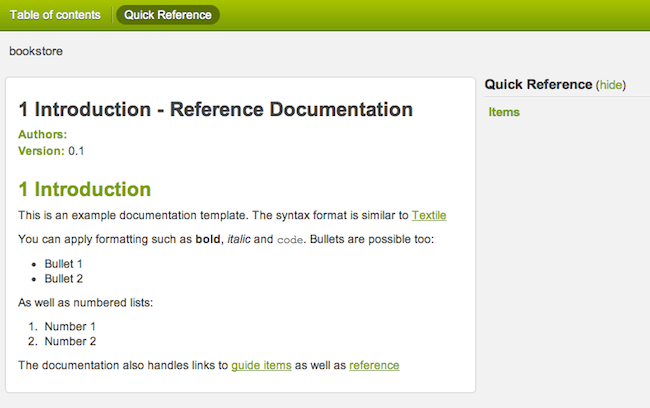
See the section on the documentation engine for more usage info.全新的测试报告和文档模板
相比以前的测试报告，现在的测试结果显示更加简洁清晰和友好，新的报告截图如下：除此之外，Grails的文档引擎也采用了全新的模板来展现其插件和应用的文档，如下图所示：更多信息请参考文档引擎章节。Use a TOC for Project Docs
The old documentation engine relied on you putting section numbers into the gdoc filenames. Although convenient, this effectively made it difficult to restructure your user guide by inserting new chapters and sections. In addition, any such restructuring or renaming of section titles resulted in breaking changes to the URLs.You can now use logical names for your gdoc files and define the structure and section titles in a YAML table-of-contents file, as described in the section on the documentation engine. The logical names appear in the URLs, so as long as you don't change those, your URLs will always remain the same no matter how much restructuring or changing of titles you do.Grails 2.0 even provides a migrate-docs command to aid you in migrating existing gdoc user guides.在项目文档中使用目录索引(TOC-Table Of Contents)
旧有的文档引擎将章节号写死在gdoc文件中，此举虽然便利，但是会导致在新增章节的时候很难重新构造你的用户手册，而且任何章节标题的改动，将会导致此章节的URL失效.（在处理多国语言的时候尤其不便－译者注）现在，你可以将结构和章节的标题的逻辑名称定义在YAML目录索引（TOC，在文档引擎有更多描述）文件中，这样在你的gdoc文件中只需使用相应的逻辑名称即可。如此一来，不管你改了结构或者标题，只要你在URL中的逻辑名称没有改变，那么你URL将不会受任何影响。对已有的gdoc用户手册，Grails 2.0还提供了migrate-docs命令来帮助你进行迁移。Enhanced Error Reporting and Diagnosis
Error reporting and problem diagnosis has been greatly improved with a new errors view that analyses stack traces and recursively displays problem areas in your code: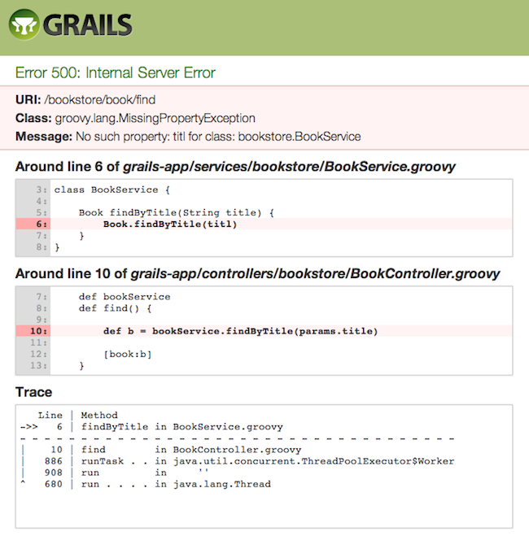
In addition stack trace filtering has been further enhanced to display only relevant trace information:Line | Method
->> 9 | getValue in Book.groovy
- - - - - - - - - - - - - - - - - - - - - - - - -
| 7 | getBookValue in BookService.groovy
| 886 | runTask . . in ThreadPoolExecutor.java
| 908 | run in ''
^ 662 | run . . . . in Thread.java错误报告和诊断的增强
错误报告和问题诊断现在得到了极大的提高，在新的错误视图中，系统分析堆栈的异常，并且在你的代码中递归的显示问题区域。如下图所示：此外，加强的异常堆栈跟踪过滤，只显示相关的异常跟踪信息，如下边代码所示：Line | Method
->> 9 | getValue in Book.groovy
- - - - - - - - - - - - - - - - - - - - - - - - -
| 7 | getBookValue in BookService.groovy
| 886 | runTask . . in ThreadPoolExecutor.java
| 908 | run in ''
^ 662 | run . . . . in Thread.javaH2 Database and Console
Grails 2.0 now uses the H2 database instead of HSQLDB, and enables the H2 database console in development mode (at the URI /dbconsole) so that the in-memory database can be easily queried from the browser: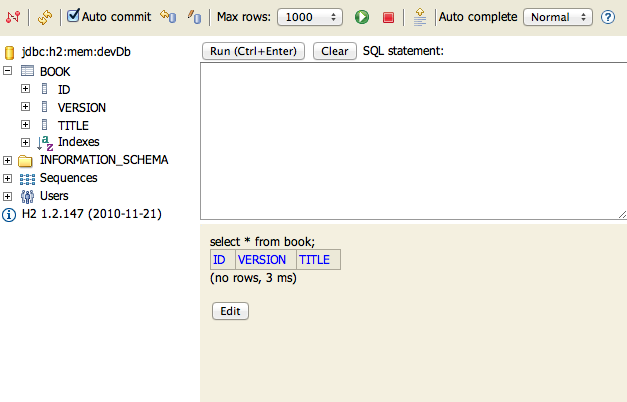
H2数据库及其管理界面
在Grails 2.0中，已经舍弃了HSQLDB，取而代之的是H2数据库，并且在开发模式下，还增加了数据库管理界面（通过URI /dbconsole访问），这样即使数据库在内存模式下，也可以通过浏览器来查询，管理界面如下：Plugin Usage Tracking
To enhance community awareness of the most popular plugins an opt-in plugin usage tracking system has been included where users can participate in providing feedback to the plugin community on which plugins are most popular.This will help drive the roadmap and increase support of key plugins while reducing the need to support older or less popular plugins thus helping plugin development teams focus their efforts.跟踪插件的使用情况
为了增强社区对最受欢迎插件的意识，一种称之为“单向确认(opt-in)”的跟踪插件使用情况系统被引入，这样用户可以将那些是最受欢迎的插件反馈给插件社区。这有助于推动系统的线路图和增加对重要插件的支持，同时对那些陈旧或者不受欢迎的减插件少不必要的支持，从而帮助插件开发团队做更多有意义的事情。Dependency Resolution Improvements
There are numerous improvements to dependency resolution handling via Ivy including:- Grails now makes a best effort to cache the previous resolve and avoid resolving again unless you change
BuildConfig.groovy. - Plugins dependencies now appear in the dependency report generated by
grails dependency-report - Plugins published with the release plugin now publish their transitive plugin dependencies in the generated POM which are later resolved.
- It is now possible to customize the ivy cache directory via
BuildConfig.groovy
grails.project.dependency.resolution = {
cacheDir "target/ivy-cache"
}- You can change the ivy cache directory for all projects via
settings.groovy
grails.dependency.cache.dir = "${userHome}/.ivy2/cache"- It is now possible to completely disable resolution from inherited repositories (repositories defined by other plugins):
grails.project.dependency.resolution = { repositories {
inherits false // Whether to inherit repository definitions from plugins
…
}
…
}- It is now possible to easily disable checksum validation errors:
grails.project.dependency.resolution = {
checksums false // whether to verify checksums or not
}依赖解决方案的增强
在解决依赖问题方面，因为Ivy的协助，有了大量的改进：- 在不改变
BuildConfig.groovy的前提下，Grails将尽量使用以前的缓存，从而避免了再解析检查。 - 通过
grails dependency-report，现在可以生成插件的依赖关系报告。 - 通过release plugin发布的插件现在可以将其依赖关系的传递性生成在POM中，以备后用。
- 通过
BuildConfig.groovy，现在可以自定义ivy的缓存目录了，代码如下：
grails.project.dependency.resolution = {
cacheDir "target/ivy-cache"
}- 通过修改
settings.groovy配置来改变所有工程的ivy缓存目录，比如：
grails.dependency.cache.dir = "${userHome}/.ivy2/cache"- 在继承过来的存储仓库（定义在别的插件中）中，现在可以完全使继承过来的失效，代码如下：
grails.project.dependency.resolution = { repositories {
inherits false // Whether to inherit repository definitions from plugins
…
}
…
}- 可以方便的解决因为校验和导致的验证错误，代码如下：
grails.project.dependency.resolution = {
checksums false // whether to verify checksums or not
}1.1.2 核心特性
Binary Plugins
Grails plugins can now be packaged as JAR files and published to standard maven repositories. This even works for GSP and static resources (with resources plugin 1.0.1). See the section on Binary plugins for more information.二进制插件
在Grails 2.0中插件可以被打包为JAR文件，并且可以发布到标准的maven存储空间, 此外还可以通过resources插件(1.0.1版本)将GSP和静态资源进行处理。更多细节请参考二进制插件章节。Groovy 1.8
Grails 2.0 comes with Groovy 1.8 which includes many new features and enhancementsGroovy 1.8
Grails 2.0使用了Groovy 1.8中很多的新特性和增强Spring 3.1 Profile Support
Grails' existing environment support has been bridged into the Spring 3.1 profile support. For example when running with a custom Grails environment called "production", a Spring profile of "production" is activated so that you can use Spring's bean configuration APIs to configure beans for a specific profile.支持Spring 3.1的个性配置(Profile)
Grails原来所支持的环境配置现在已经通过Spring 3.1的Profile来实现了，比如要执行一个自定义的"production"环境,那么Spring的"production"Profile将被激活，这样你就可以通过Spring的bean配置API来操作了。1.1.3 Web层特性
Controller Actions as Methods
It is now possible to define controller actions as methods instead of using closures as in previous versions of Grails. In fact this is now the preferred way of expressing an action. For example:// action as a method
def index() {}
// action as a closure
def index = {}使用函数方法来定义控制器的动作
以前Grails的动作只能通过闭包来定义，现在通过一般的函数方法也可以定义了，实际上这也是优先推荐的方式，比如：// action as a method
def index() {}
// action as a closure
def index = {}Binding Primitive Method Action Arguments
It is now possible to bind form parameters to action arguments where the name of the form element matches the argument name. For example given the following form:<g:form name="myForm" action="save"> <input name="name" /> <input name="age" /> </g:form>
def save(String name, int age) { // remaining }
自动绑定带参数的动作方法
现在可以将表单（form）参数跟动作参数进行自动匹配了，只要表单下边子元素的名称名字跟参数名称一致即可，以如下的表单为例：<g:form name="myForm" action="save"> <input name="name" /> <input name="age" /> </g:form>
def save(String name, int age) { // remaining }
Static Resource Abstraction
A new static resource abstraction is included that allows declarative handling of JavaScript, CSS and image resources including automatic ordering, compression, caching and gzip handling.静态资源
新引入的静态资源抽象，可以声明式地处理JavaScript、CSS以及图像资源的自动排序、压缩、缓存.Servlet 3.0 Async Features
Grails now supports Servlet 3.0 including the Asynchronous programming model defined by the specification:def index() {
def ctx = startAsync()
ctx.start {
new Book(title:"The Stand").save()
render template:"books", model:[books:Book.list()]
ctx.complete()
}
}Servlet 3.0 的异步特性
Grails现在已经支持Servlet 3.0了，且包含了其规范中定义的异步编程模型，比如：def index() {
def ctx = startAsync()
ctx.start {
new Book(title:"The Stand").save()
render template:"books", model:[books:Book.list()]
ctx.complete()
}
}Link Generation API
A general purposeLinkGenerator class is now available that is usable anywhere within a Grails application and not just within the context of a controller. For example if you need to generate links in a service or an asynchronous background job outside the scope of a request:LinkGenerator grailsLinkGeneratordef generateLink() {
grailsLinkGenerator.link(controller:"book", action:"list")
}生成超链接的API
在Grails应用，新增的通用LinkGenerator类，可以在任何地方生成超链接了，不像以前，只能局限于控制器的上下文中。比如，你要在一个服务或者异步的后台任务等超出web请求范围内使用，可以参考如下代码：LinkGenerator grailsLinkGeneratordef generateLink() {
grailsLinkGenerator.link(controller:"book", action:"list")
}Page Rendering API
Like theLinkGenerator the new PageRenderer can be used to render GSP pages outside the scope of a web request, such as in a scheduled job or web service. The PageRenderer class features a very similar API to the render method found within controllers:grails.gsp.PageRenderer groovyPageRenderervoid welcomeUser(User user) {
def contents = groovyPageRenderer.render(view:"/emails/welcomeLetter", model:[user: user])
sendEmail {
to user.email
body contents
}
}PageRenderer service also allows you to pre-process GSPs into HTML templates:new File("/path/to/welcome.html").withWriter { w -> groovyPageRenderer.renderTo(view:"/page/content", w) }
页面渲染API
跟LinkGenerator类似，新增的PageRenderer能够在超出web请求范围之外的任何地方渲染GSP页面，比如被调度的任务或者WEB服务接口中。PageRenderer 类的API跟在控制器中使用的render方法很类似，比如：grails.gsp.PageRenderer groovyPageRenderervoid welcomeUser(User user) {
def contents = groovyPageRenderer.render(view:"/emails/welcomeLetter", model:[user: user])
sendEmail {
to user.email
body contents
}
}PageRenderer服务还允许你将GSP页面预处理成为HTML模板：new File("/path/to/welcome.html").withWriter { w -> groovyPageRenderer.renderTo(view:"/page/content", w) }
Filter Exclusions
Filters may now express controller, action and uri exclusions to offer more options for expressing to which requests a particular filter should be applied.filter1(actionExclude: 'log*') {
before = {
// …
}
}
filter2(controllerExclude: 'auth') {
before = {
// …
}
}filter3(uriExclude: '/secure*') {
before = {
// …
}
}过滤器的排除
过滤器现在可以明确的指定是排除控制器、动作、还是URI，这为特定请求的过滤器提供了更多选项。filter1(actionExclude: 'log*') {
before = {
// …
}
}
filter2(controllerExclude: 'auth') {
before = {
// …
}
}filter3(uriExclude: '/secure*') {
before = {
// …
}
}Performance Improvements
Performance of GSP page rendering has once again been improved by optimizing the GSP compiler to inline method calls where possible.性能的提升
通过将GSP编译器优化成内联方法，使得GSP的页面渲染性能又一次得到提升。HTML5 Scaffolding
There is a new HTML5-based scaffolding UI: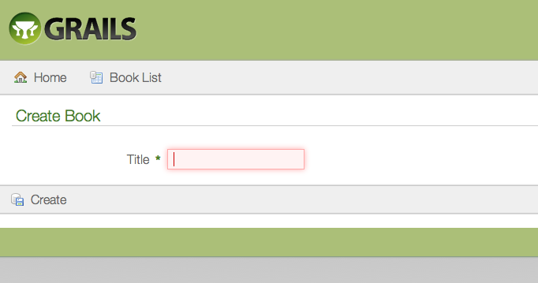
HTML5脚手架
新增的基于HTML5的脚手架界面如下：jQuery by Default
The jQuery plugin is now the default JavaScript library installed into a Grails application. For backwards compatibility a Prototype plugin is available. Refer to the documentation on the Prototype plugin for installation instructions.jQuery作为缺省JavaScript库
jQuery插件已经作为一个缺省的JavaScript库被安装到Grails应用当中。因为向后兼容的原因，Prototype插件依然是有效的，其安装指令请参考Prototype插件官方文档。Easy Date Parsing
A newdate method has been added to the params object to allow easy, null-safe parsing of dates:def val = params.date('myDate', 'dd-MM-yyyy')// or a list for formats
def val = params.date('myDate', ['yyyy-MM-dd', 'yyyyMMdd', 'yyMMdd'])// or the format read from messages.properties via the key 'date.myDate.format'
def val = params.date('myDate')易用的日期解析
params对象新增了一个date方法，用以轻松地、空指针安全地解析日期，比如：def val = params.date('myDate', 'dd-MM-yyyy')// or a list for formats
def val = params.date('myDate', ['yyyy-MM-dd', 'yyyyMMdd', 'yyMMdd'])// or the format read from messages.properties via the key 'date.myDate.format'
def val = params.date('myDate')1.1.4 持久层特性
The GORM API
The GORM API has been formalized into a set of classes (GormStaticApi, GormInstanceApi and GormValidationApi) that get statically wired into every domain class at the byte code level. The result is better code completion for IDEs, better integration with Java and the potential for more GORM implementations for other types of data stores.
GORM API
GORM API现在已正式规范为类的集合（GormStaticApi, GormInstanceApi, GormValidationApi），并且在每个领域类的字节码级别上进行注入的。如此一来，对IDE的代码补齐，Java的集成，以及潜在的其他类型的GORM实现来说，提供了更好的支持。New findOrCreate and findOrSave Methods
Domain classes have support for the findOrCreateWhere, findOrSaveWhere, findOrCreateBy and findOrSaveBy query methods which behave just like findWhere and findBy methods except that they should never return null. If a matching instance cannot be found in the database then a new instance is created, populated with values represented in the query parameters and returned. In the case of findOrSaveWhere and findOrSaveBy, the instance is saved before being returned.def book = Book.findOrCreateWhere(author: 'Douglas Adams', title: "The Hitchiker's Guide To The Galaxy")
def book = Book.findOrSaveWhere(author: 'Daniel Suarez', title: 'Daemon')
def book = Book.findOrCreateByAuthorAndTitle('Daniel Suarez', 'Daemon')
def book = Book.findOrSaveByAuthorAndTitle('Daniel Suarez', 'Daemon')全新的findOrCreate和findOrSave方法
领域类现在已经支持findOrCreateWhere, findOrSaveWhere, findOrCreateBy和findOrSaveBy查询方法，这些方法除了不返回null值以外，跟findWhere和findBy方法基本类似。如果在数据库中没有找到符合条件的实例，系统将会根据查询参数创建一个全新的实例返回，不过在findOrSaveWhere 和findOrSaveBy中,实例是先保存入库再返回的。示例代码如下：def book = Book.findOrCreateWhere(author: 'Douglas Adams', title: "The Hitchiker's Guide To The Galaxy")
def book = Book.findOrSaveWhere(author: 'Daniel Suarez', title: 'Daemon')
def book = Book.findOrCreateByAuthorAndTitle('Daniel Suarez', 'Daemon')
def book = Book.findOrSaveByAuthorAndTitle('Daniel Suarez', 'Daemon')Detached Criteria and Where Queries
Grails 2.0 features support for DetachedCriteria which are criteria queries that are not associated with any session or connection and thus can be more easily reused and composed:def criteria = new DetachedCriteria(Person).build { eq 'lastName', 'Simpson' } def results = criteria.list(max:4, sort:"firstName")
where method and DSL has been introduced to greatly reduce the complexity of criteria queries:def query = Person.where {
(lastName != "Simpson" && firstName != "Fred") || (firstName == "Bart" && age > 9)
}
def results = query.list(sort:"firstName")分离的Criteria和Where查询
Grails 2.0中分离的Criteria是指条件（Criteria）查询不再跟任何数据库会话或者连接关联，因此可以很方便的复用和构造，比如：def criteria = new DetachedCriteria(Person).build { eq 'lastName', 'Simpson' } def results = criteria.list(max:4, sort:"firstName")
where方法及其DSL被引入，比如：def query = Person.where {
(lastName != "Simpson" && firstName != "Fred") || (firstName == "Bart" && age > 9)
}
def results = query.list(sort:"firstName")Abstract Inheritance
GORM now supports abstract inheritance trees which means you can define queries and associations linking to abstract classes:abstract class Media { String title … } class Book extends Media { } class Album extends Media {} class Account { static hasMany = [purchasedMedia:Media] }..def allMedia = Media.list()
抽象继承
GORM现在支持抽象的继承树或者说现在你可以定义抽象类的查询和关联了，比如：abstract class Media { String title … } class Book extends Media { } class Album extends Media {} class Account { static hasMany = [purchasedMedia:Media] }..def allMedia = Media.list()
Multiple Data Sources Support
It is now possible to define multiple datasources inDataSource.groovy and declare one or more datasources a particular domain uses by default:class ZipCode { String code static mapping = {
datasource 'ZIP_CODES'
}
}def zipCode = ZipCode.auditing.get(42)
支持多个数据源
现在，可以在DataSource.groovy定义多个数据源了，对于特定的领域类来说，声明一个或者多个数据源的示例如下：class ZipCode { String code static mapping = {
datasource 'ZIP_CODES'
}
}def zipCode = ZipCode.auditing.get(42)
Database Migrations
A new database migration plugin has been designed and built for Grails 2.0 allowing you to apply migrations to your database, rollback changes and diff your domain model with the current state of the database.数据库迁移（Database Migration）
新设计的数据库迁移插件完全是基于Grails 2.0的，有了它，你可以迁移你的数据库了，比如根据当前的数据库状态回滚所做的变化，比较领域模型。Database Reverse Engineering
A new database reverse engineering plugin has been designed and built for Grails 2.0 that allows you to generate a domain model from an existing database schema.数据库逆向工程
基于Grails 2.0的数据库逆向工程插件可以根据已有的数据库模式（database schema），自动生成领域模型。Hibernate 3.6
Grails 2.0 is now built on Hibernate 3.6Hibernate 3.6
Grails 2.0现在基于Hibernate 3.6了Bag Collections
You can now use Hibernate Bags for mapped collections to avoid the memory and performance issues of loading large collections to enforceSet uniqueness or List order.For more information see the section on Sets, Lists and Maps in the user guide.
Bag集合
现在Hibernate的Bag集合（Bag集合，即在集合中允许重复，可以简单的看作为Set和List的结合体－－译者注）在Grails 2.0中也得到了支持，由此也比较好的解决了加载大数据量集合转换（Set必须唯一或者List必须有序）导致的内存和性能问题。更多信息请参考本手册的集合、列表、映射章节。
1.1.5 测试特性
New Unit Testing Console Output
Test output from the test-app command has been improved:新的单元测试输出结果
运行test-app命令的输出结果已经提升为如下图所示：New Unit Testing API
There is a new unit testing API based on mixins that supports JUnit 3, 4 and Spock style tests (with Spock 0.6 and above). Example:import grails.test.mixin.TestFor@TestFor(SimpleController) class SimpleControllerTests { void testIndex() { controller.home() assert view == "/simple/homePage" assert model.title == "Hello World" } }
新的单元测试API
新的单元测试API现在支持JUnit 3, 4和Spock风格(Spock 0.6以上)的测试了，比如：import grails.test.mixin.TestFor@TestFor(SimpleController) class SimpleControllerTests { void testIndex() { controller.home() assert view == "/simple/homePage" assert model.title == "Hello World" } }
Unit Testing GORM
A new in-memory GORM implementation is present that supports many more features of the GORM API making unit testing of criteria queries, named queries and other previously unsupported methods possible.GORM的单元测试
在单元测试方面，新的基于内存的GORM实现，使得GORM在条件查询、命名查询以及以前并未支持的方法也得到了很好的支持。Faster Unit Testing with Interactive Mode
The new interactive mode (activated by typing 'grails') greatly improves the execution time of running unit and integration tests.交互模式下更快的单元测试
新的交互模式（通过输入'grails'命令激活）极大的缩短了单元和集成测试的运行时间。Unit Test Scaffolding
A unit test is now generated for scaffolded controllers脚手架（Scaffolding）的单元测试
使用脚手架的控制器现在也自动生成一个单元测试。2 起步
2.1 安装的前提条件
Before installing Grails you will as a minimum need a Java Development Kit (JDK) installed version 1.6 or above and environment variable called Note that although JDK 1.6 is required to use Grails at development time it is possible to deploy Grails to JDK 1.5 VMs by setting the In addition, Grails supports Servlet versions 2.5 and above. If you wish to use newer features of the Servlet API (such as 3.0) you should configure the
在安装Grails以前，你至少需要先安装1.6或者更高版本的JDK，并且设置名为JAVA_HOME pointing to the location of this installation. On some platforms (for example OS X) the Java installation is automatically detected. However in many cases you will want to manually configure the location of Java. For example:export JAVA_HOME=/Library/Java/Home
export PATH="$PATH:$JAVA_HOME/bin"grails.project.source.level and grails.project.target.level settings to "1.5" in grails-app/conf/BuildConfig.groovy:grails.project.source.level = 1.5 grails.project.target.level = 1.5
grails.servlet.version in BuildConfig.groovy appropriately:grails.servlet.version = "3.0"JAVA_HOME全局环境变量来指向它。有些平台（比如OS X），Java的安装是自动检测的，但是还是有不少的平台是需要手工来配置Java的安装位置的，比如：export JAVA_HOME=/Library/Java/Home
export PATH="$PATH:$JAVA_HOME/bin"grails-app/conf/BuildConfig.groovy中的grails.project.source.level和grails.project.target.level值为"1.5"：grails.project.source.level = 1.5 grails.project.target.level = 1.5
BuildConfig.groovy中的grails.servlet.version为合适的值才行，比如：grails.servlet.version = "3.0"2.2 下载安装Grails
The first step to getting up and running with Grails is to install the distribution. To do so follow these steps:
首先需要下载Grails的发行包并进行安装，执行步骤如下：
- Download a binary distribution of Grails and extract the resulting zip file to a location of your choice
- Set the GRAILS_HOME environment variable to the location where you extracted the zip
- On Unix/Linux based systems this is typically a matter of adding something like the following
export GRAILS_HOME=/path/to/grailsto your profile - On Windows this is typically a matter of setting an environment variable under
My Computer/Advanced/Environment Variables - Then add the
bindirectory to yourPATHvariable: - On Unix/Linux based systems this can be done by adding
export PATH="$PATH:$GRAILS_HOME/bin"to your profile - On Windows this is done by modifying the
Pathenvironment variable underMy Computer/Advanced/Environment Variables
grails -version in the terminal window and see output similar to this:
Grails version: 2.0.0
- 下载 Grails二进制发行包并解压到指定的文件目录下
- 在环境变量中添加GRAILS_HOME,值为上一步解压的文件目录。
- Unix/Linux系统中，通常将
export GRAILS_HOME=/path/to/grails追加到到用户的启动配置文件中（通常是.profile或者.bashrc等－译者注） - Windows系统上右击“我的电脑”/“属性”/“高级”/“环境变量”，点击新建。
- 将GRAILS_HOME的
bin目录追加到系统的PATH变量中： - Unix/Linux系统中，通常将
export PATH="$PATH:$GRAILS_HOME/bin"追加到到用户的启动配置文件中（同上） - Windows系统上右击“我的电脑”/“属性”/“高级”/“环境变量”，修改PATH变量的值。
grails -version 如果屏幕上显示如下提示则说明安装成功：
Grails version: 2.0.02.3 从老版本Grails升级
Although the Grails development team have tried to keep breakages to a minimum there are a number of items to consider when upgrading a Grails 1.0.x, 1.1.x, 1.2.x, or 1.3.x applications to Grails 2.0. The major changes are described in detail below.
虽然Grails的开发团队已经尽最大可能地将破坏减少到最少，但是当从1.0.x、1.1.x、1.2.x或者1.3.x升级到2.0的时候，依然有很多注意事项。下面详细地描述了这些重要变化。从Grails 1.3.x升级
HSQLDB Has Been Replaced With H2
HSQLDB is still bundled with Grails but is not configured as a default runtime dependency. Upgrade options include replacing HSQLDB references in DataSource.groovy with H2 references or adding HSQLDB as a runtime dependency for the application.If you want to run an application with different versions of Grails, it's simplest to add HSQLDB as a runtime dependency, which you can do in BuildConfig.groovy:grails.project.dependency.resolution = {
inherits("global") {
}
repositories {
grailsPlugins()
grailsHome()
grailsCentral()
} dependencies {
// Add HSQLDB as a runtime dependency
runtime 'hsqldb:hsqldb:1.8.0.10'
}
}dataSource {
driverClassName = "org.h2.Driver"
username = "sa"
password = ""
}
// environment specific settings
environments {
development {
dataSource {
dbCreate = "create-drop" // one of 'create', 'create-drop','update'
url = "jdbc:h2:mem:devDb"
}
}
test {
dataSource {
dbCreate = "update"
url = "jdbc:h2:mem:testDb"
}
}
production {
dataSource {
dbCreate = "update"
url = "jdbc:h2:prodDb"
}
}
}byte[] domain class properties. HSQLDB's default BLOB size is large and so you typically don't need to specify a maximum size. But H2 defaults to a maximum size of 255 bytes! If you store images in the database, the saves are likely to fail because of this. The easy fix is to add a maxSize constraint to the byte[] property:class MyDomain {
byte[] data static constraints = {
data maxSize: 1024 * 1024 * 2 // 2MB
}
}data column set to BINARY(2097152) by Hibernate.
H2代替HSQLDB
Grails依然自带HSQLDB，但在配置中已经没有了运行时依赖。升级的选择可以是将DataSource.groovy中的HSQLDB替换为H2，或者在你的应用中增加运行时依赖。如果你想让你的应用运行在不同的Grails版本中，那么最简单的方法就是在BuildConfig.groovy中增加HSQLDB的运行时依赖，如下所示：grails.project.dependency.resolution = {
inherits("global") {
}
repositories {
grailsPlugins()
grailsHome()
grailsCentral()
} dependencies {
// Add HSQLDB as a runtime dependency
runtime 'hsqldb:hsqldb:1.8.0.10'
}
}dataSource {
driverClassName = "org.h2.Driver"
username = "sa"
password = ""
}
// environment specific settings
environments {
development {
dataSource {
dbCreate = "create-drop" // one of 'create', 'create-drop','update'
url = "jdbc:h2:mem:devDb"
}
}
test {
dataSource {
dbCreate = "update"
url = "jdbc:h2:mem:testDb"
}
}
production {
dataSource {
dbCreate = "update"
url = "jdbc:h2:prodDb"
}
}
}byte[] 属性的处理。HSQLDB中其BLOB已经足够大，以至于无需再设定最大值了。而H2其默认最大值是255字节，因此如果要在数据库中存储图像，其保存失败多不半是因为此限制。要解决此问题，只需在 byte[] 属性中增加一个 maxSize 约束，比如：class MyDomain {
byte[] data static constraints = {
data maxSize: 1024 * 1024 * 2 // 2MB
}
}data 字段设置为 BINARY(2097152) 。Abstract Inheritance Changes
In previous versions of Grails abstract classes ingrails-app/domain were not treated as persistent. This is no longer the case and has a significant impact on upgrading your application. For example consider the following domain model in a Grails 1.3.x application:abstract class Sellable {} class Book extends Sellable {}
Sellable class would be stored within the BOOK table. However, in Grails 2.0.x you will get SELLABLE table and the default table-per-hierarchy inheritance rules apply with all properties of the Book stored in the SELLABLE table.You have two options when upgrading in this scenario:
- Move the abstract
Sellableclass into the src/groovy package. If theSellableclass is in thesrc/groovydirectory it will no longer be regarded a persistent - Use the database migration plugin to apply the appropriate changes to the database (typically renaming the table to the root abstract class of the inheritance tree)
抽象继承的变化
在以前版本的Grails中，grails-app/domain 下的抽象类并没有被持久化。现在这个情况已经不复存在，而且对升级你的应用的来说，也有着重要的影响。比如以下Grails 1.3.x应用的领域模型：abstract class Sellable {} class Book extends Sellable {}
Sellable 类的属性将存储在 BOOK 表中。但是在Grails 2.0.x中，你将生成 SELLABLE 表，并且使用缺省的单表继承（table-per-hierarchy）的继承规则的话，那么 Book 中的所有属性将存储在 SELLABLE 表中。这种情况下的升级，你有两种选择：
- 将抽象类
Sellable移至src/groovy目录下。如果Sellable类在src/groovy目录下边，那么将不再被持久化。 - 使用 数据库迁移 插件让这些变化在数据库中生效（通常是将表名重新命名为继承树中跟抽象类的名称）
Criteria Queries Default to INNER JOIN
The previous default of LEFT JOIN for criteria queries across associations is now INNER JOIN.条件查询缺省使用内连接（INNER JOIN）
相比以前的左连接（LEFT JOIN），现在关联查询使用内连接了。Invalid Constraints Now Thrown an Exception
Previously if you defined a constraint on a property that doesn't exist no error would be thrown:class Person {
String name
static constraints = {
bad nullable:false // invalid property, no error thrown
}
}约束无效时抛出异常
在以前的版本中，如果你在约束中定义了一个不存在的属性，没有任何异常被抛出，比如：class Person {
String name
static constraints = {
bad nullable:false // invalid property, no error thrown
}
}Logging By Convention Changes
The packages that you should use for Grails artifacts have mostly changed. In particular:service->servicescontroller->controllerstagLib->taglib(case change)bootstrap->confdataSource->conf
log property into artefacts at compile time.
日志规约的变化
你使用的Grails工件包名大部分发生了改变，特别是以下几个：service->servicescontroller->controllerstagLib->taglib(大小写变化)bootstrap->confdataSource->conf
log 属性在编译时就注入到工件类中。jQuery Replaces Prototype
The Protoype Javascript library has been removed from Grails core and now new Grails applications have the jQuery plugin configured by default. This will only impact you if you are using Prototype with the adaptive AJAX tags in your application, e.g. <g:remoteLink/> etc, because those tags will break as soon as you upgrade.To resolve this issue, simply install the Prototype plugin in your application. You can also remove the prototype files from yourweb-app/js/prototype directory if you want.
jQuery替代Prototype
Protoype库已经从Grails核心中移除了，取而代之的是jQuery插件。这将影响你应用中使用Prototype的AJAX标签，比如 <g:remoteLink/> 等，因为这些标签会在你升级后失效。要解决此问题，只需要在你应用中安装 Prototype插件 即可，或者移除web-app/js/prototype 目录下的prototype文件。Access Control and Resources
The Resources plugin is a great new feature of Grails, but you do need to be aware that it adds an extra URL at/static. If you have access control in your application, this may mean that the static resources require an authenticated user to load them! Make sure your access rules take account of the /static URL.
访问控制和资源
Resources插件是Grails非常棒的新特性，但前提是需要增加一个额外的/static URL地址。如果你的应用中有权限访问控制的话，这意味着这些静态资源也需要授权用户才能加载他们，因此一定要确定你的访问控制规则已经包含了 /static URL地址Controller Public Methods
As of Grails 2.0, public methods of controllers are now treated as actions in addition to actions defined as traditional Closures. If you were relying on the use of methods for privacy controls or as helper methods then this could result in unexpected behavior. To resolve this issue you should mark all methods of your application that are not to be exposed as actions asprivate methods.
控制器的Public方法
在Grails 2.0的控制器中，除了传统的必包动作以外，还将公共方法也视为动作。这意味着如果你将这些公共方法作为私有控制或者辅助方法的话，将会导致不可预知的结果。要解决此问题，只需要将应用中不希望暴露为动作的方法全部标记为private 方法。The redirect Method
The redirect method no longer commits the response. The result of this is code that relies of this behavior will break in 2.0. For example:redirect action: "next" if (response.committed) { // do something }
response.committed property would return true and the if block will execute. In Grails 2.0 this is no longer the case and you should instead use the new isRedirected() method of the request object:redirect action: "next" if (request.redirected) { // do something }
grails.serverURL configuration option if it's set. Previous versions of Grails included default values for all the environments, but when upgrading to Grails 2.0 those values more often than not break redirection. So, we recommend you remove the development and test settings for grails.serverURL or replace them with something appropriate for your application.
redirect方法
redirect 方法不再提交响应，因此依赖此行为的代码在2.0中不再有效，比如：redirect action: "next" if (response.committed) { // do something }
response.committed 属性将返回true，并且其 if 代码块将得到执行。而在Grails 2.0中，要使上述代码可以工作，需要使用 request 的 isRedirected() 方法来替代之，如下：redirect action: "next" if (request.redirected) { // do something }
grails.serverURL 被设置，那么它将一直使用此值，而以前版本Grails的缺省值是应用于全部环境的，但是升级到Grails 2.0后，这些值往往不是中断重定向。因此我们推荐你移除开发和测试环境中 grails.serverURL 的设置，或者将他们替换为合适的值。Content Negotiation
As of Grails 2.0 the withFormat method of controllers no longer takes into account the request content type (dictated by theCONTENT_TYPE header), but instead deals exclusively with the response content type (dictated by the ACCEPT header or file extension). This means that if your application has code that relies on reading XML from the request using withFormat this will no longer work:def processBook() {
withFormat {
xml {
// read request XML
}
html {
// read request parameters
}
}
}withFormat method provided on the request object:def processBook() {
request.withFormat {
xml {
// read request XML
}
html {
// read request parameters
}
}
}内容协商（Content Negotiation）
Grails 2.0的控制器方法 withFormat 依赖的不再是请求内容类型（通过CONTENT_TYPE 来确定），而是响应内容类型（通过 ACCEPT 或者文件的扩展名来确定）。换句话说，如果你的应用代码中依赖请求的 withFormat 将不再有效，比如：def processBook() {
withFormat {
xml {
// read request XML
}
html {
// read request parameters
}
}
}request 的 withFormat 方法，如下所示：def processBook() {
request.withFormat {
xml {
// read request XML
}
html {
// read request parameters
}
}
}Command Line Output
Ant output is now hidden by default to keep the noise in the terminal to a minimum. That means if you useant.echo in your scripts to communicate messages to the user, we recommend switching to an alternative mechanism.For status related messages, you can use the event system:event "StatusUpdate", ["Some message"] event "StatusFinal", ["Some message"] event "StatusError", ["Some message"]
grailsConsole script variable, which gives you access to an instance of GrailsConsole. In particular, you can log information messages with log() or info(), errors and warnings with error() and warning(), and request user input with userInput().
命令行输出
缺省情况下，为了让字符终端的干扰减少到最少，Ant的输出信息现在已经被屏蔽了。换句话说，如果你的脚本中使用ant.echo 来显示用户信息，我们推荐你使用其他机制。对跟状态相关的信息来说，你可以使用event系统，比如：event "StatusUpdate", ["Some message"] event "StatusFinal", ["Some message"] event "StatusError", ["Some message"]
grailsConsole 脚本变量，它是 GrailsConsole的一个实例。此外你还可以使用 log() 或者 info() 来记录日志信息，使用 error() 和 warning() 来记录错误和警告信息，使用 userInput() 来获取用户的输入。Ivy cache location has changed
The default Ivy cache location for Grails has changed. If the thought of yet another cache of JARs on your disk horrifies you, then you can change this in yoursettings.groovy:grails.dependency.cache.dir = "${userHome}/.ivy2/cache"Ivy缓存位置变化
Grails的缺省Ivy缓存位置已经改变。如果磁盘上多出来的另外一个JAR缓存让你不舒服，那你依然可以通过修改settings.groovy 来改变它，如下：grails.dependency.cache.dir = "${userHome}/.ivy2/cache"Updated Underlying APIs
Grails 2.0 contains updated dependencies including Servlet 3.0, Tomcat 7, Spring 3.1, Hibernate 3.6 and Groovy 1.8. This means that certain plugins and applications that that depend on earlier versions of these APIs may no longer work. For example the Servlet 3.0HttpServletRequest interface includes new methods, so if a plugin implements this interface for Servlet 2.5 but not for Servlet 3.0 then said plugin will break. The same can be said of any Spring interface.
更新基础API
Grails 2.0的依赖现在已经更新到Servlet 3.0、Tomcat 7、Spring 3.1、Hibernate 3.6和Groovy 1.8，这对某些依赖于以前版本API的插件和应用来说，将不会再工作。比如Servlet 3.0的HttpServletRequest 接口包含的新方法，将会导致那些依赖于Servlet 2.5的插件不再有效。同理，对任何Spring接口来说，也是一样。Removal of release-plugin
The built inrelease-plugin command for releases plugins to the central Grails plugin repository has been removed. The new release plugin should be used instead which provides an equivalent publish-plugin command.
移除release-plugin
内置的用于将插件发布到Grails官方插件存储库的release-plugin 命令已经被移除了，一个全新的 release 插件被用于做跟 publish-plugin 命令相同的工作。移除废弃类
已经废弃的类有：grails.web.JsonBuilder 和 grails.web.OpenRicoBuilder从Grails 1.2.x升级
Plugin Repositories
As of Grails 1.3, Grails no longer natively supports resolving plugins against secured SVN repositories. The plugin resolution mechanism in Grails 1.2 and below has been replaced by one built on Ivy, the upside of which is that you can now resolve Grails plugins against Maven repositories as well as regular Grails repositories.Ivy supports a much richer setter of repository resolvers for resolving plugins, including support for Webdav, HTTP, SSH and FTP. See the section on resolvers in the Ivy docs for all the available options and the section of plugin repositories in the user guide which explains how to configure additional resolvers.If you still need support for resolving plugins against secured SVN repositories then the IvySvn project provides a set of resolvers for SVN repositories.插件存储库
在Grails 1.3中，系统不再支持原生的具有安全SVN存储库的插件解析。从Grails 1.2以来，插件的解析机制就已经被内置的 Ivy所替代，这么做的好处是你不仅可以使用常规的Grails存储库，还可以使用Maven存储库来解析插件。对于解析插件来说，Ivy支持更丰富的存储库解析器设置，包括 Webdav、HTTP、SSH和FTP。更多有效的解析器请参考Ivy文档的 resolvers 章节，至于如何详尽的配置这些解析器，请参考本手册的 插件存储库如果你依旧使用安全SVN存储库，那么 IvySvn 工程为SVN存储库提供了一系列的解析器。从Grails 1.1.x升级
Plugin paths
In Grails 1.1.x typically apluginContextPath variable was used to establish paths to plugin resources. For example:<g:resource dir="${pluginContextPath}/images" file="foo.jpg" />
<g:resource dir="images" file="foo.jpg" />
<g:resource contextPath="" dir="images" file="foo.jpg" />
插件路径
在Grails 1.1.x中，通常使用pluginContextPath 变量来指定插件资源的路径，比如：<g:resource dir="${pluginContextPath}/images" file="foo.jpg" />
<g:resource dir="images" file="foo.jpg" />
<g:resource contextPath="" dir="images" file="foo.jpg" />
Tag and Body return values
Tags no longer returnjava.lang.String instances but instead return a Grails StreamCharBuffer instance. The StreamCharBuffer class implements all the same methods as String but doesn't extend String, so code like this will break:def foo = body() if (foo instanceof String) { // do something }
java.lang.CharSequence interface, which both String and StreamCharBuffer implement:def foo = body() if (foo instanceof CharSequence) { // do something }
标签及代码块（Body）的返回值
标签不再返回java.lang.String 类型实例了，取而代之的是Grails的 StreamCharBuffer 实例。 StreamCharBuffer 类没有继承自 String 但实现了跟 String 完全相同的方法，因此如下代码将不会如期的工作：def foo = body() if (foo instanceof String) { // do something }
java.lang.CharSequence 接口，因为 String 和 StreamCharBuffer 都实现了此接口：def foo = body() if (foo instanceof CharSequence) { // do something }
New JSONBuilder
There is a new version ofJSONBuilder which is semantically different from the one used in earlier versions of Grails. However, if your application depends on the older semantics you can still use the deprecated implementation by setting the following property to true in Config.groovy:grails.json.legacy.builder=true新的JSONBuilder
跟以前版本的Grails相比，新版本的JSONBuilder 在语法上有着显著的差异，尽管如此，如果你的应用依赖于旧有的要废弃的语法，你仍然可以通过设置Config.groovy中如下的属性为 true 的方式来实现：grails.json.legacy.builder=trueValidation on Flush
Grails now executes validation routines when the underlying Hibernate session is flushed to ensure that no invalid objects are persisted. If one of your constraints (such as a custom validator) executes a query then this can cause an additional flush, resulting in aStackOverflowError. For example:static constraints = { author validator: { a -> assert a != Book.findByTitle("My Book").author } }
StackOverflowError in Grails 1.2. The solution is to run the query in a new Hibernate session (which is recommended in general as doing Hibernate work during flushing can cause other issues):static constraints = { author validator: { a -> Book.withNewSession { assert a != Book.findByTitle("My Book").author } } }
Flush时校验
现在Grails将在Hibernate会话被清除（Flush）的时候才进行校验检查，这样就保证了只有有效的对象才能入库。如果你的约束（比如一个自定义的校验）执行一个查询，并且此查询将导致一个额外的清除，那么系统将抛出StackOverflowError 错误，比如：static constraints = { author validator: { a -> assert a != Book.findByTitle("My Book").author } }
StackOverflowError 错误，解决之道就是在新的Hibernate session 中运行查询（这也是因为Hibernate的清除导致问题所推荐的通用解决之道），比如：static constraints = { author validator: { a -> Book.withNewSession { assert a != Book.findByTitle("My Book").author } } }
从Grails 1.0.x升级
Groovy 1.6
Grails 1.1 and above ship with Groovy 1.6 and no longer supports code compiled against Groovy 1.5. If you have a library that was compiled with Groovy 1.5 you must recompile it against Groovy 1.6 or higher before using it with Grails 1.1.Groovy 1.6
Grails 1.1以后的版本已经采用Groovy 1.6，并且不再支持Groovy 1.5所编译的代码。因此如果你的库是Groovy 1.5编译的，那么在使用Grails 1.1以前，你必须要在Groovy 1.6或者更高版本重新编译才行。Java 5.0
Grails 1.1 now no longer supports JDK 1.4, if you wish to continue using Grails then it is recommended you stick to the Grails 1.0.x stream until you are able to upgrade your JDK.Java 5.0
Grails 1.1不再对JDK 1.4提供支持，因此在不能升级你的JDK期间，要想继续使用Grails，只能推荐你继续使用Grails 1.0.x系列。Configuration Changes
1) The settinggrails.testing.reports.destDir has been renamed to grails.project.test.reports.dir for consistency.2) The following settings have been moved from grails-app/conf/Config.groovy to grails-app/conf/BuildConfig.groovy:
grails.config.base.webXmlgrails.project.war.file(renamed fromgrails.war.destFile)grails.war.dependenciesgrails.war.copyToWebAppgrails.war.resources
grails.war.java5.dependencies option is no longer supported, since Java 5.0 is now the baseline (see above).4) The use of jsessionid (now considered harmful) is disabled by default. If your application requires jsessionid you can re-enable its usage by adding the following to grails-app/conf/Config.groovy:grails.views.enable.jsessionid=true配置的变化
1) 为了保持一致性，grails.testing.reports.destDir 已经被重新命名为 grails.project.test.reports.dir2) 以下一些配置已经从 grails-app/conf/Config.groovy 移到了 grails-app/conf/BuildConfig.groovy 中：
grails.config.base.webXmlgrails.project.war.file(原名是grails.war.destFile)grails.war.dependenciesgrails.war.copyToWebAppgrails.war.resources
grails.war.java5.dependencies 选项，因为Java 5.0现在已经是最低要求了（见上描述）。4) 缺省情况下，jsessionid（被认为是有害的）用法被禁止的。如果你的应用确实需要jsessionid，那么你可以通过在grails-app/conf/Config.groovy 中增加下述代码：grails.views.enable.jsessionid=truePlugin Changes
As of version 1.1, Grails no longer stores plugins inside yourPROJECT_HOME/plugins directory by default. This may result in compilation errors in your application unless you either re-install all your plugins or set the following property in grails-app/conf/BuildConfig.groovy:grails.project.plugins.dir="./plugins"插件的变化
在1.1版本中，Grails不再将PROJECT_HOME/plugins 目录作为缺省插件目录。这可能会导致你应用的编译错误，因此你需要将所有的插件重新安装或者在 grails-app/conf/BuildConfig.groovy 中设置如下选项：grails.project.plugins.dir="./plugins"Script Changes
1) If you were previously using Grails 1.0.3 or below the following syntax is no longer support for importing scripts from GRAILS_HOME:Ant.property(environment:"env") grailsHome = Ant.antProject.properties."env.GRAILS_HOME"includeTargets << new File("${grailsHome}/scripts/Bootstrap.groovy")
grailsScript method to import a named script:includeTargets << grailsScript("_GrailsBootstrap")Ant should be changed to ant.3) The root directory of the project is no longer on the classpath, so loading a resource like this will no longer work:def stream = getClass().classLoader.getResourceAsStream(
"grails-app/conf/my-config.xml")basedir property:new File("${basedir}/grails-app/conf/my-config.xml").withInputStream { stream -> // read the file }
脚本的变化
1) 如果你正在使用Grails 1.0.3或者更早的版本，那么如下从GRAILS_HOME中导入脚本的语法将不再被支持：Ant.property(environment:"env") grailsHome = Ant.antProject.properties."env.GRAILS_HOME"includeTargets << new File("${grailsHome}/scripts/Bootstrap.groovy")
grailsScript 方法来导入命名脚本：includeTargets << grailsScript("_GrailsBootstrap")Ant 的变量全部改为 ant 了。3) 工程的根目录不再是classpath的一部分，因此如下方式的加载资源将不再有效：def stream = getClass().classLoader.getResourceAsStream(
"grails-app/conf/my-config.xml")basedir 的方式来处理：new File("${basedir}/grails-app/conf/my-config.xml").withInputStream { stream -> // read the file }
Command Line Changes
Therun-app-https and run-war-https commands no longer exist and have been replaced by an argument to run-app:grails run-app -https
命令行的变化
run-app-https 和 run-war-https 命令不再支持，你可以通过run-app加参数方式来实现：grails run-app -https
Data Mapping Changes
1) Enum types are now mapped using their String value rather than the ordinal value. You can revert to the old behavior by changing your mapping as follows:static mapping = { someEnum enumType:"ordinal" }
数据映射的变化
1) 枚举类型（Enum）已经被映射为字符串值，而不是数值。不过你也可以通过如下的配置恢复到以前旧有的行为：static mapping = { someEnum enumType:"ordinal" }
REST Support
Incoming XML requests are now no longer automatically parsed. To enable parsing of REST requests you can do so using theparseRequest argument inside a URL mapping:"/book"(controller:"book",parseRequest:true)
resource argument, which enables parsing by default:"/book"(resource:"book")
支持REST
输入的XML请求不再被自动地解析，为了能够解析REST请求，你需要在URL映射中增加parseRequest 参数："/book"(controller:"book",parseRequest:true)
resource 参数，其缺省情况下是解析的，如下："/book"(resource:"book")
2.4 创建Grails应用
To create a Grails application you first need to familiarize yourself with the usage of the Run create-app to create an application:
在创建应用程序之前，先熟悉一下 grails command which is used in the following manner:grails [command name]
grails create-app helloworldcd helloworld
grails 命令的使用（grails中的命令都在终端中输入，请参考上面的讲解）。通常的方式如下：grails [command name]
grails create-app helloworldcd helloworld
2.5 Hello World示例
To implement the typical "hello world!" example Grails' interactive mode will be activated and you should see a prompt that looks like the following:Job done. Now start-up the container with another new command called run-app:
为了完成这个经典的“hello world!”示例，我们需要先 cd into the directory created in the previous section and activate interactive mode:$ cd helloworld $ grails
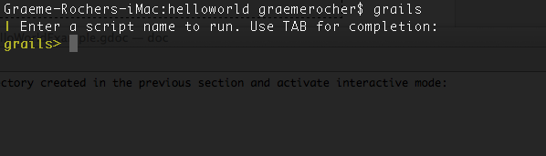
Now run the create-controller command:
grails> create-controller hellograils-app/controllers directory called helloworld/HelloController.groovy.
If no package is specified with create-controller script, Grails automatically uses the application name as the package name. This default is configurable with the grails.project.groupId attribute in Config.groovy.
Controllers are capable of dealing with web requests and to fulfil the "hello world!" use case our implementation needs to look like the following:package helloworldclass HelloController { def world() { render "Hello World!" } }
grails> run-apphttp://localhost:8080/helloworldThe result will look something like the following screenshot: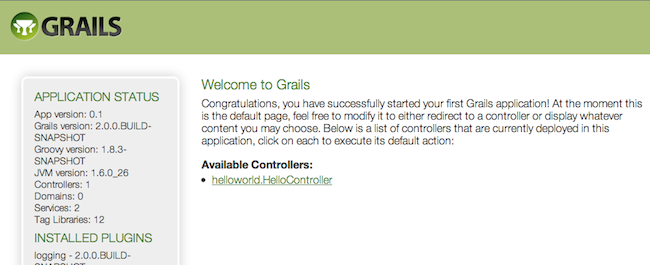
This is the Grails intro page which is rendered by theweb-app/index.gsp file. You will note it has a detected the presence of your controller and clicking on the link to our controller we can see the text "Hello World!" printed to the browser window.
cd 到上一节所创建的"helloworld"目录下，并且激活交互模式，指令如下：$ cd helloworld $ grails
grails> create-controller hellograils-app/controllers目录下边创建一个名字为 helloworld/HelloController.groovy 的控制器（更多信息请参考控制器章节）。
如果在create-controller命令中没有指定包名，那么Grails自动地将应用的名称作为包名.这个缺省配置是通过Config.groovy文件中地 grails.project.groupId 属性来指定地。
控制器主要用来完成对Web请求的处理，为了能够实现"hello world!"示例，我们的实现代码如下：package helloworldclass HelloController { def world() { render "Hello World!" } }
grails> run-apphttp://localhost:8080/helloworld 来访问应用。其显示结果如下图所示：上图是Grails的 web-app/index.gsp 文件所生成的简介页面，你还会看到系统自动检测到的现有控制器，点击它，你将会看到"Hello World!"显示在浏览器窗口。
2.6 使用交互模式
Grails 2.0 features an interactive mode which makes command execution faster since the JVM doesn't have to be restarted for each command. To use interactive mode simple type 'grails' from the root of any projects and use TAB completion to get a list of available commands. See the screenshot below for an example:For more information on the capabilities of interactive mode refer to the section on Interactive Mode in the user guide.
Grails 2.0的交互模式可以让命令执行的更快，因为每个命令无需再重新启动JVM了。要使用交互模式，只需要在工程的根目录下输入'grails'，然后使用TAB键可以得到一个有效的命令列表，如下图所示：更多交互模式的功能请参考本手册的交互模式章节。
2.7 IDE设置
IntelliJ IDEA
IntelliJ IDEA and the JetGroovy plugin offer good support for Groovy and Grails developers. Refer to the section on Groovy and Grails support on the JetBrains website for a feature overview.To integrate Grails with IntelliJ run the following command to generate appropriate project files:grails integrate-with --intellij
IntelliJ IDEA
IntelliJ IDEA和JetGroovy插件为Groovy和Grails的开发提供了非常棒的支持。 JetBrains所支持的特性概览，请参考其Groovy和Grails章节。在Grails中集成IntelliJ，只需要运行如下命令来生成其合适的工程文件即可：grails integrate-with --intellij
Eclipse
We recommend that users of Eclipse looking to develop Grails application take a look at SpringSource Tool Suite, which offers built in support for Grails including automatic classpath management, a GSP editor and quick access to Grails commands. See the STS Integration page for an overview.Eclipse
对使用 Eclipse 来开发Grails应用的用户，我们建议了解一下SpringSource工具集（STS），其内置了对Grails支持，比如自动classpath管理、GSP编辑器以及快速的Grails命令访问。 集成STS页面中有其概况介绍。NetBeans
NetBeans provides a Groovy/Grails plugin that automatically recognizes Grails projects and provides the ability to run Grails applications in the IDE, code completion and integration with the Glassfish server. For an overview of features see the NetBeans Integration guide on the Grails website which was written by the NetBeans team.NetBeans
NetBeans下的Groovy/Grails插件，能够自动识别Grails工程、直接在IDE中运行Grails应用。代码补全以及自动跟Glassfish容器集成。NetBeans团队还在Grails官方网站介绍了集成NetBeans概况。TextMate
Since Grails' focus is on simplicity it is often possible to utilize more simple editors and TextMate on the Mac has an excellent Groovy/Grails bundle available from the Texmate bundles SVN.To integrate Grails with TextMate run the following command to generate appropriate project files:grails integrate-with --textmate
mate .
TextMate
因为Grails一直关注其简单性，因此很简单的编辑器也可以来开发其应用。Mac下的 TextMate 就有很优秀的Groovy/Grails bundle，已经直接在其官方Texmate bundles SVN中了。要在Grails中集成TextMate，只需要运行如下命令来生成其合适的工程文件即可：grails integrate-with --textmate
mate .
2.8 规约配置
Grails uses "convention over configuration" to configure itself. This typically means that the name and location of files is used instead of explicit configuration, hence you need to familiarize yourself with the directory structure provided by Grails.Here is a breakdown and links to the relevant sections:
Grails中的配置遵循“规约优于配置”的原则，即通过文件的名称和位置来替代显式的配置，因此需要熟悉以下几个目录结构的用途。此处仅为一个简单的分解，详细请参考相关章节：
grails-app- top level directory for Groovy sourcesconf- Configuration sources.controllers- Web controllers - The C in MVC.domain- The application domain.i18n- Support for internationalization (i18n).services- The service layer.taglib- Tag libraries.utils- Grails specific utilities.views- Groovy Server Pages - The V in MVC.scripts- Gant scripts.src- Supporting sourcesgroovy- Other Groovy sourcesjava- Other Java sourcestest- Unit and integration tests.
grails-app- Groovy源文件的顶级目录conf- 配置.controllers- Web控制器 - MVC中的C（控制器）.domain- 领域模型.i18n- 国际化(i18n)支持.services- 服务层.taglib- 标签库.utils- Grails相关的工具类.views- Groovy服务器页面（GSP) - MVC中的V(视图).scripts- Gant脚本.src- 源文件目录groovy- 其他的Groovy源文件java- 其他的Java源文件test- 单元和集成测试.
2.9 运行应用
Grails applications can be run with the built in Tomcat server using the run-app command which will load a server on port 8080 by default:You can specify a different port by using the Note that it is better to start up the application in interactive mode since a container restart is much quicker:More information on the run-app command can be found in the reference guide.
run-app命令使用内置的端口为8080的Tomcat容器来运行Grails应用，比如：grails run-app
server.port argument:grails -Dserver.port=8090 run-app
$ grails grails> run-app | Server running. Browse to http://localhost:8080/helloworld | Application loaded in interactive mode. Type 'exit' to shutdown. | Downloading: plugins-list.xml grails> exit | Stopping Grails server grails> run-app | Server running. Browse to http://localhost:8080/helloworld | Application loaded in interactive mode. Type 'exit' to shutdown. | Downloading: plugins-list.xml
grails run-app
server.port 参数来指定不同的端口，比如：grails -Dserver.port=8090 run-app
$ grails grails> run-app | Server running. Browse to http://localhost:8080/helloworld | Application loaded in interactive mode. Type 'exit' to shutdown. | Downloading: plugins-list.xml grails> exit | Stopping Grails server grails> run-app | Server running. Browse to http://localhost:8080/helloworld | Application loaded in interactive mode. Type 'exit' to shutdown. | Downloading: plugins-list.xml
2.10 测试应用
The
那些 create-* commands in Grails automatically create unit or integration tests for you within the test/unit or test/integration directory. It is of course up to you to populate these tests with valid test logic, information on which can be found in the section on Testing.To execute tests you run the test-app command as follows:grails test-app
create-* 命令将会在你的 test/unit 或者 test/integration 目录下自动创建单元或者集成测试，当然了，这些验证这些测试的逻辑还是需要你来处理的，更多信息可以在测试章节中找到。执行这些测试，只需要输入test-app命令即可，比如：grails test-app
2.11 部署应用
Grails applications are deployed as Web Application Archives (WAR files), and Grails includes the war command for performing this task:This will produce a WAR file under the
Grails应用程序以Web应用归档（WAR）文件的形式进行部署，因此Grails提供了war命令，执行如下命令：grails war
target directory which can then be deployed as per your container's instructions.Unlike most scripts which default to the development environment unless overridden, the war command runs in the production environment by default. You can override this like any script by specifying the environment name, for example:grails dev war
NEVER deploy Grails using the run-app command as this command sets Grails up for auto-reloading at runtime which has a severe performance and scalability implicationsWhen deploying Grails you should always run your containers JVM with the
-server option and with sufficient memory allocation. A good set of VM flags would be:-server -Xmx512M -XX:MaxPermSize=256m
grails war
target 目录下产生一个WAR文件，可以根据不同的服务器容器进行相应地部署。跟运行在 development 环境下的大多数其他命令脚本不同， war 命令缺省是运行在 production 环境中的，当然，你也可以通过指定环境名称的方式来覆盖任意脚本缺省环境，比如：grails dev war
一定不要使用run-app命令来部署Grails，因为此命令会在运行时自动加载，这样会对服务器的性能和可扩展性有严重影响。部署Grails的时候，你要确保你容器的JVM总是使用
-server 选项，并且还有有足够的内存。推荐的VM参数如下：-server -Xmx512M -XX:MaxPermSize=256m
2.12 所支持的Java EE容器
Grails runs on any container that supports Servlet 2.5 and above and is known to work on the following specific container products:
Grails可以运行于任何支持Servlet 2.5及其以上的容器，以下这些特定容器已经测试可以工作：
- Tomcat 7
- Tomcat 6
- SpringSource tc Server
- Eclipse Virgo
- GlassFish 3
- GlassFish 2
- Resin 4
- Resin 3
- JBoss 6
- JBoss 5
- Jetty 7
- Jetty 6
- IBM Websphere 7.0
- IBM Websphere 6.1
- Oracle Weblogic 10.3
- Oracle Weblogic 10
- Oracle Weblogic 9
- Tomcat 7
- Tomcat 6
- SpringSource tc Server
- Eclipse Virgo
- GlassFish 3
- GlassFish 2
- Resin 4
- Resin 3
- JBoss 6
- JBoss 5
- Jetty 7
- Jetty 6
- IBM Websphere 7.0
- IBM Websphere 6.1
- Oracle Weblogic 10.3
- Oracle Weblogic 10
- Oracle Weblogic 9
2.13 生成应用
To get started quickly with Grails it is often useful to use a feature called Scaffolding to generate the skeleton of an application. To do this use one of the
在创建完Grails应用后，通常会使用脚手架来生成整个应用程序的骨架。这是通过使用 generate-* commands such as generate-all, which will generate a controller (and its unit test) and the associated views:grails generate-all Book
generate-* 命令来完成的，例如使用generate-all命令来生成控制器（包括单元测试）及相应视图grails generate-all Book
2.14 创建工件
Grails ships with a few convenience targets such as create-controller, create-domain-class and so on that will create Controllers and different artefact types for you.
This will result in the creation of a domain class at There are many such
Grails还为我们提供了像create-controller、 create-domain-class等命令，以方便地创建控制器和其他的工件类型。
These are just for your convenience and you can just as easily use an IDE or your favourite text editor.For example to create the basis of an application you typically need a domain model:
grails create-domain-class book
grails-app/domain/Book.groovy such as:class Book {
}create-* commands that can be explored in the command line reference guide.To decrease the amount of time it takes to run Grails scripts, use the interactive mode.
这些仅仅是方便而已，你依然可以轻松的使用IDE或者你自己喜爱的文本编辑器（比如记事本、TextMate、VIM等--译者注）。以创建一个基本的应用为例，你通常至少需要一个领域模型，比如：
grails create-domain-class book
grails-app/domain/Book.groovy 中创建一个如下所示的领域类：class Book {
}create-* 命令。为了减少Grails脚本的运行时间，请使用commandLine模式。
3 配置
It may seem odd that in a framework that embraces "convention-over-configuration" that we tackle this topic now, but since what configuration there is typically a one-off, it is best to get it out the way.With Grails' default settings you can actually develop an application without doing any configuration whatsoever. Grails ships with an embedded servlet container and in-memory H2 database, so there isn't even a database to set up.However, typically you should configure a more robust database at some point and that is described in the following section.
也许在这里谈论配置对于一个遵循“规约优于配置”的框架来说，会让人感到比较奇怪，但是实际上我们这里所说的配置是两个不同的概念，请不要混淆。实际上Grails的默认配置已经足以我们进行开发，并且它内置了容器和内存模式的H2数据库，这样我们几乎连数据库都不用配置了。不过，在将来你肯定是想要配置一个真正的数据库的，下面的章节将介绍如何实现。
3.1 基本配置
For general configuration Grails provides a file called Then later in your application you can access these settings in one of two ways. The most common is from the GrailsApplication object, which is available as a variable in controllers and tag libraries:The other way involves getting a reference to the ConfigurationHolder class that holds a reference to the configuration object:
Grails提供了一个 grails-app/conf/Config.groovy. This file uses Groovy's ConfigSlurper which is very similar to Java properties files except it is pure Groovy hence you can reuse variables and use proper Java types!You can add your own configuration in here, for example:foo.bar.hello = "world"assert "world" == grailsApplication.config.foo.bar.helloimport org.codehaus.groovy.grails.commons.* … def config = ConfigurationHolder.config assert "world" == config.foo.bar.hello
ConfigurationHolder and ApplicationHolder are deprecated and will be removed in a future version of Grails, so it is highly preferable to access theGrailsApplicationand config from thegrailsApplicationvariable.
grails-app/conf/Config.groovy 配置文件，用来完成通用的配置。此文件除了是Groovy的ConfigSlurper 之外，其他非常类似于Java属性文件，这样就既可以重用变量又可以使用合适的Java类！你可以添加属于你自己的配置信息，例如：foo.bar.hello = "world"assert "world" == grailsApplication.config.foo.bar.helloimport org.codehaus.groovy.grails.commons.* … def config = ConfigurationHolder.config assert "world" == config.foo.bar.hello
ConfigurationHolder和ApplicationHolder现在已经被废弃，并且将在Grails的未来版本中移除，因此强烈推荐采用GrailsApplication的实例变量grailsApplication方式来访问配置对象。
3.1.1 内置选项
Grails also provides the following configuration options:
Grails同样提供了如下配置选项：
grails.config.locations- The location of properties files or addition Grails Config files that should be merged with main configurationgrails.enable.native2ascii- Set this to false if you do not require native2ascii conversion of Grails i18n properties filesgrails.views.default.codec- Sets the default encoding regime for GSPs - can be one of 'none', 'html', or 'base64' (default: 'none'). To reduce risk of XSS attacks, set this to 'html'.grails.views.gsp.encoding- The file encoding used for GSP source files (default is 'utf-8')grails.mime.file.extensions- Whether to use the file extension to dictate the mime type in Content Negotiationgrails.mime.types- A map of supported mime types used for Content Negotiationgrails.serverURL- A string specifying the server URL portion of absolute links, including server name e.g. grails.serverURL="http://my.yourportal.com". See createLink.
grails.config.locations- 配置文件的位置，包括属性文件或者其他需要合并到主配置的Grails配置文件grails.enable.native2ascii- 如果不需要native2ascii来转化Grails i18n属性文件的话，将该选项设为falsegrails.views.default.codec- 设置GSP的默认编码制式，可以是：'none', 'html', 或者 'base64' (缺省为'none'). 为了减少XSS攻击的风险，建议设置成'html'.grails.views.gsp.encoding- GSP源文件的字符编码（缺省是'utf-8'）grails.mime.file.extensions- 是否使用文件的扩展名表示内容协商中的媒体类型(mime type)grails.mime.types- 内容协商所支持的媒体类型grails.serverURL- 一个指向服务器URL的绝对地址，包括服务器名称，比如grails.serverURL="http://my.yourportal.com". 详细请看createLink。
War generation
grails.project.war.file- Sets the name and location of the WAR file generated by the war commandgrails.war.dependencies- A closure containing Ant builder syntax or a list of JAR filenames. Lets you customise what libaries are included in the WAR file.grails.war.copyToWebApp- A closure containing Ant builder syntax that is legal inside an Ant copy, for example "fileset()". Lets you control what gets included in the WAR file from the "web-app" directory.grails.war.resources- A closure containing Ant builder syntax. Allows the application to do any other other work before building the final WAR file
War生成选项
grails.project.war.file- 设置 war 命令生成WAR文件的名称和位置grails.war.dependencies- 符合Ant生成器语法的闭包或者JAR文件的列表,让你可以定制WAR文件所需要的依赖库。grails.war.copyToWebApp- 完成Ant拷贝且满足其生成器语法的闭包，比如"fileset()"。让你控制"web-app"目录下那些资源可以被打包到WAR文件中。grails.war.resources- 符合Ant生成器语法的闭包，运行应用在构建最终的WAR文件前做任何其他的预处理
3.1.2 日志
The Basics
Grails uses its common configuration mechanism to provide the settings for the underlying Log4j log system, so all you have to do is add alog4j setting to the file grails-app/conf/Config.groovy.So what does this log4j setting look like? Here's a basic example:log4j = {
error 'org.codehaus.groovy.grails.web.servlet', // controllers
'org.codehaus.groovy.grails.web.pages' // GSP warn 'org.apache.catalina'
}基础
Grails利用其自身的配置机制来提供对 Log4j 日志系统的配置，因此你所需要做的只是将log4j配置添加到grails-app/conf/Config.groovy配置文件中。那么log4j该配置什么样子呢？下边是一个基础的示例：log4j = {
error 'org.codehaus.groovy.grails.web.servlet', // controllers
'org.codehaus.groovy.grails.web.pages' // GSP warn 'org.apache.catalina'
}Logging levels
The are several standard logging levels, which are listed here in order of descending priority:- off
- fatal
- error
- warn
- info
- debug
- trace
- all
log.error(msg) will log a message at the 'error' level. Likewise, log.debug(msg) will log it at 'debug'. Each of the above levels apart from 'off' and 'all' have a corresponding log method of the same name.The logging system uses that message level combined with the configuration for the logger (see next section) to determine whether the message gets written out. For example, if you have an 'org.example.domain' logger configured like so:warn 'org.example.domain'
日志级别
以下是按照优先级降序（由高到低）排列的标准日志级别：- off
- fatal
- error
- warn
- info
- debug
- trace
- all
log.error(msg)方法，就是使用其'error'级别，同理log.debug(msg)指定的是'debug'。上述从'off'到'all'的级别都有一个同名对应的日志方法。日志系统使用记录器（介绍见下一节）配置的 message 级别来判断此消息是否应该输出，比如你有一个'org.example.domain'记录器，其配置如下：warn 'org.example.domain'
Loggers
Loggers are fundamental to the logging system, but they are a source of some confusion. For a start, what are they? Are they shared? How do you configure them?A logger is the object you log messages to, so in the calllog.debug(msg), log is a logger instance (of type Log). These loggers are cached and uniquely identified by name, so if two separate classes use loggers with the same name, those loggers are actually the same instance.There are two main ways to get hold of a logger:
- use the
loginstance injected into artifacts such as domain classes, controllers and services; - use the Commons Logging API directly.
log property, then the name of the logger is 'grails.app.<type>.<className>', where type is the type of the artifact, for example 'controller' or 'service, and className is the fully qualified name of the artifact. For example, if you have this service:package org.exampleclass MyService {
…
}package org.otherimport org.apache.commons.logging.LogFactoryclass MyClass { private static final log = LogFactory.getLog(this) … }
getLog() method, such as "myLogger", but this is less common because the logging system treats names with dots ('.') in a special way.
记录器（Loggers）
记录器是日志系统的基础，但是依然有一些根源上的困惑，比如它们是什么？可否共享？以及如何配置它们？一个记录器就是你要将信息记录进去的对象，因此log.debug(msg)中的log就是一个记录器实例（其类型是Log）. 这些记录器通过唯一的名字标识被缓存起来，因此如果两个不同的类使用同一个名字的记录器，那么这些记录器是同一个运行实例。主要有两种方法来获取一个记录器：
- 使用注入到工件（比如领域类、控制器以及服务）中的
log实例 - 直接使用Commons Logging API。
log属性，那么记录器的名字是'grails.app.<type>.<className>'，此处的type是工件的类型，比如'controller'或者'service'，而className则是此工件的全名，假设你有如下的一个服务：package org.exampleclass MyService {
…
}package org.otherimport org.apache.commons.logging.LogFactoryclass MyClass { private static final log = LogFactory.getLog(this) … }
getLog()方法，但是这种用法并不常见，因为在日志系统中，名字中的点（'.'）是被特殊处理的。Configuring loggers
You have already seen how to configure loggers in Grails:log4j = {
error 'org.codehaus.groovy.grails.web.servlet'
}org.codehaus.groovy.grails.web.servlet.GrailsDispatcherServlet class and the org.codehaus.groovy.grails.web.servlet.mvc.GrailsWebRequest one.In other words, loggers are hierarchical. This makes configuring them by package much simpler than it would otherwise be.The most common things that you will want to capture log output from are your controllers, services, and other artifacts. Use the convention mentioned earlier to do that: grails.app.<artifactType>.<className> . In particular the class name must be fully qualifed, i.e. with the package if there is one:log4j = {
// Set level for all application artifacts
info "grails.app" // Set for a specific controller in the default package
debug "grails.app.controllers.YourController" // Set for a specific domain class
debug "grails.app.domain.org.example.Book" // Set for all taglibs
info "grails.app.taglib"
}conf- For anything undergrails-app/confsuch asBootStrap.groovy(but excluding filters)filters- For filterstaglib- For tag librariesservices- For service classescontrollers- For controllersdomain- For domain entities
org.codehaus.groovy.grails.commons- Core artifact information such as class loading etc.org.codehaus.groovy.grails.web- Grails web request processingorg.codehaus.groovy.grails.web.mapping- URL mapping debuggingorg.codehaus.groovy.grails.plugins- Log plugin activitygrails.spring- See what Spring beans Grails and plugins are definingorg.springframework- See what Spring is doingorg.hibernate- See what Hibernate is doing
配置记录器
你已在Grails中看到如何配置记录器了，比如：log4j = {
error 'org.codehaus.groovy.grails.web.servlet'
}org.codehaus.groovy.grails.web.servlet.GrailsDispatcherServlet和org.codehaus.groovy.grails.web.servlet.mvc.GrailsWebRequest。换句话说，记录器是分层级的，这使得用包名来配置比其他方式容易很多。在应用中，你最常记录的是控制器、服务以及其他工件的输出日志，这可以通过以前提到过的_grails.app.<artifactType>.<className>_来实现。需要注意的是类名必须是全名（包括包名），如下所示：log4j = {
// Set level for all application artifacts
info "grails.app" // Set for a specific controller in the default package
debug "grails.app.controllers.YourController" // Set for a specific domain class
debug "grails.app.domain.org.example.Book" // Set for all taglibs
info "grails.app.taglib"
}conf-grails-app/conf下的任何类（过滤器除外），比如：BootStrap.groovyfilters- 过滤器taglib- 标签库services- 服务类controllers- 控制器domain- 领域类
org.codehaus.groovy.grails.commons- 核心工件信息，比如类加载等org.codehaus.groovy.grails.web- Grails的web请求处理org.codehaus.groovy.grails.web.mapping- 调试URL映射信息org.codehaus.groovy.grails.plugins- 记录插件的活动情况grails.spring- 在Grails和插件中定义的Spring的beansorg.springframework- Spring的活动情况org.hibernate- Hibernate的活动情况
The Root Logger
All logger objects inherit their configuration from the root logger, so if no explicit configuration is provided for a given logger, then any messages that go to that logger are subject to the rules defined for the root logger. In other words, the root logger provides the default configuration for the logging system.Grails automatically configures the root logger to only handle messages at 'error' level and above, and all the messages are directed to the console (stdout for those with a C background). You can customise this behaviour by specifying a 'root' section in your logging configuration like so:log4j = {
root {
info()
}
…
}log4j = {
appenders {
file name:'file', file:'/var/logs/mylog.log'
}
root {
debug 'stdout', 'file'
}
}org.apache.log4j.Logger instance is passed as an argument to the log4j closure. This lets you work with the logger directly:log4j = { root ->
root.level = org.apache.log4j.Level.DEBUG
…
}Logger instance, refer to the Log4j API documentation.Those are the basics of logging pretty well covered and they are sufficient if you're happy to only send log messages to the console. But what if you want to send them to a file? How do you make sure that messages from a particular logger go to a file but not the console? These questions and more will be answered as we look into appenders.
根记录器
所有的记录器对象配置都是从其根记录器继承而来的，因此一个记录器如果没有明确地配置，那么此记录器的任何消息规则都使用其根记录器的定义。或者说，根记录器提供日志系统的缺省配置。Grails自动地将根记录器配置成只处理'error'级别地消息，并且将这些消息显示在命令行终端（stdout是从C语言中借鉴而来）中。你可以通过'root'来重新定义其行为，比如：log4j = {
root {
info()
}
…
}log4j = {
appenders {
file name:'file', file:'/var/logs/mylog.log'
}
root {
debug 'stdout', 'file'
}
}org.apache.log4j.Logger实例，这让你可以直接操作logger：log4j = { root ->
root.level = org.apache.log4j.Level.DEBUG
…
}Logger实例的信息，请参考Log4j API文档。如果你仅仅满足于将日志信息输出到字符终端，那么目前所涉及到的基本信息已经足够用的了。但是如果你还想输出到一个文件呢？以及想将特定记录器的信息输出到一个特定文件，而不是字符终端，又该如何做呢？这些疑问将在下一节的输出器中得到解答。Appenders
Loggers are a useful mechanism for filtering messages, but they don't physically write the messages anywhere. That's the job of the appender, of which there are various types. For example, there is the default one that writes messages to the console, another that writes them to a file, and several others. You can even create your own appender implementations!This diagram shows how they fit into the logging pipeline: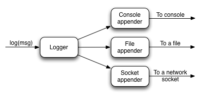
As you can see, a single logger may have several appenders attached to it. In a standard Grails configuration, the console appender named 'stdout' is attached to all loggers through the default root logger configuration. But that's the only one. Adding more appenders can be done within an 'appenders' block:log4j = {
appenders {
rollingFile name: "myAppender",
maxFileSize: 1024,
file: "/tmp/logs/myApp.log"
}
}| Name | Class | Description |
|---|---|---|
| jdbc | JDBCAppender | Logs to a JDBC connection. |
| console | ConsoleAppender | Logs to the console. |
| file | FileAppender | Logs to a single file. |
| rollingFile | RollingFileAppender | Logs to rolling files, for example a new file each day. |
name, maxFileSize and file properties of the RollingFileAppender instance.You can have as many appenders as you like - just make sure that they all have unique names. You can even have multiple instances of the same appender type, for example several file appenders that log to different files.If you prefer to create the appender programmatically or if you want to use an appender implementation that's not available in the above syntax, simply declare an appender entry with an instance of the appender you want:import org.apache.log4j.*log4j = { appenders { appender new RollingFileAppender( name: "myAppender", maxFileSize: 1024, file: "/tmp/logs/myApp.log") } }
JMSAppender, SocketAppender, SMTPAppender, and more.Once you have declared your extra appenders, you can attach them to specific loggers by passing the name as a key to one of the log level methods from the previous section:error myAppender: "grails.app.controllers.BookController"error myAppender: "grails.app.controllers.BookController", myFileAppender: ["grails.app.controllers.BookController", "grails.app.services.BookService"], rollingFile: "grails.app.controllers.BookController"
myFileAppender) by using a list.Be aware that you can only configure a single level for a logger, so if you tried this code:error myAppender: "grails.app.controllers.BookController" debug myFileAppender: "grails.app.controllers.BookController" fatal rollingFile: "grails.app.controllers.BookController"
log4j = {
appenders {
console name: "stdout", threshold: org.apache.log4j.Level.INFO
}
}threshold argument which determines the cut-off for log messages. This argument is available for all appenders, but do note that you currently have to specify a Level instance - a string such as "info" will not work.
输出器（Appenders）
记录器是很好的信息过滤机制，但是它们并不将信息进行任何物理的写操作，这些都是不同类型的输出器所做的事。比如缺省的一个就是将信息输出到字符终端，另外一个输出到一个文件等等，更有甚者，你还可以创建你自己的输出器！下图展示了输出器在日志管道系统中的位置：如你所见，一个记录器可以挂载多个输出器。 在一个标准的Grails配置中，所有从根记录器而来的记录器都有一个名为'stdout'并唯一的字符终端输出器。你可以通过'appenders'代码块来增加更多的输出器，比如：log4j = {
appenders {
rollingFile name: "myAppender",
maxFileSize: 1024,
file: "/tmp/logs/myApp.log"
}
}| 名称 | 类名 | 描述 |
|---|---|---|
| jdbc | JDBCAppender | 记录到JDBC连接。 |
| console | ConsoleAppender | 记录到字符终端。 |
| file | FileAppender | 记录到一个文件。 |
| rollingFile | RollingFileAppender | 记录到滚动文件，比如一天一个新文件。 |
RollingFileAppender的实例中，name、maxFileSize和file都是其属性而已。你可以添加任意你需要的输出器，只要确保它们的名字不重复就可以了。同一类型的输出器，你甚至还可以有多个实例，比如将日志内容输出到不同的文件中。你如果倾向于手工创建输出器或者你需要的输出器不在上述的列表中，那么你只需简单的声明一个appender代码即可，比如：import org.apache.log4j.*log4j = { appenders { appender new RollingFileAppender( name: "myAppender", maxFileSize: 1024, file: "/tmp/logs/myApp.log") } }
JMSAppender、SocketAppender和SMTPAppender等输出器。一旦你声明了这些额外的输出器，那么你还需要将它们跟特定的记录器进行关联，这可以通过记录器的名称和记录级别来完成，比如：error myAppender: "grails.app.controllers.BookController"error myAppender: "grails.app.controllers.BookController", myFileAppender: ["grails.app.controllers.BookController", "grails.app.services.BookService"], rollingFile: "grails.app.controllers.BookController"
myFileAppender)中如何通过列表来配置多个记录器。需要注意的是：一个记录器只能配置一个级别，如果你配置了如下的内容：error myAppender: "grails.app.controllers.BookController" debug myFileAppender: "grails.app.controllers.BookController" fatal rollingFile: "grails.app.controllers.BookController"
log4j = {
appenders {
console name: "stdout", threshold: org.apache.log4j.Level.INFO
}
}threshold参数用以判断那些消息需要截去。此参数对所有的输出器有效，但需要注意的是你必须使用Level实例－"info"字符串的便利用法不能工作。Custom Layouts
By default the Log4j DSL assumes that you want to use a PatternLayout. However, there are other layouts available including:xml- Create an XML log filehtml- Creates an HTML log filesimple- A simple textual logpattern- A Pattern layout
layout setting:log4j = {
appenders {
console name: "customAppender",
layout: pattern(conversionPattern: "%c{2} %m%n")
}
}log4j = {
appenders {
console name: "stdout",
layout: pattern(conversionPattern: "%c{2} %m%n")
}
}自定义布局
多数情况下，Log4j DSL使用缺省的PatternLayout，除此之外，还有以下布局可以选择：xml- 创建一个XML日志文件html- 创建一个HTML日志文件simple- 简单的文本文件pattern- Pattern布局的文件
layout来给一个输出器自定义布局：log4j = {
appenders {
console name: "customAppender",
layout: pattern(conversionPattern: "%c{2} %m%n")
}
}log4j = {
appenders {
console name: "stdout",
layout: pattern(conversionPattern: "%c{2} %m%n")
}
}Environment-specific configuration
Since the logging configuration is insideConfig.groovy, you can put it inside an environment-specific block. However, there is a problem with this approach: you have to provide the full logging configuration each time you define the log4j setting. In other words, you cannot selectively override parts of the configuration - it's all or nothing.To get around this, the logging DSL provides its own environment blocks that you can put anywhere in the configuration:log4j = {
appenders {
console name: "stdout",
layout: pattern(conversionPattern: "%c{2} %m%n") environments {
production {
rollingFile name: "myAppender", maxFileSize: 1024,
file: "/tmp/logs/myApp.log"
}
}
} root {
//…
} // other shared config
info "grails.app.controllers" environments {
production {
// Override previous setting for 'grails.app.controllers'
error "grails.app.controllers"
}
}
}root definition, but you can put the root definition inside an environment block.
特定环境的配置
既然日志是配置在Config.groovy中，你自然也就可以将其配置在环境相关的代码块中。不过这种方式有一个小问题：每次你配置log4j的时候，你必须提供完整的日志配置。或者换句话说，你不能选择性的覆盖部分配置－要么全覆盖要么一点也不覆盖。为了避免此问题，日志DSL提供了自己的environment代码块配置，这样你就可以自由的配置了。log4j = {
appenders {
console name: "stdout",
layout: pattern(conversionPattern: "%c{2} %m%n") environments {
production {
rollingFile name: "myAppender", maxFileSize: 1024,
file: "/tmp/logs/myApp.log"
}
}
} root {
//…
} // other shared config
info "grails.app.controllers" environments {
production {
// Override previous setting for 'grails.app.controllers'
error "grails.app.controllers"
}
}
}root定义的_内部_，但是你可以将其放在environment代码块中。Full stacktraces
When exceptions occur, there can be an awful lot of noise in the stacktrace from Java and Groovy internals. Grails filters these typically irrelevant details and restricts traces to non-core Grails/Groovy class packages.When this happens, the full trace is always logged to theStackTrace logger, which by default writes its output to a file called stacktrace.log. As with other loggers though, you can change its behaviour in the configuration. For example if you prefer full stack traces to go to the console, add this entry:error stdout: "StackTrace"log4j = {
appenders {
rollingFile name: "stacktrace", maxFileSize: 1024,
file: "/var/tmp/logs/myApp-stacktrace.log"
}
}log4j = {
appenders {
'null' name: "stacktrace"
}
}grails.full.stacktrace VM property to true:grails -Dgrails.full.stacktrace=true run-app完整的栈跟踪
当一个异常发生时，可能有大量的来自Java和Groovy内部栈跟踪信息，这其实是很恼人的。Grails的过滤器将这些不相干的细节屏蔽了，并且将栈的跟踪信息限制非Grails/Groovy的类包范围。当异常发生时，完整的跟踪信息总是被记录到StackTrace记录器中，此记录器缺省将内容输出到一个名为stacktrace.log的文件中。跟其他的记录器配合，你还可以改变其在配置中的行为，比如你可以将栈跟踪信息输出到字符终端：error stdout: "StackTrace"log4j = {
appenders {
rollingFile name: "stacktrace", maxFileSize: 1024,
file: "/var/tmp/logs/myApp-stacktrace.log"
}
}log4j = {
appenders {
'null' name: "stacktrace"
}
}grails.full.stacktrace为true来实现，比如：grails -Dgrails.full.stacktrace=true run-appMasking Request Parameters From Stacktrace Logs
When Grails logs a stacktrace, the log message may include the names and values of all of the request parameters for the current request. To mask out the values of secure request parameters, specify the parameter names in thegrails.exceptionresolver.params.exclude config property:grails.exceptionresolver.params.exclude = ['password', 'creditCard']
grails.exceptionresolver.logRequestParameters config property to false. The default value is true when the application is running in DEVELOPMENT mode and false for all other modes.grails.exceptionresolver.logRequestParameters=false屏蔽栈跟踪日志中的请求参数
当Grails记录栈跟踪信息的时候，有可能将当前请求参数的名称和值一并包含了。为了避免隐私信息被记录，可以通过设置grails.exceptionresolver.params.exclude来屏蔽那些有关隐私字段的名称，比如：grails.exceptionresolver.params.exclude = ['password', 'creditCard']
grails.exceptionresolver.logRequestParameters为false的方式来禁止掉。其运行于“开发”模式下，缺省值是true，除此之外的其他模式为false。grails.exceptionresolver.logRequestParameters=falseLogger inheritance
Earlier, we mentioned that all loggers inherit from the root logger and that loggers are hierarchical based on '.'-separated terms. What this means is that unless you override a parent setting, a logger retains the level and the appenders configured for that parent. So with this configuration:log4j = {
appenders {
file name:'file', file:'/var/logs/mylog.log'
}
root {
debug 'stdout', 'file'
}
}log4j = {
appenders {
…
}
root {
…
} info additivity: false
stdout: ["grails.app.controllers.BookController",
"grails.app.services.BookService"]
}info additivity: false, ["grails.app.controllers.BookController", "grails.app.services.BookService"]
记录器的继承
早期，我们提到过所有的记录器都是从跟记录器继承而来的，其继承的层次是通过'.'来分割的。这意味着一个记录器将一直使用其上一级的级别和输出器配置，当然了你覆盖除外。以如下配置为例：log4j = {
appenders {
file name:'file', file:'/var/logs/mylog.log'
}
root {
debug 'stdout', 'file'
}
}log4j = {
appenders {
…
}
root {
…
} info additivity: false
stdout: ["grails.app.controllers.BookController",
"grails.app.services.BookService"]
}info additivity: false, ["grails.app.controllers.BookController", "grails.app.services.BookService"]
Customizing stack trace printing and filtering
Stacktraces in general and those generated when using Groovy in particular are quite verbose and contain many stack frames that aren't interesting when diagnosing problems. So Grails uses a implementation of theorg.codehaus.groovy.grails.exceptions.StackTraceFilterer interface to filter out irrelevant stack frames. To customize the approach used for filtering, implement that interface in a class in src/groovy or src/java and register it in Config.groovy:grails.logging.stackTraceFiltererClass =
'com.yourcompany.yourapp.MyStackTraceFilterer'org.codehaus.groovy.grails.exceptions.StackTracePrinter interface in a class in src/groovy or src/java and register it in Config.groovy:grails.logging.stackTracePrinterClass =
'com.yourcompany.yourapp.MyStackTracePrinter'org.codehaus.groovy.grails.web.errors.ErrorsViewStackTracePrinter and it's registered as a Spring bean. To use your own implementation, either implement the org.codehaus.groovy.grails.exceptions.StackTraceFilterer directly or subclass ErrorsViewStackTracePrinter and register it in grails-app/conf/spring/resources.groovy as:import com.yourcompany.yourapp.MyErrorsViewStackTracePrinterbeans = { errorsViewStackTracePrinter(MyErrorsViewStackTracePrinter,
ref('grailsResourceLocator'))
}自定义栈跟踪的输出和过滤
总的来说，Groovy生成的那些特定栈跟踪信息是比较冗余的，并且对于诊断问题也造成不少的干扰。因此Grails使用org.codehaus.groovy.grails.exceptions.StackTraceFilterer接口来完成对不相关信息的过滤。要完成对特定信息的过滤，只需要再src/groovy或者src/java中实现上述接口，并且在Config.groovy注册一下即可：grails.logging.stackTraceFiltererClass =
'com.yourcompany.yourapp.MyStackTraceFilterer'org.codehaus.groovy.grails.exceptions.StackTracePrinter接口，并且在Config.groovy中注册即可：grails.logging.stackTracePrinterClass =
'com.yourcompany.yourapp.MyStackTracePrinter'org.codehaus.groovy.grails.web.errors.ErrorsViewStackTracePrinter，并且被注册为一个Spring服务。你也可以通过实现org.codehaus.groovy.grails.exceptions.StackTraceFilterer接口或者定义ErrorsViewStackTracePrinter的子类来实现属于自己的渲染器，并且将其在grails-app/conf/spring/resources.groovy中注册，如下：import com.yourcompany.yourapp.MyErrorsViewStackTracePrinterbeans = { errorsViewStackTracePrinter(MyErrorsViewStackTracePrinter,
ref('grailsResourceLocator'))
}Alternative logging libraries
By default, Grails uses Log4J to do its logging. For most people this is absolutely fine, and many users don't even care what logging library is used. But if you're not one of those and want to use an alternative, such as the JDK logging package or logback, you can do so by simply excluding a couple of dependencies from the global set and adding your own:grails.project.dependency.resolution = {
inherits("global") {
excludes "grails-plugin-logging", "log4j"
}
…
dependencies {
runtime "ch.qos.logback:logback-core:0.9.29"
…
}
…
}替换日志框架
缺省情况下，Grails使用Log4J来完成日志操作。对大多数的人来说，这绝对绰绰有余，而且很多的用户也根本就不关心使用那个日志框架。但是，如果你不是那些大多数，并且确实很想使用另外一个替代品，比如JDK自带的日志包或者logback。这时候，你只需要简单地全局设置中排除一些依赖，并且添加你自己地依赖即可，比如：grails.project.dependency.resolution = {
inherits("global") {
excludes "grails-plugin-logging", "log4j"
}
…
dependencies {
runtime "ch.qos.logback:logback-core:0.9.29"
…
}
…
}3.1.3 配置GORM
Grails provides the following GORM configuration options:
and to enable failOnError for domain classes by package:
Grails提供了如下的GORM配置选项：
grails.gorm.failOnError- If set totrue, causes thesave()method on domain classes to throw agrails.validation.ValidationExceptionif validation fails during a save. This option may also be assigned a list of Strings representing package names. If the value is a list of Strings then the failOnError behavior will only be applied to domain classes in those packages (including sub-packages). See the save method docs for more information.
grails.gorm.failOnError=truegrails.gorm.failOnError = ['com.companyname.somepackage',
'com.companyname.someotherpackage']grails.gorm.failOnError- 如果此选项值为true并且在保存的时候 校验 失败，那么此领域类的save()方法将抛出一个grails.validation.ValidationException异常。此选项的值还可以是代表包名的字符串列表。如果是字符串列表的话，那么failOnError仅仅作用于属于这些包名（包括子包名）的领域类。更多详细信息请参考 save 方法
grails.gorm.failOnError=truegrails.gorm.failOnError = ['com.companyname.somepackage',
'com.companyname.someotherpackage']grails.gorm.autoFlush= 如果此选项值为true，那么将导致 merge、 save 和 delete 方法不需要明确地指定flush参数（比如save(flush: true)）而清除会话的行为。
3.2 环境
Per Environment Configuration
Grails supports the concept of per environment configuration. TheConfig.groovy, DataSource.groovy, and BootStrap.groovy files in the grails-app/conf directory can use per-environment configuration using the syntax provided by ConfigSlurper. As an example consider the following default DataSource definition provided by Grails:dataSource {
pooled = false
driverClassName = "org.h2.Driver"
username = "sa"
password = ""
}
environments {
development {
dataSource {
dbCreate = "create-drop"
url = "jdbc:h2:mem:devDb"
}
}
test {
dataSource {
dbCreate = "update"
url = "jdbc:h2:mem:testDb"
}
}
production {
dataSource {
dbCreate = "update"
url = "jdbc:h2:prodDb"
}
}
}environments block specifies per environment settings for the dbCreate and url properties of the DataSource.
不同环境（Per Environment）配置
Grails支持不同环境配置的概念。grails-app/conf目录下的Config.groovy、DataSource.groovy和BootStrap.groovy文件都支持 ConfigSlurper 语法的不同环境配置。Grails自带的缺省DataSource定义，就是一个很好的示例：dataSource {
pooled = false
driverClassName = "org.h2.Driver"
username = "sa"
password = ""
}
environments {
development {
dataSource {
dbCreate = "create-drop"
url = "jdbc:h2:mem:devDb"
}
}
test {
dataSource {
dbCreate = "update"
url = "jdbc:h2:mem:testDb"
}
}
production {
dataSource {
dbCreate = "update"
url = "jdbc:h2:prodDb"
}
}
}environments代码块中DataSource的dbCreate和url属性。Packaging and Running for Different Environments
Grails' command line has built in capabilities to execute any command within the context of a specific environment. The format is:grails [environment] [command name]
dev, prod, and test for development, production and test. For example to create a WAR for the test environment you wound run:grails test war
grails.env variable to any command:grails -Dgrails.env=UAT run-app
不同环境下的运行和打包
Grails的命令行中内置了特定环境下执行命令的能力，其格式为：grails [environment] [command name]
dev、prod和test，分别代表了开发、生产和测试环境。比如，要创建test环境的WAR，可以运行如下命令：grails test war
grails.env变量：grails -Dgrails.env=UAT run-app
Programmatic Environment Detection
Within your code, such as in a Gant script or a bootstrap class you can detect the environment using the Environment class:import grails.util.Environment...switch (Environment.current) { case Environment.DEVELOPMENT: configureForDevelopment() break case Environment.PRODUCTION: configureForProduction() break }
可编程的环境检测
在你的代码中，比如Gant脚本或者启动类，你通过Environment类可以检测到当前的环境，比如：import grails.util.Environment...switch (Environment.current) { case Environment.DEVELOPMENT: configureForDevelopment() break case Environment.PRODUCTION: configureForProduction() break }
Per Environment Bootstrapping
Its often desirable to run code when your application starts up on a per-environment basis. To do so you can use thegrails-app/conf/BootStrap.groovy file's support for per-environment execution:def init = { ServletContext ctx ->
environments {
production {
ctx.setAttribute("env", "prod")
}
development {
ctx.setAttribute("env", "dev")
}
}
ctx.setAttribute("foo", "bar")
}不同环境下的启动
通常你的应用启动时，需要根据不同的环境运行相应的代码，为此你可以使用grails-app/conf/BootStrap.groovy文件来执行不同环境下的处理：def init = { ServletContext ctx ->
environments {
production {
ctx.setAttribute("env", "prod")
}
development {
ctx.setAttribute("env", "dev")
}
}
ctx.setAttribute("foo", "bar")
}Generic Per Environment Execution
The previousBootStrap example uses the grails.util.Environment class internally to execute. You can also use this class yourself to execute your own environment specific logic:Environment.executeForCurrentEnvironment {
production {
// do something in production
}
development {
// do something only in development
}
}不同环境下的通用处理
在以前的BootStrap示例中，我们使用grails.util.Environment类做了内部处理。你也可以通过此类来执行特定环境中的逻辑，比如：Environment.executeForCurrentEnvironment {
production {
// do something in production
}
development {
// do something only in development
}
}3.3 数据源
Since Grails is built on Java technology setting up a data source requires some knowledge of JDBC (the technology that doesn't stand for Java Database Connectivity).If you use a database other than H2 you need a JDBC driver. For example for MySQL you would need Connector/JDrivers typically come in the form of a JAR archive. It's best to use Ivy to resolve the jar if it's available in a Maven repository, for example you could add a dependency for the MySQL driver like this:Note that the built-in Example of advanced configuration using extra properties:
既然Grails是基于Java技术来设置数据源的，那么一些JDBC的知识是必不可少的。如果你的数据库并非H2，那么你至少还需要一个JDBC驱动。以MySQL为例，你需要下载Connector/J驱动通常打包成JAR。如果你需要的jar在Maven的存储库中存在，那么最好是通过Ivy来解析它们，比如下面是对MySQL驱动的依赖：grails.project.dependency.resolution = {
inherits("global")
log "warn"
repositories {
grailsPlugins()
grailsHome()
grailsCentral()
mavenCentral()
}
dependencies {
runtime 'mysql:mysql-connector-java:5.1.16'
}
}mavenCentral() repository is included here since that's a reliable location for this library.If you can't use Ivy then just put the JAR in your project's lib directory.Once you have the JAR resolved you need to get familiar Grails' DataSource descriptor file located at grails-app/conf/DataSource.groovy. This file contains the dataSource definition which includes the following settings:
driverClassName- The class name of the JDBC driverusername- The username used to establish a JDBC connectionpassword- The password used to establish a JDBC connectionurl- The JDBC URL of the databasedbCreate- Whether to auto-generate the database from the domain model - one of 'create-drop', 'create', 'update' or 'validate'pooled- Whether to use a pool of connections (defaults to true)logSql- Enable SQL logging to stdoutformatSql- Format logged SQLdialect- A String or Class that represents the Hibernate dialect used to communicate with the database. See the org.hibernate.dialect package for available dialects.readOnly- Iftruemakes the DataSource read-only, which results in the connection pool callingsetReadOnly(true)on eachConnectionproperties- Extra properties to set on the DataSource bean. See the Commons DBCP BasicDataSource documentation.
dataSource {
pooled = true
dbCreate = "update"
url = "jdbc:mysql://localhost/yourDB"
driverClassName = "com.mysql.jdbc.Driver"
dialect = org.hibernate.dialect.MySQL5InnoDBDialect
username = "yourUser"
password = "yourPassword"
}When configuring the DataSource do not include the type or the def keyword before any of the configuration settings as Groovy will treat these as local variable definitions and they will not be processed. For example the following is invalid:
dataSource {
boolean pooled = true // type declaration results in ignored local variable
…
}dataSource {
pooled = true
dbCreate = "update"
url = "jdbc:mysql://localhost/yourDB"
driverClassName = "com.mysql.jdbc.Driver"
dialect = org.hibernate.dialect.MySQL5InnoDBDialect
username = "yourUser"
password = "yourPassword"
properties {
maxActive = 50
maxIdle = 25
minIdle = 5
initialSize = 5
minEvictableIdleTimeMillis = 60000
timeBetweenEvictionRunsMillis = 60000
maxWait = 10000
validationQuery = "/* ping */"
}
}grails.project.dependency.resolution = {
inherits("global")
log "warn"
repositories {
grailsPlugins()
grailsHome()
grailsCentral()
mavenCentral()
}
dependencies {
runtime 'mysql:mysql-connector-java:5.1.16'
}
}mavenCentral()存储库，因为此jar包位于其中。如果Ivy找不到，那么只需要将JAR放到你工程的lib目录即可。一旦解决了JAR的问题，你需要来熟悉一下位于grails-app/conf/DataSource.groovy中的Grails数据源描述了。此文件包含如下所述的一些数据源的定义：
driverClassName- JDBC驱动的类名username- 建立JDBC连接的用户名password- 建立JDBC连接的密码url- JDBC数据库的URLdbCreate- 是否根据领域类自动生成数据库-可以是'create-drop'、'create'、'update'或者'validate'pooled- 是否使用连接池（缺省是true)logSql- 是否将SQL输出到字符终端formatSql- 格式化SQLdialect- Hibernate用于跟数据库通讯的方言（dialect），可以是字符串或者类名。可以通过org.hibernate.dialect来查看所支撑的方言。readOnly- 如果是true那么此数据源就是只读的，这是通过调用连接池的Connection的setReadOnly(true)来实现的。properties- 设置数据源的额外属性。更多请参考Commons DBCP的 BasicDataSource文档。
dataSource {
pooled = true
dbCreate = "update"
url = "jdbc:mysql://localhost/yourDB"
driverClassName = "com.mysql.jdbc.Driver"
dialect = org.hibernate.dialect.MySQL5InnoDBDialect
username = "yourUser"
password = "yourPassword"
}在配置数据源的时候，不要在配置名前加入任何类型或者def关键字，因为Groovy将其视为一个本地变量定义而将其忽略。比如：
dataSource {
boolean pooled = true // type declaration results in ignored local variable
…
}dataSource {
pooled = true
dbCreate = "update"
url = "jdbc:mysql://localhost/yourDB"
driverClassName = "com.mysql.jdbc.Driver"
dialect = org.hibernate.dialect.MySQL5InnoDBDialect
username = "yourUser"
password = "yourPassword"
properties {
maxActive = 50
maxIdle = 25
minIdle = 5
initialSize = 5
minEvictableIdleTimeMillis = 60000
timeBetweenEvictionRunsMillis = 60000
maxWait = 10000
validationQuery = "/* ping */"
}
}More on dbCreate
Hibernate can automatically create the database tables required for your domain model. You have some control over when and how it does this through thedbCreate property, which can take these values:
- create - Drops the existing schemaCreates the schema on startup, dropping existing tables, indexes, etc. first.
- create-drop - Same as create, but also drops the tables when the application shuts down cleanly.
- update - Creates missing tables and indexes, and updates the current schema without dropping any tables or data. Note that this can't properly handle many schema changes like column renames (you're left with the old column containing the existing data).
- validate - Makes no changes to your database. Compares the configuration with the existing database schema and reports warnings.
- any other value - does nothing
dbCreate setting completely, which is recommended once your schema is relatively stable and definitely when your application and database are deployed in production. Database changes are then managed through proper migrations, either with SQL scripts or a migration tool like Liquibase (the Database Migration plugin uses Liquibase and is tightly integrated with Grails and GORM).
关于dbCreate
Hibernate能够根据你的领域类来自动创建数据库表。你可以通过dbCreate属性来进行一些控制，其可选值如下：
- create - 在启动时候，先删除已存在的，包括表、索引等，然后创建。
- create-drop - 同 create，不过在应用关闭的时候，也进行表删除。
- update - 创建不存在的表和索引，并且在不删除表和数据的情况下更新表结构。注意此种情况于很多限制，比如你不能很好地处理重命名字段（旧有地字段依然保留）
- validate - 不改变你数据库地任何信息，只是跟现有地数据库配置脚本进行比较，并且报告一个警告。
- 其他 - 什么都不做
dbCreate完全移除。数据库的变更迁移可以通过SQL脚本或者迁移工具，比如Liquibase（数据库迁移 插件就是通过Liquibase来跟Grails和GORM紧密集成的)来完成。
3.3.1 数据源和环境
The previous example configuration assumes you want the same config for all environments: production, test, development etc.Grails' DataSource definition is "environment aware", however, so you can do:
在前面的配置示例中，不管是在生产、测试还是开发环境中，我们假设所有的配置都是一样的，但是Grails的数据源定义是可以跟环境相关的，因此，你可以象下面的示例那样进行处理：dataSource {
pooled = true
driverClassName = "com.mysql.jdbc.Driver"
dialect = org.hibernate.dialect.MySQL5InnoDBDialect
// other common settings here
}environments {
production {
dataSource {
url = "jdbc:mysql://liveip.com/liveDb"
// other environment-specific settings here
}
}
}dataSource {
pooled = true
driverClassName = "com.mysql.jdbc.Driver"
dialect = org.hibernate.dialect.MySQL5InnoDBDialect
// other common settings here
}environments {
production {
dataSource {
url = "jdbc:mysql://liveip.com/liveDb"
// other environment-specific settings here
}
}
}3.3.2 JNDI数据源
Referring to a JNDI DataSource
Most Java EE containers supplyDataSource instances via Java Naming and Directory Interface (JNDI). Grails supports the definition of JNDI data sources as follows:dataSource {
jndiName = "java:comp/env/myDataSource"
}DataSource in Grails remains the same.
引用JNDI数据源
大部分的Java EE容器支持 Java命名服务接口 (JNDI)的DataSource，Grails也支持如下格式的JNDI数据源定义：dataSource {
jndiName = "java:comp/env/myDataSource"
}DataSource的定义却是保持一致的。Configuring a Development time JNDI resource
The way in which you configure JNDI data sources at development time is plugin dependent. Using the Tomcat plugin you can define JNDI resources using thegrails.naming.entries setting in grails-app/conf/Config.groovy:grails.naming.entries = [
"bean/MyBeanFactory": [
auth: "Container",
type: "com.mycompany.MyBean",
factory: "org.apache.naming.factory.BeanFactory",
bar: "23"
],
"jdbc/EmployeeDB": [
type: "javax.sql.DataSource", //required
auth: "Container", // optional
description: "Data source for Foo", //optional
driverClassName: "org.h2.Driver",
url: "jdbc:h2:mem:database",
username: "dbusername",
password: "dbpassword",
maxActive: "8",
maxIdle: "4"
],
"mail/session": [
type: "javax.mail.Session,
auth: "Container",
"mail.smtp.host": "localhost"
]
]开发环境中配置JNDI资源
在开发环境中，配置JNDI数据源的方式是跟插件相关的。如果你是在用 Tomcat 插件的话，可以通过grails-app/conf/Config.groovy中的grails.naming.entries来配置JNDI资源，比如：grails.naming.entries = [
"bean/MyBeanFactory": [
auth: "Container",
type: "com.mycompany.MyBean",
factory: "org.apache.naming.factory.BeanFactory",
bar: "23"
],
"jdbc/EmployeeDB": [
type: "javax.sql.DataSource", //required
auth: "Container", // optional
description: "Data source for Foo", //optional
driverClassName: "org.h2.Driver",
url: "jdbc:h2:mem:database",
username: "dbusername",
password: "dbpassword",
maxActive: "8",
maxIdle: "4"
],
"mail/session": [
type: "javax.mail.Session,
auth: "Container",
"mail.smtp.host": "localhost"
]
]3.3.3 自动数据库迁移
The
dbCreate property of the DataSource definition is important as it dictates what Grails should do at runtime with regards to automatically generating the database tables from GORM classes. The options are described in the DataSource section:
createcreate-dropupdatevalidate- no value
dbCreate is by default set to "create-drop", but at some point in development (and certainly once you go to production) you'll need to stop dropping and re-creating the database every time you start up your server.It's tempting to switch to update so you retain existing data and only update the schema when your code changes, but Hibernate's update support is very conservative. It won't make any changes that could result in data loss, and doesn't detect renamed columns or tables, so you'll be left with the old one and will also have the new one.Grails supports Rails-style migrations via the Database Migration plugin which can be installed by running
grails install-plugin database-migrationDataSource中的dbCreate属性是很重要的，正如其所暗示，Grails将根据此值和GORM类在运行时来自动生成数据库表。可选项已经在数据源章节中介绍：
createcreate-dropupdatevalidate- 空
dbCreate通常设置为"create-drop"，但是当开发到一定程度（更进一步要运行于生产环境），你将不会再采用这种每次启动先删除再创建的方式。当你想保留数据并且只想更新所变化的代码时，可以尝试使用update。不过Hibernate对更新的支撑是非常保守的。其在数据安全方面不能给你任何保证，此外它也不能自动检测到字段或者表的重命名，因此在新增的同时旧有的依然保留。Grails现在支撑Rails风格的数据库迁移了，这是通过安装和运行 Database Migration 插件来实现的。
grails install-plugin database-migration3.3.4 事务感知的数据源代理
The actual or by pulling it from the
dataSource bean is wrapped in a transaction-aware proxy so you will be given the connection that's being used by the current transaction or Hibernate Session if one is active.If this were not the case, then retrieving a connection from the dataSource would be a new connection, and you wouldn't be able to see changes that haven't been committed yet (assuming you have a sensible transaction isolation setting, e.g. READ_COMMITTED or better).The "real" unproxied dataSource is still available to you if you need access to it; its bean name is dataSourceUnproxied.You can access this bean like any other Spring bean, i.e. using dependency injection:class MyService { def dataSourceUnproxied
…
}ApplicationContext:def dataSourceUnproxied = ctx.dataSourceUnproxied
dataSource 实际上只是事务感知代理的封装，因此你得到的数据库连接是来自于当前事务或者当前活动的Hibernate的Session。除此之外，直接从dataSource获取的连接将是一个新连接，你将看不到任何没有提交的变化（假设你设置了事务隔离敏感度，比如READ_COMMITTED或者更高）。那个"真实的"未被代理的dataSource对你来说，依然可用，只不过其bean名称是dataSourceUnproxied。你可用想其他Spring bean那样来访问此bean，比如使用依赖注入：class MyService { def dataSourceUnproxied
…
}ApplicationContext中获取：def dataSourceUnproxied = ctx.dataSourceUnproxied
3.3.5 数据库管理界面
The H2 database console is a convenient feature of H2 that provides a web-based interface to any database that you have a JDBC driver for, and it's very useful to view the database you're developing against. It's especially useful when running against an in-memory database.You can access the console by navigating to http://localhost:8080/appname/dbconsole in a browser. The URI can be configured using the
H2数据库管理界面是在H2特性的基础上提供的一个基于WEB界面的数据库管理，用以管理任何基于JDBC的数据库，在开发阶段用来查看数据库非常有用，尤其在你的应用运行于数据库的内存模式时。你可以在浏览器中通过 http://localhost:8080/appname/dbconsole 来使用访问。此URI可以通过配置Config.groovy中的grails.dbconsole.urlRoot attribute in Config.groovy and defaults to '/dbconsole'.The console is enabled by default in development mode and can be disabled or enabled in other environments by using the grails.dbconsole.enabled attribute in Config.groovy. For example you could enable the console in production usingenvironments {
production {
grails.serverURL = "http://www.changeme.com"
grails.dbconsole.enabled = true
grails.dbconsole.urlRoot = '/admin/dbconsole'
}
development {
grails.serverURL = "http://localhost:8080/${appName}"
}
test {
grails.serverURL = "http://localhost:8080/${appName}"
}
}If you enable the console in production be sure to guard access to it using a trusted security framework.
grails.dbconsole.urlRoot属性来改变，缺省是'/dbconsole'。此界面在开发模式下缺省是有效的，你也可以通过修改Config.groovy中的grails.dbconsole.enabled属性来使其在其他环境模式下失效或者生效。比如，你可以在生产环境中使其生效：environments {
production {
grails.serverURL = "http://www.changeme.com"
grails.dbconsole.enabled = true
grails.dbconsole.urlRoot = '/admin/dbconsole'
}
development {
grails.serverURL = "http://localhost:8080/${appName}"
}
test {
grails.serverURL = "http://localhost:8080/${appName}"
}
}如果你要在生产环境中使用此功能，请确保使用安全可信的框架来保护。
Configuration
By default the console is configured for an H2 database which will work with the default settings if you haven't configured an external database - you just need to change the JDBC URL tojdbc:h2:mem:devDB. If you've configured an external database (e.g. MySQL, Oracle, etc.) then you can use the Saved Settings dropdown to choose a settings template and fill in the url and username/password information from your DataSource.groovy.
配置
缺省情况下，如果你没有使用外部数据库，那么数据库管理界面是使用H2数据库的，其JDBC的URL配置成jdbc:h2:mem:devDB即可。但是如果你使用的是一个外部数据库（比如MySQL、 Oracle等），那你需要从下拉框中选择合适的JDBC配置模板，并且配置合适的url、用户名／密码，要确保跟DataSource.groovy的配置是一致的。
3.3.6 多数据源
By default all domain classes share a single
缺省情况下，所有的领域类共享同一个DataSource and a single database, but you have the option to partition your domain classes into two or more DataSources.
DataSource和数据库，但是你还是有将领域类拆分到两个甚至更多个DataSource的选择的。Configuring Additional DataSources
The defaultDataSource configuration in grails-app/conf/DataSource.groovy looks something like this:dataSource {
pooled = true
driverClassName = "org.h2.Driver"
username = "sa"
password = ""
}
hibernate {
cache.use_second_level_cache = true
cache.use_query_cache = true
cache.provider_class = 'net.sf.ehcache.hibernate.EhCacheProvider'
}environments {
development {
dataSource {
dbCreate = "create-drop"
url = "jdbc:h2:mem:devDb"
}
}
test {
dataSource {
dbCreate = "update"
url = "jdbc:h2:mem:testDb"
}
}
production {
dataSource {
dbCreate = "update"
url = "jdbc:h2:prodDb"
}
}
}DataSource with the Spring bean named dataSource. To configure extra DataSources, add another dataSource block (at the top level, in an environment block, or both, just like the standard DataSource definition) with a custom name, separated by an underscore. For example, this configuration adds a second DataSource, using MySQL in the development environment and Oracle in production:environments {
development {
dataSource {
dbCreate = "create-drop"
url = "jdbc:h2:mem:devDb"
}
dataSource_lookup {
dialect = org.hibernate.dialect.MySQLInnoDBDialect
driverClassName = 'com.mysql.jdbc.Driver'
username = 'lookup'
password = 'secret'
url = 'jdbc:mysql://localhost/lookup'
dbCreate = 'update'
}
}
test {
dataSource {
dbCreate = "update"
url = "jdbc:h2:mem:testDb"
}
}
production {
dataSource {
dbCreate = "update"
url = "jdbc:h2:prodDb"
}
dataSource_lookup {
dialect = org.hibernate.dialect.Oracle10gDialect
driverClassName = 'oracle.jdbc.driver.OracleDriver'
username = 'lookup'
password = 'secret'
url = 'jdbc:oracle:thin:@localhost:1521:lookup'
dbCreate = 'update'
}
}
}配置额外的数据源
缺省的DataSource配置是位于grails-app/conf/DataSource.groovy中的，大体样子如下：dataSource {
pooled = true
driverClassName = "org.h2.Driver"
username = "sa"
password = ""
}
hibernate {
cache.use_second_level_cache = true
cache.use_query_cache = true
cache.provider_class = 'net.sf.ehcache.hibernate.EhCacheProvider'
}environments {
development {
dataSource {
dbCreate = "create-drop"
url = "jdbc:h2:mem:devDb"
}
}
test {
dataSource {
dbCreate = "update"
url = "jdbc:h2:mem:testDb"
}
}
production {
dataSource {
dbCreate = "update"
url = "jdbc:h2:prodDb"
}
}
}dataSource的DataSource。要配置额外的DataSource，需要增加另外一个自定义名称（以下划线分割）的dataSource（跟标准的DataSource类似，只不过要定义在在最外层、环境代码块或者同时两个地方）代码块即可。例如，以下代码的配置新增了第二个DataSource，其在开发环境下是MySQL数据库，在生产环境下是Oracle：environments {
development {
dataSource {
dbCreate = "create-drop"
url = "jdbc:h2:mem:devDb"
}
dataSource_lookup {
dialect = org.hibernate.dialect.MySQLInnoDBDialect
driverClassName = 'com.mysql.jdbc.Driver'
username = 'lookup'
password = 'secret'
url = 'jdbc:mysql://localhost/lookup'
dbCreate = 'update'
}
}
test {
dataSource {
dbCreate = "update"
url = "jdbc:h2:mem:testDb"
}
}
production {
dataSource {
dbCreate = "update"
url = "jdbc:h2:prodDb"
}
dataSource_lookup {
dialect = org.hibernate.dialect.Oracle10gDialect
driverClassName = 'oracle.jdbc.driver.OracleDriver'
username = 'lookup'
password = 'secret'
url = 'jdbc:oracle:thin:@localhost:1521:lookup'
dbCreate = 'update'
}
}
}Configuring Domain Classes
If a domain class has noDataSource configuration, it defaults to the standard 'dataSource'. Set the datasource property in the mapping block to configure a non-default DataSource. For example, if you want to use the ZipCode domain to use the 'lookup' DataSource, configure it like this;class ZipCode { String code static mapping = {
datasource 'lookup'
}
}DataSources. Use the datasources property with a list of names to configure more than one, for example:class ZipCode { String code static mapping = {
datasources(['lookup', 'auditing'])
}
}DataSource and one or more others, use the special name 'DEFAULT' to indicate the default DataSource:class ZipCode { String code static mapping = {
datasources(['lookup', 'DEFAULT'])
}
}DataSources use the special value 'ALL':class ZipCode { String code static mapping = {
datasource 'ALL'
}
}配置领域类
如果一个领域类没有配置DataSource，那么其缺省使用标准的'dataSource'。你可以在mapping代码块中设置datasource属性来配置一个非标准的DataSource。例如，你希望ZipCode使用名为'lookup'的DataSource，其配置如下：class ZipCode { String code static mapping = {
datasource 'lookup'
}
}DataSources。这时候，只需要将datasources设置为一个名称的列表即可，比如：class ZipCode { String code static mapping = {
datasources(['lookup', 'auditing'])
}
}DataSource，可以使用名称为'DEFAULT'来代表缺省的DataSource：class ZipCode { String code static mapping = {
datasources(['lookup', 'DEFAULT'])
}
}DataSource，请使用特定名称'ALL'：class ZipCode { String code static mapping = {
datasource 'ALL'
}
}Namespaces and GORM Methods
If a domain class uses more than oneDataSource then you can use the namespace implied by each DataSource name to make GORM calls for a particular DataSource. For example, consider this class which uses two DataSources:class ZipCode { String code static mapping = {
datasources(['lookup', 'auditing'])
}
}DataSource specified is the default when not using an explicit namespace, so in this case we default to 'lookup'. But you can call GORM methods on the 'auditing' DataSource with the DataSource name, for example:def zipCode = ZipCode.auditing.get(42) … zipCode.auditing.save()
DataSource to the method call in both the static case and the instance case.
命名空间和GORM方法
如果一个领域类使用了多于一个的DataSource，你可以将其每个DataSource名称作为命名空间，并且以此命名来执行GORM的方法调用。例如，下面示例的类有两个DataSource：class ZipCode { String code static mapping = {
datasources(['lookup', 'auditing'])
}
}DataSource被视为缺省，上例中其缺省命名空间是'lookup'。但是你也可以在'auditing'的DataSource上执行GORM方法，比如：def zipCode = ZipCode.auditing.get(42) … zipCode.auditing.save()
DataSource上进行静态和实例类型的方法调用。Services
Like Domain classes, by default Services use the defaultDataSource and PlatformTransactionManager. To configure a Service to use a different DataSource, use the static datasource property, for example:class DataService { static datasource = 'lookup' void someMethod(...) {
…
}
}DataSource, so be sure to only make changes for domain classes whose DataSource is the same as the Service.Note that the datasource specified in a service has no bearing on which datasources are used for domain classes; that's determined by their declared datasources in the domain classes themselves. It's used to declare which transaction manager to use.What you'll see is that if you have a Foo domain class in dataSource1 and a Bar domain class in dataSource2, and WahooService uses dataSource1, a service method that saves a new Foo and a new Bar will only be transactional for Foo since they share the datasource. The transaction won't affect the Bar instance. If you want both to be transactional you'd need to use two services and XA datasources for two-phase commit, e.g. with the Atomikos plugin.
服务类
跟领域类相似，服务类也是使用缺省的DataSource和PlatformTransactionManager。要配置服务使用另外一个不同的DataSource，请使用静态的（static）datasource属性，比如：class DataService { static datasource = 'lookup' void someMethod(...) {
…
}
}DataSource，因此请确保领域类的DataSource的名字要跟服务类中定义的一致。注意，一个服务类的datasource不对领域类的datasources产生影响，后者由其自身的声明决定。服务类的datasource多用来声明要使用哪一个事务管理器。假设你有两个数据源，领域类Foo属于dataSource1，Bar属于dataSource2，而WahooService使用dataSource1，此外还有一个方法来实现Foo和Bar的新增保存，那么只有Foo是支持事务的，因为他们共享dataSource1数据源。而Bar实例并不受事务影响。如果你想两者都支持事务，那么你需要两个服务类和支持两阶段提交的XA数据源，比如使用Atomikos插件。XA and Two-phase Commit
Grails has no native support for XADataSources or two-phase commit, but the Atomikos plugin makes it easy. See the plugin documentation for the simple changes needed in your DataSource definitions to reconfigure them as XA DataSources.
XA和两阶段（Two-phase）提交
Grails并没有直接支持XADataSources 或者 两阶段提交，但是Atomikos 插件使两者变得容易。此插件的文档有介绍如何比较容易的将现有的DataSource定义重新配置为XA DataSources。
3.4 外部配置
Some deployments require that configuration be sourced from more than one place and be changeable without requiring a rebuild of the application. In order to support deployment scenarios such as these the configuration can be externalized. To do so, point Grails at the locations of the configuration files that should be used by adding a In the above example we're loading configuration files (both Java Properties files and ConfigSlurper configurations) from different places on the classpath and files located in This can be useful in situations where the config is either coming from a plugin or some other part of your application. A typical use for this is re-using configuration provided by plugins across multiple applications.Ultimately all configuration files get merged into the
某些部署要求配置信息可以放在多个源文件中，并且在不需要重现编译打包的情况下可被修改。为了能够支撑这些特定的部署场景，Grails的配置信息可以在外部进行配置。要完成此功能，只需要设置grails.config.locations setting in Config.groovy, for example:grails.config.locations = [
"classpath:${appName}-config.properties",
"classpath:${appName}-config.groovy",
"file:${userHome}/.grails/${appName}-config.properties",
"file:${userHome}/.grails/${appName}-config.groovy" ]USER_HOME.It is also possible to load config by specifying a class that is a config script.grails.config.locations = [com.my.app.MyConfig]
config property of the GrailsApplication object and are hence obtainable from there.Values that have the same name as previously defined values will overwrite the existing values, and the pointed to configuration sources are loaded in the order in which they are defined.
Config.groovy中的grails.config.locations的值来指向配置文件的位置即可，比如：grails.config.locations = [
"classpath:${appName}-config.properties",
"classpath:${appName}-config.groovy",
"file:${userHome}/.grails/${appName}-config.properties",
"file:${userHome}/.grails/${appName}-config.groovy" ]USER_HOME下加载不同的配置文件（包括Java属性文件和Groovy的ConfigSlurper也可以通过配置脚本的类名来加载，比如：grails.config.locations = [com.my.app.MyConfig]
config属性中，因此，要获取使用也是通过它来实现的。配置中如果一个名字有多个值，那么新值将覆盖旧的，其顺序是根据源文件的加载顺序来定义的。Config Defaults
The configuration values contained in the locations described by thegrails.config.locations property will override any values defined in your application Config.groovy file which may not be what you want. You may want to have a set of default values be be loaded that can be overridden in either your application's Config.groovy file or in a named config location. For this you can use the grails.config.defaults.locations property.This property supports the same values as the grails.config.locations property (i.e. paths to config scripts, property files or classes), but the config described by grails.config.defaults.locations will be loaded before all other values and can therefore be overridden. Some plugins use this mechanism to supply one or more sets of default configuration that you can choose to include in your application config.Grails also supports the concept of property place holders and property override configurers as defined in Spring For more information on these see the section on Grails and Spring
缺省配置
通过grails.config.locations定义的配置将 优先于 你在Config.groovy文件中的任意值，这也许并非你所需要的。你希望Config.groovy或者特定位置的文件才能加载并且重载特定的 缺省值 ，这种情况，你可以通过配置grails.config.defaults.locations属性来实现。此属性的值跟grails.config.locations一样（可以是特定路径下的配置脚本、属性文件或者类名），但与之不同的是通过grails.config.defaults.locations来配置的值比其他方式加载的 更早 ，因此也就可有被重载。有些插件就是通过此机制来实现一个或者多个缺省配置的。Grails还支撑Spring 配置中属性占位符和覆盖的概念。更多信息请参考Grails和Spring章节
3.5 版本
Versioning Basics
Grails has built in support for application versioning. The version of the application is set to0.1 when you first create an application with the create-app command. The version is stored in the application meta data file application.properties in the root of the project.To change the version of your application you can edit the file manually, or run the set-version command:grails set-version 0.2
版本基础
Grails内置了对应用版本的支持。当你第一次通过create-app来创建应用的时候，其版本设置为0.1。版本信息被存储在工程根目录下的application.properties文件种。要改变应用的版本，你可以手工修改此文件，或者运行set-version命令，比如：grails set-version 0.2
Detecting Versions at Runtime
You can detect the application version using Grails' support for application metadata using the GrailsApplication class. For example within controllers there is an implicit grailsApplication variable that can be used:def version = grailsApplication.metadata['app.version']
def grailsVersion = grailsApplication.metadata['app.grails.version']
GrailsUtil class:import grails.util.GrailsUtil
…
def grailsVersion = GrailsUtil.grailsVersion运行期间检测版本
你可以使用GrailsApplication类来检测应用的版本信息，比如在控制器中，就有一个隐含的grailsApplication变量可用：def version = grailsApplication.metadata['app.version']
def grailsVersion = grailsApplication.metadata['app.grails.version']
GrailsUtil类来获取Grails的版本：import grails.util.GrailsUtil
…
def grailsVersion = GrailsUtil.grailsVersion3.6 文档引擎
Since Grails 1.2, the documentation engine that powers the creation of this documentation has been available for your own Grails projects.The documentation engine uses a variation on the Textile syntax to automatically create project documentation with smart linking, formatting etc.
从Grails 1.2以来，本文的文档就是通过文档引擎来创建的，并且对你的Grails项目文档也是有效的。文档引擎在Textile语法基础上，进行了一些改动，以适应自动创建工程文档的需要，此文档支持灵活链接、格式化等功能。Creating project documentation
To use the engine you need to follow a few conventions. First, you need to create asrc/docs/guide directory where your documentation source files will go. Then, you need to create the source docs themselves. Each chapter should have its own gdoc file as should all numbered sub-sections. You will end up with something like:+ src/docs/guide/introduction.gdoc + src/docs/guide/introduction/changes.gdoc + src/docs/guide/gettingStarted.gdoc + src/docs/guide/configuration.gdoc + src/docs/guide/configuration/build.gdoc + src/docs/guide/configuration/build/controllers.gdoc
src/docs/guide/toc.yml file that contains the structure and titles for each section. This file is in YAML format and basically represents the structure of the user guide in tree form. For example, the above files could be represented as:introduction:
title: Introduction
changes: Change Log
gettingStarted: Getting Started
configuration:
title: Configuration
build:
title: Build Config
controllers: Specifying Controllerstitle: plus the title of the section as seen by the end user. Every sub-section then has its own line after the title. Leaf nodes, i.e. those without any sub-sections, declare their title on the same line as the section name but after the colon.That's it. You can easily add, remove, and move sections within the toc.yml to restructure the generated user guide. You should also make sure that all section names, i.e. the gdoc filenames, should be unique since they are used for creating internal links and for the HTML filenames. Don't worry though, the documentation engine will warn you of duplicate section names.
创建工程文档
为了使用此引擎，你需要遵循一些约定。首先，你需要创建src/docs/guide目录用来存放文档的源文件。其次，需要创建文档文件，每一章节应该是独立的一个gdoc文件，并且还应该按照子章节的序号排列。比如下面示例：+ src/docs/guide/introduction.gdoc + src/docs/guide/introduction/changes.gdoc + src/docs/guide/gettingStarted.gdoc + src/docs/guide/configuration.gdoc + src/docs/guide/configuration/build.gdoc + src/docs/guide/configuration/build/controllers.gdoc
src/docs/guide/toc.yml文件，用以描述章节的结构和标题。 此YAML格式的文件用以表述手册的树形格式的结构。比如上述的文件可以用如下的描述：introduction:
title: Introduction
changes: Change Log
gettingStarted: Getting Started
configuration:
title: Configuration
build:
title: Build Config
controllers: Specifying Controllerstitle:加对此章节的标题描述，在标题后边是每一个子章节的信息。如果子章节是一个叶子节点（不包含子章节的章节）其标题跟章节名称在同一行就好了，但要以冒号分割（可以参考上述示例－－译者注）。搞定！你可以轻松地添加、删除和移动toc.yml中的章节，这样就可以重新排版用户手册了。此外你也需要确认所有的章节名称（gdoc文件名称）是全局唯一的，因为那些内部超链接和HTML名称也要用到它们。不过也无需太担心，文档引擎将提示你那些重复的章节名称。Creating reference items
Reference items appear in the Quick Reference section of the documentation. Each reference item belongs to a category and a category is a directory located in thesrc/docs/ref directory. For example, suppose you have defined a new controller method called renderPDF. That belongs to the Controllers category so you would create a gdoc text file at the following location:+ src/docs/ref/Controllers/renderPDF.gdoc
创建条目(Item)引用
条目引用出现在文档的快速引用章节。每一个引用都属于一个类别，此类别位于src/docs/ref中。举例来说，假设你定义了一个新的控制器方法renderPDF，此方法属于Controllers类别，那么你应该在如下所示的位置创建一个gdoc文本文件：+ src/docs/ref/Controllers/renderPDF.gdoc
Configuring Output Properties
There are various properties you can set within yourgrails-app/conf/Config.groovy file that customize the output of the documentation such as:
- grails.doc.title - The title of the documentation
- grails.doc.subtitle - The subtitle of the documentation
- grails.doc.authors - The authors of the documentation
- grails.doc.license - The license of the software
- grails.doc.copyright - The copyright message to display
- grails.doc.footer - The footer to use
配置输出属性
在grails-app/conf/Config.groovy文件中，你有很多不同的属性可以设置，用以自定义文档的输出，比如：
- grails.doc.title - 文档的标题
- grails.doc.subtitle - 文档的子标题
- grails.doc.authors - 文档的作者
- grails.doc.license - 软件的许可证
- grails.doc.copyright - 要显示的版权信息
- grails.doc.footer - 脚注
Generating Documentation
Once you have created some documentation (refer to the syntax guide in the next chapter) you can generate an HTML version of the documentation using the command:grails doc
docs/manual/index.html which can be opened in a browser to view your documentation.
生成文档
一旦你创建了文档（语法请参考下一节），你就可以生成HTML版本的文档了，命令如下：grails doc
docs/manual/index.html，这样你就可以在浏览器中查看文档了。Documentation Syntax
As mentioned the syntax is largely similar to Textile or Confluence style wiki markup. The following sections walk you through the syntax basics.文档语法
正如以前所述，文档语法跟Textile或者Confluence风格的wiki标签。下述章节将对基本的语法做个简单地介绍。Basic Formatting
Monospace:monospace
@monospace@
_italic_
*bold*

!http://grails.org/images/new/grailslogo_topNav.png!
基本格式
等宽字体:monospace
@monospace@
_italic_
*bold*
!http://grails.org/images/new/grailslogo_topNav.png!
Linking
There are several ways to create links with the documentation generator. A basic external link can either be defined using confluence or textile style markup:[SpringSource|http://www.springsource.com/]
"SpringSource":http://www.springsource.com/guide: prefix with the name of the section you want to link to:[Intro|guide:introduction]
[controllers|renderPDF]
api: prefix. For example:[String|api:java.lang.String]
grails-app/conf/Config.groovy. For example:grails.doc.api.org.hibernate=
"http://docs.jboss.org/hibernate/stable/core/javadocs"org.hibernate package to link to the Hibernate website's API docs.
超链接
文档生成链接的方式有几种，基本的外部链接（指向本文档之外的超链接－－译者注）可以使用confluence或者textile风格的标签：[SpringSource|http://www.springsource.com/]
"SpringSource":http://www.springsource.com/guide:前缀和你要指向的章节名称：[Intro|guide:introduction]
[controllers|renderPDF]
api:前缀。比如：[String|api:java.lang.String]
grails-app/conf/Config.groovy来进行配置，比如：grails.doc.api.org.hibernate=
"http://docs.jboss.org/hibernate/stable/core/javadocs"org.hibernate包指向Hibernate的官方API文档。Lists and Headings
Headings can be created by specifying the letter 'h' followed by a number and then a dot:h3.<space>Heading3 h4.<space>Heading4
* item 1 ** subitem 1 ** subitem 2 * item 2
# item 1
table macro:| Name | Number |
|---|---|
| Albert | 46 |
| Wilma | 1348 |
| James | 12 |
{table}
*Name* | *Number*
Albert | 46
Wilma | 1348
James | 12
{table}列表和标头
标头可以通过字母'h'加数字再加一个点来表示，比如：h3.<space>Heading3 h4.<space>Heading4
* item 1 ** subitem 1 ** subitem 2 * item 2
# item 1
table来实现：| Name | Number |
|---|---|
| Albert | 46 |
| Wilma | 1348 |
| James | 12 |
{table}
*Name* | *Number*
Albert | 46
Wilma | 1348
James | 12
{table}Code and Notes
You can define code blocks with thecode macro:class Book {
String title
}{code}
class Book {
String title
}
{code}<hello>world</hello>
{code:xml}
<hello>world</hello>
{code}This is a note!
{note}
This is a note!
{note}This is a warning!
{warning}
This is a warning!
{warning}代码和提示
你可以通过宏code来定义代码块，比如：class Book {
String title
}{code}
class Book {
String title
}
{code}<hello>world</hello>
{code:xml}
<hello>world</hello>
{code}This is a note!
{note}
This is a note!
{note}This is a warning!
{warning}
This is a warning!
{warning}3.7 依赖解析
Grails features a dependency resolution DSL that lets you control how plugins and JAR dependencies are resolved.You specify a The default configuration looks like the following:The details of the above will be explained in the next few sections.
Grails提供了依赖解析的DSL来处理插件和JAR的依赖处理。你可以在grails.project.dependency.resolution property inside the grails-app/conf/BuildConfig.groovy file that configures how dependencies are resolved:grails.project.dependency.resolution = {
// config here
}grails.project.class.dir = "target/classes" grails.project.test.class.dir = "target/test-classes" grails.project.test.reports.dir = "target/test-reports" //grails.project.war.file = "target/${appName}-${appVersion}.war"grails.project.dependency.resolution = { // inherit Grails' default dependencies inherits("global") { // uncomment to disable ehcache // excludes 'ehcache' } log "warn" repositories { grailsPlugins() grailsHome() grailsCentral() // uncomment these to enable remote dependency resolution // from public Maven repositories //mavenCentral() //mavenLocal() //mavenRepo "http://snapshots.repository.codehaus.org" //mavenRepo "http://repository.codehaus.org" //mavenRepo "http://download.java.net/maven/2/" //mavenRepo "http://repository.jboss.com/maven2/" } dependencies { // specify dependencies here under either 'build', 'compile', // 'runtime', 'test' or 'provided' scopes eg. // runtime 'mysql:mysql-connector-java:5.1.16' } plugins { compile ":hibernate:$grailsVersion" compile ":jquery:1.6.1.1" compile ":resources:1.0" build ":tomcat:$grailsVersion" } }
grails-app/conf/BuildConfig.groovy中设置grails.project.dependency.resolution属性来配置依赖是如何解析的，模板如下：grails.project.dependency.resolution = {
// config here
}grails.project.class.dir = "target/classes" grails.project.test.class.dir = "target/test-classes" grails.project.test.reports.dir = "target/test-reports" //grails.project.war.file = "target/${appName}-${appVersion}.war"grails.project.dependency.resolution = { // inherit Grails' default dependencies inherits("global") { // uncomment to disable ehcache // excludes 'ehcache' } log "warn" repositories { grailsPlugins() grailsHome() grailsCentral() // uncomment these to enable remote dependency resolution // from public Maven repositories //mavenCentral() //mavenLocal() //mavenRepo "http://snapshots.repository.codehaus.org" //mavenRepo "http://repository.codehaus.org" //mavenRepo "http://download.java.net/maven/2/" //mavenRepo "http://repository.jboss.com/maven2/" } dependencies { // specify dependencies here under either 'build', 'compile', // 'runtime', 'test' or 'provided' scopes eg. // runtime 'mysql:mysql-connector-java:5.1.16' } plugins { compile ":hibernate:$grailsVersion" compile ":jquery:1.6.1.1" compile ":resources:1.0" build ":tomcat:$grailsVersion" } }
3.7.1 配置和依赖
Grails features five dependency resolution configurations (or 'scopes'):
This uses the string syntax: In Maven terminology,
Grails提供了如下5种依赖解析配置（或者是‘范围’）：
-
build: Dependencies for the build system only -
compile: Dependencies for the compile step -
runtime: Dependencies needed at runtime but not for compilation (see above) -
test: Dependencies needed for testing but not at runtime (see above) -
provided: Dependencies needed at development time, but not during WAR deployment
dependencies block you can specify a dependency that falls into one of these configurations by calling the equivalent method. For example if your application requires the MySQL driver to function at runtime you can specify that like this:runtime 'com.mysql:mysql-connector-java:5.1.16'
group:name:version. You can also use a Map-based syntax:runtime group: 'com.mysql',
name: 'mysql-connector-java',
version: '5.1.16'group corresponds to an artifact's groupId and name corresponds to its artifactId.Multiple dependencies can be specified by passing multiple arguments:runtime 'com.mysql:mysql-connector-java:5.1.16',
'net.sf.ehcache:ehcache:1.6.1'// Orruntime(
[group:'com.mysql', name:'mysql-connector-java', version:'5.1.16'],
[group:'net.sf.ehcache', name:'ehcache', version:'1.6.1']
)-
build: 只在系统构建时的依赖 -
compile: 编译阶段时的依赖 -
runtime: 运行阶段的依赖，不包括编译阶段（见上解释） -
test: 测试阶段的依赖，不包括运行阶段 -
provided: 开发阶段的依赖，不包括WAR部署阶段
dependencies代码块中，你可以通过同等的方法调用方式来指定一个依赖。比如你的应用中需要runtime的MySQL驱动，你可以这样处理：runtime 'com.mysql:mysql-connector-java:5.1.16'
group:name:version，你也可以使用Map格式的语法：runtime group: 'com.mysql',
name: 'mysql-connector-java',
version: '5.1.16'group跟工件（artifact）的groupId相对应，name跟artifactId相对应。多个依赖可以通过多参数方式来处理：runtime 'com.mysql:mysql-connector-java:5.1.16',
'net.sf.ehcache:ehcache:1.6.1'// Orruntime(
[group:'com.mysql', name:'mysql-connector-java', version:'5.1.16'],
[group:'net.sf.ehcache', name:'ehcache', version:'1.6.1']
)Disabling transitive dependency resolution
By default, Grails will not only get the JARs and plugins that you declare, but it will also get their transitive dependencies. This is usually what you want, but there are occasions where you want a dependency without all its baggage. In such cases, you can disable transitive dependency resolution on a case-by-case basis:runtime('com.mysql:mysql-connector-java:5.1.16',
'net.sf.ehcache:ehcache:1.6.1') {
transitive = false
}// Or
runtime group:'com.mysql',
name:'mysql-connector-java',
version:'5.1.16',
transitive:false禁用依赖解析的传递性
缺省情况下，Grails不仅仅获取你直接声明的JAR和插件，还包含其间接所依赖的。多数情况下，这正是你所需要的，不过在个别情况下，你并不需要这种传递性的依赖。这时，你可以有针对地禁止传递依赖，比如：runtime('com.mysql:mysql-connector-java:5.1.16',
'net.sf.ehcache:ehcache:1.6.1') {
transitive = false
}// Or
runtime group:'com.mysql',
name:'mysql-connector-java',
version:'5.1.16',
transitive:falseExcluding specific transitive dependencies
A far more common scenario is where you want the transitive dependencies, but some of them cause issues with your own dependencies or are unnecessary. For example, many Apache projects have 'commons-logging' as a transitive dependency, but it shouldn't be included in a Grails project (we use SLF4J). That's where theexcludes option comes in:runtime('com.mysql:mysql-connector-java:5.1.16',
'net.sf.ehcache:ehcache:1.6.1') {
excludes "xml-apis", "commons-logging"
}// Or
runtime(group:'com.mysql', name:'mysql-connector-java', version:'5.1.16') {
excludes([ group: 'xml-apis', name: 'xml-apis'],
[ group: 'org.apache.httpcomponents' ],
[ name: 'commons-logging' ])exclude as well, but that can only accept a single string or Map:runtime('com.mysql:mysql-connector-java:5.1.16',
'net.sf.ehcache:ehcache:1.6.1') {
exclude "xml-apis"
}排除特定的依赖
传递依赖对你来说是如此的常用，但也有会跟你自己的依赖冲突或者重复的情况，比如很多的Apache项目都有依赖于'commons-logging'，但是它不能被包含于Grails工程（其使用的是SLF4J）。因此就产生了excludes选项，比如：runtime('com.mysql:mysql-connector-java:5.1.16',
'net.sf.ehcache:ehcache:1.6.1') {
excludes "xml-apis", "commons-logging"
}// Or
runtime(group:'com.mysql', name:'mysql-connector-java', version:'5.1.16') {
excludes([ group: 'xml-apis', name: 'xml-apis'],
[ group: 'org.apache.httpcomponents' ],
[ name: 'commons-logging' ])exclude来排除，不过此处只能接收一个字符串或者Map：runtime('com.mysql:mysql-connector-java:5.1.16',
'net.sf.ehcache:ehcache:1.6.1') {
exclude "xml-apis"
}Using Ivy module configurations
If you use Ivy module configurations and wish to depend on a specific configuration of a module, you can use thedependencyConfiguration method to specify the configuration to use.provided("my.org:web-service:1.0") { dependencyConfiguration "api" }
"default" will be used (which is also the correct value for dependencies coming from Maven style repositories).
使用Ivy模块配置
如果你是使用Ivy的模块配置，并且希望依赖于某一特定模块，你可以使用dependencyConfiguration方法来指定：provided("my.org:web-service:1.0") { dependencyConfiguration "api" }
"default"缺省配置（其也可以兼容来自Maven风格的存储仓库）。Where are the JARs?
With all these declarative dependencies, you may wonder where all the JARs end up. They have to go somewhere after all. By default Grails puts them into a directory, called the dependency cache, that resides on your local file system atuser.home/.grails/ivy-cache. You can change this either via the settings.groovy file:grails.dependency.cache.dir = "${userHome}/.my-dependency-cache"grails.project.dependency.resolution = {
…
cacheDir "target/ivy-cache"
…
}settings.groovy option applies to all projects, so it's the preferred approach.
JAR在哪里？
对于所有声明的依赖，你可能好奇，这些JAR都到哪里去了？它们总要有个地方来保存的。缺省情况下，Grails将它们放到依赖缓存的目录，其位于你本地文件系统中user.home/.grails/ivy-cache。你也可以通过settings.groovy来修改，比如：grails.dependency.cache.dir = "${userHome}/.my-dependency-cache"grails.project.dependency.resolution = {
…
cacheDir "target/ivy-cache"
…
}settings.groovy的选项将应用于所有的工程，因为它是最优先使用的。
3.7.2 依赖存储库
Remote Repositories
Initially your BuildConfig.groovy does not use any remote public Maven repositories. There is a defaultgrailsHome() repository that will locate the JAR files Grails needs from your Grails installation. To use a public repository, specify it in the repositories block:repositories {
mavenCentral()
}ebr() method:repositories {
ebr()
}repositories {
mavenRepo "http://repository.codehaus.org"
}repositories {
mavenRepo name: "Codehaus", root: "http://repository.codehaus.org"
}远程存储仓库
刚创建的BuildConfig.groovy文件并没有使用任何远程的公共Maven存储库，在那里只有一个缺省的grailsHome()用以从Grails安装目录定位所需要的JAR文件。要使用远程的公共存储库，请使用 repositories代码块，比如：repositories {
mavenCentral()
}ebr()方法：repositories {
ebr()
}repositories {
mavenRepo "http://repository.codehaus.org"
}repositories {
mavenRepo name: "Codehaus", root: "http://repository.codehaus.org"
}Controlling Repositories Inherited from Plugins
A plugin you have installed may define a reference to a remote repository just as an application can. By default your application will inherit this repository definition when you install the plugin.If you do not wish to inherit repository definitions from plugins then you can disable repository inheritance:repositories {
inherit false
}控制插件存储库地继承
通常，你安装的插件会定义一个远程的存储库，缺省情况下，而你的应用将继承你安装插件中的存储库的定义。如果你不希望继承来自插件的存储库定义，你可以禁止这种存储库的继承：repositories {
inherit false
}Offline Mode
There are times when it is not desirable to connect to any remote repositories (whilst working on the train for example!). In this case you can use theoffline flag to execute Grails commands and Grails will not connect to any remote repositories:grails --offline run-app
Note that this command will fail if you do not have the necessary dependencies in your local Ivy cacheYou can also globally configure offline mode by setting
grails.offline.mode to true in ~/.grails/settings.groovy or in your project's BuildConfig.groovy file:grails.offline.mode=true离线模式
偶尔的时候，你将不能访问任何远程的存储库（比如在火车上工作时）。此种情况下，你可以使用offline标志来执行Grails命令，这样Grails将不会连接任何远程存储库，比如：grails --offline run-app
注意：如果你本地Ivy缓存中没有所需的依赖，上述命令将会出错。你还可以通过设置
~/.grails/settings.groovy或者工程中BuildConfig.groovy文件中的grails.offline.mode为true的方式，将其配置为全局离线模式：grails.offline.mode=trueLocal Resolvers
If you do not wish to use a public Maven repository you can specify a flat file repository:repositories {
flatDir name:'myRepo', dirs:'/path/to/repo'
}~/.m2/repository) as a repository:repositories {
mavenLocal()
}本地解析器
如果你不希望使用远程的Maven存储库，你可以指定一个平面文件（flat file）存储器：repositories {
flatDir name:'myRepo', dirs:'/path/to/repo'
}~/.m2/repository）作为存储器，可以用下面的处理：repositories {
mavenLocal()
}Custom Resolvers
If all else fails since Grails builds on Apache Ivy you can specify an Ivy resolver:/* * Configure our resolver. */ def libResolver = new org.apache.ivy.plugins.resolver.URLResolver() ['libraries', 'builds'].each { libResolver.addArtifactPattern( "http://my.repository/${it}/" + "[organisation]/[module]/[revision]/[type]s/[artifact].[ext]") libResolver.addIvyPattern( "http://my.repository/${it}/" + "[organisation]/[module]/[revision]/[type]s/[artifact].[ext]") }libResolver.name = "my-repository" libResolver.settings = ivySettingsresolver libResolver
import org.apache.ivy.plugins.resolver.SshResolver … repositories { ... def sshResolver = new SshResolver( name: "myRepo", user: "username", host: "dev.x.com", keyFile: new File("/home/username/.ssh/id_rsa"), m2compatible: true) sshResolver.addArtifactPattern( "/home/grails/repo/[organisation]/[artifact]/" + "[revision]/[artifact]-[revision].[ext]") sshResolver.latestStrategy = new org.apache.ivy.plugins.latest.LatestTimeStrategy() sshResolver.changingPattern = ".*SNAPSHOT" sshResolver.setCheckmodified(true) resolver sshResolver }
grails -classpath /path/to/jsch compile|run-app|etc.
CLASSPATH environment variable but be aware this it affects many Java applications. An alternative on Unix is to create an alias for grails -classpath ... so that you don't have to type the extra arguments each time.
自定义解析器
如果上述的都失败了，你还可以自定义一个Ivy解析器，因为Grails是基于Apache Ivy构建的：/* * Configure our resolver. */ def libResolver = new org.apache.ivy.plugins.resolver.URLResolver() ['libraries', 'builds'].each { libResolver.addArtifactPattern( "http://my.repository/${it}/" + "[organisation]/[module]/[revision]/[type]s/[artifact].[ext]") libResolver.addIvyPattern( "http://my.repository/${it}/" + "[organisation]/[module]/[revision]/[type]s/[artifact].[ext]") }libResolver.name = "my-repository" libResolver.settings = ivySettingsresolver libResolver
import org.apache.ivy.plugins.resolver.SshResolver … repositories { ... def sshResolver = new SshResolver( name: "myRepo", user: "username", host: "dev.x.com", keyFile: new File("/home/username/.ssh/id_rsa"), m2compatible: true) sshResolver.addArtifactPattern( "/home/grails/repo/[organisation]/[artifact]/" + "[revision]/[artifact]-[revision].[ext]") sshResolver.latestStrategy = new org.apache.ivy.plugins.latest.LatestTimeStrategy() sshResolver.changingPattern = ".*SNAPSHOT" sshResolver.setCheckmodified(true) resolver sshResolver }
grails -classpath /path/to/jsch compile|run-app|etc.
CLASSPATH环境变量中，不要要注意，这可能会影响很多的Java应用。在Unix下，你可以为grails -classpath ...创建一个别名，这样就可以不需要每次都敲额外的参数了。Authentication
If your repository requires authentication you can configure this using acredentials block:credentials {
realm = ".."
host = "localhost"
username = "myuser"
password = "mypass"
}USER_HOME/.grails/settings.groovy file using the grails.project.ivy.authentication setting:grails.project.ivy.authentication = {
credentials {
realm = ".."
host = "localhost"
username = "myuser"
password = "mypass"
}
}验证
如果你的存储仓库需要验证，那么你可以通过credentials代码块来进行配置，比如：credentials {
realm = ".."
host = "localhost"
username = "myuser"
password = "mypass"
}USER_HOME/.grails/settings.groovy文件中的grails.project.ivy.authentication来实现：grails.project.ivy.authentication = {
credentials {
realm = ".."
host = "localhost"
username = "myuser"
password = "mypass"
}
}3.7.3 调试解析
If you are having trouble getting a dependency to resolve you can enable more verbose debugging from the underlying engine using the A common issue is that the checksums for a dependency don't match the associated JAR file, and so Ivy rejects the dependency. This helps ensure that the dependencies are valid. But for a variety of reasons some dependencies simply don't have valid checksums in the repositories, even if they are valid JARs. To get round this, you can disable Ivy's dependency checks like so:This is a global setting, so only use it if you have to.
如果你解析依赖遇到了问题的话，你可以使用基本的log method:// log level of Ivy resolver, either 'error', 'warn',
// 'info', 'debug' or 'verbose'
log "warn"grails.project.dependency.resolution = {
…
log "warn"
checksums false
…
}log方法来显示更多的调试信息：// log level of Ivy resolver, either 'error', 'warn',
// 'info', 'debug' or 'verbose'
log "warn"grails.project.dependency.resolution = {
…
log "warn"
checksums false
…
}3.7.4 依赖继承
By default every Grails application inherits several framework dependencies. This is done through the line:Inside the
缺省情况下，每一个Grails应用都继承多个框架依赖，配置如下：inherits "global"BuildConfig.groovy file. To exclude specific inherited dependencies you use the excludes method:inherits("global") { excludes "oscache", "ehcache" }
inherits "global"BuildConfig.groovy文件中，你可以通过excludes方法来排除掉指定的依赖，比如：inherits("global") { excludes "oscache", "ehcache" }
3.7.5 缺省的依赖
Most Grails applications have runtime dependencies on several jar files that are provided by the Grails framework. These include libraries like Spring, Sitemesh, Hibernate etc. When a war file is created, all of these dependencies will be included in it. But, an application may choose to exclude these jar files from the war. This is useful when the jar files will be provided by the container, as would normally be the case if multiple Grails applications are deployed to the same container.The dependency resolution DSL provides a mechanism to express that all of the default dependencies will be provided by the container. This is done by invoking the
大部分的Grails应用依赖于Grails框架自带的一些jar文件，比如Spring、Sitemesh和Hibernate等等。当创建一个war文件的时候。但是应用还是可以选择从war中排除这些jar文件的。这非常适合于本身容器已经包含这些jar文件的情况，尤其多个Grails应用部署于这样同一容器中。解析依赖的DSL就有让容器提供缺省依赖的选项，这可以通过传递defaultDependenciesProvided method and passing true as an argument:grails.project.dependency.resolution = { defaultDependenciesProvided true // all of the default dependencies will
// be "provided" by the container inherits "global" // inherit Grails' default dependencies repositories {
grailsHome()
…
}
dependencies {
…
}
}defaultDependenciesProvidedmust come beforeinherits, otherwise the Grails dependencies will be included in the war.
true给defaultDependenciesProvided方法来实现：grails.project.dependency.resolution = { defaultDependenciesProvided true // all of the default dependencies will
// be "provided" by the container inherits "global" // inherit Grails' default dependencies repositories {
grailsHome()
…
}
dependencies {
…
}
}defaultDependenciesProvided必须位于inherits之前，否则Grails的依赖还是会被包含到war中。
3.7.6 快照和其他变化的依赖
Typically, dependencies are constant. That is, for a given combination of There is a caveat to the support for changing dependencies that you should be aware of. Grails will stop looking for newer versions of a dependency once it finds a remote repository that has the dependency.Consider the following setup:In this example we are using the local maven repository and a remote network maven repository. Assuming that the local Grails dependency and the local Maven cache do not contain the dependency but the remote repository does, when we perform dependency resolution the following actions will occur:
通常情况下，依赖是不变的。或者说，对于给定了group, name and version the jar (or plugin) that it refers to will never change. The Grails dependency management system uses this fact to cache dependencies in order to avoid having to download them from the source repository each time. Sometimes this is not desirable. For example, many developers use the convention of a snapshot (i.e. a dependency with a version number ending in “-SNAPSHOT”) that can change from time to time while still retaining the same version number. We call this a "changing dependency".Whenever you have a changing dependency, Grails will always check the remote repository for a new version. More specifically, when a changing dependency is encountered during dependency resolution its last modified timestamp in the local cache is compared against the last modified timestamp in the dependency repositories. If the version on the remote server is deemed to be newer than the version in the local cache, the new version will be downloaded and used.{info}
Be sure to read the next section on “Dependency Resolution Caching” in addition to this one as it affects changing dependencies.
{info}All dependencies (jars and plugins) with a version number ending in -SNAPSHOT are implicitly considered to be changing by Grails. You can also explicitly specify that a dependency is changing by setting the changing flag in the dependency DSL:runtime ('org.my:lib:1.2.3') {
changing = true
}grails.project.dependency.resolution = {
repositories {
mavenLocal()
mavenRepo "http://my.org/repo"
}
dependencies {
compile "myorg:mylib:1.0-SNAPSHOT"
}- maven local repository is searched, dependency not found
- maven network repository is searched, dependency is downloaded to the cache and used
BuildConfig.groovy file.If we perform dependency resolution again without the dependency changing on the remote server, the following will happen:
- maven local repository is searched, dependency not found
- maven network repository is searched, dependency is found to be the same “age” as the version in the cache so will not be updated (i.e. downloaded)
mylib 1.0-SNAPSHOT is published changing the version on the server. The next time we perform dependency resolution, the following will happen:
- maven local repository is searched, dependency not found
- maven network repository is searched, dependency is found to newer than version in the cache so will be updated (i.e. downloaded to the cache)
mylib library. To do this we build it locally and install it to the local Maven cache (how doesn't particularly matter). The next time we perform a dependency resolution, the following will occur:
- maven local repository is searched, dependency is found to newer than version in the cache so will be updated (i.e. downloaded to the cache)
- maven network repository is NOT searched as we've already found the dependency
mylib 1.0-SNAPSHOT is published changing the version on the server. The next time we perform dependency resolution, the following will happen:
- maven local repository is searched, dependency is found to be the same “age” as the version in the cache so will not be updated (i.e. downloaded)
- maven network repository is NOT searched as we've already found the dependency
mylib 1.0-SNAPSHOT in the remote repository), you can either:
- Delete the version from the local maven repository, or
- Reorder the repositories in the
BuildConfig.groovyfile
This changing dependency behaviour is an unmodifiable characteristic of the underlying dependency management system that Grails uses, Apache Ivy. It is currently not possible to have Ivy search all repositories to look for newer versions (in terms of modification date) of the same dependency (i.e. the same combination ofgroup,nameandversion).
group、name和version组合的jar（或者插件）来说，就意味着将永远不变。Grails的依赖管理系统就是利用这点来缓存依赖以避免每次从远程存储库中下载。但有时候这并不是可取的。比如很多开发者使用的是 快照 （例如依赖一个以“-SNAPSHOT”结尾的版本号）规约，这样就是在同一个版本下，也可以一次一次的更新变化。我们称之为“变化的依赖”。每当你有一个变化依赖的时候，Grails将总是从远程存储库中检查新版本。更确切地说，当依赖解析处理一个变化依赖时，其本地缓存的最新时间戳将跟依赖存储库中的最新时间戳比较。如果远程服务器的版本比本地缓存的新，那么新的版本将被下载和使用。{info}
除此之外，请务必阅读下一节的“依赖解析缓存”，因为它将影响变化的依赖。
{info}所有版本号以-SNAPSHOT结尾的依赖（jar和插件），Grails将 隐含地 将其视为变化的。你也可以通过changing标记来显式的在依赖DSL中指定变化的依赖：runtime ('org.my:lib:1.2.3') {
changing = true
}grails.project.dependency.resolution = {
repositories {
mavenLocal()
mavenRepo "http://my.org/repo"
}
dependencies {
compile "myorg:mylib:1.0-SNAPSHOT"
}- 在maven的本地存储库中查找，依赖没有找到
- 在maven的网络存储库中查找，依赖将被下载到本地缓存中并且使用它
BuildConfig.groovy文件中的。如果远程服务器依赖没有变化，我们再执行依赖解析的话，将发生如下情况：
- 在maven的本地存储库中查找，依赖没有找到
- 在maven的网络存储库中查找，依赖被发现跟本地缓存是同一个版本，因此也就不会更新（比如下载）
mylib 1.0-SNAPSHOT被发布到服务器上。接下来我们再执行依赖解析，将会发生如下情况：
- 在maven的本地存储库中查找，依赖没有找到
- 在maven的网络存储库中查找，依赖被发现比本地缓存的版本新，因此执行更新操作（比如将其下载到本地缓存中）
mylib库的一些本地变动。要完成此事，我们需要在本地构建并且将其安装到Maven的本地缓存中（如果没有什么特别问题的话）。接下来，我们执行依赖解析，将发生如下情况：
- 在maven的本地存储库中查找，依赖被发现比本地缓存的版本新，因此执行更新操作（比如将其下载到本地缓存中）
- 不再查找maven的网络存储库，因为我们已经找到了依赖
mylib 1.0-SNAPSHOT。然后，我们执行依赖解析，将发生如下情况：
- 在maven的本地存储库中查找，依赖被发现跟本地缓存是同一个版本，因此也就不会更新（比如下载）
- 不再查找maven的网络存储库，因为我们已经找到了依赖
mylib 1.0-SNAPSHOT 新 版本构建问题），你可以有下边两个选择：
- 删除maven的本地存储库中的版本，或者
- 给
BuildConfig.groovy文件中的repositories重新排序
此变化依赖的行为是Apache Ivy（是Grails的依赖管理系统基础）一个不可变特性。目前，Ivy是不可能搜索全部的存储库来寻找同一个依赖（比如相同group、name和version的组合）的最新版本（修改时间的同名词）。
3.7.7 依赖报告
As mentioned in the previous section a Grails application consists of dependencies inherited from the framework, the plugins installed and the application dependencies itself.To obtain a report of an application's dependencies you can run the dependency-report command:By default this will generate reports in the
正如前面提到的，Grails应用所依赖的主要来自系统框架，已经安装的插件和应用自身的依赖。要获取应用的依赖情况报告，可以运行dependency-report命令：grails dependency-report
target/dependency-report directory. You can specify which configuration (scope) you want a report for by passing an argument containing the configuration name:grails dependency-report runtime
grails dependency-report
target/dependency-report目录下。你也可以通过传递一个配置（又称范围）名称来生成特定的报告，比如：grails dependency-report runtime
3.7.8 插件的JAR依赖
Specifying Plugin JAR dependencies
The way in which you specify dependencies for a plugin is identical to how you specify dependencies in an application. When a plugin is installed into an application the application automatically inherits the dependencies of the plugin.To define a dependency that is resolved for use with the plugin but not exported to the application then you can set theexport property of the dependency:test('org.spockframework:spock-core:0.5-groovy-1.8') {
export = false
}test group: 'org.spockframework', name: 'spock-core',
version: '0.5-groovy-1.8', export: falseYou can useexported = falseinstead ofexport = false, but we recommend the latter because it's consistent with the Map argument.
指定插件的JAR依赖
为一个插件指定依赖的方式跟你为一个应用的方式一致。当一个插件被安装以后，此应用将自动继承插件的依赖。如果希望插件的依赖 不要导出 到应用中，可以通过设置export属性来完成：test('org.spockframework:spock-core:0.5-groovy-1.8') {
export = false
}test group: 'org.spockframework', name: 'spock-core',
version: '0.5-groovy-1.8', export: false你也可以使用exported = false来替代export = false，但是我们推荐你使用后者，因为这样可以跟Map参数保持一致。
Overriding Plugin JAR Dependencies in Your Application
If a plugin is using a JAR which conflicts with another plugin, or an application dependency then you can override how a plugin resolves its dependencies inside an application using exclusions. For example:plugins {
compile(":hibernate:$grailsVersion") {
excludes "javassist"
}
}dependencies {
runtime "javassist:javassist:3.4.GA"
}excludes method, effectively excluding the javassist library as a dependency.
在应用中覆盖插件依赖
如果一个插件使用到的JAR依赖跟另外一个插件或者应用的依赖相冲突，你可以使用排除加覆盖的方式来解决，比如：plugins {
compile(":hibernate:$grailsVersion") {
excludes "javassist"
}
}dependencies {
runtime "javassist:javassist:3.4.GA"
}excludes方法排除掉javassist框架，而后另外声明其依赖。
3.7.9 Maven集成
When using the Grails Maven plugin, Grails' dependency resolution mechanics are disabled as it is assumed that you will manage dependencies with Maven's The line
当使用Grails的Maven插件时，Grails自带的依赖解析机制将被禁止，因为其假设你已经使用Maven的pom.xml file.However, if you would like to continue using Grails regular commands like run-app, test-app and so on then you can tell Grails' command line to load dependencies from the Maven pom.xml file instead.To do so simply add the following line to your BuildConfig.groovy:grails.project.dependency.resolution = {
pom true
..
}pom true tells Grails to parse Maven's pom.xml and load dependencies from there.
pom.xml来管理依赖了。即使这样，你如果想继续使用Grails的常规命令比如run-app、test-app等等，你还是可以通过其命令行从Maven的pom.xml加载依赖的。你只需要在BuildConfig.groovy文件中简单加入如下即可：grails.project.dependency.resolution = {
pom true
..
}pom true就是用来告诉Grails要使用Maven的pom.xml来加载依赖。
3.7.10 部署到Maven存储库
If you use Maven to build your Grails project, you can use the standard Maven targets
如果你是使用Maven来构建你的Grails工程，那么你可以使用标准的Maven目标命令（target）mvn install and mvn deploy.
If not, you can deploy a Grails project or plugin to a Maven repository using the maven-publisher plugin.The plugin provides the ability to publish Grails projects and plugins to local and remote Maven repositories. There are two key additional targets added by the plugin:
- maven-install - Installs a Grails project or plugin into your local Maven cache
- maven-deploy - Deploys a Grails project or plugin to a remote Maven repository
pom.xml for you unless a pom.xml is already present in the root of the project, in which case this pom.xml file will be used.
mvn install和mvn deploy来安装部署。
如果不是，你可以通过maven-publisher插件来将Grails工程或者插件部署到Maven存储库。此插件能够将Grails工程和插件发布到本地和远程的Maven存储库，下面是此插件额外的目标命令：
- maven-install - 安装Grails工程或者插件到你本地的Maven缓存中
- maven-deploy - 部署Grails工程或者插件到远程的Maven存储库中
pom.xml，此插件将为你自动生成此文件，否则系统将直接使用已经存在的pom.xml文件。maven-install
Themaven-install command will install the Grails project or plugin artifact into your local Maven cache:grails maven-install
maven-install
maven-install命令将安装Grails工程或者插件到你本地的Maven缓存：grails maven-install
maven-deploy
Themaven-deploy command will deploy a Grails project or plugin into a remote Maven repository:grails maven-deploy
<distributionManagement> configuration within a pom.xml or that you specify the id of the remote repository to deploy to:grails maven-deploy --repository=myRepo
repository argument specifies the 'id' for the repository. Configure the details of the repository specified by this 'id' within your grails-app/conf/BuildConfig.groovy file or in your $USER_HOME/.grails/settings.groovy file:grails.project.dependency.distribution = {
localRepository = "/path/to/my/local"
remoteRepository(id: "myRepo", url: "http://myserver/path/to/repo")
}<remoteRepository id="myRepo" url="scp://localhost/www/repository"> <authentication username="..." privateKey="${user.home}/.ssh/id_dsa"/> </remoteRepository>
remoteRepository(id: "myRepo", url: "scp://localhost/www/repository") { authentication username: "...", privateKey: "${userHome}/.ssh/id_dsa" }
grails maven-deploy --repository=myRepo --protocol=webdav
- http
- scp
- scpexe
- ftp
- webdav
maven-deploy
maven-deploy命令将Grails工程或者插件发布到远程的Maven存储库：grails maven-deploy
pom.xml文件的<distributionManagement>，或者你可以通过指定远程存储库id的方式，比如：grails maven-deploy --repository=myRepo
repository参数是存储库的'id'，此'id'的详细配置位于grails-app/conf/BuildConfig.groovy或者$USER_HOME/.grails/settings.groovy文件中：grails.project.dependency.distribution = {
localRepository = "/path/to/my/local"
remoteRepository(id: "myRepo", url: "http://myserver/path/to/repo")
}<remoteRepository id="myRepo" url="scp://localhost/www/repository"> <authentication username="..." privateKey="${user.home}/.ssh/id_dsa"/> </remoteRepository>
remoteRepository(id: "myRepo", url: "scp://localhost/www/repository") { authentication username: "...", privateKey: "${userHome}/.ssh/id_dsa" }
grails maven-deploy --repository=myRepo --protocol=webdav
- http
- scp
- scpexe
- ftp
- webdav
Groups, Artifacts and Versions
Maven defines the notion of a 'groupId', 'artifactId' and a 'version'. This plugin pulls this information from the Grails project conventions or plugin descriptor.Projects
For applications this plugin will use the Grails application name and version provided by Grails when generating thepom.xml file. To change the version you can run the set-version command:grails set-version 0.2
groupId will be the same as the project name, unless you specify a different one in Config.groovy:grails.project.groupId="com.mycompany"组，工件和版本
在Maven中，定义了'groupId'，'artifactId'和'version'概念，Maven插件会将Grails工程或者插件的描述转换为这些相应的定义。工程
对于一个应用来说，当要生成pom.xml文件的时候，此插件会根据Grails应用提供的名称和版本进行生成。要修改版本信息，可以运行set-version命令来完成：grails set-version 0.2
groupId跟其工程名称一样，不过你可以在Config.groovy中指定，比如：grails.project.groupId="com.mycompany"Plugins
With a Grails plugin thegroupId and version are taken from the following properties in the *GrailsPlugin.groovy descriptor:String groupId = 'myOrg' String version = '0.1'
FeedsGrailsPlugin the artifactId will be "feeds". If your plugin does not specify a groupId then this defaults to "org.grails.plugins".
插件
对于一个Grails插件来说，其groupId和version来自于*GrailsPlugin.groovy文件的描述属性：String groupId = 'myOrg' String version = '0.1'
FeedsGrailsPlugin那么其artifactId是"feeds"。如果你的插件没有指定groupId那么其缺省值为"org.grails.plugins"。
3.7.11 插件依赖
As of Grails 1.3 you can declaratively specify plugins as dependencies via the dependency DSL instead of using the install-plugin command:If you don't specify a group id the default plugin group id of
从Grails 1.3以来，你就可以通过依赖DSL的方式来声明插件的依赖了，而非只用install-plugin命令：grails.project.dependency.resolution = {
…
repositories {
…
} plugins {
runtime ':hibernate:1.2.1'
} dependencies {
…
}
…
}org.grails.plugins is used. You can specify to use the latest version of a particular plugin by using "latest.integration" as the version number:plugins {
runtime ':hibernate:latest.integration'
}grails.project.dependency.resolution = {
…
repositories {
…
} plugins {
runtime ':hibernate:1.2.1'
} dependencies {
…
}
…
}org.grails.plugins。你还可以将"latest.integration"作为版本号，这样就会自动获取最新的版本，例如：plugins {
runtime ':hibernate:latest.integration'
}Integration vs. Release
The "latest.integration" version label will also include resolving snapshot versions. To not include snapshot versions then use the "latest.release" label:plugins {
runtime ':hibernate:latest.release'
}The "latest.release" label only works with Maven compatible repositories. If you have a regular SVN-based Grails repository then you should use "latest.integration".And of course if you use a Maven repository with an alternative group id you can specify a group id:
plugins {
runtime 'mycompany:hibernate:latest.integration'
}集成（Integration）和正式（Release）版本
"latest.integration"的版本标签将会解析包含快照的版本，如果不想，可以使用"latest.release"标签：plugins {
runtime ':hibernate:latest.release'
}"latest.release"标签仅仅用于兼容Maven的存储库。如果你使用基于SVN的Grails存储库，你应该使用"latest.integration"。当然如果你使用非缺省组ID的Maven存储库，你可以为其指定一个：
plugins {
runtime 'mycompany:hibernate:latest.integration'
}Plugin Exclusions
You can control how plugins transitively resolves both plugin and JAR dependencies using exclusions. For example:plugins {
runtime(':weceem:0.8') {
excludes "searchable"
}
}excludes method you can tell Grails not to transitively install the searchable plugin. You can combine this technique to specify an alternative version of a plugin:plugins {
runtime(':weceem:0.8') {
excludes "searchable" // excludes most recent version
}
runtime ':searchable:0.5.4' // specifies a fixed searchable version
}plugins {
runtime(':weceem:0.8') {
transitive = false
}
runtime ':searchable:0.5.4' // specifies a fixed searchable version
}插件的排除
通过使用排除，你可以控制插件如何传递地解析JAR和插件的依赖，比如：plugins {
runtime(':weceem:0.8') {
excludes "searchable"
}
}excludes方法，你可以告诉Grails 不以 传递的方式安装searchable插件。你可以在此种方式的基础上，另外单独安装另一个版本的插件：plugins {
runtime(':weceem:0.8') {
excludes "searchable" // excludes most recent version
}
runtime ':searchable:0.5.4' // specifies a fixed searchable version
}plugins {
runtime(':weceem:0.8') {
transitive = false
}
runtime ':searchable:0.5.4' // specifies a fixed searchable version
}4 命令行
Grails' command line system is built on Gant - a simple Groovy wrapper around Apache Ant.However, Grails takes it further through the use of convention and the Grails searches in the following directories for Gant scripts to execute:
Results in a search for the following files:
which outputs usage instructions and the list of commands Grails is aware of:
Grails的命令行系统建立在Gant之上 - 对Apache Ant进行了简单的包装.然而，Grails通过约定规则以及grails命令的使用带来了一些改进。 当你键入如下内容时:grails command. When you type:grails [command name]
USER_HOME/.grails/scriptsPROJECT_HOME/scriptsPROJECT_HOME/plugins/*/scriptsGRAILS_HOME/scripts
grails run-app
USER_HOME/.grails/scripts/RunApp.groovyPROJECT_HOME/scripts/RunApp.groovyPLUGINS_HOME/*/scripts/RunApp.groovyGLOBAL_PLUGINS_HOME/*/scripts/RunApp.groovyGRAILS_HOME/scripts/RunApp.groovy
grails help
Usage (optionals marked with *):
grails [environment]* [target] [arguments]*Examples:
grails dev run-app
grails create-app booksAvailable Targets (type grails help 'target-name' for more info):
grails bootstrap
grails bug-report
grails clean
grails compile
...Refer to the Command Line reference in the Quick Reference menu of the reference guide for more information about individual commandsIt's often useful to provide custom arguments to the JVM when running Grails commands, in particular with
run-app where you may for example want to set a higher maximum heap size. The Grails command will use any JVM options provided in the general JAVA_OPTS environment variable, but you can also specify a Grails-specific environment variable too:export GRAILS_OPTS="-Xmx1G -Xms256m -XX:MaxPermSize=256m"
grails run-appgrails [命令名]
USER_HOME/.grails/scriptsPROJECT_HOME/scriptsPROJECT_HOME/plugins/*/scriptsGRAILS_HOME/scripts
grails run-app
USER_HOME/.grails/scripts/RunApp.groovyPROJECT_HOME/scripts/RunApp.groovyPLUGINS_HOME/*/scripts/RunApp.groovyGLOBAL_PLUGINS_HOME/*/scripts/RunApp.groovyGRAILS_HOME/scripts/RunApp.groovy
grails help
Usage (optionals marked with *):
grails [environment]* [target] [arguments]*Examples:
grails dev run-app
grails create-app booksAvailable Targets (type grails help 'target-name' for more info):
grails bootstrap
grails bug-report
grails clean
grails compile
...在快速参考菜单中，可以获得更多的命令行的信息。当运行grails 命令的时候，提供自定义JVM的参数非常有用，尤其是
run-app命令，例如，你可能想设置更大的JVM堆大小。Grails命令会使用环境变量JAVA_OPTS配置的所有JVM options，但你也可以指定一个Grails特定的环境变量：export GRAILS_OPTS="-Xmx1G -Xms256m -XX:MaxPermSize=256m"
grails run-appnon-interactive mode
When you run a script manually and it prompts you for information, you can answer the questions and continue running the script. But when you run a script as part of an automated process, for example a continuous integration build server, there's no way to "answer" the questions. So you can pass the--non-interactive switch to the script command to tell Grails to accept the default answer for any questions, for example whether to install a missing plugin.For example:grails war --non-interactive
非交互模式
当你手动执行一个脚本并提示你输入信息，你可以回答问题并接续执行脚本。但是当作为一个自动化过程中的一部分运行脚本，例如持续集成构建服务器，就没有办法手动"回答"的问题了。这个时候，你可以通过--non-interactive开关来告诉Grails采用所有问题的默认回答，例如，是否要安装缺少的插件。例如:grails war --non-interactive
4.1 交互模式
交互模式是保持在JVM上运行，并允许更快地执行命令的Grails命令的功能。要激活交互模式可以再命令行中键入'Grails'，然后使用Tab键补全获取命令列表：如果你需要在交互模式中打开一个文件，你可以使用open命令和用TAB键完成文件路径： 更妙的是，
更妙的是，open命令会识别'test-report' 和 'dep-report'这个两个逻辑别名，这将打开近期的测试和依赖报告。换句话说，在浏览器中打开测试报告仅需简单地执行open test-report命令。您甚至可以一次打开多个文件：open test-report test/unit/MyTests.groovy 将在您的浏览器打开的HTML测试报告和在你的文本编辑器中打开MyTests.groovy源文件。在create-*命令后面按TAB键补全完成类名同样是起作用的： 在交互模式中如果你需要运行一个外部进程，你可以用命令a !:
在交互模式中如果你需要运行一个外部进程，你可以用命令a !: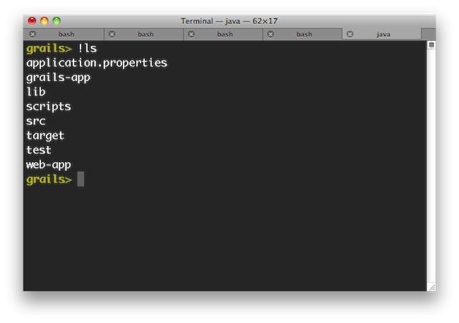
请注意你可以用! (bang)命令让文件路径自动完成 - 非常适合像'ls', 'cat', 'git'等操作文件系统的外部命令。
Interactive mode is the a feature of the Grails command line which keeps the JVM running and allows for quicker execution of commands. To activate interactive mode type 'grails' at the command line and then use TAB completion to get a list of commands:If you need to open a file whilst within interactive mode you can use the Even better, the If you need to run an external process whilst interactive mode is running you can do so by starting the command with a !:Note that with ! (bang) commands, you get file path auto completion - ideal for external commands that operate on the file system such as 'ls', 'cat', 'git', etc.
open command which will TAB complete file paths:Even better, the open command understands the logical aliases 'test-report' and 'dep-report', which will open the most recent test and dependency reports respectively. In other words, to open the test report in a browser simply execute open test-report. You can event open multiple files at once: open test-report test/unit/MyTests.groovy will open the HTML test report in your browser and the MyTests.groovy source file in your text editor.TAB completion also works for class names after the create-* commands:If you need to run an external process whilst interactive mode is running you can do so by starting the command with a !:Note that with ! (bang) commands, you get file path auto completion - ideal for external commands that operate on the file system such as 'ls', 'cat', 'git', etc.
4.2 创建Gant脚本
你可以在项目的根目录下运行 create-script 命令来创建你自己的Gant脚本。例如如下命令：grails create-script compile-sources
scripts/CompileSources.groovy 的脚本。Gant脚本本身与规范的Groovy脚本非常相似，除了它支持“targets”的概念以及它们之间的依赖关系：target(default:"The default target is the one that gets executed by Grails") { depends(clean, compile) }target(clean:"Clean out things") { ant.delete(dir:"output") }target(compile:"Compile some sources") { ant.mkdir(dir:"mkdir") ant.javac(srcdir:"src/java", destdir:"output") }
ant 变量(一个 groovy.util.AntBuilder 实例)可以访问 Apache Ant API 。
在以前的Grails中（1.0.3和以下），这个变量是 Ant，即第一个字母是大写的。
你也可以依赖其他的任务，只要在 default 任务中使用 depends 方法说明。默认任务（default）
在上边的例子中，我们使用明确的名称“default”来指明一个任务。这是为一个脚本文件定义默认任务的一种方式。可选的另一种方式是使用setDefaultTarget() 方法：target("clean-compile": "Performs a clean compilation on the app source") { depends(clean, compile) }target(clean:"Clean out things") { ant.delete(dir:"output") }target(compile:"Compile some sources") { ant.mkdir(dir:"mkdir") ant.javac(srcdir:"src/java", destdir:"output") }setDefaultTarget("clean-compile")
setDefaultTarget() 这一行放在了脚本文件的最后，但你可以把它放在任何位置，只要它位于它要引用的那个任务_之后_（在这个例子中这个任务就是“clean-compile”）。哪种方式更好？坦率地说，你可以使用你喜欢的那种方式——看起来这两种方式都没有什么突出的优势。我们应该讨论的一个问题是，如果你想要允许任何其他脚本都能调用你的“default”任务，那么你应该把它移动到一个没有默认任务的共享脚本文件中。关于这些内容，我们将在下一章节进行更多讨论。
You can create your own Gant scripts by running the create-script command from the root of your project. For example the following command:Will create a script called As demonstrated in the script above, there is an implicit This lets you call the default target directly from other scripts if you wish. Also, although we have put the call to
grails create-script compile-sources
scripts/CompileSources.groovy. A Gant script itself is similar to a regular Groovy script except that it supports the concept of "targets" and dependencies between them:target(default:"The default target is the one that gets executed by Grails") { depends(clean, compile) }target(clean:"Clean out things") { ant.delete(dir:"output") }target(compile:"Compile some sources") { ant.mkdir(dir:"mkdir") ant.javac(srcdir:"src/java", destdir:"output") }
ant variable (an instance of groovy.util.AntBuilder) that allows access to the Apache Ant API.
In previous versions of Grails (1.0.3 and below), the variable was Ant, i.e. with a capital first letter.
You can also "depend" on other targets using the depends method demonstrated in the default target above.The default target
In the example above, we specified a target with the explicit name "default". This is one way of defining the default target for a script. An alternative approach is to use thesetDefaultTarget() method:target("clean-compile": "Performs a clean compilation on the app source") { depends(clean, compile) }target(clean:"Clean out things") { ant.delete(dir:"output") }target(compile:"Compile some sources") { ant.mkdir(dir:"mkdir") ant.javac(srcdir:"src/java", destdir:"output") }setDefaultTarget("clean-compile")
setDefaultTarget() at the end of the script in this example, it can go anywhere as long as it comes after the target it refers to ("clean-compile" in this case).Which approach is better? To be honest, you can use whichever you prefer - there don't seem to be any major advantages in either case. One thing we would say is that if you want to allow other scripts to call your "default" target, you should move it into a shared script that doesn't have a default target at all. We'll talk some more about this in the next section.
4.3 重用Grails脚本
Grails带了许多开箱即用的命令行功能，你会发现这在你自己的脚本中那个会很有用（查看参考指南的命令行指南部分可以获得所有命令的详细信息）。尤其是使用 compile, package 和 bootstrap 脚本。下边的bootstrap脚本例子允许你启动一个Spring的 ApplicationContext 实例，通过它来访问数据源等(集成测试时可以这样用）：includeTargets << grailsScript("_GrailsBootstrap")target ('default': "Database stuff") { depends(configureProxy, packageApp, classpath, loadApp, configureApp) Connection c try { c = appCtx.getBean('dataSource').getConnection() // do something with connection } finally { c?.close() } }
从其他脚本文件引入任务
Gant允许你从另一个Gant脚本文件中引入所有任务（除了“default”）。然后你就可以depend或调用这些已经被定义在当前脚本文件中的任务了。实现的途径是includeTargets属性。使用左移操作符来简单的“附加”一个文件或类：
includeTargets << new File("/path/to/my/script.groovy") includeTargets << gant.tools.Ivy
核心的Grails任务
如你在本章开头部分所看到的例子，当使用includeTargets来包含核心的Grails任务时，既没有使用基于文件的语法也没有使用基于类的语法。取而代之的，你应该使用Grails命令启动器提供的特殊的grailsScript()方法（注意这个方法在一般的Gant脚本中是不可用的，只有在Grails环境中才行）。grailsScript() 方法的语法是非常简单易读的：简单的把你想要包含的Grails脚本文件的名称传入，不需要任何路径信息。以下是一个你可能想要重用的Grails脚本列表：
| 脚本 | 描述 |
|---|---|
| _GrailsSettings | 你确实应该包括这个！幸运的是，它已经被所有其他Grails脚本文件自动包括了（除了_GrailsProxy），因此你通常不必明确的包括它。 |
| _GrailsEvents | 如果你想要触发事件，你应该包括这个。添加一个event(String eventName, List args)方法。另外，这也被几乎所有其他Grails脚本文件包括。 |
| _GrailsClasspath | 安装编译、测试和运行用的classpath。如果你想使用它们，就包含这个脚本。另外，这也由几乎所有其他Grails脚本包含。 |
| _GrailsProxy | 如果你不直接接入互联网，而是使用代理，包含这个脚本，配置代理参数。 |
| _GrailsArgParsing | 提供一个parseArguments任务，就像字面上的意思：当运行你的脚本的时候解析用户提供的参数。把参数添加到argsMap属性中。 |
| _GrailsTest | 包含所有共享的测试代码。如果你要添加额外的测试这将非常有用。 |
| _GrailsRun | 为你提供在配置好的servlet容器中运行应用程序时需要的一切，可以是正常的运行(runApp/runAppHttps) ，也可以是来自于一个WAR文件(runWar/runWarHttps)。 |
脚本结构
你可能对这些下划线词语作为Grails脚本的名称感到疑惑。用_internal_作为一个脚本或者用没有对应的“command”的其他单词，这些就是Grails的决定方式。因此无法运行例如"grails _grails-settings"这样的命令。这也就是为什么它们没有个默认的任务。内部脚本是和代码共享重用相关的。实际上，我们建议在自己的脚本中使用类似的方式：把你的所有任务放入一个内部脚本中可以更容易的共享，然后提供简单的命令脚本来解析任何命令行参数并委托给内部脚本中的任务。假如你有一个脚本要运行一些功能测试——你可以将它们像这样分离：./scripts/FunctionalTests.groovy:includeTargets << new File("${basedir}/scripts/_FunctionalTests.groovy")target(default: "Runs the functional tests for this project.") { depends(runFunctionalTests) }./scripts/_FunctionalTests.groovy:includeTargets << grailsScript("_GrailsTest")target(runFunctionalTests: "Run functional tests.") { depends(...) … }
- 将脚本分为“command”脚本和内部脚本。
- 将大部分执行脚本放入内部脚本。
- 将参数解析放入“command”脚本。
- 要把参数传入一个任务，先创建一些脚本变量并在调用任务前将它们初始化。
- 为了避免名称冲突，可以为脚本变量分配闭包以替代任务。之后你可以直接将参数传入闭包。
Grails ships with a lot of command line functionality out of the box that you may find useful in your own scripts (See the command line reference in the reference guide for info on all the commands). Of particular use are the compile, package and bootstrap scripts.The bootstrap script for example lets you bootstrap a Spring ApplicationContext instance to get access to the data source and so on (the integration tests use this):
Don't worry too much about the syntax using a class, it's quite specialised. If you're interested, look into the Gant documentation.
There are many more scripts provided by Grails, so it is worth digging into the scripts themselves to find out what kind of targets are available. Anything that starts with an "_" is designed for reuse.Here are a few general guidelines on writing scripts:
includeTargets << grailsScript("_GrailsBootstrap")target ('default': "Database stuff") { depends(configureProxy, packageApp, classpath, loadApp, configureApp) Connection c try { c = appCtx.getBean('dataSource').getConnection() // do something with connection } finally { c?.close() } }
Pulling in targets from other scripts
Gant lets you pull in all targets (except "default") from another Gant script. You can then depend upon or invoke those targets as if they had been defined in the current script. The mechanism for doing this is theincludeTargets property. Simply "append" a file or class to it using the left-shift operator:
includeTargets << new File("/path/to/my/script.groovy") includeTargets << gant.tools.Ivy
Core Grails targets
As you saw in the example at the beginning of this section, you use neither the File- nor the class-based syntax forincludeTargets when including core Grails targets. Instead, you should use the special grailsScript() method that is provided by the Grails command launcher (note that this is not available in normal Gant scripts, just Grails ones).The syntax for the grailsScript() method is pretty straightforward: simply pass it the name of the Grails script to include, without any path information. Here is a list of Grails scripts that you could reuse:
| Script | Description |
|---|---|
| _GrailsSettings | You really should include this! Fortunately, it is included automatically by all other Grails scripts except _GrailsProxy, so you usually don't have to include it explicitly. |
| _GrailsEvents | Include this to fire events. Adds an event(String eventName, List args) method. Again, included by almost all other Grails scripts. |
| _GrailsClasspath | Configures compilation, test, and runtime classpaths. If you want to use or play with them, include this script. Again, included by almost all other Grails scripts. |
| _GrailsProxy | If you don't have direct access to the internet and use a proxy, include this script to configure access through your proxy. |
| _GrailsArgParsing | Provides a parseArguments target that does what it says on the tin: parses the arguments provided by the user when they run your script. Adds them to the argsMap property. |
| _GrailsTest | Contains all the shared test code. Useful if you want to add any extra tests. |
| _GrailsRun | Provides all you need to run the application in the configured servlet container, either normally (runApp/runAppHttps) or from a WAR file (runWar/runWarHttps). |
Script architecture
You maybe wondering what those underscores are doing in the names of the Grails scripts. That is Grails' way of determining that a script is internal , or in other words that it has not corresponding "command". So you can't run "grails _grails-settings" for example. That is also why they don't have a default target.Internal scripts are all about code sharing and reuse. In fact, we recommend you take a similar approach in your own scripts: put all your targets into an internal script that can be easily shared, and provide simple command scripts that parse any command line arguments and delegate to the targets in the internal script. For example if you have a script that runs some functional tests, you can split it like this:./scripts/FunctionalTests.groovy:includeTargets << new File("${basedir}/scripts/_FunctionalTests.groovy")target(default: "Runs the functional tests for this project.") { depends(runFunctionalTests) }./scripts/_FunctionalTests.groovy:includeTargets << grailsScript("_GrailsTest")target(runFunctionalTests: "Run functional tests.") { depends(...) … }
- Split scripts into a "command" script and an internal one.
- Put the bulk of the implementation in the internal script.
- Put argument parsing into the "command" script.
- To pass arguments to a target, create some script variables and initialise them before calling the target.
- Avoid name clashes by using closures assigned to script variables instead of targets. You can then pass arguments direct to the closures.
4.4 钩子事件
Grails提供了钩住脚本事件的能力。这里指的是当Grails的任务和插件脚本执行的时候能触发的一些事件。这个机制是故意简单化和松散的规定的。可能的事件列表是不会以任何方式固定的，所以可以钩住那些被插件脚本触发的事件，在核心目标脚本中没有类似的事件。定义事件处理器
事件处理器是定义在称为_Events.groovy 的脚本文件中。Grails会在以下位置搜索这些脚本：
USER_HOME/.grails/scripts- 用户特定的事件处理器PROJECT_HOME/scripts- 应用程序特定的事件处理器PLUGINS_HOME/*/scripts- 插件特定的事件处理器GLOBAL_PLUGINS_HOME/*/scripts- 由全局插件提供的事件处理器
_Events.groovy 文件中声明即可。事件处理器是分块定义在 _Events.groovy 文件中，使用“event”作为名称的开头部分。下边的例子可以被放在你的 /scripts 目录中来展示这个特性：eventCreatedArtefact = { type, name ->
println "Created $type $name"
}eventStatusUpdate = { msg ->
println msg
}eventStatusFinal = { msg ->
println msg
}eventCreatedArtefact, eventStatusUpdate, eventStatusFinal。Grails提供了一些标准的事件，它们在命令行参考指南中有描述。例如compile命令会激发下列事件：
CompileStart- 当编译过程开始时，针对这几种类型的编译——源文件和测试文件CompileEnd- 当编译过程完成时，针对这几种类型的编译——源文件和测试文件
触发事件
要简单地触发一个包含Init.groovy脚本的事件并调用event()闭包：includeTargets << grailsScript("_GrailsEvents")event("StatusFinal", ["Super duper plugin action complete!"])
公共事件
下表是一些可以被利用的公共事件：| 事件 | 参数 | 描述 |
|---|---|---|
| StatusUpdate | message | 传入一个标志当前脚本状态或进展的字符串 |
| StatusError | message | 传入一个标志来自当前脚本的错误信息的字符串 |
| StatusFinal | message | 传入一个标志最终脚本状态消息的字符串，例如：当编译一个任务时，即使任务还没有退出脚本环境 |
| CreatedArtefact | artefactType,artefactName | 当一个 create-xxxx 脚本已执行完成并创建了一个工件时调用 |
| CreatedFile | fileName | 当一个项目的源码文件被创建时调用，但不包括那些由Grails管理的固定文件 |
| Exiting | returnCode | 当脚本环境即将正常的退出时调用 |
| PluginInstalled | pluginName | 在一个插件被安装之后调用 |
| CompileStart | kind | 当编译过程开始时调用，针对这几种类型的编译——源文件和测试文件 |
| CompileEnd | kind | 当编译过程完成时调用，针对这几种类型的编译——源文件和测试文件 |
| DocStart | kind | 当生成文档过程即将开始时调用——生成javadoc或groovydoc时 |
| DocEnd | kind | 当生成文档过程已经结束时调用——生成javadoc或groovydoc时 |
| SetClasspath | rootLoader | 在classpath初始化时调用以便插件可以通过 rootLoader.addURL(...)来扩大classpath。注意这种扩大classpath是在事件脚本被加载之后进行的，因此你不能使用这种方式来加载你的事件脚本需要导入的类，即使你可以通过名称来加载类。 |
| PackagingEnd | none | 当打包结束时调用（这个调用是在Tomcat服务器被启动之前并在web.xml文件被生成之后） |
Grails provides the ability to hook into scripting events. These are events triggered during execution of Grails target and plugin scripts.The mechanism is deliberately simple and loosely specified. The list of possible events is not fixed in any way, so it is possible to hook into events triggered by plugin scripts, for which there is no equivalent event in the core target scripts.You can see here the three handlers
Defining event handlers
Event handlers are defined in scripts called_Events.groovy. Grails searches for these scripts in the following locations:
USER_HOME/.grails/scripts- user-specific event handlersPROJECT_HOME/scripts- applicaton-specific event handlersPLUGINS_HOME/*/scripts- plugin-specific event handlersGLOBAL_PLUGINS_HOME/*/scripts- event handlers provided by global plugins
_Events.groovy file.Event handlers are blocks defined in _Events.groovy, with a name beginning with "event". The following example can be put in your /scripts directory to demonstrate the feature:eventCreatedArtefact = { type, name ->
println "Created $type $name"
}eventStatusUpdate = { msg ->
println msg
}eventStatusFinal = { msg ->
println msg
}eventCreatedArtefact, eventStatusUpdate, eventStatusFinal. Grails provides some standard events, which are documented in the command line reference guide. For example the compile command fires the following events:
CompileStart- Called when compilation starts, passing the kind of compile - source or testsCompileEnd- Called when compilation is finished, passing the kind of compile - source or tests
Triggering events
To trigger an event simply include the Init.groovy script and call the event() closure:includeTargets << grailsScript("_GrailsEvents")event("StatusFinal", ["Super duper plugin action complete!"])
Common Events
Below is a table of some of the common events that can be leveraged:| Event | Parameters | Description |
|---|---|---|
| StatusUpdate | message | Passed a string indicating current script status/progress |
| StatusError | message | Passed a string indicating an error message from the current script |
| StatusFinal | message | Passed a string indicating the final script status message, i.e. when completing a target, even if the target does not exit the scripting environment |
| CreatedArtefact | artefactType,artefactName | Called when a create-xxxx script has completed and created an artefact |
| CreatedFile | fileName | Called whenever a project source filed is created, not including files constantly managed by Grails |
| Exiting | returnCode | Called when the scripting environment is about to exit cleanly |
| PluginInstalled | pluginName | Called after a plugin has been installed |
| CompileStart | kind | Called when compilation starts, passing the kind of compile - source or tests |
| CompileEnd | kind | Called when compilation is finished, passing the kind of compile - source or tests |
| DocStart | kind | Called when documentation generation is about to start - javadoc or groovydoc |
| DocEnd | kind | Called when documentation generation has ended - javadoc or groovydoc |
| SetClasspath | rootLoader | Called during classpath initialization so plugins can augment the classpath with rootLoader.addURL(...). Note that this augments the classpath after event scripts are loaded so you cannot use this to load a class that your event script needs to import, although you can do this if you load the class by name. |
| PackagingEnd | none | Called at the end of packaging (which is called prior to the Tomcat server being started and after web.xml is generated) |
4.5 自定义构建
Grails无疑是一个固执己见框架，并且它喜欢按照约定来进行配置，但这并不意味着你 不能 去配置它。在本章，我们将看到你可以如何去影响和修改标准的Grails构建。
Grails is most definitely an opinionated framework and it prefers convention to configuration, but this doesn't mean you can't configure it. In this section, we look at how you can influence and modify the standard Grails build.
默认
Grails构建配置的核心就是grails.util.BuildSettings 类，它包含了大量有用的信息。它控制了哪些类被编译、应用程序依赖什么以及其他类似的设置。以下是一个配置选项和它们的默认值的集录：
| 属性 | 配置选项 | 默认值 |
|---|---|---|
| grailsWorkDir | grails.work.dir | $USER_HOME/.grails/<grailsVersion> |
| projectWorkDir | grails.project.work.dir | <grailsWorkDir>/projects/<baseDirName> |
| classesDir | grails.project.class.dir | <projectWorkDir>/classes |
| testClassesDir | grails.project.test.class.dir | <projectWorkDir>/test-classes |
| testReportsDir | grails.project.test.reports.dir | <projectWorkDir>/test/reports |
| resourcesDir | grails.project.resource.dir | <projectWorkDir>/resources |
| projectPluginsDir | grails.project.plugins.dir | <projectWorkDir>/plugins |
| globalPluginsDir | grails.global.plugins.dir | <grailsWorkDir>/global-plugins |
| verboseCompile | grails.project.compile.verbose | false |
BuildSettings 类也有一些其他属性，但是它们应该被只读处理：
| 属性 | 描述 |
|---|---|
| baseDir | 项目的位置。 |
| userHome | 用户的主目录。 |
| grailsHome | 正在使用的Grails的安装位置（也许为null）。 |
| grailsVersion | 被项目使用的Grails的版本。 |
| grailsEnv | 当前的Grails环境。 |
| compileDependencies | 编译时项目依赖的文件实例列表。 |
| testDependencies | 测试时项目依赖的文件实例列表。 |
| runtimeDependencies | 运行时项目依赖的文件实例列表。 |
grailsSettings脚本变量可以得到一个BuildSettings实例用于你的脚本。你也可以在你的代码中通过使用grails.util.BuildSettingsHolder类来访问它，但是并不推荐这样做。
The defaults
The core of the Grails build configuration is thegrails.util.BuildSettings class, which contains quite a bit of useful information. It controls where classes are compiled to, what dependencies the application has, and other such settings.Here is a selection of the configuration options and their default values:
| Property | Config option | Default value |
|---|---|---|
| grailsWorkDir | grails.work.dir | $USER_HOME/.grails/<grailsVersion> |
| projectWorkDir | grails.project.work.dir | <grailsWorkDir>/projects/<baseDirName> |
| classesDir | grails.project.class.dir | <projectWorkDir>/classes |
| testClassesDir | grails.project.test.class.dir | <projectWorkDir>/test-classes |
| testReportsDir | grails.project.test.reports.dir | <projectWorkDir>/test/reports |
| resourcesDir | grails.project.resource.dir | <projectWorkDir>/resources |
| projectPluginsDir | grails.project.plugins.dir | <projectWorkDir>/plugins |
| globalPluginsDir | grails.global.plugins.dir | <grailsWorkDir>/global-plugins |
| verboseCompile | grails.project.compile.verbose | false |
BuildSettings class has some other properties too, but they should be treated as read-only:
| Property | Description |
|---|---|
| baseDir | The location of the project. |
| userHome | The user's home directory. |
| grailsHome | The location of the Grails installation in use (may be null). |
| grailsVersion | The version of Grails being used by the project. |
| grailsEnv | The current Grails environment. |
| compileDependencies | A list of compile-time project dependencies as File instances. |
| testDependencies | A list of test-time project dependencies as File instances. |
| runtimeDependencies | A list of runtime-time project dependencies as File instances. |
BuildSettings is available to your scripts as the grailsSettings script variable. You can also access it from your code by using the grails.util.BuildSettingsHolder class, but this isn't recommended.
覆盖默认值
所有在第一个表中的属性都可以被一个系统属性或配置选项所覆盖——简单地使用“config option”名称。例如，要改变项目工作目录，你可以运行这个命令：grails -Dgrails.project.work.dir=work compile
grails-app/conf/BuildConfig.groovy 文件中：
grails.project.work.dir = "work"BuildConfig.groovy 文件，而后者优先于默认值。BuildConfig.groovy 文件是 grails-app/conf/Config.groovy 的姐妹文件，——过去包含的选项仅仅影响构建，但是之后包含的就影响正在运行的应用程序了。这并不局限于第一个表中的选项：你会发现构建配置选项在文档中到处都是，比如其中一些就用来指定内嵌的servlet容器应该运行在哪个端口上或者决定哪些文件应该被打包到WAR文件中。可用的构建设置
| 名称 | 描述 |
|---|---|
| grails.server.port.http | 指定内嵌的servlet容器应该运行的端口（“run-app”和“run-war”命令使用）。整型。 |
| grails.server.port.https | 指定内嵌的servlet容器用于HTTPS的运行端口 ("run-app --https" and "run-war --https"). 整型. |
| grails.config.base.webXml | 指定用于应用程序的自定义web.xml文件的路径（取代使用web.xml模板）。 |
| grails.compiler.dependencies | 将额外的依赖添加到编译器classpath的传统方式。设置它到一个包含“fileset()”入口的闭包。 这些入口将被一个AntBuilder处理，所以这些入口的语法是以Groovy的形式出现，对应着Ant构建文件的XML元素，例如： fileset(dir: "$basedir/lib", include: "**/*.class). |
| grails.testing.patterns | 一个Ant路径格式的列表，允许你控制哪些文件可以被包含在测试中。这些格式不应该包括测试用例后缀，它们将在下一个属性中设置。 |
| grails.testing.nameSuffix | 默认的，测试类都假定有一个“Tests”的后缀。你可以设置这个选项来改变它为你想要的任何内容。例如：另一个公共后缀是“Test”。 |
| grails.project.war.file | 一个包含了生成的WAR文件的文件路径的字符串，除了它的全名意外（包括扩展名）。例如，“target/my-app.war”。 |
| grails.war.dependencies | 一个包含“fileset()”入口的闭包，它允许你完全控制什么内容可以被放入WAR文件的“WEB-INF/lib”目录中。 |
| grails.war.copyToWebApp | 一个包含“fileset()”入口的闭包，它允许你完全控制什么内容可以被放入WAR文件的根目录中。它覆盖了包含“web-app”目录下所有内容的那种默认习惯。 |
| grails.war.resources | 一个闭包，用临时目录的地址作为它的第一个参数。你可以使用任何Ant任务来做你想做的任何事。这通常用来在临时目录被打包成WAR之前从中删除文件。 |
| grails.project.web.xml | 生成Grails的web.xml的位置 |
Overriding the defaults
All of the properties in the first table can be overridden by a system property or a configuration option - simply use the "config option" name. For example, to change the project working directory, you could either run this command:grails -Dgrails.project.work.dir=work compile
grails-app/conf/BuildConfig.groovy file:
grails.project.work.dir = "work"BuildConfig.groovy file, which in turn takes precedence over the default values.The BuildConfig.groovy file is a sibling of grails-app/conf/Config.groovy - the former contains options that only affect the build, whereas the latter contains those that affect the application at runtime. It's not limited to the options in the first table either: you will find build configuration options dotted around the documentation, such as ones for specifying the port that the embedded servlet container runs on or for determining what files get packaged in the WAR file.Available build settings
| Name | Description |
|---|---|
| grails.server.port.http | Port to run the embedded servlet container on ("run-app" and "run-war"). Integer. |
| grails.server.port.https | Port to run the embedded servlet container on for HTTPS ("run-app --https" and "run-war --https"). Integer. |
| grails.config.base.webXml | Path to a custom web.xml file to use for the application (alternative to using the web.xml template). |
| grails.compiler.dependencies | Legacy approach to adding extra dependencies to the compiler classpath. Set it to a closure containing "fileset()" entries. These entries will be processed by an AntBuilder so the syntax is the Groovy form of the corresponding XML elements in an Ant build file, e.g. fileset(dir: "$basedir/lib", include: "**/*.class). |
| grails.testing.patterns | A list of Ant path patterns that let you control which files are included in the tests. The patterns should not include the test case suffix, which is set by the next property. |
| grails.testing.nameSuffix | By default, tests are assumed to have a suffix of "Tests". You can change it to anything you like but setting this option. For example, another common suffix is "Test". |
| grails.project.war.file | A string containing the file path of the generated WAR file, along with its full name (include extension). For example, "target/my-app.war". |
| grails.war.dependencies | A closure containing "fileset()" entries that allows you complete control over what goes in the WAR's "WEB-INF/lib" directory. |
| grails.war.copyToWebApp | A closure containing "fileset()" entries that allows you complete control over what goes in the root of the WAR. It overrides the default behaviour of including everything under "web-app". |
| grails.war.resources | A closure that takes the location of the staging directory as its first argument. You can use any Ant tasks to do anything you like. It is typically used to remove files from the staging directory before that directory is jar'd up into a WAR. |
| grails.project.web.xml | The location to generate Grails' web.xml to |
4.6 Ant和Maven
如果你的团队或公司的所有其他项目都在使用像Ant或Maven这样的标准的构建工具进行构建的，而你使用Grails命令行来构建你的应用程序时你就可能成为团队或者公司这个大家庭的害群之马。幸运的是，今天你可以很容易的将Grails构建系统集成到当今主流的构建工具中（嗯，至少是在Java项目中使用的那种构建工具）。Ant 整合
当你通过 create-app 命令来创建一个Grails应用程序时，Grails不会自动创建Apache Ant 工具使用的build.xml文件，但是你可以通过integrate-with 命令来生成一个：grails integrate-with --ant
build.xml 文件，这个文件包含了下列的任务：
clean- 清理Grails应用程序compile- -编译你的应用程序的源码test- 运行单元测试run- 等同于“grails run-app”的功能war- 创建一个WAR文件deploy- 默认为空，但可以用它实现自动部署
ant war
<taskdef name="grailsTask" classname="grails.ant.GrailsTask" classpathref="grails.classpath"/>
| 属性 | 描述 | 是否必填 |
|---|---|---|
| home | 构建时需要用到的Grails安装目录的位置。 | 除非classpath被指定否则必填。 |
| classpathref | 载入Grails的Classpath。必须包含“grails-bootstrap”工件并且应该包含“grails-scripts”。 | 除非home被设置或者你使用classpath元素否则必填。 |
| script | 要运行的Grails脚本的名称，例如：“TestApp”。 | 必填。 |
| args | 要加入脚本中的参数，例如：“-unit -xml”。 | 不是必填。默认为“”。 |
| environment | 运行脚本时的Grails环境。 | 不是必填。默认为脚本的default。 |
| includeRuntimeClasspath | 高级设置：如果设为true则将应用程序的运行时classpath添加到构建classpath中。 | 不是必填。默认为true。 |
classpath- 构建classpath（用来载入Gant和Grails脚本）。compileClasspath- 用来编译应用程序的类的Classpath。runtimeClasspath- 用来运行应用程序并将程序打成WAR包的Classpath。通常包含了compileClasspath中的一切。testClasspath- 用来编译和运行测试的Classpath。通常包含了runtimeClasspath中的一切。.
home 属性并且把你自己的依赖内容放在了 lib 目录中，那么你不需要使用以上任何一个路径。如果想看看使用它们的例子，那么就查看为一个新应用而生成的Ant构建文件吧。Maven集成
Grails通过一个Maven插件提供了与 Maven 2 的集成 .当前作为基础的Maven插件，特别是由 Octo 创建的这个版本是非常有效的，它做得非常出色。准备
In order to use the new plugin, all you need is Maven 2 installed and set up. This is because you no longer need to install Grails separately to use it with Maven! 为了使用这个新的插件，你只需要安装和设置Maven 2。你不再需要单独的安装Grails!Grails集成Maven 2已经针对Maven 2.0.9及以上版本进行了设计和测试。它将无法工作在更早期的版本中。
The default mvn setup DOES NOT supply sufficient memory to run the Grails environment. We recommend that you add the following environment variable setting to prevent poor performance:
默认的mvn设置没有配置充足的内存来运行grails环境。我们推荐你添加下面的环境变量防止系统表现不佳。export MAVEN_OPTS="-Xmx512m -XX:MaxPermSize=256"
创建一个 Grails Maven 项目
要简单地创建一个支持Maven的Grails项目只要运行下边的命令：mvn archetype:generate -DarchetypeGroupId=org.grails \
-DarchetypeArtifactId=grails-maven-archetype \
-DarchetypeVersion=1.3.2 \
-DgroupId=example -DartifactId=my-app<plugin>
<artifactId>maven-compiler-plugin</artifactId>
<configuration>
<source>1.5</source>
<target>1.5</target>
</configuration>
</plugin><plugin>
<artifactId>maven-compiler-plugin</artifactId>
<configuration>
<source>1.6</source>
<target>1.6</target>
</configuration>
</plugin>cd my-app mvn initialize
如果你遇到下面类似的消息:现在你已经有一个可以使用的Grails应用了。插件已经集成到了标准的构建周期，因此你可以使用标准的Maven语法来构建和打包你的应用程序了：你需要手动增加这个插件到 application.properties：Resolving plugin JAR dependencies … :: problems summary :: :::: WARNINGS module not found: org.hibernate#hibernate-core;3.3.1.GAthen runplugins.hibernate=2.0.0 plugins.tomcat=2.0.0最后 hibernate 和 tomcat 插件 会被安装。mvn compile
mvn clean , mvn compile , mvn test , mvn package , mvn install。你也可以利用许多已经被包装成Maven目标的Grails命令：
grails:create-controller- 调用 create-controller 命令grails:create-domain-class- 调用 create-domain-class 命令grails:create-integration-test- 调用 create-integration-test 命令grails:create-pom- 为现有的Grails项目创建一个新的Maven POM文件grails:create-script- 调用 create-script 命令grails:create-service- 调用 create-service 命令grails:create-taglib- 调用 create-tag-lib命令grails:create-unit-test- 调用 create-unit-test 命令grails:exec- 执行一个任意的Grails命令行脚本grails:generate-all- 调用 generate-all 命令grails:generate-controller- 调用 generate-controller 命令grails:generate-views- 调用 generate-views 命令grails:install-plugin- 调用 install-plugin 命令grails:install-templates- 调用 install-templates 命令grails:list-plugins- 调用 list-plugins 命令grails:package- 调用 package 命令grails:run-app- command调用 run-app 命令grails:uninstall-plugin- 调用 uninstall-plugin 命令
mvn grails:help 来获取一个完整的，最新的命令列表给现有项目加入Maven支持
创建一个全新的项目当然是一个很好的途径，但如果已经有一个项目了该怎么办呢？你应该不会愿意先创建一个新项目然后再把旧项目的内容拷贝进去的。解决方法是使用下列命令为现有项目创建一个POM文件(以现有项目的Grails版本号代替下面的版本号)：mvn org.grails:grails-maven-plugin:1.3.2:create-pom -DgroupId=com.mycompany
mvn package 。需要注意的是当创建POM文件时你必须指定一个group ID。你也可能想要设置目标JDK为Java 6，请看上面添加Grails命令到 phase 中
标准的POM文件被创建是为了让Grails将合适的核心Grails命令附加到它们对应的构建语法上，因此“compile”对应“compile”语法，“war”对应“package”语法。当你想要将一个插件的命令附加到一个特定的phase上时，这可能没有什么帮助。典型的例子是功能测试。你如何确保你的功能测试（无论正在使用你决定的哪个插件）是使用“integration-test” phase来运行的？恐怕不是：所有事情都是可能的。在这个例子中，你可以使用额外的“execution”块来将命令联合到一个 phase 上：<plugin> <groupId>org.grails</groupId> <artifactId>grails-maven-plugin</artifactId> <version>1.3.2</version> <extensions>true</extensions> <executions> <execution> <goals> … </goals> </execution> <!-- 添加 "functional-tests" 命令到 "integration-test" phase --> <execution> <id>functional-tests</id> <phase>integration-test</phase> <goals> <goal>exec</goal> </goals> <configuration> <command>functional-tests</command> </configuration> </execution> </executions> </plugin>
grails:exec 目标，它可以用来运行任何Grails命令。简单的将命令的名字作为 command 系统特性，还可以通过 args 特性来选择性地指定参数：
mvn grails:exec -Dcommand=create-webtest -Dargs=Book
调试一个 Grails Maven 工程
Maven可以使用“mvnDebug”命令在调试模式下启动。要启动调试你的Grails应用程序，只需运行：mvnDebug grails:run-app
MAVEN_OPTS="-Xdebug -Xrunjdwp:transport=dt_socket,server=y,suspend=y,address=5005"
mvn grails:run-app提出问题
如果你遇到任何与Maven的集成的问题，请作为一个子任务提出一个JIRA问题GRAILS-3547.
If all the other projects in your team or company are built using a standard build tool such as Ant or Maven, you become the black sheep of the family when you use the Grails command line to build your application. Fortunately, you can easily integrate the Grails build system into the main build tools in use today (well, the ones in use in Java projects at least).The build file is configured to use Apache Ivy for dependency management, which means that it will automatically download all the requisite Grails JAR files and other dependencies on demand. You don't even have to install Grails locally to use it! That makes it particularly useful for continuous integration systems such as CruiseControl or Jenkins.It uses the Grails Ant task to hook into the existing Grails build system. The task lets you run any Grails script that's available, not just the ones used by the generated build file. To use the task, you must first declare it:
This raises the question: what should be in "grails.classpath"? The task itself is in the "grails-bootstrap" JAR artifact, so that needs to be on the classpath at least. You should also include the "groovy-all" JAR. With the task defined, you just need to use it! The following table shows you what attributes are available:
The task also supports the following nested elements, all of which are standard Ant path structures:
Choose whichever grails version, group ID and artifact ID you want for your application, but everything else must be as written. This will create a new Maven project with a POM and a couple of other files. What you won't see is anything that looks like a Grails application. So, the next step is to create the project structure that you're used to.
But first, to set target JDK to Java 6, do that now. Open my-app/pom.xml and change
to
Then you're ready to create the project structure:
When this command has finished, you can immediately start using the standard phases, such as This also demonstrates the The process will be suspended on startup and listening for a debugger on port 8000.If you need more control of the debugger, this can be specified using the MAVEN_OPTS environment variable, and launch Maven with the default "mvn" command:
Ant Integration
When you create a Grails application with the create-app command, Grails doesn't automatically create an Antbuild.xml file but you can generate one with the integrate-with command:
grails integrate-with --antbuild.xml file containing the following targets:
clean- Cleans the Grails applicationcompile- Compiles your application's source codetest- Runs the unit testsrun- Equivalent to "grails run-app"war- Creates a WAR filedeploy- Empty by default, but can be used to implement automatic deployment
ant war
<taskdef name="grailsTask" classname="grails.ant.GrailsTask" classpathref="grails.classpath"/>
| Attribute | Description | Required |
|---|---|---|
| home | The location of the Grails installation directory to use for the build. | Yes, unless classpath is specified. |
| classpathref | Classpath to load Grails from. Must include the "grails-bootstrap" artifact and should include "grails-scripts". | Yes, unless home is set or you use a classpath element. |
| script | The name of the Grails script to run, e.g. "TestApp". | Yes. |
| args | The arguments to pass to the script, e.g. "-unit -xml". | No. Defaults to "". |
| environment | The Grails environment to run the script in. | No. Defaults to the script default. |
| includeRuntimeClasspath | Advanced setting: adds the application's runtime classpath to the build classpath if true. | No. Defaults to true. |
classpath- The build classpath (used to load Gant and the Grails scripts).compileClasspath- Classpath used to compile the application's classes.runtimeClasspath- Classpath used to run the application and package the WAR. Typically includes everything in @compileClasspath.testClasspath- Classpath used to compile and run the tests. Typically includes everything inruntimeClasspath.
home attribute and put your own dependencies in the lib directory, then you don't even need to use any of them. For an example of their use, take a look at the generated Ant build file for new apps.Maven Integration
Grails provides integration with Maven 2 with a Maven plugin. The current Maven plugin is based on but supersedes the version created by Octo, who did a great job with the original.Preparation
In order to use the new plugin, all you need is Maven 2 installed and set up. This is because you no longer need to install Grails separately to use it with Maven!The Maven 2 integration for Grails has been designed and tested for Maven 2.0.9 and above. It will not work with earlier versions.
The default mvn setup DOES NOT supply sufficient memory to run the Grails environment. We recommend that you add the following environment variable setting to prevent poor performance:export MAVEN_OPTS="-Xmx512m -XX:MaxPermSize=256"
Creating a Grails Maven Project
To create a Mavenized Grails project simply run the following command:mvn archetype:generate -DarchetypeGroupId=org.grails \
-DarchetypeArtifactId=grails-maven-archetype \
-DarchetypeVersion=1.3.2 \
-DgroupId=example -DartifactId=my-app<plugin>
<artifactId>maven-compiler-plugin</artifactId>
<configuration>
<source>1.5</source>
<target>1.5</target>
</configuration>
</plugin><plugin>
<artifactId>maven-compiler-plugin</artifactId>
<configuration>
<source>1.6</source>
<target>1.6</target>
</configuration>
</plugin>cd my-app mvn initialize
if you see a message similar to this:Now you have a Grails application all ready to go. The plugin integrates into the standard build cycle, so you can use the standard Maven phases to build and package your app:you need to add the plugins manually to application.properties:Resolving plugin JAR dependencies … :: problems summary :: :::: WARNINGS module not found: org.hibernate#hibernate-core;3.3.1.GAthen runplugins.hibernate=2.0.0 plugins.tomcat=2.0.0and the hibernate and tomcat plugins will be installed.mvn compile
mvn clean , mvn compile , mvn test , mvn package , mvn install .You can also use some of the Grails commands that have been wrapped as Maven goals:
grails:create-controller- Calls the create-controller commandgrails:create-domain-class- Calls the create-domain-class commandgrails:create-integration-test- Calls the create-integration-test commandgrails:create-pom- Creates a new Maven POM for an existing Grails projectgrails:create-script- Calls the create-script commandgrails:create-service- Calls the create-service commandgrails:create-taglib- Calls the create-tag-lib commandgrails:create-unit-test- Calls the create-unit-test commandgrails:exec- Executes an arbitrary Grails command line scriptgrails:generate-all- Calls the generate-all commandgrails:generate-controller- Calls the generate-controller commandgrails:generate-views- Calls the generate-views commandgrails:install-plugin- Calls the install-plugin commandgrails:install-templates- Calls the install-templates commandgrails:list-plugins- Calls the list-plugins commandgrails:package- Calls the package commandgrails:run-app- Calls the run-app commandgrails:uninstall-plugin- Calls the uninstall-plugin command
mvn grails:helpMavenizing an existing project
Creating a new project is great way to start, but what if you already have one? You don't want to create a new project and then copy the contents of the old one over. The solution is to create a POM for the existing project using this Maven command (substitute the version number with the grails version of your existing project):mvn org.grails:grails-maven-plugin:1.3.2:create-pom -DgroupId=com.mycompany
mvn package. Note that you have to specify a group ID when creating the POM.You may also want to set target JDK to Java 6; see above.Adding Grails commands to phases
The standard POM created for you by Grails already attaches the appropriate core Grails commands to their corresponding build phases, so "compile" goes in the "compile" phase and "war" goes in the "package" phase. That doesn't help though when you want to attach a plugin's command to a particular phase. The classic example is functional tests. How do you make sure that your functional tests (using which ever plugin you have decided on) are run during the "integration-test" phase?Fear not: all things are possible. In this case, you can associate the command to a phase using an extra "execution" block:<plugin> <groupId>org.grails</groupId> <artifactId>grails-maven-plugin</artifactId> <version>1.3.2</version> <extensions>true</extensions> <executions> <execution> <goals> … </goals> </execution> <!-- Add the "functional-tests" command to the "integration-test" phase --> <execution> <id>functional-tests</id> <phase>integration-test</phase> <goals> <goal>exec</goal> </goals> <configuration> <command>functional-tests</command> </configuration> </execution> </executions> </plugin>
grails:exec goal, which can be used to run any Grails command. Simply pass the name of the command as the command system property, and optionally specify the arguments with the args property:
mvn grails:exec -Dcommand=create-webtest -Dargs=Book
Debugging a Grails Maven Project
Maven can be launched in debug mode using the "mvnDebug" command. To launch your Grails application in debug, simply run:mvnDebug grails:run-app
MAVEN_OPTS="-Xdebug -Xrunjdwp:transport=dt_socket,server=y,suspend=y,address=5005"
mvn grails:run-appRaising issues
If you come across any problems with the Maven integration, please raise a JIRA issue as a sub-task of GRAILS-3547.5 对象关系映射（GORM）
Domain classes are core to any business application. They hold state about business processes and hopefully also implement behavior. They are linked together through relationships; one-to-one, one-to-many, or many-to-many.GORM is Grails' object relational mapping (ORM) implementation. Under the hood it uses Hibernate 3 (a very popular and flexible open source ORM solution) and thanks to the dynamic nature of Groovy with its static and dynamic typing, along with the convention of Grails, there is far less configuration involved in creating Grails domain classes.You can also write Grails domain classes in Java. See the section on Hibernate Integration for how to write domain classes in Java but still use dynamic persistent methods. Below is a preview of GORM in action:def book = Book.findByTitle("Groovy in Action")book .addToAuthors(name:"Dierk Koenig") .addToAuthors(name:"Guillaume LaForge") .save()
5.1 快速入门指南
A domain class can be created with the create-domain-class command:grails create-domain-class helloworld.Person
If no package is specified with the create-domain-class script, Grails automatically uses the application name as the package name.This will create a class at the location
grails-app/domain/helloworld/Person.groovy such as the one below:package helloworldclass Person {
}
If you have the dbCreate property set to "update", "create" or "create-drop" on your DataSource, Grails will automatically generate/modify the database tables for you.
You can customize the class by adding properties:class Person {
String name
Integer age
Date lastVisit
}grails console
5.1.1 基本的增删改查（CRUD）
Try performing some basic CRUD (Create/Read/Update/Delete) operations.Create
To create a domain class use Map constructor to set its properties and call save:def p = new Person(name: "Fred", age: 40, lastVisit: new Date()) p.save()
Read
Grails transparently adds an implicitid property to your domain class which you can use for retrieval:def p = Person.get(1) assert 1 == p.id
Person object back from the database.
You can also load an object in a read-only state by using the read method:def p = Person.read(1)
def p = Person.load(1)
Update
To update an instance, change some properties and then call save again:def p = Person.get(1)
p.name = "Bob"
p.save()Delete
To delete an instance use the delete method:def p = Person.get(1) p.delete()
5.2 领域（Domain）建模
When building Grails applications you have to consider the problem domain you are trying to solve. For example if you were building an Amazon-style bookstore you would be thinking about books, authors, customers and publishers to name a few.These are modeled in GORM as Groovy classes, so aBook class may have a title, a release date, an ISBN number and so on. The next few sections show how to model the domain in GORM.To create a domain class you run the create-domain-class command as follows:grails create-domain-class org.bookstore.Book
grails-app/domain/org/bookstore/Book.groovy:package org.bookstoreclass Book {
}book (the same name as the class). This behaviour is customizable through the ORM Domain Specific LanguageNow that you have a domain class you can define its properties as Java types. For example:package org.bookstoreclass Book { String title Date releaseDate String ISBN }
releaseDate maps onto a column release_date. The SQL types are auto-detected from the Java types, but can be customized with Constraints or the ORM DSL.
5.2.1 GORM中的关联
Relationships define how domain classes interact with each other. Unless specified explicitly at both ends, a relationship exists only in the direction it is defined.5.2.1.1 Many-to-one和one-to-one
A many-to-one relationship is the simplest kind, and is defined with a property of the type of another domain class. Consider this example:Example A
class Face {
Nose nose
}class Nose {
}Face to Nose. To make this relationship bidirectional define the other side as follows:Example B
class Face {
Nose nose
}class Nose {
static belongsTo = [face:Face]
}belongsTo setting to say that Nose "belongs to" Face. The result of this is that we can create a Face, attach a Nose instance to it and when we save or delete the Face instance, GORM will save or delete the Nose. In other words, saves and deletes will cascade from Face to the associated Nose:new Face(nose:new Nose()).save()
Face:new Nose(face:new Face()).save() // will cause an error
Face instance, the Nose will go too:def f = Face.get(1) f.delete() // both Face and Nose deleted
hasOne property on the owning side, e.g. Face:Example C
class Face {
static hasOne = [nose:Nose]
}class Nose {
Face face
}nose table inside a column called face_id. Also, hasOne only works with bidirectional relationships.Finally, it's a good idea to add a unique constraint on one side of the one-to-one relationship:class Face {
static hasOne = [nose:Nose] static constraints = {
nose unique: true
}
}class Nose {
Face face
}5.2.1.2 One-to-many
A one-to-many relationship is when one class, exampleAuthor, has many instances of a another class, example Book. With Grails you define such a relationship with the hasMany setting:class Author {
static hasMany = [books: Book] String name
}class Book {
String title
}The ORM DSL allows mapping unidirectional relationships using a foreign key association insteadGrails will automatically inject a property of type
java.util.Set into the domain class based on the hasMany setting. This can be used to iterate over the collection:def a = Author.get(1)for (book in a.books) {
println book.title
}The default fetch strategy used by Grails is "lazy", which means that the collection will be lazily initialized on first access. This can lead to the n+1 problem if you are not careful.If you need "eager" fetching you can use the ORM DSL or specify eager fetching as part of a queryThe default cascading behaviour is to cascade saves and updates, but not deletes unless a
belongsTo is also specified:class Author {
static hasMany = [books: Book] String name
}class Book {
static belongsTo = [author: Author]
String title
}mappedBy to specify which the collection is mapped:class Airport {
static hasMany = [flights: Flight]
static mappedBy = [flights: "departureAirport"]
}class Flight {
Airport departureAirport
Airport destinationAirport
}class Airport {
static hasMany = [outboundFlights: Flight, inboundFlights: Flight]
static mappedBy = [outboundFlights: "departureAirport",
inboundFlights: "destinationAirport"]
}class Flight {
Airport departureAirport
Airport destinationAirport
}5.2.1.3 Many-to-many
Grails supports many-to-many relationships by defining ahasMany on both sides of the relationship and having a belongsTo on the owned side of the relationship:class Book {
static belongsTo = Author
static hasMany = [authors:Author]
String title
}class Author {
static hasMany = [books:Book]
String name
}Author, takes responsibility for persisting the relationship and is the only side that can cascade saves across.For example this will work and cascade saves:new Author(name:"Stephen King") .addToBooks(new Book(title:"The Stand")) .addToBooks(new Book(title:"The Shining")) .save()
Book and not the authors!new Book(name:"Groovy in Action") .addToAuthors(new Author(name:"Dierk Koenig")) .addToAuthors(new Author(name:"Guillaume Laforge")) .save()
Grails' Scaffolding feature does not currently support many-to-many relationship and hence you must write the code to manage the relationship yourself
5.2.1.4 基本的集合类型
As well as associations between different domain classes, GORM also supports mapping of basic collection types. For example, the following class creates anicknames association that is a Set of String instances:class Person {
static hasMany = [nicknames: String]
}joinTable argument:class Person { static hasMany = [nicknames: String] static mapping = {
hasMany joinTable: [name: 'bunch_o_nicknames',
key: 'person_id',
column: 'nickname',
type: "text"]
}
}--------------------------------------------- | person_id | nickname | --------------------------------------------- | 1 | Fred | ---------------------------------------------
5.2.2 GORM中的组合
As well as association, Grails supports the notion of composition. In this case instead of mapping classes onto separate tables a class can be "embedded" within the current table. For example:class Person {
Address homeAddress
Address workAddress
static embedded = ['homeAddress', 'workAddress']
}class Address {
String number
String code
}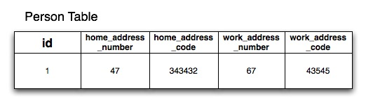
If you define theAddressclass in a separate Groovy file in thegrails-app/domaindirectory you will also get anaddresstable. If you don't want this to happen use Groovy's ability to define multiple classes per file and include theAddressclass below thePersonclass in thegrails-app/domain/Person.groovyfile
5.2.3 GORM中的继承
GORM supports inheritance both from abstract base classes and concrete persistent GORM entities. For example:class Content {
String author
}class BlogEntry extends Content {
URL url
}class Book extends Content { String ISBN }
class PodCast extends Content { byte[] audioStream }
Content class and then various child classes with more specific behaviour.Considerations
At the database level Grails by default uses table-per-hierarchy mapping with a discriminator column calledclass so the parent class (Content) and its subclasses (BlogEntry, Book etc.), share the same table.Table-per-hierarchy mapping has a down side in that you cannot have non-nullable properties with inheritance mapping. An alternative is to use table-per-subclass which can be enabled with the ORM DSLHowever, excessive use of inheritance and table-per-subclass can result in poor query performance due to the use of outer join queries. In general our advice is if you're going to use inheritance, don't abuse it and don't make your inheritance hierarchy too deep.Polymorphic Queries
The upshot of inheritance is that you get the ability to polymorphically query. For example using the list method on theContent super class will return all subclasses of Content:def content = Content.list() // list all blog entries, books and podcasts
content = Content.findAllByAuthor('Joe Bloggs') // find all by authordef podCasts = PodCast.list() // list only podcasts5.2.4 集合、列表和映射
Sets of Objects
By default when you define a relationship with GORM it is ajava.util.Set which is an unordered collection that cannot contain duplicates. In other words when you have:class Author {
static hasMany = [books: Book]
}java.util.Set. Sets guarantee uniquenes but not order, which may not be what you want. To have custom ordering you configure the Set as a SortedSet:class Author { SortedSet books static hasMany = [books: Book]
}java.util.SortedSet implementation is used which means you must implement java.lang.Comparable in your Book class:class Book implements Comparable { String title Date releaseDate = new Date() int compareTo(obj) { releaseDate.compareTo(obj.releaseDate) } }
Lists of Objects
To keep objects in the order which they were added and to be able to reference them by index like an array you can define your collection type as aList:class Author { List books static hasMany = [books: Book]
}author.books[0] // get the first book
books_idx column where it saves the index of the elements in the collection to retain this order at the database level.When using a List, elements must be added to the collection before being saved, otherwise Hibernate will throw an exception (org.hibernate.HibernateException: null index column for collection):// This won't work! def book = new Book(title: 'The Shining') book.save() author.addToBooks(book)// Do it this way instead. def book = new Book(title: 'Misery') author.addToBooks(book) author.save()
Bags of Objects
If ordering and uniqueness aren't a concern (or if you manage these explicitly) then you can use the Hibernate Bag type to represent mapped collections.The only change required for this is to define the collection type as aCollection:class Author { Collection books static hasMany = [books: Book]
}Set or a List.Maps of Objects
If you want a simple map of string/value pairs GORM can map this with the following:class Author {
Map books // map of ISBN:book names
}def a = new Author()
a.books = ["1590597583":"Grails Book"]
a.save()class Book { Map authors static hasMany = [authors: Author]
}def a = new Author(name:"Stephen King")def book = new Book()
book.authors = [stephen:a]
book.save()hasMany property defines the type of the elements within the Map. The keys for the map must be strings.A Note on Collection Types and Performance
The JavaSet type doesn't allow duplicates. To ensure uniqueness when adding an entry to a Set association Hibernate has to load the entire associations from the database. If you have a large numbers of entries in the association this can be costly in terms of performance.The same behavior is required for List types, since Hibernate needs to load the entire association to maintain order. Therefore it is recommended that if you anticipate a large numbers of records in the association that you make the association bidirectional so that the link can be created on the inverse side. For example consider the following code:def book = new Book(title:"New Grails Book") def author = Author.get(1) book.author = author book.save()
Author with a large number of associated Book instances if you were to write code like the following you would see an impact on performance:def book = new Book(title:"New Grails Book") def author = Author.get(1) author.addToBooks(book) author.save()
5.3 持久化基础
A key thing to remember about Grails is that under the surface Grails is using Hibernate for persistence. If you are coming from a background of using ActiveRecord or iBatis Hibernate's "session" model may feel a little strange.Grails automatically binds a Hibernate session to the currently executing request. This lets you use the save and delete methods as well as other GORM methods transparently.Transactional Write-Behind
A useful feature of Hibernate over direct JDBC calls and even other frameworks is that when you call save or delete it does not necessarily perform any SQL operations at that point. Hibernate batches up SQL statements and executes them as late as possible, often at the end of the request when flushing and closing the session. This is typically done for you automatically by Grails, which manages your Hibernate session.Hibernate caches database updates where possible, only actually pushing the changes when it knows that a flush is required, or when a flush is triggered programmatically. One common case where Hibernate will flush cached updates is when performing queries since the cached information might be included in the query results. But as long as you're doing non-conflicting saves, updates, and deletes, they'll be batched until the session is flushed. This can be a significant performance boost for applications that do a lot of database writes.Note that flushing is not the same as committing a transaction. If your actions are performed in the context of a transaction, flushing will execute SQL updates but the database will save the changes in its transaction queue and only finalize the updates when the transaction commits.5.3.1 保存和更新
An example of using the save method can be seen below:def p = Person.get(1) p.save()
def p = Person.get(1)
p.save(flush: true)def p = Person.get(1) try { p.save(flush: true) } catch (org.springframework.dao.DataIntegrityViolationException e) { // deal with exception }
save() will simply return null in this case, but if you would prefer it to throw an exception you can use the failOnError argument:def p = Person.get(1) try { p.save(failOnError: true) } catch (ValidationException e) { // deal with exception }
Config.groovy, as described in the section on configuration. Just remember that when you are saving domain instances that have been bound with data provided by the user, the likelihood of validation exceptions is quite high and you won't want those exceptions propagating to the end user.You can find out more about the subtleties of saving data in this article - a must read!
5.3.2 删除对象
An example of the delete method can be seen below:def p = Person.get(1) p.delete()
flush argument:def p = Person.get(1)
p.delete(flush: true)flush argument lets you catch any errors that occur during a delete. A common error that may occur is if you violate a database constraint, although this is normally down to a programming or schema error. The following example shows how to catch a DataIntegrityViolationException that is thrown when you violate the database constraints:def p = Person.get(1)try { p.delete(flush: true) } catch (org.springframework.dao.DataIntegrityViolationException e) { flash.message = "Could not delete person ${p.name}" redirect(action: "show", id: p.id) }
deleteAll method as deleting data is discouraged and can often be avoided through boolean flags/logic.If you really need to batch delete data you can use the executeUpdate method to do batch DML statements:Customer.executeUpdate("delete Customer c where c.name = :oldName", [oldName: "Fred"])
5.3.3 理解级联更新和删除
It is critical that you understand how cascading updates and deletes work when using GORM. The key part to remember is thebelongsTo setting which controls which class "owns" a relationship.Whether it is a one-to-one, one-to-many or many-to-many, defining belongsTo will result in updates cascading from the owning class to its dependant (the other side of the relationship), and for many-/one-to-one and one-to-many relationships deletes will also cascade.If you do not define belongsTo then no cascades will happen and you will have to manually save each object (except in the case of the one-to-many, in which case saves will cascade automatically if a new instance is in a hasMany collection).Here is an example:class Airport {
String name
static hasMany = [flights: Flight]
}class Flight {
String number
static belongsTo = [airport: Airport]
}Airport and add some Flights to it I can save the Airport and have the updates cascaded down to each flight, hence saving the whole object graph:new Airport(name: "Gatwick") .addToFlights(new Flight(number: "BA3430")) .addToFlights(new Flight(number: "EZ0938")) .save()
Airport all Flights associated with it will also be deleted:def airport = Airport.findByName("Gatwick")
airport.delete()belongsTo then the above cascading deletion code would not work. To understand this better take a look at the summaries below that describe the default behaviour of GORM with regards to specific associations. Also read part 2 of the GORM Gotchas series of articles to get a deeper understanding of relationships and cascading.Bidirectional one-to-many with belongsTo
class A { static hasMany = [bees: B] }class B { static belongsTo = [a: A] }belongsTo then the cascade strategy is set to "ALL" for the one side and "NONE" for the many side.Unidirectional one-to-many
class A { static hasMany = [bees: B] }class B { }Bidirectional one-to-many, no belongsTo
class A { static hasMany = [bees: B] }class B { A a }belongsTo then the cascade strategy is set to "SAVE-UPDATE" for the one side and "NONE" for the many side.Unidirectional one-to-one with belongsTo
class A { }class B { static belongsTo = [a: A] }belongsTo then the cascade strategy is set to "ALL" for the owning side of the relationship (A->B) and "NONE" from the side that defines the belongsTo (B->A)Note that if you need further control over cascading behaviour, you can use the ORM DSL.
5.3.4 立即加载和延迟加载
Associations in GORM are by default lazy. This is best explained by example:class Airport {
String name
static hasMany = [flights: Flight]
}class Flight {
String number
Location destination
static belongsTo = [airport: Airport]
}class Location {
String city
String country
}def airport = Airport.findByName("Gatwick") for (flight in airport.flights) { println flight.destination.city }
Airport instance, another to get its flights, and then 1 extra query for each iteration over the flights association to get the current flight's destination. In other words you get N+1 queries (if you exclude the original one to get the airport).Configuring Eager Fetching
An alternative approach that avoids the N+1 queries is to use eager fetching, which can be specified as follows:class Airport {
String name
static hasMany = [flights: Flight]
static mapping = {
flights lazy: false
}
}flights association will be loaded at the same time as its Airport instance, although a second query will be executed to fetch the collection. You can also use fetch: 'join' instead of lazy: false , in which case GORM will only execute a single query to get the airports and their flights. This works well for single-ended associations, but you need to be careful with one-to-manys. Queries will work as you'd expect right up to the moment you add a limit to the number of results you want. At that point, you will likely end up with fewer results than you were expecting. The reason for this is quite technical but ultimately the problem arises from GORM using a left outer join.So, the recommendation is currently to use fetch: 'join' for single-ended associations and lazy: false for one-to-manys.Be careful how and where you use eager loading because you could load your entire database into memory with too many eager associations. You can find more information on the mapping options in the section on the ORM DSL.Using Batch Fetching
Although eager fetching is appropriate for some cases, it is not always desirable. If you made everything eager you could quite possibly load your entire database into memory resulting in performance and memory problems. An alternative to eager fetching is to use batch fetching. You can configure Hibernate to lazily fetch results in "batches". For example:class Airport {
String name
static hasMany = [flights: Flight]
static mapping = {
flights batchSize: 10
}
}batchSize argument, when you iterate over the flights association, Hibernate will fetch results in batches of 10. For example if you had an Airport that had 30 flights, if you didn't configure batch fetching you would get 1 query to fetch the Airport and then 30 queries to fetch each flight. With batch fetching you get 1 query to fetch the Airport and 3 queries to fetch each Flight in batches of 10. In other words, batch fetching is an optimization of the lazy fetching strategy. Batch fetching can also be configured at the class level as follows:class Flight {
…
static mapping = {
batchSize 10
}
}5.3.5 悲观锁和乐观锁
Optimistic Locking
By default GORM classes are configured for optimistic locking. Optimistic locking is a feature of Hibernate which involves storing a version value in a specialversion column in the database that is incremented after each update.The version column gets read into a version property that contains the current versioned state of persistent instance which you can access:def airport = Airport.get(10)println airport.version
def airport = Airport.get(10)try { airport.name = "Heathrow" airport.save(flush: true) } catch (org.springframework.dao.OptimisticLockingFailureException e) { // deal with exception }
The version will only be updated after flushing the session.
Pessimistic Locking
Pessimistic locking is equivalent to doing a SQL "SELECT * FOR UPDATE" statement and locking a row in the database. This has the implication that other read operations will be blocking until the lock is released.In Grails pessimistic locking is performed on an existing instance with the lock method:def airport = Airport.get(10) airport.lock() // lock for update airport.name = "Heathrow" airport.save()
get() and the call to lock().To get around this problem you can use the static lock method that takes an id just like get:def airport = Airport.lock(10) // lock for update airport.name = "Heathrow" airport.save()
def airport = Airport.findByName("Heathrow", [lock: true])
def airport = Airport.createCriteria().get {
eq('name', 'Heathrow')
lock true
}5.3.6 修改检查
Once you have loaded and possibly modified a persistent domain class instance, it isn't straightforward to retrieve the original values. If you try to reload the instance using get Hibernate will return the current modified instance from its Session cache. Reloading using another query would trigger a flush which could cause problems if your data isn't ready to be flushed yet. So GORM provides some methods to retrieve the original values that Hibernate caches when it loads the instance (which it uses for dirty checking).isDirty
You can use the isDirty method to check if any field has been modified:def airport = Airport.get(10) assert !airport.isDirty()airport.properties = params if (airport.isDirty()) { // do something based on changed state }
isDirty() does not currently check collection associations, but it does check all other persistent properties and associations.
You can also check if individual fields have been modified:def airport = Airport.get(10) assert !airport.isDirty()airport.properties = params if (airport.isDirty('name')) { // do something based on changed name }
getDirtyPropertyNames
You can use the getDirtyPropertyNames method to retrieve the names of modified fields; this may be empty but will not be null:def airport = Airport.get(10) assert !airport.isDirty()airport.properties = params def modifiedFieldNames = airport.getDirtyPropertyNames() for (fieldName in modifiedFieldNames) { // do something based on changed value }
getPersistentValue
You can use the getPersistentValue method to retrieve the value of a modified field:def airport = Airport.get(10) assert !airport.isDirty()airport.properties = params def modifiedFieldNames = airport.getDirtyPropertyNames() for (fieldName in modifiedFieldNames) { def currentValue = airport."$fieldName" def originalValue = airport.getPersistentValue(fieldName) if (currentValue != originalValue) { // do something based on changed value } }
5.4 GORM查询
GORM supports a number of powerful ways to query from dynamic finders, to criteria to Hibernate's object oriented query language HQL.Groovy's ability to manipulate collections with GPath and methods like sort, findAll and so on combined with GORM results in a powerful combination.However, let's start with the basics.Listing instances
Use the list method to obtain all instances of a given class:def books = Book.list()
def books = Book.list(offset:10, max:20)
def books = Book.list(sort:"title", order:"asc")
sort argument is the name of the domain class property that you wish to sort on, and the order argument is either asc for ascending or desc for descending.Retrieval by Database Identifier
The second basic form of retrieval is by database identifier using the get method:def book = Book.get(23)
def books = Book.getAll(23, 93, 81)
5.4.1 动态查询器
GORM supports the concept of dynamic finders. A dynamic finder looks like a static method invocation, but the methods themselves don't actually exist in any form at the code level.Instead, a method is auto-magically generated using code synthesis at runtime, based on the properties of a given class. Take for example theBook class:class Book {
String title
Date releaseDate
Author author
}class Author {
String name
}Book class has properties such as title, releaseDate and author. These can be used by the findBy and findAllBy methods in the form of "method expressions":def book = Book.findByTitle("The Stand")book = Book.findByTitleLike("Harry Pot%")book = Book.findByReleaseDateBetween(firstDate, secondDate)book = Book.findByReleaseDateGreaterThan(someDate)book = Book.findByTitleLikeOrReleaseDateLessThan("%Something%", someDate)
Method Expressions
A method expression in GORM is made up of the prefix such as findBy followed by an expression that combines one or more properties. The basic form is:Book.findBy([Property][Comparator][Boolean Operator])?[Property][Comparator]def book = Book.findByTitle("The Stand")book = Book.findByTitleLike("Harry Pot%")
Like comparator, is equivalent to a SQL like expression.The possible comparators include:
InList- In the list of given valuesLessThan- less than a given valueLessThanEquals- less than or equal a give valueGreaterThan- greater than a given valueGreaterThanEquals- greater than or equal a given valueLike- Equivalent to a SQL like expressionIlike- Similar to aLike, except case insensitiveNotEqual- Negates equalityBetween- Between two values (requires two arguments)IsNotNull- Not a null value (doesn't take an argument)IsNull- Is a null value (doesn't take an argument)
def now = new Date()
def lastWeek = now - 7
def book = Book.findByReleaseDateBetween(lastWeek, now)books = Book.findAllByReleaseDateIsNull()
books = Book.findAllByReleaseDateIsNotNull()Boolean logic (AND/OR)
Method expressions can also use a boolean operator to combine two or more criteria:def books = Book.findAllByTitleLikeAndReleaseDateGreaterThan(
"%Java%", new Date() - 30)And in the middle of the query to make sure both conditions are satisfied, but you could equally use Or:def books = Book.findAllByTitleLikeOrReleaseDateGreaterThan(
"%Java%", new Date() - 30)And or all Or. If you need to combine And and Or or if the number of criteria creates a very long method name, just convert the query to a Criteria or HQL query.Querying Associations
Associations can also be used within queries:def author = Author.findByName("Stephen King")def books = author ? Book.findAllByAuthor(author) : []Author instance is not null we use it in a query to obtain all the Book instances for the given Author.Pagination and Sorting
The same pagination and sorting parameters available on the list method can also be used with dynamic finders by supplying a map as the final parameter:def books = Book.findAllByTitleLike("Harry Pot%", [max: 3, offset: 2, sort: "title", order: "desc"])
5.4.2 Where查询
Thewhere method, introduced in Grails 2.0, builds on the support for Detached Criteria by providing an enhanced, compile-time checked query DSL for common queries. The where method is more flexible than dynamic finders, less verbose than criteria and provides a powerful mechanism to compose queries.Basic Querying
Thewhere method accepts a closure that looks very similar to Groovy's regular collection methods. The closure should define the logical criteria in regular Groovy syntax, for example:def query = Person.where {
firstName == "Bart"
}
Person bart = query.find()DetachedCriteria instance, which means it is not associated with any particular database connection or session. This means you can use the where method to define common queries at the class level:class Person {
static simpsons = where {
lastName == "Simpson"
}
…
}
…
Person.simpsons.each {
println it.firstname
}findAll and find methods to accomplish this:def results = Person.findAll {
lastName == "Simpson"
}
def results = Person.findAll(sort:"firstName") {
lastName == "Simpson"
}
Person p = Person.find { firstName == "Bart" }| Operator | Criteria Method | Description |
|---|---|---|
| == | eq | Equal to |
| != | ne | Not equal to |
| > | gt | Greater than |
| < | lt | Less than |
| >= | ge | Greater than or equal to |
| <= | le | Less than or equal to |
| in | inList | Contained within the given list |
| ==~ | like | Like a given string |
| =~ | ilike | Case insensitive like |
def query = Person.where {
(lastName != "Simpson" && firstName != "Fred") || (firstName == "Bart" && age > 9)
}
def results = query.list(sort:"firstName")Pattern object, in which case they map onto an rlike query:def query = Person.where {
firstName ==~ ~/B.+/
}
Note that rlike queries are only supported if the underlying database supports regular expressions
A between criteria query can be done by combining the in keyword with a range:def query = Person.where {
age in 18..65
}isNull and isNotNull style queries by using null with regular comparison operators:def query = Person.where {
middleName == null
}Query Composition
Since the return value of thewhere method is a DetachedCriteria instance you can compose new queries from the original query:def query = Person.where {
lastName == "Simpson"
}
def bartQuery = query.where {
firstName == "Bart"
}
Person p = bartQuery.find()where method unless it has been explicitly cast to a DetachedCriteria instance. In other words the following will produce an error:def callable = {
lastName == "Simpson"
}
def query = Person.where(callable)import grails.gorm.DetachedCriteriadef callable = { lastName == "Simpson" } as DetachedCriteria<Person> def query = Person.where(callable)
as keyword) to a DetachedCriteria instance targeted at the Person class.Conjunction, Disjunction and Negation
As mentioned previously you can combine regular Groovy logical operators (|| and &&) to form conjunctions and disjunctions:def query = Person.where {
(lastName != "Simpson" && firstName != "Fred") || (firstName == "Bart" && age > 9)
}!:def query = Person.where {
firstName == "Fred" && !(lastName == 'Simpson')
}Property Comparison Queries
If you use a property name on both the left hand and right side of a comparison expression then the appropriate property comparison criteria is automatically used:def query = Person.where {
firstName == lastName
}| Operator | Criteria Method | Description |
|---|---|---|
| == | eqProperty | Equal to |
| != | neProperty | Not equal to |
| > | gtProperty | Greater than |
| < | ltProperty | Less than |
| >= | geProperty | Greater than or equal to |
| <= | leProperty | Less than or equal to |
Querying Associations
Associations can be queried by using the dot operator to specify the property name of the association to be queried:def query = Pet.where {
owner.firstName == "Joe" || owner.firstName == "Fred"
}def query = Person.where {
pets { name == "Jack" || name == "Joe" }
}def query = Person.where {
pets { name == "Jack" } || firstName == "Ed"
}def query = Person.where {
pets.size() == 2
}| Operator | Criteria Method | Description |
|---|---|---|
| == | sizeEq | The collection size is equal to |
| != | sizeNe | The collection size is not equal to |
| > | sizeGt | The collection size is greater than |
| < | sizeLt | The collection size is less than |
| >= | sizeGe | The collection size is greater than or equal to |
| <= | sizeLe | The collection size is less than or equal to |
Subqueries
It is possible to execute subqueries within where queries. For example to find all the people older than the average age the following query can be used:final query = Person.where {
age > avg(age)
}| Method | Description |
|---|---|
| avg | The average of all values |
| sum | The sum of all values |
| max | The maximum value |
| min | The minimum value |
| count | The count of all values |
| property | Retrieves a property of the resulting entities |
of method and passing in a closure containing the criteria:def query = Person.where {
age > avg(age).of { lastName == "Simpson" } && firstName == "Homer"
}property subquery returns multiple results, the criterion used compares all results. For example the following query will find all people younger than people with the surname "Simpson":Person.where {
age < property(age).of { lastName == "Simpson" }
}Other Functions
There are several functions available to you within the context of a query. These are summarized in the table below:| Method | Description |
|---|---|
| second | The second of a date property |
| minute | The minute of a date property |
| hour | The hour of a date property |
| day | The day of the month of a date property |
| month | The month of a date property |
| year | The year of a date property |
| lower | Converts a string property to upper case |
| upper | Converts a string property to lower case |
| length | The length of a string property |
| trim | Trims a string property |
Currently functions can only be applied to properties or associations of domain classes. You cannot, for example, use a function on a result of a subquery.For example the following query can be used to find all pet's born in 2011:
def query = Pet.where {
year(birthDate) == 2011
}def query = Person.where {
year(pets.birthDate) == 2009
}Batch Updates and Deletes
Since eachwhere method call returns a DetachedCriteria instance, you can use where queries to execute batch operations such as batch updates and deletes. For example, the following query will update all people with the surname "Simpson" to have the surname "Bloggs":def query = Person.where {
lastName == 'Simpson'
}
int total = query.updateAll(lastName:"Bloggs")Note that one limitation with regards to batch operations is that join queries (queries that query associations) are not allowed.To batch delete records you can use the
deleteAll method:def query = Person.where {
lastName == 'Simpson'
}
int total = query.deleteAll()5.4.3 条件查询
Criteria is an advanced way to query that uses a Groovy builder to construct potentially complex queries. It is a much better approach than building up query strings using aStringBuffer.Criteria can be used either with the createCriteria or withCriteria methods. The builder uses Hibernate's Criteria API. The nodes on this builder map the static methods found in the Restrictions class of the Hibernate Criteria API. For example:def c = Account.createCriteria()
def results = c {
between("balance", 500, 1000)
eq("branch", "London")
or {
like("holderFirstName", "Fred%")
like("holderFirstName", "Barney%")
}
maxResults(10)
order("holderLastName", "desc")
}Account objects in a List matching the following criteria:
balanceis between 500 and 1000branchis 'London'holderFirstNamestarts with 'Fred' or 'Barney'
holderLastName.If no records are found with the above criteria, an empty List is returned.Conjunctions and Disjunctions
As demonstrated in the previous example you can group criteria in a logical OR using anor { } block:or {
between("balance", 500, 1000)
eq("branch", "London")
}and {
between("balance", 500, 1000)
eq("branch", "London")
}not {
between("balance", 500, 1000)
eq("branch", "London")
}Querying Associations
Associations can be queried by having a node that matches the property name. For example say theAccount class had many Transaction objects:class Account {
…
static hasMany = [transactions: Transaction]
…
}transaction as a builder node:def c = Account.createCriteria()
def now = new Date()
def results = c.list {
transactions {
between('date', now - 10, now)
}
}Account instances that have performed transactions within the last 10 days.
You can also nest such association queries within logical blocks:def c = Account.createCriteria()
def now = new Date()
def results = c.list {
or {
between('created', now - 10, now)
transactions {
between('date', now - 10, now)
}
}
}Querying with Projections
Projections may be used to customise the results. Define a "projections" node within the criteria builder tree to use projections. There are equivalent methods within the projections node to the methods found in the Hibernate Projections class:def c = Account.createCriteria()def numberOfBranches = c.get {
projections {
countDistinct('branch')
}
}Using SQL Restrictions
You can access Hibernate's SQL Restrictions capabilities.def c = Person.createCriteria()def peopleWithShortFirstNames = c.list {
sqlRestriction "char_length(first_name) <= 4"
}Note that the parameter there is SQL. Thefirst_nameattribute referenced in the example refers to the persistence model, not the object model like in HQL queries. ThePersonproperty namedfirstNameis mapped to thefirst_namecolumn in the database and you must refer to that in thesqlRestrictionstring.Also note that the SQL used here is not necessarily portable across databases.
Using Scrollable Results
You can use Hibernate's ScrollableResults feature by calling the scroll method:def results = crit.scroll {
maxResults(10)
}
def f = results.first()
def l = results.last()
def n = results.next()
def p = results.previous()def future = results.scroll(10)
def accountNumber = results.getLong('number')A result iterator that allows moving around within the results by arbitrary increments. The Query / ScrollableResults pattern is very similar to the JDBC PreparedStatement/ ResultSet pattern and the semantics of methods of this interface are similar to the similarly named methods on ResultSet.Contrary to JDBC, columns of results are numbered from zero.
Setting properties in the Criteria instance
If a node within the builder tree doesn't match a particular criterion it will attempt to set a property on the Criteria object itself. This allows full access to all the properties in this class. This example callssetMaxResults and setFirstResult on the Criteria instance:import org.hibernate.FetchMode as FM … def results = c.list { maxResults(10) firstResult(50) fetchMode("aRelationship", FM.JOIN) }
Querying with Eager Fetching
In the section on Eager and Lazy Fetching we discussed how to declaratively specify fetching to avoid the N+1 SELECT problem. However, this can also be achieved using a criteria query:def criteria = Task.createCriteria()
def tasks = criteria.list{
eq "assignee.id", task.assignee.id
join 'assignee'
join 'project'
order 'priority', 'asc'
}join method: it tells the criteria API to use a JOIN to fetch the named associations with the Task instances. It's probably best not to use this for one-to-many associations though, because you will most likely end up with duplicate results. Instead, use the 'select' fetch mode:
import org.hibernate.FetchMode as FM … def results = Airport.withCriteria { eq "region", "EMEA" fetchMode "flights", FM.SELECT }
flights association, you will get reliable results - even with the maxResults option.An important point to bear in mind is that if you include associations in the query constraints, those associations will automatically be eagerly loaded. For example, in this query:fetchModeandjoinare general settings of the query and can only be specified at the top-level, i.e. you cannot use them inside projections or association constraints.
def results = Airport.withCriteria {
eq "region", "EMEA"
flights {
like "number", "BA%"
}
}flights collection would be loaded eagerly via a join even though the fetch mode has not been explicitly set.Method Reference
If you invoke the builder with no method name such as:c { … }c.list { … }| Method | Description |
|---|---|
| list | This is the default method. It returns all matching rows. |
| get | Returns a unique result set, i.e. just one row. The criteria has to be formed that way, that it only queries one row. This method is not to be confused with a limit to just the first row. |
| scroll | Returns a scrollable result set. |
| listDistinct | If subqueries or associations are used, one may end up with the same row multiple times in the result set, this allows listing only distinct entities and is equivalent to DISTINCT_ROOT_ENTITY of the CriteriaSpecification class. |
| count | Returns the number of matching rows. |
5.4.4 分离的条件查询(Detached Criteria)
Detached Criteria are criteria queries that are not associated with any given database session/connection. Supported since Grails 2.0, Detached Criteria queries have many uses including allowing you to create common reusable criteria queries, execute subqueries and execute batch updates/deletes.Building Detached Criteria Queries
The primary point of entry for using the Detached Criteria is thegrails.gorm.DetachedCriteria class which accepts a domain class as the only argument to its constructor:import grails.gorm.* … def criteria = new DetachedCriteria(Person)
build method:def criteria = new DetachedCriteria(Person).build {
eq 'lastName', 'Simpson'
}DetachedCriteria instance do not mutate the original object but instead return a new query. In other words, you have to use the return value of the build method to obtain the mutated criteria object:def criteria = new DetachedCriteria(Person).build {
eq 'lastName', 'Simpson'
}
def bartQuery = criteria.build {
eq 'firstName', 'Bart'
}Executing Detached Criteria Queries
Unlike regular criteria, Detached Criteria are lazy, in that no query is executed at the point of definition. Once a Detached Criteria query has been constructed then there are a number of useful query methods which are summarized in the table below:| Method | Description |
|---|---|
| list | List all matching entities |
| get | Return a single matching result |
| count | Count all matching records |
| exists | Return true if any matching records exist |
| deleteAll | Delete all matching records |
| updateAll(Map) | Update all matching records with the given properties |
firstName property:def criteria = new DetachedCriteria(Person).build { eq 'lastName', 'Simpson' } def results = criteria.list(max:4, sort:"firstName")
def results = criteria.list(max:4, sort:"firstName") {
gt 'age', 30
}get or find methods (which are synonyms):Person p = criteria.find() // or criteria.get()
DetachedCriteria class itself also implements the Iterable interface which means that it can be treated like a list:def criteria = new DetachedCriteria(Person).build {
eq 'lastName', 'Simpson'
}
criteria.each {
println it.firstName
}each method is called. The same applies to all other Groovy collection iteration methods.You can also execute dynamic finders on DetachedCriteria just like on domain classes. For example:def criteria = new DetachedCriteria(Person).build { eq 'lastName', 'Simpson' } def bart = criteria.findByFirstName("Bart")
Using Detached Criteria for Subqueries
Within the context of a regular criteria query you can useDetachedCriteria to execute subquery. For example if you want to find all people who are older than the average age the following query will accomplish that:def results = Person.withCriteria {
gt "age", new DetachedCriteria(Person).build {
projections {
avg "age"
}
}
order "firstName"
}Person) and hence the query can be shortened to:def results = Person.withCriteria {
gt "age", {
projections {
avg "age"
}
}
order "firstName"
}gtAll query can be used:def results = Person.withCriteria {
gtAll "age", {
projections {
property "age"
}
between 'age', 18, 65
} order "firstName"
}| Method | Description |
|---|---|
| gtAll | greater than all subquery results |
| geAll | greater than or equal to all subquery results |
| ltAll | less than all subquery results |
| leAll | less than or equal to all subquery results |
| eqAll | equal to all subquery results |
| neAll | not equal to all subquery results |
Batch Operations with Detached Criteria
TheDetachedCriteria class can be used to execute batch operations such as batch updates and deletes. For example, the following query will update all people with the surname "Simpson" to have the surname "Bloggs":def criteria = new DetachedCriteria(Person).build { eq 'lastName', 'Simpson' } int total = criteria.updateAll(lastName:"Bloggs")
Note that one limitation with regards to batch operations is that join queries (queries that query associations) are not allowed within the DetachedCriteria instance.
To batch delete records you can use the deleteAll method:def criteria = new DetachedCriteria(Person).build { eq 'lastName', 'Simpson' } int total = criteria.deleteAll()
5.4.5 Hibernate 查询语言（HQL）
GORM classes also support Hibernate's query language HQL, a very complete reference for which can be found in the Hibernate documentation of the Hibernate documentation.GORM provides a number of methods that work with HQL including find, findAll and executeQuery. An example of a query can be seen below:def results =
Book.findAll("from Book as b where b.title like 'Lord of the%'")Positional and Named Parameters
In this case the value passed to the query is hard coded, however you can equally use positional parameters:def results =
Book.findAll("from Book as b where b.title like ?", ["The Shi%"])def author = Author.findByName("Stephen King") def books = Book.findAll("from Book as book where book.author = ?", [author])
def results =
Book.findAll("from Book as b " +
"where b.title like :search or b.author like :search",
[search: "The Shi%"])def author = Author.findByName("Stephen King") def books = Book.findAll("from Book as book where book.author = :author", [author: author])
Multiline Queries
Use the line continuation character to separate the query across multiple lines:def results = Book.findAll("\
from Book as b, \
Author as a \
where b.author = a and a.surname = ?", ['Smith'])Triple-quoted Groovy multiline Strings will NOT work with HQL queries.
Pagination and Sorting
You can also perform pagination and sorting whilst using HQL queries. To do so simply specify the pagination options as a Map at the end of the method call and include an "ORDER BY" clause in the HQL:def results =
Book.findAll("from Book as b where " +
"b.title like 'Lord of the%' " +
"order by b.title asc",
[max: 10, offset: 20])5.5 高级GORM特性
The following sections cover more advanced usages of GORM including caching, custom mapping and events.5.5.1 事件和自动时间戳
GORM supports the registration of events as methods that get fired when certain events occurs such as deletes, inserts and updates. The following is a list of supported events:beforeInsert- Executed before an object is initially persisted to the databasebeforeUpdate- Executed before an object is updatedbeforeDelete- Executed before an object is deletedbeforeValidate- Executed before an object is validatedafterInsert- Executed after an object is persisted to the databaseafterUpdate- Executed after an object has been updatedafterDelete- Executed after an object has been deletedonLoad- Executed when an object is loaded from the database
Do not attempt to flush the session within an event (such as with obj.save(flush:true)). Since events are fired during flushing this will cause a StackOverflowError.
Event types
The beforeInsert event
Fired before an object is saved to the databaseclass Person {
Date dateCreated def beforeInsert() {
dateCreated = new Date()
}
}The beforeUpdate event
Fired before an existing object is updatedclass Person {
Date dateCreated
Date lastUpdated def beforeInsert() {
dateCreated = new Date()
}
def beforeUpdate() {
lastUpdated = new Date()
}
}The beforeDelete event
Fired before an object is deleted.class Person {
String name
Date dateCreated
Date lastUpdated def beforeDelete() {
ActivityTrace.withNewSession {
new ActivityTrace(eventName:"Person Deleted",data:name).save()
}
}
}withNewSession method above. Since events are triggered whilst Hibernate is flushing using persistence methods like save() and delete() won't result in objects being saved unless you run your operations with a new Session.Fortunately the withNewSession method lets you share the same transactional JDBC connection even though you're using a different underlying Session.The beforeValidate event
Fired before an object is validated.class Person {
String name static constraints = {
name size: 5..45
} def beforeValidate() {
name = name?.trim()
}
}beforeValidate method is run before any validators are run.GORM supports an overloaded version of beforeValidate which accepts a List parameter which may include
the names of the properties which are about to be validated. This version of beforeValidate will be called
when the validate method has been invoked and passed a List of property names as an argument.class Person {
String name
String town
Integer age static constraints = {
name size: 5..45
age range: 4..99
} def beforeValidate(List propertiesBeingValidated) {
// do pre validation work based on propertiesBeingValidated
}
}def p = new Person(name: 'Jacob Brown', age: 10)
p.validate(['age', 'name'])Note that whenEither or both versions ofvalidateis triggered indirectly because of a call to thesavemethod that thevalidatemethod is being invoked with no arguments, not aListthat includes all of the property names.
beforeValidate may be defined in a domain class. GORM will
prefer the List version if a List is passed to validate but will fall back on the
no-arg version if the List version does not exist. Likewise, GORM will prefer the
no-arg version if no arguments are passed to validate but will fall back on the
List version if the no-arg version does not exist. In that case, null is passed to beforeValidate.The onLoad/beforeLoad event
Fired immediately before an object is loaded from the database:class Person {
String name
Date dateCreated
Date lastUpdated def onLoad() {
log.debug "Loading ${id}"
}
}beforeLoad() is effectively a synonym for onLoad(), so only declare one or the other.The afterLoad event
Fired immediately after an object is loaded from the database:class Person {
String name
Date dateCreated
Date lastUpdated def afterLoad() {
name = "I'm loaded"
}
}Custom Event Listeners
You can also register event handler classes in an application'sgrails-app/conf/spring/resources.groovy or in the doWithSpring closure in a plugin descriptor by registering a Spring bean named hibernateEventListeners. This bean has one property, listenerMap which specifies the listeners to register for various Hibernate events.The values of the Map are instances of classes that implement one or more Hibernate listener interfaces. You can use one class that implements all of the required interfaces, or one concrete class per interface, or any combination. The valid Map keys and corresponding interfaces are listed here:AuditEventListener which implements PostInsertEventListener, PostUpdateEventListener, and PostDeleteEventListener using the following in an application:beans = { auditListener(AuditEventListener) hibernateEventListeners(HibernateEventListeners) {
listenerMap = ['post-insert': auditListener,
'post-update': auditListener,
'post-delete': auditListener]
}
}def doWithSpring = { auditListener(AuditEventListener) hibernateEventListeners(HibernateEventListeners) {
listenerMap = ['post-insert': auditListener,
'post-update': auditListener,
'post-delete': auditListener]
}
}Automatic timestamping
The examples above demonstrated using events to update alastUpdated and dateCreated property to keep track of updates to objects. However, this is actually not necessary. By defining a lastUpdated and dateCreated property these will be automatically updated for you by GORM.If this is not the behaviour you want you can disable this feature with:class Person {
Date dateCreated
Date lastUpdated
static mapping = {
autoTimestamp false
}
}If you putnullable: falseconstraints on eitherdateCreatedorlastUpdated, your domain instances will fail validation - probably not what you want. Leave constraints off these properties unless you have disabled automatic timestamping.
5.5.2 自定义ORM映射
Grails domain classes can be mapped onto many legacy schemas with an Object Relational Mapping DSL (domain specific language). The following sections takes you through what is possible with the ORM DSL.None of this is necessary if you are happy to stick to the conventions defined by GORM for table names, column names and so on. You only needs this functionality if you need to tailor the way GORM maps onto legacy schemas or configures cachingCustom mappings are defined using a a static
mapping block defined within your domain class:class Person {
…
static mapping = { }
}5.5.2.1 表名和列名
Table names
The database table name which the class maps to can be customized using thetable method:class Person {
…
static mapping = {
table 'people'
}
}people instead of the default name of person.Column names
It is also possible to customize the mapping for individual columns onto the database. For example to change the name you can do:class Person { String firstName static mapping = {
table 'people'
firstName column: 'First_Name'
}
}firstName is a dynamic method within the mapping Closure that has a single Map parameter. Since its name corresponds to a domain class persistent field, the parameter values (in this case just "column") are used to configure the mapping for that property.Column type
GORM supports configuration of Hibernate types with the DSL using the type attribute. This includes specifing user types that implement the Hibernate org.hibernate.usertype.UserType interface, which allows complete customization of how a type is persisted. As an example if you had aPostCodeType you could use it as follows:class Address { String number
String postCode static mapping = {
postCode type: PostCodeType
}
}class Address { String number
String postCode static mapping = {
postCode type: 'text'
}
}postCode column map to the default large-text type for the database you're using (for example TEXT or CLOB).See the Hibernate documentation regarding Basic Types for further information.Many-to-One/One-to-One Mappings
In the case of associations it is also possible to configure the foreign keys used to map associations. In the case of a many-to-one or one-to-one association this is exactly the same as any regular column. For example consider the following:class Person { String firstName
Address address static mapping = {
table 'people'
firstName column: 'First_Name'
address column: 'Person_Address_Id'
}
}address association would map to a foreign key column called address_id. By using the above mapping we have changed the name of the foreign key column to Person_Adress_Id.One-to-Many Mapping
With a bidirectional one-to-many you can change the foreign key column used by changing the column name on the many side of the association as per the example in the previous section on one-to-one associations. However, with unidirectional associations the foreign key needs to be specified on the association itself. For example given a unidirectional one-to-many relationship betweenPerson and Address the following code will change the foreign key in the address table:class Person { String firstName static hasMany = [addresses: Address] static mapping = {
table 'people'
firstName column: 'First_Name'
addresses column: 'Person_Address_Id'
}
}address table, but instead some intermediate join table you can use the joinTable parameter:class Person { String firstName static hasMany = [addresses: Address] static mapping = {
table 'people'
firstName column: 'First_Name'
addresses joinTable: [name: 'Person_Addresses',
key: 'Person_Id',
column: 'Address_Id']
}
}Many-to-Many Mapping
Grails, by default maps a many-to-many association using a join table. For example consider this many-to-many association:class Group {
…
static hasMany = [people: Person]
}class Person {
…
static belongsTo = Group
static hasMany = [groups: Group]
}group_person containing foreign keys called person_id and group_id referencing the person and group tables. To change the column names you can specify a column within the mappings for each class.class Group {
…
static mapping = {
people column: 'Group_Person_Id'
}
}
class Person {
…
static mapping = {
groups column: 'Group_Group_Id'
}
}class Group {
…
static mapping = {
people column: 'Group_Person_Id',
joinTable: 'PERSON_GROUP_ASSOCIATIONS'
}
}
class Person {
…
static mapping = {
groups column: 'Group_Group_Id',
joinTable: 'PERSON_GROUP_ASSOCIATIONS'
}
}5.5.2.2 缓存策略
Setting up caching
Hibernate features a second-level cache with a customizable cache provider. This needs to be configured in thegrails-app/conf/DataSource.groovy file as follows:hibernate {
cache.use_second_level_cache=true
cache.use_query_cache=true
cache.provider_class='org.hibernate.cache.EhCacheProvider'
}For further reading on caching and in particular Hibernate's second-level cache, refer to the Hibernate documentation on the subject.
Caching instances
Call thecache method in your mapping block to enable caching with the default settings:class Person {
…
static mapping = {
table 'people'
cache true
}
}class Person {
…
static mapping = {
table 'people'
cache usage: 'read-only', include: 'non-lazy'
}
}Caching associations
As well as the ability to use Hibernate's second level cache to cache instances you can also cache collections (associations) of objects. For example:class Person { String firstName static hasMany = [addresses: Address] static mapping = {
table 'people'
version false
addresses column: 'Address', cache: true
}
}class Address {
String number
String postCode
}addresses collection. You can also use:cache: 'read-write' // or 'read-only' or 'transactional'
Caching Queries
You can cache queries such as dynamic finders and criteria. To do so using a dynamic finder you can pass thecache argument:def person = Person.findByFirstName("Fred", [cache: true])
In order for the results of the query to be cached, you must enable caching in your mapping as discussed in the previous section.You can also cache criteria queries:
def people = Person.withCriteria {
like('firstName', 'Fr%')
cache true
}Cache usages
Below is a description of the different cache settings and their usages:read-only- If your application needs to read but never modify instances of a persistent class, a read-only cache may be used.read-write- If the application needs to update data, a read-write cache might be appropriate.nonstrict-read-write- If the application only occasionally needs to update data (ie. if it is very unlikely that two transactions would try to update the same item simultaneously) and strict transaction isolation is not required, anonstrict-read-writecache might be appropriate.transactional- Thetransactionalcache strategy provides support for fully transactional cache providers such as JBoss TreeCache. Such a cache may only be used in a JTA environment and you must specifyhibernate.transaction.manager_lookup_classin thegrails-app/conf/DataSource.groovyfile'shibernateconfig.
5.5.2.3 继承策略
By default GORM classes usetable-per-hierarchy inheritance mapping. This has the disadvantage that columns cannot have a NOT-NULL constraint applied to them at the database level. If you would prefer to use a table-per-subclass inheritance strategy you can do so as follows:class Payment {
Integer amount static mapping = {
tablePerHierarchy false
}
}class CreditCardPayment extends Payment {
String cardNumber
}Payment class specifies that it will not be using table-per-hierarchy mapping for all child classes.
5.5.2.4 数据库标识符
You can customize how GORM generates identifiers for the database using the DSL. By default GORM relies on the native database mechanism for generating ids. This is by far the best approach, but there are still many schemas that have different approaches to identity.To deal with this Hibernate defines the concept of an id generator. You can customize the id generator and the column it maps to as follows:class Person {
…
static mapping = {
table 'people'
version false
id generator: 'hilo',
params: [table: 'hi_value',
column: 'next_value',
max_lo: 100]
}
}For more information on the different Hibernate generators refer to the Hibernate reference documentationAlthough you don't typically specify the
id field (Grails adds it for you) you can still configure its mapping like the other properties. For example to customise the column for the id property you can do:class Person {
…
static mapping = {
table 'people'
version false
id column: 'person_id'
}
}5.5.2.5 复合主键
GORM supports the concept of composite identifiers (identifiers composed from 2 or more properties). It is not an approach we recommend, but is available to you if you need it:import org.apache.commons.lang.builder.HashCodeBuilderclass Person implements Serializable { String firstName String lastName boolean equals(other) { if (!(other instanceof Person)) { return false } other.firstName == firstName && other.lastName == lastName } int hashCode() { def builder = new HashCodeBuilder() builder.append firstName builder.append lastName builder.toHashCode() } static mapping = { id composite: ['firstName', 'lastName'] } }
firstName and lastName properties of the Person class. To retrieve an instance by id you use a prototype of the object itself:def p = Person.get(new Person(firstName: "Fred", lastName: "Flintstone")) println p.firstName
Serializable interface and override the equals and hashCode methods, using the properties in the composite key for the calculations. The example above uses a HashCodeBuilder for convenience but it's fine to implement it yourself.Another important consideration when using composite primary keys is associations. If for example you have a many-to-one association where the foreign keys are stored in the associated table then 2 columns will be present in the associated table.For example consider the following domain class:class Address {
Person person
}address table will have an additional two columns called person_first_name and person_last_name. If you wish the change the mapping of these columns then you can do so using the following technique:class Address {
Person person
static mapping = {
person {
column: "FirstName"
column: "LastName"
}
}
}5.5.2.6 数据库索引
To get the best performance out of your queries it is often necessary to tailor the table index definitions. How you tailor them is domain specific and a matter of monitoring usage patterns of your queries. With GORM's DSL you can specify which columns are used in which indexes:class Person {
String firstName
String address
static mapping = {
table 'people'
version false
id column: 'person_id'
firstName column: 'First_Name', index: 'Name_Idx'
address column: 'Address', index: 'Name_Idx,Address_Index'
}
}index attribute; in this example index:'Name_Idx, Address_Index' will cause an error.
5.5.2.7 乐观锁和版本定义
As discussed in the section on Optimistic and Pessimistic Locking, by default GORM uses optimistic locking and automatically injects aversion property into every class which is in turn mapped to a version column at the database level.If you're mapping to a legacy schema that doesn't have version columns (or there's some other reason why you don't want/need this feature) you can disable this with the version method:class Person {
…
static mapping = {
table 'people'
version false
}
}If you disable optimistic locking you are essentially on your own with regards to concurrent updates and are open to the risk of users losing data (due to data overriding) unless you use pessimistic locking
Version columns types
By default Grails maps theversion property as a Long that gets incremented by one each time an instance is updated. But Hibernate also supports using a Timestamp, for example:import java.sql.Timestampclass Person { … Timestamp version static mapping = { table 'people' } }
Timestamp instead of a Long is that you combine the optimistic locking and last-updated semantics into a single column.
5.5.2.8 立即加载和延迟加载
Lazy Collections
As discussed in the section on Eager and Lazy fetching, GORM collections are lazily loaded by default but you can change this behaviour with the ORM DSL. There are several options available to you, but the most common ones are:- lazy: false
- fetch: 'join'
class Person { String firstName
Pet pet static hasMany = [addresses: Address] static mapping = {
addresses lazy: false
pet fetch: 'join'
}
}class Address {
String street
String postCode
}class Pet {
String name
}lazy: false , ensures that when a Person instance is loaded, its addresses collection is loaded at the same time with a second SELECT. The second option is basically the same, except the collection is loaded with a JOIN rather than another SELECT. Typically you want to reduce the number of queries, so fetch: 'join' is the more appropriate option. On the other hand, it could feasibly be the more expensive approach if your domain model and data result in more and larger results than would otherwise be necessary.For more advanced users, the other settings available are:
- batchSize: N
- lazy: false, batchSize: N
Person:class Person { String firstName
Pet pet static mapping = {
pet batchSize: 5
}
}Person instances, then when we access the first pet property, Hibernate will fetch that Pet plus the four next ones. You can get the same behaviour with eager loading by combining batchSize with the lazy: false option. You can find out more about these options in the Hibernate user guide and this primer on fetching strategies. Note that ORM DSL does not currently support the "subselect" fetching strategy.Lazy Single-Ended Associations
In GORM, one-to-one and many-to-one associations are by default lazy. Non-lazy single ended associations can be problematic when you load many entities because each non-lazy association will result in an extra SELECT statement. If the associated entities also have non-lazy associations, the number of queries grows significantly!Use the same technique as for lazy collections to make a one-to-one or many-to-one association non-lazy/eager:class Person {
String firstName
}class Address { String street
String postCode static belongsTo = [person: Person] static mapping = {
person lazy: false
}
}Person instance (through the person property) whenever an Address is loaded.Lazy Single-Ended Associations and Proxies
Hibernate uses runtime-generated proxies to facilitate single-ended lazy associations; Hibernate dynamically subclasses the entity class to create the proxy.Consider the previous example but with a lazily-loadedperson association: Hibernate will set the person property to a proxy that is a subclass of Person. When you call any of the getters (except for the id property) or setters on that proxy, Hibernate will load the entity from the database.Unfortunately this technique can produce surprising results. Consider the following example classes:class Pet {
String name
}class Dog extends Pet {
}class Person {
String name
Pet pet
}Person instance with a Dog as the pet. The following code will work as you would expect:
def person = Person.get(1) assert person.pet instanceof Dog assert Pet.get(person.petId) instanceof Dog
def person = Person.get(1) assert person.pet instanceof Dog assert Pet.list()[0] instanceof Dog
assert Pet.list()[0] instanceof DogPerson instance, Hibernate creates a proxy for its pet relation and attaches it to the session. Once that happens, whenever you retrieve that Pet instance with a query, a get(), or the pet relation within the same session , Hibernate gives you the proxy.Fortunately for us, GORM automatically unwraps the proxy when you use get() and findBy*(), or when you directly access the relation. That means you don't have to worry at all about proxies in the majority of cases. But GORM doesn't do that for objects returned with a query that returns a list, such as list() and findAllBy*(). However, if Hibernate hasn't attached the proxy to the session, those queries will return the real instances - hence why the last example works.You can protect yourself to a degree from this problem by using the instanceOf method by GORM:def person = Person.get(1) assert Pet.list()[0].instanceOf(Dog)
ClassCastException because the first pet in the list is a proxy instance with a class that is neither Dog nor a sub-class of Dog:def person = Person.get(1) Dog pet = Pet.list()[0]
Dog properties or methods on the instance without any problems.These days it's rare that you will come across this issue, but it's best to be aware of it just in case. At least you will know why such an error occurs and be able to work around it.
5.5.2.9 自定义级联行为
As described in the section on cascading updates, the primary mechanism to control the way updates and deletes cascade from one association to another is the static belongsTo property.However, the ORM DSL gives you complete access to Hibernate's transitive persistence capabilities using thecascade attribute.Valid settings for the cascade attribute include:
merge- merges the state of a detached associationsave-update- cascades only saves and updates to an associationdelete- cascades only deletes to an associationlock- useful if a pessimistic lock should be cascaded to its associationsrefresh- cascades refreshes to an associationevict- cascades evictions (equivalent todiscard()in GORM) to associations if setall- cascade all operations to associationsall-delete-orphan- Applies only to one-to-many associations and indicates that when a child is removed from an association then it should be automatically deleted. Children are also deleted when the parent is.
It is advisable to read the section in the Hibernate documentation on transitive persistence to obtain a better understanding of the different cascade styles and recommendations for their usageTo specify the cascade attribute simply define one or more (comma-separated) of the aforementioned settings as its value:
class Person { String firstName static hasMany = [addresses: Address] static mapping = {
addresses cascade: "all-delete-orphan"
}
}class Address {
String street
String postCode
}5.5.2.10 自定义Hibernate的类型
You saw in an earlier section that you can use composition (with theembedded property) to break a table into multiple objects. You can achieve a similar effect with Hibernate's custom user types. These are not domain classes themselves, but plain Java or Groovy classes. Each of these types also has a corresponding "meta-type" class that implements org.hibernate.usertype.UserType.The Hibernate reference manual has some information on custom types, but here we will focus on how to map them in Grails. Let's start by taking a look at a simple domain class that uses an old-fashioned (pre-Java 1.5) type-safe enum class:class Book { String title
String author
Rating rating static mapping = {
rating type: RatingUserType
}
}rating field the enum type and set the property's type in the custom mapping to the corresponding UserType implementation. That's all you have to do to start using your custom type. If you want, you can also use the other column settings such as "column" to change the column name and "index" to add it to an index.Custom types aren't limited to just a single column - they can be mapped to as many columns as you want. In such cases you explicitly define in the mapping what columns to use, since Hibernate can only use the property name for a single column. Fortunately, Grails lets you map multiple columns to a property using this syntax:class Book { String title
Name author
Rating rating static mapping = {
name type: NameUserType, {
column name: "first_name"
column name: "last_name"
}
rating type: RatingUserType
}
}author property. You'll be pleased to know that you can also use some of the normal column/property mapping attributes in the column definitions. For example:column name: "first_name", index: "my_idx", unique: true
type, cascade, lazy, cache, and joinTable.One thing to bear in mind with custom types is that they define the SQL types for the corresponding database columns. That helps take the burden of configuring them yourself, but what happens if you have a legacy database that uses a different SQL type for one of the columns? In that case, override the column's SQL type using the sqlType attribute:class Book { String title
Name author
Rating rating static mapping = {
name type: NameUserType, {
column name: "first_name", sqlType: "text"
column name: "last_name", sqlType: "text"
}
rating type: RatingUserType, sqlType: "text"
}
}5.5.2.11 派生属性
A derived property is one that takes its value from a SQL expression, often but not necessarily based on the value of one or more other persistent properties. Consider a Product class like this:class Product {
Float price
Float taxRate
Float tax
}tax property is derived based on the value of price and taxRate properties then is probably no need to persist the tax property. The SQL used to derive the value of a derived property may be expressed in the ORM DSL like this:class Product {
Float price
Float taxRate
Float tax static mapping = {
tax formula: 'PRICE * TAX_RATE'
}
}PRICE and TAX_RATE instead of price and taxRate.With that in place, when a Product is retrieved with something like Product.get(42), the SQL that is generated to support that will look something like this:select
product0_.id as id1_0_,
product0_.version as version1_0_,
product0_.price as price1_0_,
product0_.tax_rate as tax4_1_0_,
product0_.PRICE * product0_.TAX_RATE as formula1_0_
from
product product0_
where
product0_.id=?tax property is derived at runtime and not stored in the database it might seem that the same effect could be achieved by adding a method like getTax() to the Product class that simply returns the product of the taxRate and price properties. With an approach like that you would give up the ability query the database based on the value of the tax property. Using a derived property allows exactly that. To retrieve all Product objects that have a tax value greater than 21.12 you could execute a query like this:Product.findAllByTaxGreaterThan(21.12)
Product.withCriteria {
gt 'tax', 21.12f
}select
this_.id as id1_0_,
this_.version as version1_0_,
this_.price as price1_0_,
this_.tax_rate as tax4_1_0_,
this_.PRICE * this_.TAX_RATE as formula1_0_
from
product this_
where
this_.PRICE * this_.TAX_RATE>?Because the value of a derived property is generated in the database and depends on the execution of SQL code, derived properties may not have GORM constraints applied to them. If constraints are specified for a derived property, they will be ignored.
5.5.2.12 自定义的命名策略
By default Grails uses Hibernate'sImprovedNamingStrategy to convert domain class Class and field names to SQL table and column names by converting from camel-cased Strings to ones that use underscores as word separators. You can customize these on a per-instance basis in the mapping closure but if there's a consistent pattern you can specify a different NamingStrategy class to use.Configure the class name to be used in grails-app/conf/DataSource.groovy in the hibernate section, e.g.dataSource {
pooled = true
dbCreate = "create-drop"
…
}hibernate {
cache.use_second_level_cache = true
…
naming_strategy = com.myco.myproj.CustomNamingStrategy
}package com.myco.myprojimport org.hibernate.cfg.ImprovedNamingStrategy import org.hibernate.util.StringHelperclass CustomNamingStrategy extends ImprovedNamingStrategy { String classToTableName(String className) { "table_" + StringHelper.unqualify(className) } String propertyToColumnName(String propertyName) { "col_" + StringHelper.unqualify(propertyName) } }
5.5.3 缺省排序
You can sort objects using query arguments such as those found in the list method:def airports = Airport.list(sort:'name')
class Airport {
…
static mapping = {
sort "name"
}
}Airports will by default be sorted by the airport name. If you also want to change the sort order , use this syntax:class Airport {
…
static mapping = {
sort name: "desc"
}
}class Airport {
…
static hasMany = [flights: Flight] static mapping = {
flights sort: 'number', order: 'desc'
}
}flights collection will always be sorted in descending order of flight number.
These mappings will not work for default unidirectional one-to-many or many-to-many relationships because they involve a join table. See this issue for more details. Consider using a SortedSet or queries with sort parameters to fetch the data you need.
5.6 事务编程
Grails is built on Spring and uses Spring's Transaction abstraction for dealing with programmatic transactions. However, GORM classes have been enhanced to make this simpler with the withTransaction method. This method has a single parameter, a Closure, which has a single parameter which is a Spring TransactionStatus instance.Here's an example of usingwithTransaction in a controller methods:def transferFunds() {
Account.withTransaction { status ->
def source = Account.get(params.from)
def dest = Account.get(params.to) def amount = params.amount.toInteger()
if (source.active) {
if (dest.active) {
source.balance -= amount
dest.amount += amount
}
else {
status.setRollbackOnly()
}
}
}
}Exception or Error (but not a checked Exception, even though Groovy doesn't require that you catch checked exceptions) is thrown during the process the transaction will automatically be rolled back.You can also use "save points" to rollback a transaction to a particular point in time if you don't want to rollback the entire transaction. This can be achieved through the use of Spring's SavePointManager interface.The withTransaction method deals with the begin/commit/rollback logic for you within the scope of the block.
5.7 GORM与约束
Although constraints are covered in the Validation section, it is important to mention them here as some of the constraints can affect the way in which the database schema is generated.Where feasible, Grails uses a domain class's constraints to influence the database columns generated for the corresponding domain class properties.Consider the following example. Suppose we have a domain model with the following properties:String name String description
| Column | Data Type |
|---|---|
| name | varchar(255) |
| description | varchar(255) |
| Column | Data Type |
|---|---|
| description | TEXT |
static constraints = {
description maxSize: 1000
}Constraints Affecting String Properties
If either themaxSize or the size constraint is defined, Grails sets the maximum column length based on the constraint value.In general, it's not advisable to use both constraints on the same domain class property. However, if both the maxSize constraint and the size constraint are defined, then Grails sets the column length to the minimum of the maxSize constraint and the upper bound of the size constraint. (Grails uses the minimum of the two, because any length that exceeds that minimum will result in a validation error.)If the inList constraint is defined (and the maxSize and the size constraints are not defined), then Grails sets the maximum column length based on the length of the longest string in the list of valid values. For example, given a list including values "Java", "Groovy", and "C++", Grails would set the column length to 6 (i.e., the number of characters in the string "Groovy").Constraints Affecting Numeric Properties
If themax, min, or range constraint is defined, Grails attempts to set the column precision based on the constraint value. (The success of this attempted influence is largely dependent on how Hibernate interacts with the underlying DBMS.)In general, it's not advisable to combine the pair min/max and range constraints together on the same domain class property. However, if both of these constraints is defined, then Grails uses the minimum precision value from the constraints. (Grails uses the minimum of the two, because any length that exceeds that minimum precision will result in a validation error.)
If the scale constraint is defined, then Grails attempts to set the column scale based on the constraint value. This rule only applies to floating point numbers (i.e., java.lang.Float, java.Lang.Double, java.lang.BigDecimal, or subclasses of java.lang.BigDecimal). The success of this attempted influence is largely dependent on how Hibernate interacts with the underlying DBMS.The constraints define the minimum/maximum numeric values, and Grails derives the maximum number of digits for use in the precision. Keep in mind that specifying only one of min/max constraints will not affect schema generation (since there could be large negative value of property with max:100, for example), unless the specified constraint value requires more digits than default Hibernate column precision is (19 at the moment). For example:someFloatValue max: 1000000, scale: 3
someFloatValue DECIMAL(19, 3) // precision is defaultsomeFloatValue max: 12345678901234567890, scale: 5
someFloatValue DECIMAL(25, 5) // precision = digits in max + scale
someFloatValue max: 100, min: -100000
someFloatValue DECIMAL(8, 2) // precision = digits in min + default scale6 Web层
6.1 控制器
A controller handles requests and creates or prepares the response. A controller can generate the response directly or delegate to a view. To create a controller, simply create a class whose name ends with
一个控制器通常用以处理请求，创建或者准备响应，也能直接生成响应或者委托给一个视图。要创建一个控制器，只需要在Controller in the grails-app/controllers directory (in a subdirectory if it's in a package).The default URL Mapping configuration ensures that the first part of your controller name is mapped to a URI and each action defined within your controller maps to URIs within the controller name URI.
grails-app/controllers目录（如果有包的话，要位于相应的子目录下）下简单创建一个名字以Controller结尾的类。默认的URL映射配置能确保你的控制器名字的第一部分被映射到一个URI上，而控制器中的每个操作定义被映射到控制器命名URI中的URI中。
6.1.1 理解控制器和操作
Creating a controller
Controllers can be created with the create-controller or generate-controller command. For example try running the following command from the root of a Grails project:grails create-controller book
grails-app/controllers/myapp/BookController.groovy:package myappclass BookController { def index() { }
}BookController by default maps to the /book URI (relative to your application root).Thecreate-controllerandgenerate-controllercommands are just for convenience and you can just as easily create controllers using your favorite text editor or IDE
创建控制器
控制器可以通过create-controller或者generate-controller命令创建。比如，在Grails工程的根目录中运行如下命令：grails create-controller book
grails-app/controllers/myapp/BookController.groovy的控制器：package myappclass BookController { def index() { }
}BookController缺省被映射于URI /book （相对于你应用上下文的根而言）create-controller和generate-controller命令只是便利方法而已，你也可以使用你喜欢的文本编辑器或者IDE来轻松的创建控制器。
Creating Actions
A controller can have multiple public action methods; each one maps to a URI:class BookController { def list() { // do controller logic
// create model return model
}
}/book/list URI by default thanks to the property being named list.
创建操作
一个控制器可以有多个公共操作方法，每一个都映射于一个URI：class BookController { def list() { // do controller logic
// create model return model
}
}/book/list，这要归功于list属性。Public Methods as Actions
In earlier versions of Grails actions were implemented with Closures. This is still supported, but the preferred approach is to use methods.Leveraging methods instead of Closure properties has some advantages:- Memory efficient
- Allow use of stateless controllers (
singletonscope) - You can override actions from subclasses and call the overridden superclass method with
super.actionName() - Methods can be intercepted with standard proxying mechanisms, something that is complicated to do with Closures since they're fields.
grails.compile.artefacts.closures.convert property to true in BuildConfig.groovy:
grails.compile.artefacts.closures.convert = true
If a controller class extends some other class which is not defined under the grails-app/controllers/ directory, methods inherited from that class are not converted to controller actions. If the intent is to expose those inherited methods as controller actions the methods may be overridden in the subclass and the subclass method may invoke the method in the super class.
公共方法作为操作
在以前版本的Grails中，操作是通过闭包来实现的。现在依然是支持的，不过更推荐使用方法的方式来实现。使用方法来替代闭包有如下一些优点：- 更高效的内存
- 允许使用状态无关的控制器（作用域是
singleton） - 你可以在子类中重载操作，并且可以使用
super.actionName()调用父类的方法 - 方法可以通过标准的代理机制进行拦截，同样的事情闭包更复杂一些，因为它们是属性字段。
BuildConfig.groovy中的grails.compile.artefacts.closures.convert属性为true：
grails.compile.artefacts.closures.convert = true
如果一个控制器类继承于其他类，但不是被定义在grails-app/controllers/目录下，那么继承过来的方法将不会被转换成控制器操作的。如果目标是为了能将那些继承来的方法暴露为控制器操作，那么这些方法应该是能够被子类重载的，并且在子类中也可以调用其父类的方法。
The Default Action
A controller has the concept of a default URI that maps to the root URI of the controller, for example/book for BookController. The action that is called when the default URI is requested is dictated by the following rules:
- If there is only one action, it's the default
- If you have an action named
index, it's the default - Alternatively you can set it explicitly with the
defaultActionproperty:
static defaultAction = "list"
缺省操作
一个控制器即映射到控制器的根URI。默认情况下缺省URI在这里的是/book。默认的URI通过以下规则来支配： 一个控制器具有默认URI的概念，其将映射到控制器的根URI。比如BookController映射到/book。当缺省URI被请求时，会根据以下规则来调用操作：
- 如果仅有一个操作，那么它就是那个缺省操作
- 如果你有一个
index操作，那么它就是缺省的 - 或者你可以使用
defaultAction属性来明确指定：
static defaultAction = "list"
6.1.2 控制器和作用域
Available Scopes
Scopes are hash-like objects where you can store variables. The following scopes are available to controllers:- servletContext - Also known as application scope, this scope lets you share state across the entire web application. The servletContext is an instance of ServletContext
- session - The session allows associating state with a given user and typically uses cookies to associate a session with a client. The session object is an instance of HttpSession
- request - The request object allows the storage of objects for the current request only. The request object is an instance of HttpServletRequest
- params - Mutable map of incoming request query string or POST parameters
- flash - See below
有效作用域
作用域就像是hash对象，允许你存储变量。以下是控制器有效作用域：- servletContext - 也被叫做应用级别范围，它允许你共享整个web应用的状态。 servletContext对象是ServletContext的一个实例
- session - 会话（session）允许关联某个用户的状态，通常使用Cookie把会话与客户端关联起来。session对象是HttpSession的一个实例
- request - 请求对象仅为当前的请求存储对象。request对象是HttpServletRequest的一个实例
- params - 带查询字串（query string）或者POST参数输入请求的可变map
- flash - 见下文
Accessing Scopes
Scopes can be accessed using the variable names above in combination with Groovy's array index operator, even on classes provided by the Servlet API such as the HttpServletRequest:class BookController {
def find() {
def findBy = params["findBy"]
def appContext = request["foo"]
def loggedUser = session["logged_user"]
}
}class BookController {
def find() {
def findBy = params.findBy
def appContext = request.foo
def loggedUser = session.logged_user
}
}访问作用域
作用域可以通过上述提到的变量名和Groovy的数组索引操作符的方式来访问，即使这些类是Servlet API的类，例如HttpServletRequest也可以用，比如：class BookController {
def find() {
def findBy = params["findBy"]
def appContext = request["foo"]
def loggedUser = session["logged_user"]
}
}class BookController {
def find() {
def findBy = params.findBy
def appContext = request.foo
def loggedUser = session.logged_user
}
}Using Flash Scope
Grails supports the concept of flash scope as a temporary store to make attributes available for this request and the next request only. Afterwards the attributes are cleared. This is useful for setting a message directly before redirecting, for example:def delete() {
def b = Book.get(params.id)
if (!b) {
flash.message = "User not found for id ${params.id}"
redirect(action:list)
}
… // remaining code
}list action is requested, the message value will be in scope and can be used to display an information message. It will be removed from the flash scope after this second request.Note that the attribute name can be anything you want, and the values are often strings used to display messages, but can be any object type.
使用Flash作用域
Grails支持flash作用域的概念，它只存贮本次请求和下次请求之间临时用到的属性，随后属性值将被清除。这在重定向之前，设置提示消息是非常有用的，比如：def delete() {
def b = Book.get(params.id)
if (!b) {
flash.message = "User not found for id ${params.id}"
redirect(action:list)
}
… // remaining code
}list操作被请求时，message的值在此范围内有效，可以用以显示一个提示信息。在第二次请求的时候，此值将从flash作用域移除。注意，属性的名称可以是你期望的任何东西，其值多是用以显示信息的字符串，不过也可以是任何对象。Scoped Controllers
By default, a new controller instance is created for each request. In fact, because the controller isprototype scoped, it is thread-safe since each request happens on its own thread.You can change this behaviour by placing a controller in a particular scope. The supported scopes are:
prototype(default) - A new controller will be created for each request (recommended for actions as Closure properties)session- One controller is created for the scope of a user sessionsingleton- Only one instance of the controller ever exists (recommended for actions as methods)
scope property to your class with one of the valid scope values listed above, for examplestatic scope = "singleton"
Config.groovy with the grails.controllers.defaultScope key, for example:grails.controllers.defaultScope = "singleton"Use scoped controllers wisely. For instance, we don't recommend having any properties in a singleton-scoped controller since they will be shared for all requests. Setting a default scope other thanprototypemay also lead to unexpected behaviors if you have controllers provided by installed plugins that expect that the scope isprototype.
控制器的作用域
通常，每一个请求会创建一个控制器实例。事实上，是因为控制器的作用域是prototype，并且每个请求都有自己的线程，所以控制器是线程安全的。不过，你还是可以在控制器内放置一个特定的作用域来改变这种行为。其支持的作用域如下：
prototype（缺省） - 每一次请求创建一个新的控制器实例（当操作为必包属性时推荐使用）session- 在一个用户会话的作用域内只创建一个控制器实例singleton- 自始自终只有一个控制器实例（当操作时一个方法时推荐使用）
scope属性，并且使用上述作用域之一为其赋值，比如：static scope = "singleton"
Config.groovy中改变grails.controllers.defaultScope的值来改变缺省策略，比如grails.controllers.defaultScope = "singleton"请明智的使用控制器的作用域。比如我们不推荐singleton作用域的控制器有任何属性，因为他们将在 所有 的请求共享。此外，如果你安装的插件的控制器是prototype的，那么修改缺省的prototype作用域也可能导致不可预知的行为。
6.1.3 模型和视图
Returning the Model
A model is a Map that the view uses when rendering. The keys within that Map correspond to variable names accessible by the view. There are a couple of ways to return a model. First, you can explicitly return a Map instance:def show() {
[book: Book.get(params.id)]
}The above does not reflect what you should use with the scaffolding views - see the scaffolding section for more details.If no explicit model is returned the controller's properties will be used as the model, thus allowing you to write code like this:
class BookController { List books
List authors def list() {
books = Book.list()
authors = Author.list()
}
}This is possible due to the fact that controllers are prototype scoped. In other words a new controller is created for each request. Otherwise code such as the above would not be thread-safe, and all users would share the same data.In the above example the
books and authors properties will be available in the view.A more advanced approach is to return an instance of the Spring ModelAndView class:import org.springframework.web.servlet.ModelAndViewdef index() { // get some books just for the index page, perhaps your favorites def favoriteBooks = ... // forward to the list view to show them return new ModelAndView("/book/list", [ bookList : favoriteBooks ]) }
attributesapplication
返回模型
模型是在渲染的时候给视图用的一个映射（Map）。映射的键对应于视图中的命名变量。有很多方法都可以返回一个模型。首先，你可以通过明确返回映射（Map）实例的方式：def show() {
[book: Book.get(params.id)]
}上述示例并 不会 影响到脚手架的视图－更多信息请参考脚手架章节。如果没有明确指定模型，那么控制器的属性将作为模型返回给视图，象如下代码所示那样：
class BookController { List books
List authors def list() {
books = Book.list()
authors = Author.list()
}
}这是可行的，因为控制器的缺省作用域是prototype。换句话说，每一个请求都将创建一个新的控制器。否则的话，上述的代码就不是线程安全的了，所有的用户将共享同样的数据。在上述示例中，
books和authors属性在视图中将是有效的。另外一个更高级的方式是返回一个Spring ModelAndView类的一个实例：import org.springframework.web.servlet.ModelAndViewdef index() { // get some books just for the index page, perhaps your favorites def favoriteBooks = ... // forward to the list view to show them return new ModelAndView("/book/list", [ bookList : favoriteBooks ]) }
attributesapplication
Selecting the View
In both of the previous two examples there was no code that specified which view to render. So how does Grails know which one to pick? The answer lies in the conventions. Grails will look for a view at the locationgrails-app/views/book/show.gsp for this list action:class BookController {
def show() {
[book: Book.get(params.id)]
}
}def show() {
def map = [book: Book.get(params.id)]
render(view: "display", model: map)
}grails-app/views/book/display.gsp. Notice that Grails automatically qualifies the view location with the book directory of the grails-app/views directory. This is convenient, but to access shared views you need instead you can use an absolute path instead of a relative one:def show() {
def map = [book: Book.get(params.id)]
render(view: "/shared/display", model: map)
}grails-app/views/shared/display.gsp.Grails also supports JSPs as views, so if a GSP isn't found in the expected location but a JSP is, it will be used instead.
选择视图
在前面的两个示例中，我们并没有指定要用那个视图来渲染。那么Grails是如何知道那个将被选择？答案是规约依赖。在下面的示例中，Grails将自动的寻找位于grails-app/views/book/show.gsp的视图：class BookController {
def show() {
[book: Book.get(params.id)]
}
}def show() {
def map = [book: Book.get(params.id)]
render(view: "display", model: map)
}grails-app/views/book/display.gsp来渲染。注意，Grails会根据grails-app/views下的book目录来自动地限定视图的位置。常规是这样的，但是要访问那些共享的视图，你还是需要使用绝对路径来替代相对路径：def show() {
def map = [book: Book.get(params.id)]
render(view: "/shared/display", model: map)
}grails-app/views/shared/display.gsp来渲染。Grails也支持JSP的视图，因此如果一个预期的GSP没有找到，但是有相应的JSP，那么它将使用此JSP。Rendering a Response
Sometimes it's easier (for example with Ajax applications) to render snippets of text or code to the response directly from the controller. For this, the highly flexiblerender method can be used:render "Hello World!"// write some markup
render {
for (b in books) {
div(id: b.id, b.title)
}
}// render a specific view render(view: 'show')
// render a template for each item in a collection
render(template: 'book_template', collection: Book.list())// render some text with encoding and content type render(text: "<xml>some xml</xml>", contentType: "text/xml", encoding: "UTF-8")
MarkupBuilder to generate HTML for use with the render method be careful of naming clashes between HTML elements and Grails tags, for example:import groovy.xml.MarkupBuilder … def login() { def writer = new StringWriter() def builder = new MarkupBuilder(writer) builder.html { head { title 'Log in' } body { h1 'Hello' form { } } } def html = writer.toString() render html }
MarkupBuilder). To correctly output a <form> element, use the following:def login() {
// …
body {
h1 'Hello'
builder.form {
}
}
// …
}渲染响应
有时候在控制器中直接渲染文本或者代码片段到响应是很容易的（比如Ajax的应用）。这时，就可以使用灵活性很高的render方法了：render "Hello World!"// write some markup
render {
for (b in books) {
div(id: b.id, b.title)
}
}// render a specific view render(view: 'show')
// render a template for each item in a collection
render(template: 'book_template', collection: Book.list())// render some text with encoding and content type render(text: "<xml>some xml</xml>", contentType: "text/xml", encoding: "UTF-8")
MarkupBuilder来生成HTML来供render方法使用，这时，你要注意HTML元素和Grails标签名字的冲突，比如：import groovy.xml.MarkupBuilder … def login() { def writer = new StringWriter() def builder = new MarkupBuilder(writer) builder.html { head { title 'Log in' } body { h1 'Hello' form { } } } def html = writer.toString() render html }
MarkupBuilder忽略）。要正确地输出<form>元素，需要使用如下的例子：def login() {
// …
body {
h1 'Hello'
builder.form {
}
}
// …
}6.1.4 重定向和链（Chaining）
Redirects
Actions can be redirected using the redirect controller method:class OverviewController { def login() {} def find() {
if (!session.user)
redirect(action: 'login')
return
}
…
}
}sendRedirect method.The redirect method expects one of:
- Another closure within the same controller class:
// Call the login action within the same class redirect(action: login)
- The name of an action (and controller name if the redirect isn't to an action in the current controller):
// Also redirects to the index action in the home controller redirect(controller: 'home', action: 'index')
- A URI for a resource relative the application context path:
// Redirect to an explicit URI
redirect(uri: "/login.html")- Or a full URL:
// Redirect to a URL
redirect(url: "http://grails.org")params argument of the method:redirect(action: 'myaction', params: [myparam: "myvalue"])params object is a Map, you can use it to pass the current request parameters from one action to the next:redirect(action: "next", params: params)redirect(controller: "test", action: "show", fragment: "profile")
重定向
操作可以使用控制器的redirect方法进行重定向：class OverviewController { def login() {} def find() {
if (!session.user)
redirect(action: 'login')
return
}
…
}
}sendRedirect方法来工作的。redirect方法的重定向目标用法如下：
- 同一控制器类的另外一个闭包：
// Call the login action within the same class redirect(action: login)
- 操作的名称（如果要重定向的操作名不在同一个控制器内，还需要制定控制器名）：
// Also redirects to the index action in the home controller redirect(controller: 'home', action: 'index')
- 一个相对于应用上下文路径的URI
// Redirect to an explicit URI
redirect(uri: "/login.html")- 或者一个完整的URL：
// Redirect to a URL
redirect(url: "http://grails.org")params来实现：redirect(action: 'myaction', params: [myparam: "myvalue"])params对象就是一个Map，因此你可以使用它将当前的请求参数从一个操作传递到下个操作：redirect(action: "next", params: params)redirect(controller: "test", action: "show", fragment: "profile")
Chaining
Actions can also be chained. Chaining allows the model to be retained from one action to the next. For example calling thefirst action in this action:class ExampleChainController { def first() {
chain(action: second, model: [one: 1])
} def second () {
chain(action: third, model: [two: 2])
} def third() {
[three: 3])
}
}[one: 1, two: 2, three: 3]
chainModel map. This dynamic property only exists in actions following the call to the chain method:class ChainController { def nextInChain() {
def model = chainModel.myModel
…
}
}redirect method you can also pass parameters to the chain method:chain(action: "action1", model: [one: 1], params: [myparam: "param1"])
链（Chaining）
操作同样可以作为一个链。在从一个操作传递到下个操作的时候，链一直保留着其模型。比如下面调用first操作的示例：class ExampleChainController { def first() {
chain(action: second, model: [one: 1])
} def second () {
chain(action: third, model: [two: 2])
} def third() {
[three: 3])
}
}[one: 1, two: 2, three: 3]
chainModel映射来访问。此动态属性只存在于调用chain方法的操作中：class ChainController { def nextInChain() {
def model = chainModel.myModel
…
}
}redirect方法一样，你可以传递参数给chain方法：chain(action: "action1", model: [one: 1], params: [myparam: "param1"])
6.1.5 控制器拦截器
Often it is useful to intercept processing based on either request, session or application state. This can be achieved with action interceptors. There are currently two types of interceptors: before and after.
通常情况下，拦截处理请求、会话或者应用的状态数据是非常有用的。这个可以通过操作的拦截器来完成。当前有两种类型的拦截器:before和after。If your interceptor is likely to apply to more than one controller, you are almost certainly better off writing a Filter. Filters can be applied to multiple controllers or URIs without the need to change the logic of each controller
如果你的拦截可能用于一个以上控制器的话，你最好写一个过滤器。过滤器可以在不需要改变每个控制器逻辑的情况下，应用于多个控制器或者URI。
Before Interception
ThebeforeInterceptor intercepts processing before the action is executed. If it returns false then the intercepted action will not be executed. The interceptor can be defined for all actions in a controller as follows:def beforeInterceptor = {
println "Tracing action ${actionUri}"
}def beforeInterceptor = [action: this.&auth, except: 'login']// defined with private scope, so it's not considered an action private auth() { if (!session.user) { redirect(action: 'login') return false } }def login() { // display login page }
auth. A private method is used so that it is not exposed as an action to the outside world. The beforeInterceptor then defines an interceptor that is used on all actions except the login action and it executes the auth method. The auth method is referenced using Groovy's method pointer syntax. Within the method it detects whether there is a user in the session, and if not it redirects to the login action and returns false, causing the intercepted action to not be processed.
前拦截
beforeInterceptor在操作被执行以前进行拦截处理。如果其返回值是false，那么被拦截的操作将得不到执行。拦截对控制器的所有操作进行定义，如下所示：def beforeInterceptor = {
println "Tracing action ${actionUri}"
}def beforeInterceptor = [action: this.&auth, except: 'login']// defined with private scope, so it's not considered an action private auth() { if (!session.user) { redirect(action: 'login') return false } }def login() { // display login page }
auth方法。这个私有方法通常用于避免被暴露为一个操作，从而也就不会被从外面访问到。接着beforeInterceptor定义了一个应用于所有操作的拦截器，login操作除外，此拦截器将先执行auth方法。auth方法的引用是Groovy方法的指针语法。此方法检查一个用户是否存在于会话中，如果不存在，那么将重定向到login操作并且返回false，这样那些被拦截过的操作也就不会被处理。After Interception
Use theafterInterceptor property to define an interceptor that is executed after an action:def afterInterceptor = { model ->
println "Tracing action ${actionUri}"
}def afterInterceptor = { model, modelAndView ->
println "Current view is ${modelAndView.viewName}"
if (model.someVar) modelAndView.viewName = "/mycontroller/someotherview"
println "View is now ${modelAndView.viewName}"
}modelAndView may be null if the action being intercepted called redirect or render.
后拦截
使用afterInterceptor属性可以定义一个操作执行之后的拦截器：def afterInterceptor = { model ->
println "Tracing action ${actionUri}"
}def afterInterceptor = { model, modelAndView ->
println "Current view is ${modelAndView.viewName}"
if (model.someVar) modelAndView.viewName = "/mycontroller/someotherview"
println "View is now ${modelAndView.viewName}"
}redirect或者render，其modelAndView可能是null。Interception Conditions
Rails users will be familiar with the authentication example and how the 'except' condition was used when executing the interceptor (interceptors are called 'filters' in Rails; this terminology conflicts with Servlet filter terminology in Java):def beforeInterceptor = [action: this.&auth, except: 'login']def beforeInterceptor = [action: this.&auth, except: ['login', 'register']]def beforeInterceptor = [action: this.&auth, only: ['secure']]拦截条件
Rails用户将很熟悉验证的示例以及在执行拦截的时候如何使用'except'条件（在Rails中，拦截器被称为‘过滤器’；这个术语跟Java中Servlet的过滤器冲突）：def beforeInterceptor = [action: this.&auth, except: 'login']def beforeInterceptor = [action: this.&auth, except: ['login', 'register']]def beforeInterceptor = [action: this.&auth, only: ['secure']]6.1.6 数据绑定
Data binding is the act of "binding" incoming request parameters onto the properties of an object or an entire graph of objects. Data binding should deal with all necessary type conversion since request parameters, which are typically delivered by a form submission, are always strings whilst the properties of a Groovy or Java object may well not be.Grails uses Spring's underlying data binding capability to perform data binding.
数据绑定是"绑定"输入的请求参数到一个对象的属性或者整个对象的行为。数据绑定将自动转换请求参数的类型，这些参数通常是通过表单提交来的String类型的值，而Groovy或者Java对象的属性很可能不是。Grails是使用Spring的基本数据绑定能力来完成数据绑定。Binding Request Data to the Model
There are two ways to bind request parameters onto the properties of a domain class. The first involves using a domain classes' Map constructor:def save() {
def b = new Book(params)
b.save()
}new Book(params). By passing the params object to the domain class constructor Grails automatically recognizes that you are trying to bind from request parameters. So if we had an incoming request like:/book/save?title=The%20Stand&author=Stephen%20King
title and author request parameters would automatically be set on the domain class. You can use the properties property to perform data binding onto an existing instance:def save() {
def b = Book.get(params.id)
b.properties = params
b.save()
}绑定请求数据到领域模型
有两种方法将请求参数绑定到一个领域类的属性上。第一个是使用领域类的构造函数，只要参数类型是Map类型即可：def save() {
def b = new Book(params)
b.save()
}new Book(params)代码中发生的。将参数params对象传递给到领域类的构造器时，Grails就可以自动识别你正在试图绑定来自请求中的参数。因此，假设我们有一个如下面所示的输入请求：/book/save?title=The%20Stand&author=Stephen%20King
title和author请求参数将自动被设置到领域类上。你也可以使用已经存在实例的properties属性来执行数据绑定：def save() {
def b = Book.get(params.id)
b.properties = params
b.save()
}Data binding and Single-ended Associations
If you have aone-to-one or many-to-one association you can use Grails' data binding capability to update these relationships too. For example if you have an incoming request such as:/book/save?author.id=20
.id suffix on the request parameter and look up the Author instance for the given id when doing data binding such as:def b = new Book(params)null by passing the literal String "null". For example:/book/save?author.id=null单关联的数据绑定
如果你有一个one-to-one或者many-to-one关联，你也可以利用Grails的数据绑定能力来更新它们，比如：/book/save?author.id=20
.id请求参数，并且在数据绑定的时候，会查找指定id的Author实例，比如：def b = new Book(params)null，只要传给的String类型的"null"即可。比如：/book/save?author.id=nullData Binding and Many-ended Associations
If you have a one-to-many or many-to-many association there are different techniques for data binding depending of the association type.If you have aSet based association (the default for a hasMany) then the simplest way to populate an association is to send a list of identifiers. For example consider the usage of <g:select> below:<g:select name="books"
from="${Book.list()}"
size="5" multiple="yes" optionKey="id"
value="${author?.books}" />books association.However, if you have a scenario where you want to update the properties of the associated objects the this technique won't work. Instead you use the subscript operator:<g:textField name="books[0].title" value="the Stand" /> <g:textField name="books[1].title" value="the Shining" />
Set based association it is critical that you render the mark-up in the same order that you plan to do the update in. This is because a Set has no concept of order, so although we're referring to books0 and books1 it is not guaranteed that the order of the association will be correct on the server side unless you apply some explicit sorting yourself.This is not a problem if you use List based associations, since a List has a defined order and an index you can refer to. This is also true of Map based associations.Note also that if the association you are binding to has a size of two and you refer to an element that is outside the size of association:<g:textField name="books[0].title" value="the Stand" /> <g:textField name="books[1].title" value="the Shining" /> <g:textField name="books[2].title" value="Red Madder" />
<g:textField name="books[0].title" value="the Stand" /> <g:textField name="books[1].title" value="the Shining" /> <g:textField name="books[5].title" value="Red Madder" />
List using the same .id syntax as you would use with a single-ended association. For example:<g:select name="books[0].id" from="${bookList}" value="${author?.books[0]?.id}" /><g:select name="books[1].id" from="${bookList}" value="${author?.books[1]?.id}" /><g:select name="books[2].id" from="${bookList}" value="${author?.books[2]?.id}" />
books List to be selected separately.Entries at particular indexes can be removed in the same way too. For example:<g:select name="books[0].id"
from="${Book.list()}"
value="${author?.books[0]?.id}"
noSelection="['null': '']"/>books0 if the empty option is chosen.Binding to a Map property works the same way except that the list index in the parameter name is replaced by the map key:<g:select name="images[cover].id"
from="${Image.list()}"
value="${book?.images[cover]?.id}"
noSelection="['null': '']"/>Map property images under a key of "cover".
多关联的数据绑定
如果你有一个one-to-many或者many-to-many的关联，那么根据关联类型的不同，将对应不同的数据绑定技术。如果你使用基于Set的关联（hasMany缺省就是此种关联），那么最简单的方法就是传递一个标识符列表。比如下边<g:select>的用法：<g:select name="books"
from="${Book.list()}"
size="5" multiple="yes" optionKey="id"
value="${author?.books}" />books。即便如此，类似的情况下，你想使用此技术来更新关联对象饿属性，将行不通。不过你可以通过下标（subscript）操作符的方式来实现，比如：<g:textField name="books[0].title" value="the Stand" /> <g:textField name="books[1].title" value="the Shining" />
Set的关联还是有一个严重问题，那就是你要更新的内容总是以同样的顺序渲染的，这是因为Set本来就没有顺序的概念，虽然你可以通过books0和books1来索引，但这并不能保证其关联顺序在服务器端也一致，当然你可以通过明确指定排序来比避免。如果你使用基于List的关联的话，这并不是问题，因为List已经是有序的，并且可以通过索引进行引用。基于Map的关联也是。还要注意的是，如果你正在绑定的关联是有大小的，最外侧的那个元素所在位置就是关联的大小：<g:textField name="books[0].title" value="the Stand" /> <g:textField name="books[1].title" value="the Shining" /> <g:textField name="books[2].title" value="Red Madder" />
<g:textField name="books[0].title" value="the Stand" /> <g:textField name="books[1].title" value="the Shining" /> <g:textField name="books[5].title" value="Red Madder" />
.id语法来绑定类型是List且已存在的关联，比如：<g:select name="books[0].id" from="${bookList}" value="${author?.books[0]?.id}" /><g:select name="books[1].id" from="${bookList}" value="${author?.books[1]?.id}" /><g:select name="books[2].id" from="${bookList}" value="${author?.books[2]?.id}" />
books List中各自独立的实体分别进行选择。同样的方法也可以用来删除特定的索引元素，比如：<g:select name="books[0].id"
from="${Book.list()}"
value="${author?.books[0]?.id}"
noSelection="['null': '']"/>books0的下拉框，当然只有选择项是空的时候才行。绑定到Map属性的工作方式也是如此，不过要将参数名称中的列表索引替换为映射（map）的键（key）：<g:select name="images[cover].id"
from="${Image.list()}"
value="${book?.images[cover]?.id}"
noSelection="['null': '']"/>"cover"绑定到Map类型的images中。Data binding with Multiple domain classes
It is possible to bind data to multiple domain objects from the params object.For example so you have an incoming request to:/book/save?book.title=The%20Stand&author.name=Stephen%20King
author. or book. which is used to isolate which parameters belong to which type. Grails' params object is like a multi-dimensional hash and you can index into it to isolate only a subset of the parameters to bind.def b = new Book(params.book)book.title parameter to isolate only parameters below this level to bind. We could do the same with an Author domain class:def a = new Author(params.author)多领域类的数据绑定
通过params对象，是有可能将将数据绑定到多个领域对象的。比如下面的输入请求：/book/save?book.title=The%20Stand&author.name=Stephen%20King
author.或者book. ，它们通常用来隔离参数所属的类型。Grails的params对象更象是一个多维的哈希表（hash），你可以单独地只绑定参数的一个子集。def b = new Book(params.book)book.title参数的前缀（第一个点以前部分）来隔离此领域的子参数的。同样我们也可以用于领域类Author：def a = new Author(params.author)Data Binding and Action Arguments
Controller action arguments are subject to request parameter data binding. There are 2 categories of controller action arguments. The first category is command objects. Complex types are treated as command objects. See the Command Objects section of the user guide for details. The other category is basic object types. Supported types are the 8 primitives, their corresponding type wrappers and java.lang.String. The default behavior is to map request parameters to action arguments by name:class AccountingController { // accountNumber will be initialized with the value of params.accountNumber
// accountType will be initialized with params.accountType
def displayInvoice(String accountNumber, int accountType) {
// …
}
}params.accountType request parameter has to be converted to an int. If type conversion fails for any reason, the argument will have its default value per normal Java behavior (null for type wrapper references, false for booleans and zero for numbers) and a corresponding error will be added to the errors property of the defining controller./accounting/displayInvoice?accountNumber=B59786&accountType=bogusValue
controller.errors.hasErrors() will be true, controller.errors.errorCount will be equal to 1 and controller.errors.getFieldError('accountType') will contain the corresponding error.If the argument name does not match the name of the request parameter then the @grails.web.RequestParameter annotation may be applied to an argument to express the name of the request parameter which should be bound to that argument:import grails.web.RequestParameterclass AccountingController { // mainAccountNumber will be initialized with the value of params.accountNumber // accountType will be initialized with params.accountType def displayInvoice(@RequestParameter('accountNumber') String mainAccountNumber, int accountType) { // … } }
数据绑定和操作参数
控制器的操作参数是绑定请求参数的主题，目前主要有2大类的操作参数。第一大类是命令对象，复杂类型的都被看作命令对象，更多详细请看本手册的命令对象章节。另外一大类是基本的对象类型，所支持的类型包括8个原生类型及其对应的包装类和java.lang.String。缺省情况下，从请求参数到操作参数的映射是通过名称来完成的，比如：class AccountingController { // accountNumber will be initialized with the value of params.accountNumber
// accountType will be initialized with params.accountType
def displayInvoice(String accountNumber, int accountType) {
// …
}
}params.accountType必须要转换成int才行。如果此转换失败了，不管什么原因导致，此参数将根据普通的Java行为进行设置（包装类是null，布尔类型是false，数字类型是0），并且产生一个相应的错误信息到控制器的errors属性中。/accounting/displayInvoice?accountNumber=B59786&accountType=bogusValue
controller.errors.hasErrors()将返回true，controller.errors.errorCount的数值是1，并且controller.errors.getFieldError('accountType')将包含其对应的出错信息。如果参数名称跟请求参数的名称并不匹配，那么可以使用@grails.web.RequestParameter注解解决，只需要将要转换的请求参数名传递给注解即可：import grails.web.RequestParameterclass AccountingController { // mainAccountNumber will be initialized with the value of params.accountNumber // accountType will be initialized with params.accountType def displayInvoice(@RequestParameter('accountNumber') String mainAccountNumber, int accountType) { // … } }
Data binding and type conversion errors
Sometimes when performing data binding it is not possible to convert a particular String into a particular target type. This results in a type conversion error. Grails will retain type conversion errors inside the errors property of a Grails domain class. For example:class Book {
…
URL publisherURL
}Book that uses the java.net.URL class to represent URLs. Given an incoming request such as:/book/save?publisherURL=a-bad-url
a-bad-url to the publisherURL property as a type mismatch error occurs. You can check for these like this:def b = new Book(params)if (b.hasErrors()) { println "The value ${b.errors.getFieldError('publisherURL').rejectedValue}" + " is not a valid URL!" }
grails-app/i18n/messages.properties file to use for the error. You can use a generic error message handler such as:typeMismatch.java.net.URL=The field {0} is not a valid URLtypeMismatch.Book.publisherURL=The publisher URL you specified is not a valid URL
数据绑定和类型转换错误
有时，在执行数据绑定时，可能不会把一个特殊的String转换到特殊的目标类型。这样，你就得到一个类型转换错误。Grails将类型转换错误保存到领域类的errors属性中。比如：：class Book {
…
URL publisherURL
}Book，它使用了类java.net.URL来存储URLs。现在假设请求如下：/book/save?publisherURL=a-bad-url
a-bad-url绑定到publisherURL属性是不可能的，因为发生了类型不匹配的错误。你可以象下面那样进行检查：def b = new Book(params)if (b.hasErrors()) { println "The value ${b.errors.getFieldError('publisherURL').rejectedValue}" + " is not a valid URL!" }
grails-app/i18n/messages.properties文件来定义错误信息。你可以使用通用的错误消息处理，比如：typeMismatch.java.net.URL=The field {0} is not a valid URLtypeMismatch.Book.publisherURL=The publisher URL you specified is not a valid URL
Data Binding and Security concerns
When batch updating properties from request parameters you need to be careful not to allow clients to bind malicious data to domain classes and be persisted in the database. You can limit what properties are bound to a given domain class using the subscript operator:def p = Person.get(1)p.properties['firstName','lastName'] = params
firstName and lastName properties will be bound.Another way to do this is is to use Command Objects as the target of data binding instead of domain classes. Alternatively there is also the flexible bindData method.The bindData method allows the same data binding capability, but to arbitrary objects:def p = new Person()
bindData(p, params)bindData method also lets you exclude certain parameters that you don't want updated:def p = new Person()
bindData(p, params, [exclude: 'dateOfBirth'])def p = new Person()
bindData(p, params, [include: ['firstName', 'lastName]])
Note that if an empty List is provided as a value for the include parameter then all fields will be subject to binding if they are not explicitly excluded.
数据绑定和安全
当从请求参数进行批量地更新领域类地属性时，你要当心，绝不允许让用户的恶意数据绑定到领域类，并且持久化到数据库中。你可以使用下标操作符来限制那些属性可以被绑定到给定的领域类：def p = Person.get(1)p.properties['firstName','lastName'] = params
firstName和lastName属性将被绑定。另外一种方法是使用命令对象来替代领域类进行数据绑定。或者使用更灵活的bindData方法来绑定。bindData方法具有同样的数据绑定能力，不过可以是任意对象：def p = new Person()
bindData(p, params)bindData方法还可以排除那些你不想更新的某些参数／属性：def p = new Person()
bindData(p, params, [exclude: 'dateOfBirth'])def p = new Person()
bindData(p, params, [include: ['firstName', 'lastName]])
注意！如果include参数值是一个空的列表，并且没有指定排除的话，那么所有的字段属性将被绑定。
6.1.7 XML和JSON响应
Using the render method to output XML
Grails supports a few different ways to produce XML and JSON responses. The first is the render method.Therender method can be passed a block of code to do mark-up building in XML:def list() { def results = Book.list() render(contentType: "text/xml") {
books {
for (b in results) {
book(title: b.title)
}
}
}
}<books> <book title="The Stand" /> <book title="The Shining" /> </books>
def list() { def books = Book.list() // naming conflict here render(contentType: "text/xml") {
books {
for (b in results) {
book(title: b.title)
}
}
}
}books which Groovy attempts to invoke as a method.
使用render方法输出XML
Grails支持几种不同的方法来产生XML和JSON响应。第一个就是render方法。render方法可以被传递一个代码块，在代码块中，使用标签生成器来构建XML：def list() { def results = Book.list() render(contentType: "text/xml") {
books {
for (b in results) {
book(title: b.title)
}
}
}
}<books> <book title="The Stand" /> <book title="The Shining" /> </books>
def list() { def books = Book.list() // naming conflict here render(contentType: "text/xml") {
books {
for (b in results) {
book(title: b.title)
}
}
}
}books试图被当作一个方法来调用。Using the render method to output JSON
Therender method can also be used to output JSON:def list() { def results = Book.list() render(contentType: "text/json") {
books = array {
for (b in results) {
book title: b.title
}
}
}
}[
{title:"The Stand"},
{title:"The Shining"}
]使用render方法输出JSON
render方法也可以被用来输出JSON：def list() { def results = Book.list() render(contentType: "text/json") {
books = array {
for (b in results) {
book title: b.title
}
}
}
}[
{title:"The Stand"},
{title:"The Shining"}
]Automatic XML Marshalling
Grails also supports automatic marshalling of domain classes to XML using special converters.To start off with, import thegrails.converters package into your controller:import grails.converters.*render Book.list() as XML
<?xml version="1.0" encoding="ISO-8859-1"?> <list> <book id="1"> <author>Stephen King</author> <title>The Stand</title> </book> <book id="2"> <author>Stephen King</author> <title>The Shining</title> </book> </list>
def xml = Book.list().encodeAsXML() render xml
自动XML编组（Marshalling）
Grails还支持将领域类自动编组为XML的用法，不过要借助于特定的转换器。首先，要先在你的控制器中的导入包grails.converters：import grails.converters.*render Book.list() as XML
<?xml version="1.0" encoding="ISO-8859-1"?> <list> <book id="1"> <author>Stephen King</author> <title>The Stand</title> </book> <book id="2"> <author>Stephen King</author> <title>The Shining</title> </book> </list>
def xml = Book.list().encodeAsXML() render xml
Automatic JSON Marshalling
Grails also supports automatic marshalling to JSON using the same mechanism. Simply substituteXML with JSON:render Book.list() as JSON
[
{"id":1,
"class":"Book",
"author":"Stephen King",
"title":"The Stand"},
{"id":2,
"class":"Book",
"author":"Stephen King",
"releaseDate":new Date(1194127343161),
"title":"The Shining"}
]encodeAsJSON to achieve the same effect.
自动JSON编组
Grails同样也支持自动JSON编组的功能，这跟XML机制完全相同，因此只需要简单地将XML替换为JSON即可：render Book.list() as JSON
[
{"id":1,
"class":"Book",
"author":"Stephen King",
"title":"The Stand"},
{"id":2,
"class":"Book",
"author":"Stephen King",
"releaseDate":new Date(1194127343161),
"title":"The Shining"}
]encodeAsJSON来达到相同的效果。
6.1.8 关于JSONBuilder
The previous section on on XML and JSON responses covered simplistic examples of rendering XML and JSON responses. Whilst the XML builder used by Grails is the standard XmlSlurper found in Groovy, the JSON builder is a custom implementation specific to Grails.
在以前关于XML和JSON响应的章节中，我们曾经简单地涉猎到渲染XML和JSON响应的例子。而Grails的XML生成器是Groovy标准的 XmlSlurper ，JSON生成器是Grails自己实现的一个规范。JSONBuilder and Grails versions
JSONBuilder behaves different depending on the version of Grails you use. For version below 1.2 the deprecated grails.web.JSONBuilder class is used. This section covers the usage of the Grails 1.2 JSONBuilderFor backwards compatibility the oldJSONBuilder class is used with the render method for older applications; to use the newer/better JSONBuilder class set the following in Config.groovy:grails.json.legacy.builder = falseJSONBuilder和Grails版本
JSONBuilder的行为根据你使用的Grails版本而有所不同。对于版本低于1.2，使用的是可以被废弃的grails.web.JSONBuilder类。本节将涉及到Grails 1.2 JSONBuilder的用法。因为要兼容以前版本的原因，旧的JSONBuilder类被用于旧应用的render方法；而要使用更新更好的JSONBuilder类，需要在Config.groovy中做如下设置：grails.json.legacy.builder = falseRendering Simple Objects
To render a simple JSON object just set properties within the context of the Closure:render(contentType: "text/json") { hello = "world" }
{"hello":"world"}渲染简单对象
要渲染简单的JSON对象，只需要在闭包的上下内设置属性即可：render(contentType: "text/json") { hello = "world" }
{"hello":"world"}Rendering JSON Arrays
To render a list of objects simple assign a list:render(contentType: "text/json") {
categories = ['a', 'b', 'c']
}{"categories":["a","b","c"]}render(contentType: "text/json") { categories = [ { a = "A" }, { b = "B" } ] }
{"categories":[ {"a":"A"} , {"b":"B"}] }element method to return a list as the root:render(contentType: "text/json") {
element 1
element 2
element 3
}[1,2,3]
渲染JSON数组
要渲染一个对象的列表，只需要简单给其赋值一个列表即可：render(contentType: "text/json") {
categories = ['a', 'b', 'c']
}{"categories":["a","b","c"]}render(contentType: "text/json") { categories = [ { a = "A" }, { b = "B" } ] }
{"categories":[ {"a":"A"} , {"b":"B"}] }element方法可以返回一个根范围的列表：render(contentType: "text/json") {
element 1
element 2
element 3
}[1,2,3]
Rendering Complex Objects
Rendering complex objects can be done with Closures. For example:render(contentType: "text/json") { categories = ['a', 'b', 'c'] title = "Hello JSON" information = { pages = 10 } }
{"categories":["a","b","c"],"title":"Hello JSON","information":{"pages":10}}渲染复杂对象
渲染复杂对象要在闭包内完成，比如：render(contentType: "text/json") { categories = ['a', 'b', 'c'] title = "Hello JSON" information = { pages = 10 } }
{"categories":["a","b","c"],"title":"Hello JSON","information":{"pages":10}}Arrays of Complex Objects
As mentioned previously you can nest complex objects within arrays using Closures:render(contentType: "text/json") { categories = [ { a = "A" }, { b = "B" } ] }
array method to build them up dynamically:def results = Book.list() render(contentType: "text/json") { books = array { for (b in results) { book title: b.title } } }
复杂对象数组
如前面所提到的，你可以在闭包内使用嵌套的复杂对象来实现数组：render(contentType: "text/json") { categories = [ { a = "A" }, { b = "B" } ] }
array方法来动态地构建它们：def results = Book.list() render(contentType: "text/json") { books = array { for (b in results) { book title: b.title } } }
Direct JSONBuilder API Access
If you don't have access to therender method, but still want to produce JSON you can use the API directly:def builder = new JSONBuilder()def result = builder.build { categories = ['a', 'b', 'c'] title = "Hello JSON" information = { pages = 10 } }// prints the JSON text println result.toString()def sw = new StringWriter() result.render sw
直接使用JSONBuilder API
如果你不能使用render方法，你还是可以通过直接使用API来产生JSON的：def builder = new JSONBuilder()def result = builder.build { categories = ['a', 'b', 'c'] title = "Hello JSON" information = { pages = 10 } }// prints the JSON text println result.toString()def sw = new StringWriter() result.render sw
6.1.9 上传文件
Programmatic File Uploads
Grails supports file uploads using Spring's MultipartHttpServletRequest interface. The first step for file uploading is to create a multipart form like this:Upload Form: <br /> <g:uploadForm action="upload"> <input type="file" name="myFile" /> <input type="submit" /> </g:uploadForm>
uploadForm tag conveniently adds the enctype="multipart/form-data" attribute to the standard <g:form> tag.There are then a number of ways to handle the file upload. One is to work with the Spring MultipartFile instance directly:def upload() {
def f = request.getFile('myFile')
if (f.empty) {
flash.message = 'file cannot be empty'
render(view: 'uploadForm')
return
} f.transferTo(new File('/some/local/dir/myfile.txt'))
response.sendError(200, 'Done')
}InputStream and so on with the MultipartFile interface.
上传文件编程
Grails通过Spring的MultipartHttpServletRequest接口来支持文件上传。第一步就是要为文件上传创建一个multipart的表单，比如：Upload Form: <br /> <g:uploadForm action="upload"> <input type="file" name="myFile" /> <input type="submit" /> </g:uploadForm>
uploadForm标签在标准<g:form>标签的基础上添加了enctype="multipart/form-data"属性。此后就可以采用多种方式来处理文件上传。其一就是直接使用Spring的MultipartFile：def upload() {
def f = request.getFile('myFile')
if (f.empty) {
flash.message = 'file cannot be empty'
render(view: 'uploadForm')
return
} f.transferTo(new File('/some/local/dir/myfile.txt'))
response.sendError(200, 'Done')
}InputStream来操作文件等，不过这都依赖于MultipartFile接口。File Uploads through Data Binding
File uploads can also be performed using data binding. Consider thisImage domain class:class Image {
byte[] myFile static constraints = {
// Limit upload file size to 2MB
myFile maxSize: 1024 * 1024 * 2
}
}params object in the constructor as in the example below, Grails will automatically bind the file's contents as a byte to the myFile property:def img = new Image(params)byte properties.It is also possible to set the contents of the file as a string by changing the type of the myFile property on the image to a String type:class Image {
String myFile
}文件上传和数据绑定
文件上传也可以通过数据绑定来完成。假设如下的Image领域类：class Image {
byte[] myFile static constraints = {
// Limit upload file size to 2MB
myFile maxSize: 1024 * 1024 * 2
}
}params的构造方法来创建一个图像（image），那么Grails将会自动地把文件内容转换为byte，并且绑定到myFile属性上：def img = new Image(params)byte的，H2和MySQL缺省的blob大小是255字节。你也可以将myFile属性的类型改成字符串来保存文件的内容：class Image {
String myFile
}6.1.10 命令对象
Grails controllers support the concept of command objects. A command object is similar to a form bean in a framework like Struts, and they are useful for populating a subset of the properties needed to update a domain class. Or where there is no domain class required for the interaction, but you need features such as data binding and validation.
Grails控制器支持命令对象（command objects）的概念。一个命令对象类似于Struts中的一个表单（form）bean，当你想要更新领域类属性的一个子集的时候，或者虽然没有领域类，你还是需要数据绑定和校验特性的时候，是非常有用的，Declaring Command Objects
Command objects are typically declared in the same source file as a controller, directly below the controller class definition. For example:class UserController {
…
}class LoginCommand {
String username
String password static constraints = {
username(blank: false, minSize: 6)
password(blank: false, minSize: 6)
}
}声明命令对象
命令对象通常声明在同一个控制器的源文件中，并且直接位于控制器类的下面。比如：class UserController {
…
}class LoginCommand {
String username
String password static constraints = {
username(blank: false, minSize: 6)
password(blank: false, minSize: 6)
}
}Using Command Objects
To use command objects, controller actions may optionally specify any number of command object parameters. The parameter types must be supplied so that Grails knows what objects to create, populate and validate.Before the controller action is executed Grails will automatically create an instance of the command object class, populate its properties with by binding the request parameters, and validate the command object. For example:class LoginController { def login = { LoginCommand cmd ->
if (cmd.hasErrors()) {
redirect(action: 'loginForm')
return
} // work with the command object data
}
}class LoginController {
def login(LoginCommand cmd) {
if (cmd.hasErrors()) {
redirect(action: 'loginForm')
return
} // work with the command object data
}
}使用命令对象
为了使用命令对象，控制器可以随意指定任何数目的命令对象参数。参数的类型是必需的，因为Grails需要知道什么样的对象被创建，写入和验证。在控制器的操作被执行之前，Grails将自动创建一个命令对象类的实例，用相应名字的请求参数写入到命令对象属性，并且验证它们，例如：class LoginController { def login = { LoginCommand cmd ->
if (cmd.hasErrors()) {
redirect(action: 'loginForm')
return
} // work with the command object data
}
}class LoginController {
def login(LoginCommand cmd) {
if (cmd.hasErrors()) {
redirect(action: 'loginForm')
return
} // work with the command object data
}
}Command Objects and Dependency Injection
Command objects can participate in dependency injection. This is useful if your command object has some custom validation logic uses Grails services:class LoginCommand { def loginService String username
String password static constraints = {
username validator: { val, obj ->
obj.loginService.canLogin(obj.username, obj.password)
}
}
}loginService bean which is injected by name from the Spring ApplicationContext.
命令对象和依赖注入
命令对象也支持依赖注入。这在你自定义校验的逻辑依赖Grails的服务时，非常有用：class LoginCommand { def loginService String username
String password static constraints = {
username validator: { val, obj ->
obj.loginService.canLogin(obj.username, obj.password)
}
}
}ApplicationContext中的loginService进行交互。
6.1.11 处理重复的表单提交
Grails has built-in support for handling duplicate form submissions using the "Synchronizer Token Pattern". To get started you define a token on the form tag:Then in your controller code you can use the withForm method to handle valid and invalid requests:If you only provide the withForm method and not the chained
Grails内置了对表单重复提交的处理，其使用的模式是“同步标志模式（Synchronizer Token Pattern）”。作为开始，你需要先在form标签中定义一个标志：<g:form useToken="true" ...>withForm {
// good request
}.invalidToken {
// bad request
}invalidToken method then by default Grails will store the invalid token in a flash.invalidToken variable and redirect the request back to the original page. This can then be checked in the view:<g:if test="${flash.invalidToken}"> Don't click the button twice! </g:if>
The withForm tag makes use of the session and hence requires session affinity or clustered sessions if used in a cluster.
<g:form useToken="true" ...>withForm {
// good request
}.invalidToken {
// bad request
}invalidToken方法的话，Grails将缺省地存储无效的标志到flash.invalidToken变量中，并且将请求重定向到上一个原始页面。这样就可以在视图中检查了：<g:if test="${flash.invalidToken}"> Don't click the button twice! </g:if>
withForm标签使用的是session，因此要求是兼容会话的或者支持集群的会话－如果在集群中使用的话。
6.1.12 简单类型转换器
Type Conversion Methods
If you prefer to avoid the overhead of Data Binding and simply want to convert incoming parameters (typically Strings) into another more appropriate type the params object has a number of convenience methods for each type:def total = params.int('total')int method, and there are also methods for boolean, long, char, short and so on. Each of these methods is null-safe and safe from any parsing errors, so you don't have to perform any additional checks on the parameters.Each of the conversion methods allows a default value to be passed as an optional second argument. The default value will be returned if a corresponding entry cannot be found in the map or if an error occurs during the conversion. Example:def total = params.int('total', 42)attrs parameter of GSP tags.
类型转换方法
如果你倾向于避免数据绑定的开销，而只想简单地将输入参数（通常是字符串）转换为另外更合适地类型，可以通过params对象提供的一些便利方法来实现：def total = params.int('total')int方法，除此之外还有boolean、long、char、short等方法。每一个方法都是空指针安全的（null-safe）和类型解析安全的，因此你也就不需要执行任何额外的参数检查了。每一个转换方法都允许将一个缺省值传递给第二个可选参数。如果映射中没有找到对应的实体或者进行转换的时候出现了错误，此缺省值将被返回。比如：def total = params.int('total', 42)attrs参数。Handling Multi Parameters
A common use case is dealing with multiple request parameters of the same name. For example you could get a query string such as?name=Bob&name=Judy.In this case dealing with one parameter and dealing with many has different semantics since Groovy's iteration mechanics for String iterate over each character. To avoid this problem the params object provides a list method that always returns a list:for (name in params.list('name')) {
println name
}处理多个重名参数
我们会经常碰到要处理多个请求参数名相同的情况。比如得到你得到一个内容是?name=Bob&name=Judy的查询串这种情况下，处理一个参数和多个参数的语法是有些不同的，因为Groovy的String迭代是基于字符的。要避免此问题，可以使用params对象提供的list方法，此方法总是返回一个列表：for (name in params.list('name')) {
println name
}6.1.13 异步请求处理
Grails support asynchronous request processing as provided by the Servlet 3.0 specification. To enable the async features you need to set your servlet target version to 3.0 in BuildConfig.groovy:With that done ensure you do a clean re-compile as some async features are enabled at compile time.
Grails支持Servlet 3.0规范的异步请求处理。要使异步功能生效，你需要在BuildConfig.groovy中设置servlet的版本为3.0：grails.servlet.version = "3.0"With a Servlet target version of 3.0 you can only deploy on Servlet 3.0 containers such as Tomcat 7 and above.
grails.servlet.version = "3.0"使用Servlet 3.0版本以后，你只能将应用部署于支持Servlet 3.0的容器中，比如Tomcat 7及其以上版本。
Asynchronous Rendering
You can render content (templates, binary data etc.) in an asynchronous manner by calling thestartAsync method which returns an instance of the Servlet 3.0 AsyncContext. Once you have a reference to the AsyncContext you can use Grails' regular render method to render content:def index() {
def ctx = startAsync()
ctx.start {
new Book(title:"The Stand").save()
render template:"books", model:[books:Book.list()]
ctx.complete()
}
}complete() method to terminate the connection.
异步渲染
你可以通过调用startAsync方法的方式进行异步的内容渲染（比如模板、二进制数据等），此方法的返回值是Servlet 3.0 AsyncContext的一个实例。一旦获取到了AsyncContext的引用，你就可以使用Grails的render方法来渲染内容了：def index() {
def ctx = startAsync()
ctx.start {
new Book(title:"The Stand").save()
render template:"books", model:[books:Book.list()]
ctx.complete()
}
}complete()方法来中止此连接。Resuming an Async Request
You resume processing of an async request (for example to delegate to view rendering) by using thedispatch method of the AsyncContext class:def index() {
def ctx = startAsync()
ctx.start {
// do working
…
// render view
ctx.dispatch()
}
}恢复一个异步请求
你可以通过AsyncContext类的dispatch方法来恢复一个异步请求（比如将其代理到一个视图）：def index() {
def ctx = startAsync()
ctx.start {
// do working
…
// render view
ctx.dispatch()
}
}6.2 Groovy服务器页面(GSP)
Groovy Servers Pages (or GSP for short) is Grails' view technology. It is designed to be familiar for users of technologies such as ASP and JSP, but to be far more flexible and intuitive.GSPs live in the A GSP is typically a mix of mark-up and GSP tags which aid in view rendering.This action will look up a
Groovy服务器页面（或者简称为GSP）是Grails的视图技术。它是专为熟悉ASP和JSP技术的用户而设计，不过更加灵活和直观。GSPs位于grails-app/views directory and are typically rendered automatically (by convention) or with the render method such as:render(view: "index")Although it is possible to have Groovy logic embedded in your GSP and doing this will be covered in this document, the practice is strongly discouraged. Mixing mark-up and code is a bad thing and most GSP pages contain no code and needn't do so.A GSP typically has a "model" which is a set of variables that are used for view rendering. The model is passed to the GSP view from a controller. For example consider the following controller action:
def show() {
[book: Book.get(params.id)]
}Book instance and create a model that contains a key called book. This key can then be referenced within the GSP view using the name book:${book.title}grails-app/views目录下边，通常情况下是自动渲染的（基于规约）或者通过render方法，比如：render(view: "index")虽然在你的GSP中可以使用内嵌的Groovy逻辑（本文档将会涉及），但是作为最佳实践，是非常不鼓励这么做的。混合使用标记和代码是一件很 不好 的事情，而且大多数的GSP页面无需也不必包含代码。GSP通常都会有一个用以视图渲染所需的变量集合"模型（model）"，此模型是从控制器传递到GSP视图的。以如下的控制器操作为例：
def show() {
[book: Book.get(params.id)]
}Book实例，并且创建一个包含键book的模型。 此键在GSP视图中可以通过名字book来引用：${book.title}6.2.1 GSP基础
In the next view sections we'll go through the basics of GSP and what is available to you. First off let's cover some basic syntax that users of JSP and ASP should be familiar with.GSP supports the usage of You can also use the GSP also supports JSP-style server-side comments (which are not rendered in the HTML response) as the following example demonstrates:
在下一个视图章节中，我们将涉及GSP的基础部分以及那些是你所需的。本节首先简单介绍一些基础的语法，对于JSP和ASP用户来说，这些应该都很熟悉。GSP支持内嵌Groovy代码的用法（再次强调，不提倡这样用）是通过<% %> scriptlet blocks to embed Groovy code (again this is discouraged):<html> <body> <% out << "Hello GSP!" %> </body> </html>
<%= %> syntax to output values:<html> <body> <%="Hello GSP!" %> </body> </html>
<html> <body> <%-- This is my comment --%> <%="Hello GSP!" %> </body> </html>
<% %>的脚本代码块的来实现的，比如：<html> <body> <% out << "Hello GSP!" %> </body> </html>
<%= %>的语法来输出：<html> <body> <%="Hello GSP!" %> </body> </html>
<html> <body> <%-- This is my comment --%> <%="Hello GSP!" %> </body> </html>
6.2.1.1 变量和作用域
Within the and then access those variables later in the page:Within the scope of a GSP there are a number of pre-defined variables, including:
在<% %> brackets you can declare variables:<% now = new Date() %><%=now%>application- The javax.servlet.ServletContext instanceapplicationContextThe Spring ApplicationContext instanceflash- The flash objectgrailsApplication- The GrailsApplication instanceout- The response writer for writing to the output streamparams- The params object for retrieving request parametersrequest- The HttpServletRequest instanceresponse- The HttpServletResponse instancesession- The HttpSession instancewebRequest- The GrailsWebRequest instance
<% %>内，你可以声明变量：<% now = new Date() %><%=now%>application- javax.servlet.ServletContext实例applicationContextSpring的ApplicationContext实例flash- flash对象grailsApplication- GrailsApplication实例out- 响应输出流输出器params- params对象，用于接收请求参数request- HttpServletRequest实例response- HttpServletResponse实例session- HttpSession实例webRequest- GrailsWebRequest实例
6.2.1.2 逻辑和迭代
Using the As well as logical branching:
使用<% %> syntax you can embed loops and so on using this syntax:<html> <body> <% [1,2,3,4].each { num -> %> <p><%="Hello ${num}!" %></p> <%}%> </body> </html>
<html> <body> <% if (params.hello == 'true')%> <%="Hello!"%> <% else %> <%="Goodbye!"%> </body> </html>
<% %>语法你可以内嵌循环之类的用法，其语法如下：<html> <body> <% [1,2,3,4].each { num -> %> <p><%="Hello ${num}!" %></p> <%}%> </body> </html>
<html> <body> <% if (params.hello == 'true')%> <%="Hello!"%> <% else %> <%="Goodbye!"%> </body> </html>
6.2.1.3 页面指令
GSP also supports a few JSP-style page directives.The import directive lets you import classes into the page. However, it is rarely needed due to Groovy's default imports and GSP Tags:GSP also supports the contentType directive:The contentType directive allows using GSP to render other formats.
GSP也支持一些JSP风格的页面指令。import指令可以让你将Java类导入到页面中。但是它应该很少使用，因为已经有Groovy缺省导入和GSP标签：<%@ page import="java.awt.*" %><%@ page contentType="text/json" %><%@ page import="java.awt.*" %><%@ page contentType="text/json" %>6.2.1.4 表达式
In GSP the However, unlike JSP EL you can have any Groovy expression within the Other possible values are 'none' (for no default encoding) and 'base64'.
在GSP中，一开始所介绍的<%= %> syntax introduced earlier is rarely used due to the support for GSP expressions. A GSP expression is similar to a JSP EL expression or a Groovy GString and takes the form ${expr}:<html> <body> Hello ${params.name} </body> </html>
${..} block. Variables within the ${..} block are not escaped by default, so any HTML in the variable's string is rendered directly to the page. To reduce the risk of Cross-site-scripting (XSS) attacks, you can enable automatic HTML escaping with the grails.views.default.codec setting in grails-app/conf/Config.groovy:grails.views.default.codec='html'<%= %>语法是很少被应用于GSP表达式的。一个GSP表达式类似于JSP EL表达式或者Groovy GString，使用的是${expr}形式：<html> <body> Hello ${params.name} </body> </html>
${..}代码块中使用任意Groovy表达式。${..}块中的变量缺省是 不 被转义的，因此变量中字符串将会直接被渲染到页面HTML。要减少这种Cross-site-scripting (XSS)攻击风险，你可以使用自动HTML转义来避免，只需要在grails-app/conf/Config.groovy中配置grails.views.default.codec即可：grails.views.default.codec='html'6.2.2 GSP标签
Now that the less attractive JSP heritage has been set aside, the following sections cover GSP's built-in tags, which are the preferred way to define GSP pages.GSP tags can also have a body such as:Expressions can be passed into GSP tag attributes, if an expression is not used it will be assumed to be a String value:Maps can also be passed into GSP tag attributes, which are often used for a named parameter style syntax:Note that within the values of attributes you must use single quotes for Strings:With the basic syntax out the way, the next sections look at the tags that are built into Grails by default.
现在没有吸引力的JSP遗留部分已经被废除了，那么接下来的章节，我们将讨论GSP的内置标签，它们是定义GSP页面非常有力的方法。The section on Tag Libraries covers how to add your own custom tag libraries.All built-in GSP tags start with the prefix
g:. Unlike JSP, you don't specify any tag library imports. If a tag starts with g: it is automatically assumed to be a GSP tag. An example GSP tag would look like:<g:example /><g:example> Hello world </g:example>
<g:example attr="${new Date()}"> Hello world </g:example>
<g:example attr="${new Date()}" attr2="[one:1, two:2, three:3]"> Hello world </g:example>
<g:example attr="${new Date()}" attr2="[one:'one', two:'two']"> Hello world </g:example>
标签库章节讨论的是如何添加你自己定制的标签库所有内置的GSP标签都是以前缀
g:开始的。跟JSP不同的是，你不需要指定任何的标签库导入。如果一个标签以g:开头，那么将会自动地被当作GSP标签看待。一个GSP的标签的样子如下所示：<g:example /><g:example> Hello world </g:example>
<g:example attr="${new Date()}"> Hello world </g:example>
<g:example attr="${new Date()}" attr2="[one:1, two:2, three:3]"> Hello world </g:example>
<g:example attr="${new Date()}" attr2="[one:'one', two:'two']"> Hello world </g:example>
6.2.2.1 变量和作用域
Variables can be defined within a GSP using the set tag:Here we assign a variable called Variables can also be placed in one of the following scopes:
在GSP中，可以通过set标签来定义变量：<g:set var="now" value="${new Date()}" />now to the result of a GSP expression (which simply constructs a new java.util.Date instance). You can also use the body of the <g:set> tag to define a variable:<g:set var="myHTML"> Some re-usable code on: ${new Date()} </g:set>
page- Scoped to the current page (default)request- Scoped to the current requestflash- Placed within flash scope and hence available for the next requestsession- Scoped for the user sessionapplication- Application-wide scope.
scope attribute:<g:set var="now" value="${new Date()}" scope="request" /><g:set var="now" value="${new Date()}" />java.util.Date实例）的结果赋值给now变量。你也可以使用<g:set>标签的主体来定义一个变量：<g:set var="myHTML"> Some re-usable code on: ${new Date()} </g:set>
page- 作用于当前页面（缺省）request- 作用于当前请求flash- 置于flash作用域内，因此在下一个请求中是有效的session- 作用于用户会话application- 应用级别的作用域
scope属性：<g:set var="now" value="${new Date()}" scope="request" />6.2.2.2 逻辑和迭代
GSP also supports logical and iterative tags out of the box. For logic there are if, else and elseif tags for use with branching:Use the each and while tags for iteration:
GSP也支持逻辑和迭代地标签。if、else和elseif标签用于逻辑，用以处理分支：<g:if test="${session.role == 'admin'}"> <%-- show administrative functions --%> </g:if> <g:else> <%-- show basic functions --%> </g:else>
<g:each in="${[1,2,3]}" var="num"> <p>Number ${num}</p> </g:each><g:set var="num" value="${1}" /> <g:while test="${num < 5 }"> <p>Number ${num++}</p> </g:while>
<g:if test="${session.role == 'admin'}"> <%-- show administrative functions --%> </g:if> <g:else> <%-- show basic functions --%> </g:else>
<g:each in="${[1,2,3]}" var="num"> <p>Number ${num}</p> </g:each><g:set var="num" value="${1}" /> <g:while test="${num < 5 }"> <p>Number ${num++}</p> </g:while>
6.2.2.3 搜索和过滤
If you have collections of objects you often need to sort and filter them. Use the findAll and grep tags for these tasks:The Or using a regular expression:The above example is also interesting due to its usage of GPath. GPath is an XPath-like language in Groovy. The
如果你的对象是集合，那么你经常需要排序和过滤。使用findAll和grep标签可以完成这些任务：Stephen King's Books: <g:findAll in="${books}" expr="it.author == 'Stephen King'"> <p>Title: ${it.title}</p> </g:findAll>
expr attribute contains a Groovy expression that can be used as a filter. The grep tag does a similar job, for example filtering by class:<g:grep in="${books}" filter="NonFictionBooks.class"> <p>Title: ${it.title}</p> </g:grep>
<g:grep in="${books.title}" filter="~/.*?Groovy.*?/"> <p>Title: ${it}</p> </g:grep>
books variable is a collection of Book instances. Since each Book has a title, you can obtain a list of Book titles using the expression books.title. Groovy will auto-magically iterate the collection, obtain each title, and return a new list!
Stephen King's Books: <g:findAll in="${books}" expr="it.author == 'Stephen King'"> <p>Title: ${it.title}</p> </g:findAll>
expr属性使用一个Groovy表达式来作为过滤器。grep标签完成类似的任务，比如要过滤对象类：<g:grep in="${books}" filter="NonFictionBooks.class"> <p>Title: ${it.title}</p> </g:grep>
<g:grep in="${books.title}" filter="~/.*?Groovy.*?/"> <p>Title: ${it}</p> </g:grep>
books变量是一个Book实例的集合。因为每一个Book都有title，你可以使用表达式books.title来获取Book标题的列表。Groovy将会自动地对集合迭代，获取每一个标题，最终返回一个新的列表。
6.2.2.4 链接和资源
GSP also features tags to help you manage linking to controllers and actions. The link tag lets you specify controller and action name pairing and it will automatically work out the link based on the URL Mappings, even if you change them! For example:
GSP标签也能帮助你来管理控制器和操作的超链接。link标签让你来指定控制器和操作名称对,并且标签会自动生成基于URL映射的链接，即使映射改变了也没有问题，比如：<g:link action="show" id="1">Book 1</g:link><g:link action="show" id="${currentBook.id}">${currentBook.name}</g:link><g:link controller="book">Book Home</g:link><g:link controller="book" action="list">Book List</g:link><g:link url="[action: 'list', controller: 'book']">Book List</g:link><g:link params="[sort: 'title', order: 'asc', author: currentBook.author]" action="list">Book List</g:link>
<g:link action="show" id="1">Book 1</g:link><g:link action="show" id="${currentBook.id}">${currentBook.name}</g:link><g:link controller="book">Book Home</g:link><g:link controller="book" action="list">Book List</g:link><g:link url="[action: 'list', controller: 'book']">Book List</g:link><g:link params="[sort: 'title', order: 'asc', author: currentBook.author]" action="list">Book List</g:link>
6.2.2.5 表单和字段
Form Basics
GSP supports many different tags for working with HTML forms and fields, the most basic of which is the form tag. This is a controller/action aware version of the regular HTML form tag. Theurl attribute lets you specify which controller and action to map to:<g:form name="myForm" url="[controller:'book',action:'list']">...</g:form>
myForm that submits to the BookController's list action. Beyond that all of the usual HTML attributes apply.
表单基础
GSP有很多不同的标签来支持HTML表单和字段，不过最基础的还是form标签。常规的HTML表单标签支持controller/action属性，而url属性让你以映射（map）的方式来指定controller和action：<g:form name="myForm" url="[controller:'book',action:'list']">...</g:form>
myForm表单，它将会提交到BookController控制器的list操作。此外HTML的所有通用属性都可以使用。Form Fields
In addition to easy construction of forms, GSP supports custom tags for dealing with different types of fields, including:- textField - For input fields of type 'text'
- passwordField - For input fields of type 'password'
- checkBox - For input fields of type 'checkbox'
- radio - For input fields of type 'radio'
- hiddenField - For input fields of type 'hidden'
- select - For dealing with HTML select boxes
<g:textField name="myField" value="${myValue}" />表单字段
除了轻松地构造表单之外，GSP自定义的标签支持不同的字段类型，包括：- textField - 针对类型是'text'的输入字段
- passwordField - 针对类型是'password'的输入字段
- checkBox - 针对类型是'checkbox'的输入字段
- radio - 针对类型是'radio'的输入字段
- hiddenField - 针对类型是'hidden'的输入字段
- select - 针对HTML的下拉框（select boxes）
<g:textField name="myField" value="${myValue}" />Multiple Submit Buttons
The age old problem of dealing with multiple submit buttons is also handled elegantly with Grails using the actionSubmit tag. It is just like a regular submit, but lets you specify an alternative action to submit to:<g:actionSubmit value="Some update label" action="update" />多个提交按钮
处理多个提交按钮这一个古老的问题，也得到优雅的解决，那就是使用Grails的actionSubmit标签。跟常规的提交类似，只不过你可以指定另外一个操作来提交：<g:actionSubmit value="Some update label" action="update" />6.2.2.6 标签的方法调用
One major different between GSP tags and other tagging technologies is that GSP tags can be called as either regular tags or as method calls from controllers, tag libraries or GSP views.This is particularly useful for using a tag within an attribute:In view technologies that don't support this feature you have to nest tags within tags, which becomes messy quickly and often has an adverse effect of WYSWIG tools such as Dreamweaver that attempt to render the mark-up as it is not well-formed:
One major different between GSP tags and other tagging technologies is that GSP tags can be called as either regular tags or as method calls from controllers, tag libraries or GSP views.Tags as method calls from GSPs
Tags return their results as a String-like object (aStreamCharBuffer which has all of the same methods as String) instead of writing directly to the response when called as methods. For example:Static Resource: ${createLinkTo(dir: "images", file: "logo.jpg")}<img src="${createLinkTo(dir: 'images', file: 'logo.jpg')}" /><img src="<g:createLinkTo dir="images" file="logo.jpg" />" />在GSP中以方法调用标签
当标签以方法的方式调用时，其返回一个类似String（一个StreamCharBuffer，有着跟String完全相同的方法）的对象，而不是直接写回到响应器。比如：Static Resource: ${createLinkTo(dir: "images", file: "logo.jpg")}<img src="${createLinkTo(dir: 'images', file: 'logo.jpg')}" /><img src="<g:createLinkTo dir="images" file="logo.jpg" />" />Tags as method calls from Controllers and Tag Libraries
You can also invoke tags from controllers and tag libraries. Tags within the defaultg: namespace can be invoked without the prefix and a StreamCharBuffer result is returned:def imageLocation = createLinkTo(dir:"images", file:"logo.jpg").toString()
def imageLocation = g.createLinkTo(dir:"images", file:"logo.jpg").toString()
def editor = fckeditor.editor(name: "text", width: "100%", height: "400")
在控制器和标签库中的以方法调用标签
你可以可以在控制器和标签库中调用标签。命名空间是g:的标签调用可以忽略其前缀，并且一个StreamCharBuffer类型的结果被返回：def imageLocation = createLinkTo(dir:"images", file:"logo.jpg").toString()
def imageLocation = g.createLinkTo(dir:"images", file:"logo.jpg").toString()
def editor = fckeditor.editor(name: "text", width: "100%", height: "400")
6.2.3 视图和模板
Grails also has the concept of templates. These are useful for partitioning your views into maintainable chunks, and combined with Layouts provide a highly re-usable mechanism for structured views.Use the render tag to render this template from one of the views in Notice how we pass into a model to use using the
Grails也有模板的概念。这对于将你的视图分割成可维护的模块也是颇有裨益的，并且结合布局还可为结构化视图提供一个高复用机制。Template Basics
Grails uses the convention of placing an underscore before the name of a view to identify it as a template. For example, you might have a template that renders Books located atgrails-app/views/book/_bookTemplate.gsp:<div class="book" id="${book?.id}"> <div>Title: ${book?.title}</div> <div>Author: ${book?.author?.name}</div> </div>
grails-app/views/book:<g:render template="bookTemplate" model="[book: myBook]" />model attribute of the render tag. If you have multiple Book instances you can also render the template for each Book using the render tag with a collection attribute:<g:render template="bookTemplate" var="book" collection="${bookList}" />模板基础
Grails使用在其视图名称前放置一个下划线的方式来标识一个模板。比如，你可能有一个渲染Books的模板，位于grails-app/views/book/_bookTemplate.gsp：<div class="book" id="${book?.id}"> <div>Title: ${book?.title}</div> <div>Author: ${book?.author?.name}</div> </div>
grails-app/views/book中的一个视图中，使用render标签来渲染此模板：<g:render template="bookTemplate" model="[book: myBook]" />render标签的model属性来传递模型的。如果你有多个Book实例，你还可以通过render标签的collection属性来为每一个Book渲染模板：<g:render template="bookTemplate" var="book" collection="${bookList}" />Shared Templates
In the previous example we had a template that was specific to theBookController and its views at grails-app/views/book. However, you may want to share templates across your application.In this case you can place them in the root views directory at grails-app/views or any subdirectory below that location, and then with the template attribute use an absolute location starting with / instead of a relative location. For example if you had a template called grails-app/views/shared/_mySharedTemplate.gsp, you would reference it as:<g:render template="/shared/mySharedTemplate" /><g:render template="/book/bookTemplate" model="[book: myBook]" />共享的模板
在上一个示例中，我们有了一个跟BookController相关的模板，其视图都位于grails-app/views/book中。然而，有时候，你可能想将你的模板在整个应用中共享。在这种情况下，你可以将模板放在grails-app/views这个视图根目录下，或者跟目录下的任意子目录中，然后在template属性中使用以/开头的绝对位置而非相对位置。比如，你有一个grails-app/views/shared/_mySharedTemplate.gsp模板，你就可以这样引用：<g:render template="/shared/mySharedTemplate" /><g:render template="/book/bookTemplate" model="[book: myBook]" />The Template Namespace
Since templates are used so frequently there is template namespace, calledtmpl, available that makes using templates easier. Consider for example the following usage pattern:<g:render template="bookTemplate" model="[book:myBook]" />tmpl namespace as follows:<tmpl:bookTemplate book="${myBook}" />模板的命名空间
因为模板是如此频繁地被使用，因此tmpl这个模板命名空间就产生了，这样模板的使用也更简易。比如下例所示地用法：<g:render template="bookTemplate" model="[book:myBook]" />tmpl命名空间的表达如下所示：<tmpl:bookTemplate book="${myBook}" />Templates in Controllers and Tag Libraries
You can also render templates from controllers using the render controller method. This is useful for Ajax applications where you generate small HTML or data responses to partially update the current page instead of performing new request:def bookData() {
def b = Book.get(params.id)
render(template:"bookTemplate", model:[book:b])
}def bookData() {
def b = Book.get(params.id)
String content = g.render(template:"bookTemplate", model:[book:b])
render content
}g namespace which tells Grails we want to use the tag as method call instead of the render method.
控制器和标签库的模板
你还可以在控制器中使用render方法来渲染模板。这在Ajax的应用中是非常有用的，你可以通过生成小的HTML或者数据响应来部分的更新当前页面，而不是发起一个新的请求：def bookData() {
def b = Book.get(params.id)
render(template:"bookTemplate", model:[book:b])
}def bookData() {
def b = Book.get(params.id)
String content = g.render(template:"bookTemplate", model:[book:b])
render content
}g命名空间的用法，它会让Grails知道我们想用标签的方法调用，而不是render方法。
6.2.4 使用Sitemesh布局
Creating Layouts
Grails leverages Sitemesh, a decorator engine, to support view layouts. Layouts are located in thegrails-app/views/layouts directory. A typical layout can be seen below:<html> <head> <title><g:layoutTitle default="An example decorator" /></title> <g:layoutHead /> </head> <body onload="${pageProperty(name:'body.onload')}"> <div class="menu"><!--my common menu goes here--></menu> <div class="body"> <g:layoutBody /> </div> </div> </body> </html>
layoutTitle- outputs the target page's titlelayoutHead- outputs the target page's head tag contentslayoutBody- outputs the target page's body tag contents
创建布局
Grails使用Sitemesh（一个装饰引擎）来支持视图布局。布局位于grails-app/views/layouts目录下边。一个典型的布局可以如下所示：<html> <head> <title><g:layoutTitle default="An example decorator" /></title> <g:layoutHead /> </head> <body onload="${pageProperty(name:'body.onload')}"> <div class="menu"><!--my common menu goes here--></menu> <div class="body"> <g:layoutBody /> </div> </div> </body> </html>
layoutTitle- 输出目标页面的标题（title）layoutHead- 输出目标页面的head标签的内容layoutBody- 输出目标页面的body标签的内容
Triggering Layouts
There are a few ways to trigger a layout. The simplest is to add a meta tag to the view:<html> <head> <title>An Example Page</title> <meta name="layout" content="main" /> </head> <body>This is my content!</body> </html>
grails-app/views/layouts/main.gsp will be used to layout the page. If we were to use the layout from the previous section the output would resemble this:<html> <head> <title>An Example Page</title> </head> <body onload=""> <div class="menu"><!--my common menu goes here--></div> <div class="body"> This is my content! </div> </body> </html>
触发布局
有几种方法来触发一个布局。最简单的一种就是在视图中增加一个meta标签：<html> <head> <title>An Example Page</title> <meta name="layout" content="main" /> </head> <body>This is my content!</body> </html>
grails-app/views/layouts/main.gsp的布局将被用于安排页面。如果我们使用上一小节的布局，那么其输出类似下面所示：<html> <head> <title>An Example Page</title> </head> <body onload=""> <div class="menu"><!--my common menu goes here--></div> <div class="body"> This is my content! </div> </body> </html>
Specifying A Layout In A Controller
Another way to specify a layout is to specify the name of the layout by assigning a value to the "layout" property in a controller. For example, if you have a controller such as:class BookController {
static layout = 'customer' def list() { … }
}grails-app/views/layouts/customer.gsp which will be applied to all views that the BookController delegates to. The value of the "layout" property may contain a directory structure relative to the grails-app/views/layouts/ directory. For example:class BookController {
static layout = 'custom/customer' def list() { … }
}grails-app/views/layouts/custom/customer.gsp template.
在控制器中指定一个布局
另外一种指定布局的方法是在控制器中为"layout"属性赋值一个布局的名称。举一个例子，假设你有如下一个控制器：class BookController {
static layout = 'customer' def list() { … }
}grails-app/views/layouts/customer.gsp布局，这样BookController所有的所有视图将使用此布局。"layout"属性的值还可以包含一个目录结构，不过要相对于grails-app/views/layouts/目录。比如：class BookController {
static layout = 'custom/customer' def list() { … }
}grails-app/views/layouts/custom/customer.gsp模板来装饰。Layout by Convention
Another way to associate layouts is to use "layout by convention". For example, if you have this controller:class BookController {
def list() { … }
}grails-app/views/layouts/book.gsp, which will be applied to all views that the BookController delegates to.Alternatively, you can create a layout called grails-app/views/layouts/book/list.gsp which will only be applied to the list action within the BookController.If you have both the above mentioned layouts in place the layout specific to the action will take precedence when the list action is executed.If a layout may not be located using any of those conventions, the convention of last resort is to look for the application default layout which
is grails-app/views/layouts/application.gsp. The name of the application default layout may be changed by defining a property
in grails-app/conf/Config.groovy as follows:grails.sitemesh.default.layout = 'myLayoutName'grails-app/views/layouts/myLayoutName.gsp.
布局规约
另外一种关联布局的方式是使用"布局规约"。比如，你的控制器如下所示：class BookController {
def list() { … }
}grails-app/views/layouts/book.gsp布局，此布局将会应用于一个BookController的所有视图。此外，你也可以创建一个grails-app/views/layouts/book/list.gsp布局，其用于BookController的list操作。如果你有如上所述的两个布局，那么当list操作被执行时，跟操作相关的布局将优先使用。如果一个布局在这些约定中没有找到，那么此规约的最后顺序是查找应用的缺省布局grails-app/views/layouts/application.gsp。应用的缺省布局名称可以通过修改grails-app/conf/Config.groovy中的属性来改变，比如：grails.sitemesh.default.layout = 'myLayoutName'grails-app/views/layouts/myLayoutName.gsp。Inline Layouts
Grails' also supports Sitemesh's concept of inline layouts with the applyLayout tag. This can be used to apply a layout to a template, URL or arbitrary section of content. This lets you even further modularize your view structure by "decorating" your template includes.Some examples of usage can be seen below:<g:applyLayout name="myLayout" template="bookTemplate" collection="${books}" /><g:applyLayout name="myLayout" url="http://www.google.com" /><g:applyLayout name="myLayout"> The content to apply a layout to </g:applyLayout>
内联布局
Grails同样支持Sitemesh的内联布局概念，可以使用applyLayout标签来实现。此标签可以将一个布局应用于一个模板，URL或者任意部分的内容。更甚者，通过“装饰”你的模板你可以将你的视图模块化。这些用法的一些示例如下：<g:applyLayout name="myLayout" template="bookTemplate" collection="${books}" /><g:applyLayout name="myLayout" url="http://www.google.com" /><g:applyLayout name="myLayout"> The content to apply a layout to </g:applyLayout>
Server-Side Includes
While the applyLayout tag is useful for applying layouts to external content, if you simply want to include external content in the current page you use the include tag:<g:include controller="book" action="list" /><g:applyLayout name="myLayout"> <g:include controller="book" action="list" /> </g:applyLayout>
def content = include(controller:"book", action:"list")
服务器端的包含
applyLayout标签可以将布局应用到外部内容，而如果你只想简单地将外部内容包含到当前页面，你可以使用include标签：<g:include controller="book" action="list" /><g:applyLayout name="myLayout"> <g:include controller="book" action="list" /> </g:applyLayout>
def content = include(controller:"book", action:"list")
6.2.5 静态资源
Grails 2.0 integrates with the Resources plugin to provide sophisticated static resource management. This plugin is installed by default in new Grails applications.The basic way to include a link to a static resource in your application is to use the resource tag. This simple approach creates a URI pointing to the file.However modern applications with dependencies on multiple JavaScript and CSS libraries and frameworks (as well as dependencies on multiple Grails plugins) require something more powerful.The issues that the Resources framework tackles are:
Grails 2.0集成了资源插件以提供更复杂的静态资源管理。此插件在新建Grails应用中是缺省安装的。在你的应用中要引用一个静态资源链接的基本方法，就是使用resource标签。此种方式会创建一个指向文件的URI。但是，现在的应用往往会依赖于多个JavaScript、CSS库和框架（即依赖于多个Grails插件），这就要求一些更强大的功能来支撑。本资源（Resources）框架要解决的主要问题如下：
- Web application performance tuning is difficult
- Correct ordering of resources, and deferred inclusion of JavaScript
- Resources that depend on others that must be loaded first
- The need for a standard way to expose static resources in plugins and applications
- The need for an extensible processing chain to optimize resources
- Preventing multiple inclusion of the same resource
- Web应用的性能调优是非常困难的
- 正确地对资源排序，推迟引用JavaScript
- 依赖于其他的资源必须要优先加载
- 在插件和应用中需要采用一种标准的方式来暴露静态资源
- 需要扩展性更好的处理链来优化资源
- 阻止同样的资源被多次引用
6.2.5.1 通过资源标签引用资源
Pulling in resources with r:require
To use resources, your GSP page must indicate which resource modules it requires. For example with the jQuery plugin, which exposes a "jquery" resource module, to use jQuery in any page on your site you simply add:<html> <head> <r:require module="jquery"/> <r:layoutResources/> </head> <body> … <r:layoutResources/> </body> </html>
r:require multiple times in a GSP page, and you use the "modules" attribute to provide a list of modules:<html> <head> <r:require modules="jquery, main, blueprint, charting"/> <r:layoutResources/> </head> <body> … <r:layoutResources/> </body> </html>
使用r:require获取资源
要使用资源，你的GSP页面必须要知道那些资源模块是所需要的。以jQuery插件为例，其导出了一个"jquery"的资源模块，要在你站点的任何页面使用jQuery，你需要简单地增加如下代码：<html> <head> <r:require module="jquery"/> <r:layoutResources/> </head> <body> … <r:layoutResources/> </body> </html>
r:require，也可以使用"modules"属性提供一个模块列表：<html> <head> <r:require modules="jquery, main, blueprint, charting"/> <r:layoutResources/> </head> <body> … <r:layoutResources/> </body> </html>
Rendering the links to resources with r:layoutResources
When you have declared the resource modules that your GSP page requires, the framework needs to render the links to those resources at the correct time.To achieve this correctly, you must include the r:layoutResources tag twice in your page, or more commonly, in your GSP layout:<html> <head> <g:layoutTitle/> <r:layoutResources/> </head> <body> <g:layoutBody/> <r:layoutResources/> </body> </html>
使用r:layoutResources渲染资源链接
当在你的GSP页面中声明所需要的资源模块时，插件框架需要在正确的时间渲染那些资源的链接。要正确地处理，你必须在你的页面中引用两次r:layoutResources标签，或者更通用的方式是在你的GSP布局中处理：<html> <head> <g:layoutTitle/> <r:layoutResources/> </head> <body> <g:layoutBody/> <r:layoutResources/> </body> </html>
Adding page-specific JavaScript code with r:script
Grails has the javascript tag which is adapted to defer to Resources plugin if installed, but it is recommended that you callr:script directly when you need to include fragments of JavaScript code.This lets you write some "inline" JavaScript which is actually not rendered inline, but either in the <head> or at the end of the body, based on the disposition.Given a Sitemesh layout like this:<html> <head> <g:layoutTitle/> <r:layoutResources/> </head> <body> <g:layoutBody/> <r:layoutResources/> </body> </html>
<html> <head> <title>Testing r:script magic!</title> </head> <body> <r:script disposition="head"> window.alert('This is at the end of <head>'); </r:script> <r:script disposition="defer"> window.alert('This is at the end of the body, and the page has loaded.'); </r:script> </body> </html>
使用r:script增加特定页面的JavaScript代码
在资源插件安装以后，Grails的javascript标签将被适配到优先使用资源插件，即便如此，如果你需要直接使用JavaScript代码片段，还是推荐你直接调用r:script。这可以让你写一些“内联（inline）”的JavaScript，但实际 不在 内联时渲染，而是根据其安排，决定是在<head>或者body的结尾。假设一个Sitemesh布局如下所示：<html> <head> <g:layoutTitle/> <r:layoutResources/> </head> <body> <g:layoutBody/> <r:layoutResources/> </body> </html>
<html> <head> <title>Testing r:script magic!</title> </head> <body> <r:script disposition="head"> window.alert('This is at the end of <head>'); </r:script> <r:script disposition="defer"> window.alert('This is at the end of the body, and the page has loaded.'); </r:script> </body> </html>
Linking to images with r:img
This tag is used to render<img> markup, using the Resources framework to process the resource on the fly (if configured to do so - e.g. make it eternally cacheable).This includes any extra attributes on the <img> tag if the resource has been previously declared in a module.With this mechanism you can specify the width, height and any other attributes in the resource declaration in the module, and they will be pulled in as necessary.Example:<html> <head> <title>Testing r:img</title> </head> <body> <r:img uri="/images/logo.png"/> </body> </html>
g:img tag as a shortcut for rendering <img> tags that refer to a static resource. The Grails img tag is Resources-aware and will delegate to r:img if found. However it is recommended that you use r:img directly if using the Resources plugin.Alongside the regular Grails resource tag attributes, this also supports the "uri" attribute for increased brevity.See r:resource documentation for full details.
使用r:img链接图片
此标签被用以渲染HTML的<img>标签，并且通过资源框架来处理那些频繁访问的资源（如果配置了的话，比如使其永久的缓存）。如果资源在以前已经被声明为一个模块的话，那么r:img会包含<img>标签的任何额外属性。基于此机制，你可以在声明资源模块的时候，来指定width、height以及其他任何属性，然后在需要的时候获取一下即可。比如：<html> <head> <title>Testing r:img</title> </head> <body> <r:img uri="/images/logo.png"/> </body> </html>
g:img标签只是渲染静态资源<img>的一个快捷方式而已。Grails的img的标签如果感知到资源插件，那么将会将其代理给r:img。即便如此，如果使用了资源插件的话，还是推荐直接你使用r:img。跟常规的Grails的resource标签属性一样，为了增加简洁性，r:img也支撑"uri"属性。更多完整的详细信息请参考r:resource文档。
6.2.5.2 其他资源标签
r:resource
This is equivalent to the Grails resource tag, returning a link to the processed static resource. Grails' owng:resource tag delegates to this implementation if found, but if your code requires the Resources plugin, you should use r:resource directly.Alongside the regular Grails resource tag attributes, this also supports the "uri" attribute for increased brevity.See r:resource documentation for full details.
r:resource
这跟Grails的resource标签相当，都是返回一个处理过的静态资源链接。如果发现资源插件已经安装，Grails自带的g:resource标签将代理给r:resource，但是如果你的代码依赖资源插件，最好还是直接使用r:resource的好。跟常规的Grails的resource标签属性一样，为了增加简洁性，r:resource也支撑"uri"属性。更多完整的详细信息请参考r:resource文档。r:external
This is a resource-aware version of Grails external tag which renders the HTML markup necessary to include an external file resource such as CSS, JS or a favicon.See r:resource documentation for full details.r:external
这是一个资源感知（resource-aware）版本的Grails的external标签，用以渲染那些必要的HTML标签所需要的外部资源文件，比如CSS、JS或者favicon。更多完整的详细信息请参考r:resource文档。6.2.5.3 声明资源
A DSL is provided for declaring resources and modules. This can go either in your This defines three resource modules; 'core', 'utils' and 'forms'. The resources in these modules will be automatically bundled out of the box according to the module name, resulting in fewer files. You can override this with
系统提供了一个DSL专门用于声明资源和模块。其可以位于Config.groovy in the case of application-specific resources, or more commonly in a resources artefact in grails-app/conf.Note that you do not need to declare all your static resources, especially images. However you must to establish dependencies or other resources-specific attributes. Any resource that is not declared is called "ad-hoc" and will still be processed using defaults for that resource type.Consider this example resource configuration file, grails-app/conf/MyAppResources.groovy:modules = {
core {
dependsOn 'jquery, utils' resource url: '/js/core.js', disposition: 'head'
resource url: '/js/ui.js'
resource url: '/css/main.css',
resource url: '/css/branding.css'
resource url: '/css/print.css', attrs: [media: 'print']
} utils {
dependsOn 'jquery' resource url: '/js/utils.js'
} forms {
dependsOn 'core,utils' resource url: '/css/forms.css'
resource url: '/js/forms.js'
}
}bundle:'someOtherName' on each resource, or call defaultBundle on the module (see resources plugin documentation).It declares dependencies between them using dependsOn, which controls the load order of the resources.When you include an <r:require module="forms"/> in your GSP, it will pull in all the resources from 'core' and 'utils' as well as 'jquery', all in the correct order.You'll also notice the disposition:'head' on the core.js file. This tells Resources that while it can defer all the other JS files to the end of the body, this one must go into the <head>.The CSS file for print styling adds custom attributes using the attrs map option, and these are passed through to the r:external tag when the engine renders the link to the resource, so you can customize the HTML attributes of the generated link.There is no limit to the number of modules or xxxResources.groovy artefacts you can provide, and plugins can supply them to expose modules to applications, which is exactly how the jQuery plugin works.To define modules like this in your application's Config.groovy, you simply assign the DSL closure to the grails.resources.modules Config variable.For full details of the resource DSL please see the resources plugin documentation.
Config.groovy中特定应用的资源容器，或者更常用的是grails-app/conf下的一个资源工件中。注意！你并不需要声明所有的静态资源，尤其是图片。但是你必须要建立所需依赖或者其他资源相关的属性。没有被声明的资源称之为"ad-hoc"，并且根据其资源类型被缺省处理。假设如下所示的grails-app/conf/MyAppResources.groovy资源配置文件：modules = {
core {
dependsOn 'jquery, utils' resource url: '/js/core.js', disposition: 'head'
resource url: '/js/ui.js'
resource url: '/css/main.css',
resource url: '/css/branding.css'
resource url: '/css/print.css', attrs: [media: 'print']
} utils {
dependsOn 'jquery' resource url: '/js/utils.js'
} forms {
dependsOn 'core,utils' resource url: '/css/forms.css'
resource url: '/js/forms.js'
}
}bundle:'someOtherName' 来覆盖之，或者调用模块的defaultBundle（更多请参考资源插件文档）。通过dependsOn来声明的依赖关系，可以控制资源的加载顺序。当你在的GSP中引用<r:require module="forms"/>的时候，它将从'core'和'utils'还有'jquery'中获取所有的资源，并以正确的顺序加载。你将会注意到core.js文件中的disposition:'head' 。它将告诉资源插件当所有的其他JS文件推迟到body末尾加载的时候，此文件（core.js）必须要在<head>加载。用于打印风格的CSS文件通过attrs映射选项来添加自定义属性，并且在渲染到资源链接的时候，它们将被传递给r:external标签，因此你可以自定义HTML的属性来生成链接。模块或者你定义的xxxResources.groovy工件的数量是没有限制的，插件也可以将资源模块暴露给应用，正如jQuery插件所做的那样。要在你应用中的Config.groovy定义模块，你可以简单地将DSL闭包赋给grails.resources.modules配置变量。完整的资源DSL信息请参考资源插件文档。
6.2.5.4 覆盖插件资源
Because a resource module can define the bundle groupings and other attributes of resources, you may find that the settings provided are not correct for your application.For example, you may wish to bundle jQuery and some other libraries all together in one file. There is a load-time and caching trade-off here, but often it is the case that you'd like to override some of these settings.To do this, the DSL supports an "overrides" clause, within which you can change the This will put all code into a single bundle named 'monolith'. Note that this can still result in multiple files, as separate bundles are required for head and defer dispositions, and JavaScript and CSS files are bundled separately.Note that overriding individual resources requires the original declaration to have included a unique id for the resource.For full details of the resource DSL please see the resources plugin documentation.
因为一个资源模块定义了捆绑（bundle）组和资源的其他属性，因此你可能会发现设置所提供的并不适合你的应用。比如，你可能希望将jQuery和其他的库捆绑到一个文件中。此处就要根据加载时间和缓存做一个权衡，但是在此种情况下，你经常会想重载这些配置的一部分。这时候，DSL提供了"overrides"子句来完成此功能，子句内你可以修改一个模块的defaultBundle setting for a module, or attributes of individual resources that have been declared with a unique id:modules = {
core {
dependsOn 'jquery, utils'
defaultBundle 'monolith' resource url: '/js/core.js', disposition: 'head'
resource url: '/js/ui.js'
resource url: '/css/main.css',
resource url: '/css/branding.css'
resource url: '/css/print.css', attrs: [media: 'print']
} utils {
dependsOn 'jquery'
defaultBundle 'monolith' resource url: '/js/utils.js'
} forms {
dependsOn 'core,utils'
defaultBundle 'monolith' resource url: '/css/forms.css'
resource url: '/js/forms.js'
} overrides {
jquery {
defaultBundle 'monolith'
}
}
}defaultBundle，或者每个单独资源的属性，不过每个资源必须要声明一个唯一的id:modules = {
core {
dependsOn 'jquery, utils'
defaultBundle 'monolith' resource url: '/js/core.js', disposition: 'head'
resource url: '/js/ui.js'
resource url: '/css/main.css',
resource url: '/css/branding.css'
resource url: '/css/print.css', attrs: [media: 'print']
} utils {
dependsOn 'jquery'
defaultBundle 'monolith' resource url: '/js/utils.js'
} forms {
dependsOn 'core,utils'
defaultBundle 'monolith' resource url: '/css/forms.css'
resource url: '/js/forms.js'
} overrides {
jquery {
defaultBundle 'monolith'
}
}
}6.2.5.5 优化资源
The Resources framework uses "mappers" to mutate the resources into the final format served to the user.The resource mappers are applied to each static resource once, in a specific order. You can create your own resource mappers, and several plugins provide some already for zipping, caching and minifying.Out of the box, the Resources plugin provides bundling of resources into fewer files, which is achieved with a few mappers that also perform CSS re-writing to handle when your CSS files are moved into a bundle.
资源框架使用"映射器（mappers）"来将资源转变为最终用户所需的格式。资源映射器以一个特定的顺序将每一个静态资源处理一次。你可以创建你自己的资源映射器，有一些插件已经提供了比如压缩（zipping）、缓存（caching）和缩少（minifying）等映射。除此之外，资源插件还提供了捆绑多个资源到较少的文件功能，在将你的CSS文件移动到一个捆绑束的时候，其使用一些映射器执行重写CSS处理。Bundling multiple resources into fewer files
The 'bundle' mapper operates by default on any resource with a "bundle" defined - or inherited from adefaultBundle clause on the module. Modules have an implicit default bundle name the same as the name of the module.Files of the same kind will be aggregated into this bundle file. Bundles operate across module boundaries:modules = {
core {
dependsOn 'jquery, utils'
defaultBundle 'common' resource url: '/js/core.js', disposition: 'head'
resource url: '/js/ui.js', bundle: 'ui'
resource url: '/css/main.css', bundle: 'theme'
resource url: '/css/branding.css'
resource url: '/css/print.css', attrs: [media: 'print']
} utils {
dependsOn 'jquery' resource url: '/js/utils.js', bundle: 'common'
} forms {
dependsOn 'core,utils' resource url: '/css/forms.css', bundle: 'ui'
resource url: '/js/forms.js', bundle: 'ui'
}
}捆绑多个资源到较少的文件
缺省情况下，'bundle'映射器会操作使用"bundle"定义的任何资源－或者继承自模块的defaultBundle子句。模块有一个隐含的跟模块名称相同的缺省捆绑束名。同样类型的文件将会被汇集到当前的捆绑束文件中。捆绑束是通过模块的边界来操作的：modules = {
core {
dependsOn 'jquery, utils'
defaultBundle 'common' resource url: '/js/core.js', disposition: 'head'
resource url: '/js/ui.js', bundle: 'ui'
resource url: '/css/main.css', bundle: 'theme'
resource url: '/css/branding.css'
resource url: '/css/print.css', attrs: [media: 'print']
} utils {
dependsOn 'jquery' resource url: '/js/utils.js', bundle: 'common'
} forms {
dependsOn 'core,utils' resource url: '/css/forms.css', bundle: 'ui'
resource url: '/js/forms.js', bundle: 'ui'
}
}Making resources cache "eternally" in the client browser
Caching resources "eternally" in the client is only viable if the resource has a unique name that changes whenever the contents change, and requires caching headers to be set on the response.The cached-resources plugin provides a mapper that achieves this by hashing your files and renaming them based on this hash. It also sets the caching headers on every response for those resources. To use, simply install the cached-resources plugin.Note that the caching headers can only be set if your resources are being served by your application. If you have another server serving the static content from your app (e.g. Apache HTTPD), configure it to send caching headers. Alternatively you can configure it to request and proxy the resources from your container.让资源“永久”地缓存在客户浏览器
在客户端“永久”地缓存资源只有在资源有一个唯一的名字的情况下，才切实可行，并且当资源的内容变化时，其名字也要做相应的变化，还要求在响应中设置缓存标头（caching headers）。cached-resources插件提供了一个映射器来完成此功能，它是通过对你的文件做哈稀校验并根据校验值来重命名来实现的。此插件也会在每一次的响应中根据这些资源的情况来设置缓存标头。要使用它，只需要简单的安装cached-resources插件即可。注意！只有在你的应用管辖范围内的资源，才会有可能设置缓存标头.如果你有另外一个服务器专门管理你应用的静态资源（比如Apache的HTTPD），那么需要配置此服务器来发送缓存标头。或者你也可以配置它来请求和代理你容器内的资源。Zipping resources
Returning gzipped resources is another way to reduce page load times and reduce bandwidth.The zipped-resources plugin provides a mapper that automatically compresses your content, excluding by default already compressed formats such as gif, jpeg and png.Simply install the zipped-resources plugin and it works.压缩资源
返回用gzip压缩过的资源是另外减少页面加载时间和带宽的方法。zipped-resources插件提供了一个映射器来自动地压缩你的资源内容。当然那些已经压缩过地除外，比如gif、jpeg和png。简单地安装zipped-resources插件后，即可工作。Minifying
There are a number of CSS and JavaScript minifiers available to obfuscate and reduce the size of your code. At the time of writing none are publicly released but releases are imminent.缩少资源
已经有很多的CSS和JavaScript缩少器可以用来混淆和减少你代码的大小。这可以解决发布迫在眉睫，而现在编码时没有什么可公开发布的情况。6.2.5.6 调试
When your resources are being moved around, renamed and otherwise mutated, it can be hard to debug client-side issues. Modern browsers, especially Safari, Chrome and Firefox have excellent tools that let you view all the resources requested by a page, including the headers and other information about them.There are several debugging features built in to the Resources framework.
当你的资源正在移动、重命名以及其他变动的时候，要调试客户端的问题是非常困难的。现代的浏览器，尤其是Safari、Chrome和Firefox，都有非常优秀的工具来查看一个请求页面的所有资源，包括其请求头和其他的信息。除此之外，Resources框架还提供了几个内置的调试特性。X-Grails-Resources-Original-Src Header
Every resource served in development mode will have the X-Grails-Resources-Original-Src: header added, indicating the original source file(s) that make up the response.X-Grails-Resources-Original-Src信息头
在开发模式下，每一个用到的资源都会添加X-Grails-Resources-Original-Src的头信息，用以表示此响应对应的原始代码文件。Adding the debug flag
If you add a query parameter _debugResources=y to your URL and request the page, Resources will bypass any processing so that you can see your original source files.This also adds a unique timestamp to all your resource URLs, to defeat any caching that browsers may use. This means that you should always see your very latest code when you reload the page.添加调试标记
如果在你的URL和请求页面的参数中增加 _debugResources=y 的话，Resources将会不管任何处理，而直接显示和使用原始的代码文件。此外，你资源的URLs还会添加一个唯一的时间戳，用以处理浏览器导致的缓存问题。这意味着在你重现加载页面的时候，你总是得到最新的代码。Turning on debug all the time
You can turn on the aforementioned debug mechanism without requiring a query parameter, but turning it on in Config.groovy:grails.resources.debug = true打开调试
你可以在不需要额外请求参数的情况下打开如上所述的调试机制，要如此，只要在Config.groovy中配置一下即可：grails.resources.debug = true6.2.5.7 阻止资源处理
Sometimes you do not want a resource to be processed in a particular way, or even at all. Occasionally you may also want to disable all resource mapping.
有时候，你并不想以一种特别的方式处理资源，甚至根本就不想。偶尔，你还想禁止所有的资源映射。Preventing the application of a specific mapper to an individual resource
All resource declarations support a convention of noXXXX:true where XXXX is a mapper name.So for example to prevent the "hashandcache" mapper from being applied to a resource (which renames and moves it, potentially breaking relative links written in JavaScript code), you would do this:modules = {
forms {
resource url: '/css/forms.css', nohashandcache: true
resource url: '/js/forms.js', nohashandcache: true
}
}阻止到一个单独资源的特定映射
所有的资源声明都支持noXXXX:true的用法，此处的XXXX是一个映射器的名称。因此在下例中，要阻止"hashandcache"映射器应用到一个资源（重命名，移动甚至断开JavaScript代码中的相关链接）你可以这样做：modules = {
forms {
resource url: '/css/forms.css', nohashandcache: true
resource url: '/js/forms.js', nohashandcache: true
}
}Excluding/including paths and file types from specific mappers
Mappers have includes/excludes Ant patterns to control whether they apply to a given resource. Mappers set sensible defaults for these based on their activity, for example the zipped-resources plugin's "zip" mapper is set to exclude images by default.You can configure this in yourConfig.groovy using the mapper name e.g:// We wouldn't link to .exe files using Resources but for the sake of example: grails.resources.zip.excludes = ['**/*.zip', '**/*.exe']// Perhaps for some reason we want to prevent bundling on "less" CSS files: grails.resources.bundle.excludes = ['**/*.less']
从特定映射器中 排除／包含 路径和文件类型
映射器的排除／包含使用Ant语法来控制是否要应用到给定的资源上。映射器会根据其活动情况来设置缺省的感知类型，以资源压缩（zipped-resources）插件为例，其"zip"映射器会缺省地排除那些镜像文件。你可以通过你的Config.groovy文件地映射器名称来配置相关信息，比如：// We wouldn't link to .exe files using Resources but for the sake of example: grails.resources.zip.excludes = ['**/*.zip', '**/*.exe']// Perhaps for some reason we want to prevent bundling on "less" CSS files: grails.resources.bundle.excludes = ['**/*.less']
Controlling what is treated as an "ad-hoc" (legacy) resource
Ad-hoc resources are those undeclared, but linked to directly in your application without using the Grails or Resources linking tags (resource, img or external).These may occur with some legacy plugins or code with hardcoded paths in.There is a Config.groovy setting grails.resources.adhoc.patterns which defines a list of Servlet API compliant filter URI mappings, which the Resources filter will use to detect such "ad-hoc resource" requests.By default this is set to:grails.resources.adhoc.patterns = ['images/*', '*.js', '*.css']
控制"ad-hoc"（遗留）资源
Ad-hoc资源是那些未声明的，并且 不 使用Grails或者Resources的链接标签（resource, img or external），而是在你的应用中直接链接的资源。这可能会在那些遗留插件或者硬编码路径的时候会碰到。Config.groovy中的 grails.resources.adhoc.patterns 配置就是用来定义一系列Servlet API兼容的URI映射的过滤器，其资源过滤器通常用来检测那些"ad-hoc resource"请求。其缺省值如下：grails.resources.adhoc.patterns = ['images/*', '*.js', '*.css']
6.2.5.8 其他资源感知的插件
At the time of writing, the following plugins include support for the Resources framework:
截至到书写为止，资源框架已经被下列插件所支撑：
6.2.6 Sitemesh的内容块
Although it is useful to decorate an entire page sometimes you may find the need to decorate independent sections of your site. To do this you can use content blocks. To get started, partition the page to be decorated using the Then within the layout you can reference these components and apply individual layouts to each:
虽然装饰整个页面是有用的，但有时候你可能只需要装饰站点单独的部分。这时，你可以使用内容块来完成。首先，对于要装饰的页面部分使用<content> tag:<content tag="navbar"> … draw the navbar here… </content><content tag="header"> … draw the header here… </content><content tag="footer"> … draw the footer here… </content><content tag="body"> … draw the body here… </content>
<html> <body> <div id="header"> <g:applyLayout name="headerLayout"> <g:pageProperty name="page.header" /> </g:applyLayout> </div> <div id="nav"> <g:applyLayout name="navLayout"> <g:pageProperty name="page.navbar" /> </g:applyLayout> </div> <div id="body"> <g:applyLayout name="bodyLayout"> <g:pageProperty name="page.body" /> </g:applyLayout> </div> <div id="footer"> <g:applyLayout name="footerLayout"> <g:pageProperty name="page.footer" /> </g:applyLayout> </div> </body> </html>
<content>标签来处理：<content tag="navbar"> … draw the navbar here… </content><content tag="header"> … draw the header here… </content><content tag="footer"> … draw the footer here… </content><content tag="body"> … draw the body here… </content>
<html> <body> <div id="header"> <g:applyLayout name="headerLayout"> <g:pageProperty name="page.header" /> </g:applyLayout> </div> <div id="nav"> <g:applyLayout name="navLayout"> <g:pageProperty name="page.navbar" /> </g:applyLayout> </div> <div id="body"> <g:applyLayout name="bodyLayout"> <g:pageProperty name="page.body" /> </g:applyLayout> </div> <div id="footer"> <g:applyLayout name="footerLayout"> <g:pageProperty name="page.footer" /> </g:applyLayout> </div> </body> </html>
6.2.7 修改已经部署的应用
One of the main issues with deploying a Grails application (or typically any servlet-based one) is that any change to the views requires that you redeploy your whole application. If all you want to do is fix a typo on a page, or change an image link, it can seem like a lot of unnecessary work. For such simple requirements, Grails does have a solution: the
The first line tells Grails that modified GSP files should be reloaded at runtime. If you don't have this setting, you can make as many changes as you like but they won't be reflected in the running application until you restart. The second line tells Grails where to load the views and layouts from.
The key point here is that you must retain the view directory structure, including the
GSP reloading is supported for precompiled GSPs since Grails 1.3.5 .
部署一个Grails应用（或者任意基于servlet的应用）的一个主要问题是视图的任何修改都需要重新再部署你的整个应用。假如你只是想修复一个页面的打字错误或者修改一个图像链接，那么这种再部署像是比较多余的工作。对于这种比较简单的需求，Grails提供了一个解决方案：配置grails.gsp.view.dir configuration setting.How does this work? The first step is to decide where the GSP files should go. Let's say we want to keep them unpacked in a /var/www/grails/my-app directory. We add these two lines to grails-app/conf/Config.groovy :
grails.gsp.enable.reload = true grails.gsp.view.dir = "/var/www/grails/my-app/"
The trailing slash on the grails.gsp.view.dir value is important! Without it, Grails will look for views in the parent directory.
Setting "grails.gsp.view.dir" is optional. If it's not specified, you can update files directly to the application server's deployed war directory. Depending on the application server, these files might get overwritten when the server is restarted. Most application servers support "exploded war deployment" which is recommended in this case.With those settings in place, all you need to do is copy the views from your web application to the external directory. On a Unix-like system, this would look something like this:
mkdir -p /var/www/grails/my-app/grails-app/views cp -R grails-app/views/* /var/www/grails/my-app/grails-app/views
grails-app/views bit. So you end up with the path /var/www/grails/my-app/grails-app/views/... .One thing to bear in mind with this technique is that every time you modify a GSP, it uses up permgen space. So at some point you will eventually hit "out of permgen space" errors unless you restart the server. So this technique is not recommended for frequent or large changes to the views.There are also some System properties to control GSP reloading:
| Name | Description | Default |
|---|---|---|
| grails.gsp.enable.reload | altervative system property for enabling the GSP reload mode without changing Config.groovy | |
| grails.gsp.reload.interval | interval between checking the lastmodified time of the gsp source file, unit is milliseconds | 5000 |
| grails.gsp.reload.granularity | the number of milliseconds leeway to give before deciding a file is out of date. this is needed because different roundings usually cause a 1000ms difference in lastmodified times | 1000 |
grails.gsp.view.dir属性。那么它是如何工作的呢？第一步就是要确定GSP文件位于什么地方。假设我们想让这些文件解压缩到/var/www/grails/my-app目录，那么我们需要在grails-app/conf/Config.groovy增加如下两行：
grails.gsp.enable.reload = true grails.gsp.view.dir = "/var/www/grails/my-app/"
grails.gsp.view.dir值的最后一个反斜杠是很重要的！没有它，Grails将会在其上一级目录寻找视图。
"grails.gsp.view.dir"的值是可选的。如果没有设置，你可以直接更新部署在应用服务器的war目录下的文件。这些文件可能会在应用服务器重新启动的时候被覆盖，不过这是跟服务器相关的。在这个时候，大部分的应用服务器所支持的“war额外加载部署（exploded war deployment）”模式是值得推荐的。所有这些设置完毕以后，你所需要做的就是从你的web应用中拷贝视图文件到外部的目录中。在一个Unix类的系统中，这可能看起来如下所示：
mkdir -p /var/www/grails/my-app/grails-app/views cp -R grails-app/views/* /var/www/grails/my-app/grails-app/views
grails-app/views本身。因此你的路径是/var/www/grails/my-app/grails-app/views/...的形式。使用此技术，要牢记的一件事情是在你每一次修改GSP文件的时候，会增加permgen的内存空间。因此最终你将会碰到"permgen内存空间益"的错误，当然你可以通过重新启动服务器来解决。所以，此技术不推荐应用于视图被频繁或者大量修改的情况。此外还有一些系统级的属性配置来控制GSP的重新加载：
| 名称 | 描述 | 缺省值 |
|---|---|---|
| grails.gsp.enable.reload | 在不修改Config.groovy的情况下，通过系统设置变量来启动GSP重栽模式 | |
| grails.gsp.reload.interval | 轮询gsp源文件最后修改时间的时间间隔，单位是毫秒 | 5000 |
| grails.gsp.reload.granularity | 在一个文件超时以前预留的毫秒数，此项是需要的，因为最后修改时间精度会导致1000毫秒的误差 | 1000 |
6.2.8 GSP调试
Viewing the generated source code
- Adding "?showSource=true" or "&showSource=true" to the url shows the generated Groovy source code for the view instead of rendering it. It won't show the source code of included templates. This only works in development mode
- The saving of all generated source code can be activated by setting the property "grails.views.gsp.keepgenerateddir" (in Config.groovy) . It must point to a directory that exists and is writable.
- During "grails war" gsp pre-compilation, the generated source code is stored in grails.project.work.dir/gspcompile (usually in ~/.grails/(grails_version)/projects/(project name)/gspcompile).
Debugging GSP code with a debugger
Viewing information about templates used to render a single url
GSP templates are reused in large web applications by using theg:render taglib. Several small templates can be used to render a single page.
It might be hard to find out what GSP template actually renders the html seen in the result.
The debug templates -feature adds html comments to the output. The comments contain debug information about gsp templates used to render the page.Usage is simple: append "?debugTemplates" or "&debugTemplates" to the url and view the source of the result in your browser.
"debugTemplates" is restricted to development mode. It won't work in production.Here is an example of comments added by debugTemplates :
<!-- GSP #2 START template: /home/.../views/_carousel.gsp
precompiled: false lastmodified: … -->
.
.
.
<!-- GSP #2 END template: /home/.../views/_carousel.gsp
rendering time: 115 ms -->查看生成的源代码
- 在url中增加"?showSource=true"或者"&showSource=true"来显示生成的用于查看的Groovy源代码。它将不会显示包含模板的源代码，并且只工作于开发模式。
- 要保存所有生成的源代码，可以通过配置"grails.views.gsp.keepgenerateddir"（在Config.groovy中）来完成。指向的目录必须存在而且可写。
- 在"grails war"的gsp预编译阶段，其生成的源代码被保存在grails.project.work.dir/gspcompile中（通常位于~/.grails/(grails_version)/projects/(project name)/gspcompile中）。
在调试器中调试GSP代码
- 详细请参考 在STS中调试GSP
查看渲染成一个url的模板信息
在大型的WEB应用中，GSP的模板可以通过使用g:render标签而得以复用。几个小模板可以被渲染到一个单独的页面中。
在最后渲染的html中，很难区分出那些是那个GSP模板被实际渲染到那里。
调试模板功能将会在输出中添加html注释。这些注释包含着关于gsp模板渲染的调试信息。用法也很简单：添加"?debugTemplates"或者"&debugTemplates"到url中，然后查看你浏览器中的源代码。
"debugTemplates"仅限于开发模式，在生产环境中将无效。下面是增加了debugTemplates后的一个带有注释的示例：
<!-- GSP #2 START template: /home/.../views/_carousel.gsp
precompiled: false lastmodified: … -->
.
.
.
<!-- GSP #2 END template: /home/.../views/_carousel.gsp
rendering time: 115 ms -->6.3 标签库
Like Java Server Pages (JSP), GSP supports the concept of custom tag libraries. Unlike JSP, Grails' tag library mechanism is simple, elegant and completely reloadable at runtime.Quite simply, to create a tag library create a Groovy class that ends with the convention Now to create a tag create a Closure property that takes two arguments: the tag attributes and the body content:The As demonstrated above there is an implicit
跟Java Server Pages (JSP)类似，GSP支持自定义标签库的概念。而跟JSP不同的是，Grails的标签库机制是简单而优雅的，并且完全可以在运行时重新加载。要创建一个标签库是很简单的，只需要根据规约创建一个以TagLib and place it within the grails-app/taglib directory:class SimpleTagLib {}class SimpleTagLib {
def simple = { attrs, body -> }
}attrs argument is a Map of the attributes of the tag, whilst the body argument is a Closure that returns the body content when invoked:class SimpleTagLib {
def emoticon = { attrs, body ->
out << body() << (attrs.happy == 'true' ? " :-)" : " :-(")
}
}out variable that refers to the output Writer which you can use to append content to the response. Then you can reference the tag inside your GSP; no imports are necessary:<g:emoticon happy="true">Hi John</g:emoticon>
To help IDEs like SpringSource Tool Suite (STS) and others autocomplete tag attributes, you should add Javadoc comments to your tag closures with@attrdescriptions. Since taglibs use Groovy code it can be difficult to reliably detect all usable attributes.For example:and any mandatory attributes should include the REQUIRED keyword, e.g.class SimpleTagLib { /** * Renders the body with an emoticon. * * @attr happy whether to show a happy emoticon ('true') or * a sad emoticon ('false') */ def emoticon = { attrs, body -> out << body() << (attrs.happy == 'true' ? " :-)" : " :-(") } }class SimpleTagLib { /** * Creates a new password field. * * @attr name REQUIRED the field name * @attr value the field value */ def passwordField = { attrs -> attrs.type = "password" attrs.tagName = "passwordField" fieldImpl(out, attrs) } }
TagLib结尾的Groovy类，并且放到grails-app/taglib下边就好了：class SimpleTagLib {}class SimpleTagLib {
def simple = { attrs, body -> }
}attrs参数是此标签的属性，类型为映射（Map），而body参数是一个闭包，它在被调用的时候将返回一个主体内容：class SimpleTagLib {
def emoticon = { attrs, body ->
out << body() << (attrs.happy == 'true' ? " :-)" : " :-(")
}
}out变量将引用Writer输出器，用以往响应中追加内容。因此，你可以在不导入任何东西的情况下，于你的GSP内使用标签：<g:emoticon happy="true">Hi John</g:emoticon>
为了有助于像SpringSource Tool Suite (STS)这样的IDE来自动补齐标签属性，你应该在Javadoc注释中增加标签闭包的@attr描述。因为标签库也是Groovy代码，因此不能保证检测到的所有属性都是准确可靠的。比如：并且，任何必须的属性都应该包含REQUIRED关键字，比如：class SimpleTagLib { /** * Renders the body with an emoticon. * * @attr happy whether to show a happy emoticon ('true') or * a sad emoticon ('false') */ def emoticon = { attrs, body -> out << body() << (attrs.happy == 'true' ? " :-)" : " :-(") } }class SimpleTagLib { /** * Creates a new password field. * * @attr name REQUIRED the field name * @attr value the field value */ def passwordField = { attrs -> attrs.type = "password" attrs.tagName = "passwordField" fieldImpl(out, attrs) } }
6.3.1 变量和作用域
Within the scope of a tag library there are a number of pre-defined variables including:
在一个标签库的作用域内，已经预定义了一些变量，它们包括：
actionName- The currently executing action namecontrollerName- The currently executing controller nameflash- The flash objectgrailsApplication- The GrailsApplication instanceout- The response writer for writing to the output streampageScope- A reference to the pageScope object used for GSP rendering (i.e. the binding)params- The params object for retrieving request parameterspluginContextPath- The context path to the plugin that contains the tag libraryrequest- The HttpServletRequest instanceresponse- The HttpServletResponse instanceservletContext- The javax.servlet.ServletContext instancesession- The HttpSession instance
actionName- 当前正在运行的操作名称controllerName- 当前正在运行的控制器名称flash- flash对象grailsApplication- GrailsApplication实例out- 响应输出器，用于将内容写到输出流中pageScope- 一个pageScope对象引用，用于GSP的渲染（比如绑定）params- 用于接受请求参数的params对象pluginContextPath- 包含标签库的插件上下文路径request- HttpServletRequest实例response- HttpServletResponse实例servletContext- javax.servlet.ServletContext实例session- HttpSession实例
6.3.2 简单标签
As demonstrated it the previous example it is easy to write simple tags that have no body and just output content. Another example is a The above uses Java's With simple tags sometimes you need to write HTML mark-up to the response. One approach would be to embed the content directly:Although this approach may be tempting it is not very clean. A better approach would be to reuse the render tag:And then have a separate GSP template that does the actual rendering.
正如以前示例所演示的那样，要写一个只输出内容而没有主体（body）的标签是很容易的。另外的一个示例是dateFormat style tag:def dateFormat = { attrs, body ->
out << new java.text.SimpleDateFormat(attrs.format).format(attrs.date)
}SimpleDateFormat class to format a date and then write it to the response. The tag can then be used within a GSP as follows:<g:dateFormat format="dd-MM-yyyy" date="${new Date()}" />def formatBook = { attrs, body ->
out << "<div id="${attrs.book.id}">"
out << "Title : ${attrs.book.title}"
out << "</div>"
}def formatBook = { attrs, body ->
out << render(template: "bookTemplate", model: [book: attrs.book])
}dateFormat风格的标签：def dateFormat = { attrs, body ->
out << new java.text.SimpleDateFormat(attrs.format).format(attrs.date)
}SimpleDateFormat类来格式化一个日期，并且将它写回到响应中。然后标签就可以在GSP中像下面所示那样使用：<g:dateFormat format="dd-MM-yyyy" date="${new Date()}" />def formatBook = { attrs, body ->
out << "<div id="${attrs.book.id}">"
out << "Title : ${attrs.book.title}"
out << "</div>"
}def formatBook = { attrs, body ->
out << render(template: "bookTemplate", model: [book: attrs.book])
}6.3.3 逻辑标签
You can also create logical tags where the body of the tag is only output once a set of conditions have been met. An example of this may be a set of security tags:The tag above checks if the user is an administrator and only outputs the body content if he/she has the correct set of access privileges:
你也可以创建一个逻辑标签，一旦一组条件表达式满足，就输出标签的主体。一组安全标签的示例如下：def isAdmin = { attrs, body ->
def user = attrs.user
if (user && checkUserPrivs(user)) {
out << body()
}
}<g:isAdmin user="${myUser}"> // some restricted content </g:isAdmin>
def isAdmin = { attrs, body ->
def user = attrs.user
if (user && checkUserPrivs(user)) {
out << body()
}
}<g:isAdmin user="${myUser}"> // some restricted content </g:isAdmin>
6.3.4 迭代标签
Iterative tags are easy too, since you can invoke the body multiple times:In this example we check for a Notice how in this example we use the implicit That value is then passed as the default variable Here we check if there is a Notice how we use the
因为你可以多次调用主体（body），所以迭代标签也是很容易的：def repeat = { attrs, body ->
attrs.times?.toInteger()?.times { num ->
out << body(num)
}
}times attribute and if it exists convert it to a number, then use Groovy's times method to iterate the specified number of times:<g:repeat times="3"> <p>Repeat this 3 times! Current repeat = ${it}</p> </g:repeat>
it variable to refer to the current number. This works because when we invoked the body we passed in the current value inside the iteration:out << body(num)
it to the tag. However, if you have nested tags this can lead to conflicts, so you should should instead name the variables that the body uses:def repeat = { attrs, body ->
def var = attrs.var ?: "num"
attrs.times?.toInteger()?.times { num ->
out << body((var):num)
}
}var attribute and if there is use that as the name to pass into the body invocation on this line:out << body((var):num)Note the usage of the parenthesis around the variable name. If you omit these Groovy assumes you are using a String key and not referring to the variable itself.Now we can change the usage of the tag as follows:
<g:repeat times="3" var="j"> <p>Repeat this 3 times! Current repeat = ${j}</p> </g:repeat>
var attribute to define the name of the variable j and then we are able to reference that variable within the body of the tag.
def repeat = { attrs, body ->
attrs.times?.toInteger()?.times { num ->
out << body(num)
}
}times属性，如果存在呢，就将其转换为一个数字，然后使用Groovy的times方法来迭代给定的次数：<g:repeat times="3"> <p>Repeat this 3 times! Current repeat = ${it}</p> </g:repeat>
it变量来引用当前的数字。此种方式是有效的，因为在迭代内部，我们将当前值传给了正在调用的主体（body）：out << body(num)
it变量传给了标签。但是，如果你有嵌套的标签的话，那么这将会导致冲突，因此你应该给给调用的主体变量命名：def repeat = { attrs, body ->
def var = attrs.var ?: "num"
attrs.times?.toInteger()?.times { num ->
out << body((var):num)
}
}var属性，如果有，那么将使用其值作为变量名称传递给正在调用的主体，如下所示：out << body((var):num)注意！变量名称两边的括号。如果你忽略它们，那么Groovy将会认为你正在使用一个String类型的键，而不是变量本身。现在你可以修改标签的使用方法了，如下所示：
<g:repeat times="3" var="j"> <p>Repeat this 3 times! Current repeat = ${j}</p> </g:repeat>
var属性来将变量名称定义为j，然后就可以在标签的主体内来引用此变量了。 tag.
6.3.5 标签命名空间
By default, tags are added to the default Grails namespace and are used with the Here we have specified a where the prefix is the same as the value of the static This works from GSP, controllers or tag libraries
一般情况下，标签使用Grails的缺省命名空间，并且在GSP页面中使用g: prefix in GSP pages. However, you can specify a different namespace by adding a static property to your TagLib class:class SimpleTagLib {
static namespace = "my" def example = { attrs ->
…
}
}namespace of my and hence the tags in this tag lib must then be referenced from GSP pages like this:<my:example name="..." />namespace property. Namespaces are particularly useful for plugins.Tags within namespaces can be invoked as methods using the namespace as a prefix to the method call:out << my.example(name:"foo")g:前缀。但是你也可以通过在TagLib类中增加一个静态属性来指定另外一个命名空间：class SimpleTagLib {
static namespace = "my" def example = { attrs ->
…
}
}namespace指定为my，因此此标签库的标签在GSP页面中必须像如下所示那样引用：<my:example name="..." />namespace的值是一样的。命名空间对插件来说特别有用。带命名空间的标签也可以以方法的方式调用，需要将其命名空间作为前缀赋给方法调用：out << my.example(name:"foo")6.3.6 使用JSP标签库
In addition to the simplified tag library mechanism provided by GSP, you can also use JSP tags from GSP. To do so simply declare the JSP to use with thetaglib directive:<%@ taglib prefix="fmt" uri="http://java.sun.com/jsp/jstl/fmt" %><fmt:formatNumber value="${10}" pattern=".00"/>${fmt.formatNumber(value:10, pattern:".00")}6.3.7 标签的返回值
Since Grails 1.2, a tag library call returns an instance oforg.codehaus.groovy.grails.web.util.StreamCharBuffer class by default.
This change improves performance by reducing object creation and optimizing buffering during request processing.
In earlier Grails versions, a java.lang.String instance was returned.Tag libraries can also return direct object values to the caller since Grails 1.2..
Object returning tag names are listed in a static returnObjectForTags property in the tag library class.Example:
class ObjectReturningTagLib {
static namespace = "cms"
static returnObjectForTags = ['content'] def content = { attrs, body ->
CmsContent.findByCode(attrs.code)?.content
}
}6.4 URL映射
Throughout the documentation so far the convention used for URLs has been the default of/controller/action/id. However, this convention is not hard wired into Grails and is in fact controlled by a URL Mappings class located at grails-app/conf/UrlMappings.groovy.The UrlMappings class contains a single property called mappings that has been assigned a block of code:class UrlMappings {
static mappings = {
}
}6.4.1 映射到控制器和操作
To create a simple mapping simply use a relative URL as the method name and specify named parameters for the controller and action to map to:"/product"(controller: "product", action: "list")
/product to the list action of the ProductController. Omit the action definition to map to the default action of the controller:"/product"(controller: "product")
"/product" { controller = "product" action = "list" }
"/hello"(uri: "/hello.dispatch")
6.4.2 嵌入式变量
Simple Variables
The previous section demonstrated how to map simple URLs with concrete "tokens". In URL mapping speak tokens are the sequence of characters between each slash, '/'. A concrete token is one which is well defined such as as/product. However, in many circumstances you don't know what the value of a particular token will be until runtime. In this case you can use variable placeholders within the URL for example:static mappings = { "/product/$id"(controller: "product") }
id. For example given the URL /product/MacBook, the following code will render "MacBook" to the response:class ProductController {
def index() { render params.id }
}static mappings = { "/$blog/$year/$month/$day/$id"(controller: "blog", action: "show") }
/graemerocher/2007/01/10/my_funky_blog_entry
year, month, day, id and so on.Dynamic Controller and Action Names
Variables can also be used to dynamically construct the controller and action name. In fact the default Grails URL mappings use this technique:static mappings = { "/$controller/$action?/$id?"() }
controller, action and id embedded within the URL.You can also resolve the controller name and action name to execute dynamically using a closure:static mappings = { "/$controller" { action = { params.goHere } } }
Optional Variables
Another characteristic of the default mapping is the ability to append a ? at the end of a variable to make it an optional token. In a further example this technique could be applied to the blog URL mapping to have more flexible linking:static mappings = { "/$blog/$year?/$month?/$day?/$id?"(controller:"blog", action:"show") }
/graemerocher/2007/01/10/my_funky_blog_entry
/graemerocher/2007/01/10
/graemerocher/2007/01
/graemerocher/2007
/graemerocherArbitrary Variables
You can also pass arbitrary parameters from the URL mapping into the controller by just setting them in the block passed to the mapping:"/holiday/win" { id = "Marrakech" year = 2007 }
Dynamically Resolved Variables
The hard coded arbitrary variables are useful, but sometimes you need to calculate the name of the variable based on runtime factors. This is also possible by assigning a block to the variable name:"/holiday/win" { id = { params.id } isEligible = { session.user != null } // must be logged in }
6.4.3 映射到视图
You can resolve a URL to a view without a controller or action involved. For example to map the root URL/ to a GSP at the location grails-app/views/index.gsp you could use:static mappings = { "/"(view: "/index") // map the root URL }
static mappings = { "/help"(controller: "site", view: "help") // to a view for a controller }
6.4.4 映射到响应代码
Grails also lets you map HTTP response codes to controllers, actions or views. Just use a method name that matches the response code you are interested in:static mappings = { "403"(controller: "errors", action: "forbidden") "404"(controller: "errors", action: "notFound") "500"(controller: "errors", action: "serverError") }
static mappings = { "403"(view: "/errors/forbidden") "404"(view: "/errors/notFound") "500"(view: "/errors/serverError") }
Declarative Error Handling
In addition you can configure handlers for individual exceptions:static mappings = { "403"(view: "/errors/forbidden") "404"(view: "/errors/notFound") "500"(controller: "errors", action: "illegalArgument", exception: IllegalArgumentException) "500"(controller: "errors", action: "nullPointer", exception: NullPointerException) "500"(controller: "errors", action: "customException", exception: MyException) "500"(view: "/errors/serverError") }
IllegalArgumentException will be handled by the illegalArgument action in ErrorsController, a NullPointerException will be handled by the nullPointer action, and a MyException will be handled by the customException action. Other exceptions will be handled by the catch-all rule and use the /errors/serverError view.You can access the exception from your custom error handing view or controller action using the request's exception attribute like so:class ErrorController {
def handleError() {
def exception = request.exception
// perform desired processing to handle the exception
}
}
If your error-handling controller action throws an exception as well, you'll end up with a StackOverflowException.
6.4.5 映射到HTTP方法
URL mappings can also be configured to map based on the HTTP method (GET, POST, PUT or DELETE). This is very useful for RESTful APIs and for restricting mappings based on HTTP method.As an example the following mappings provide a RESTful API URL mappings for theProductController:static mappings = { "/product/$id"(controller:"product") { action = [GET:"show", PUT:"update", DELETE:"delete", POST:"save"] } }
6.4.6 映射到通配符
Grails' URL mappings mechanism also supports wildcard mappings. For example consider the following mapping:static mappings = { "/images/*.jpg"(controller: "image") }
/image/logo.jpg. Of course you can achieve the same effect with a variable:static mappings = { "/images/$name.jpg"(controller: "image") }
static mappings = { "/images/**.jpg"(controller: "image") }
/image/logo.jpg as well as /image/other/logo.jpg. Even better you can use a double wildcard variable:static mappings = { // will match /image/logo.jpg and /image/other/logo.jpg "/images/$name**.jpg"(controller: "image") }
name parameter obtainable from the params object:def name = params.name println name // prints "logo" or "other/logo"
excludes setting inside the UrlMappings.groovy class:class UrlMappings {
static excludes = ["/images/*", "/css/*"]
static mappings = {
…
}
}/images or /css.
6.4.7 自动重写链接
Another great feature of URL mappings is that they automatically customize the behaviour of the link tag so that changing the mappings don't require you to go and change all of your links.This is done through a URL re-writing technique that reverse engineers the links from the URL mappings. So given a mapping such as the blog one from an earlier section:static mappings = { "/$blog/$year?/$month?/$day?/$id?"(controller:"blog", action:"show") }
<g:link controller="blog" action="show" params="[blog:'fred', year:2007]"> My Blog </g:link><g:link controller="blog" action="show" params="[blog:'fred', year:2007, month:10]"> My Blog - October 2007 Posts </g:link>
<a href="/fred/2007">My Blog</a> <a href="/fred/2007/10">My Blog - October 2007 Posts</a>
6.4.8 应用约束
URL Mappings also support Grails' unified validation constraints mechanism, which lets you further "constrain" how a URL is matched. For example, if we revisit the blog sample code from earlier, the mapping currently looks like this:static mappings = { "/$blog/$year?/$month?/$day?/$id?"(controller:"blog", action:"show") }
/graemerocher/2007/01/10/my_funky_blog_entry
/graemerocher/not_a_year/not_a_month/not_a_day/my_funky_blog_entry
"/$blog/$year?/$month?/$day?/$id?" { controller = "blog" action = "show" constraints { year(matches:/\d{4}/) month(matches:/\d{2}/) day(matches:/\d{2}/) } }
year, month and day parameters match a particular valid pattern thus relieving you of that burden later on.
6.4.9 命名URL映射
URL Mappings also support named mappings, that is mappings which have a name associated with them. The name may be used to refer to a specific mapping when links are generated.The syntax for defining a named mapping is as follows:static mappings = {
name <mapping name>: <url pattern> {
// …
}
}static mappings = { name personList: "/showPeople" { controller = 'person' action = 'list' } name accountDetails: "/details/$acctNumber" { controller = 'product' action = 'accountDetails' } }
<g:link mapping="personList">List People</g:link>
<a href="/showPeople">List People</a>
<g:link mapping="accountDetails" params="[acctNumber:'8675309']"> Show Account </g:link>
<a href="/details/8675309">Show Account</a>
<link:personList>List People</link:personList>
<a href="/showPeople">List People</a>
<link:accountDetails acctNumber="8675309">Show Account</link:accountDetails>
<a href="/details/8675309">Show Account</a>
href, specify a Map value to the attrs attribute. These attributes will be applied directly to the href, not passed through to be used as request parameters.<link:accountDetails attrs="[class: 'fancy']" acctNumber="8675309"> Show Account </link:accountDetails>
<a href="/details/8675309" class="fancy">Show Account</a>
6.4.10 自定义URL格式
The default URL Mapping mechanism supports camel case names in the URLs. The default URL for accessing an action namedaddNumbers in a controller named MathHelperController would be something like /mathHelper/addNumbers. Grails allows for the customization of this pattern and provides an implementation which replaces the camel case convention with a hyphenated convention that would support URLs like /math-helper/add-numbers. To enable hyphenated URLs assign a value of "hyphenated" to the grails.web.url.converter property in grails-app/conf/Config.groovy.// grails-app/conf/Config.groovygrails.web.url.converter = 'hyphenated'
grails.web.UrlConverter.BEAN_NAME. If Grails finds a bean in the context with that name, it will be used as the default converter and there is no need to assign a value to the grails.web.url.converter config property.// src/groovy/com/myapplication/MyUrlConverterImpl.groovypackage com.myapplicationclass MyUrlConverterImpl implements grails.web.UrlConverter { String toUrlElement(String propertyOrClassName) { // return some representation of a property or class name that should be used in URLs… } }
// grails-app/conf/spring/resources.groovybeans = {
"${grails.web.UrlConverter.BEAN_NAME}"(com.myapplication.MyUrlConverterImpl)
}6.5 Web工作流
Overview
Grails supports the creation of web flows built on the Spring Web Flow project. A web flow is a conversation that spans multiple requests and retains state for the scope of the flow. A web flow also has a defined start and end state.Web flows don't require an HTTP session, but instead store their state in a serialized form, which is then restored using a flow execution key that Grails passes around as a request parameter. This makes flows far more scalable than other forms of stateful application that use the HttpSession and its inherit memory and clustering concerns.Web flow is essentially an advanced state machine that manages the "flow" of execution from one state to the next. Since the state is managed for you, you don't have to be concerned with ensuring that users enter an action in the middle of some multi step flow, as web flow manages that for you. This makes web flow perfect for use cases such as shopping carts, hotel booking and any application that has multi page work flows.
From Grails 1.2 onwards Webflow is no longer in Grails core, so you must install the Webflow plugin to use this feature: grails install-plugin webflow
Creating a Flow
To create a flow create a regular Grails controller and add an action that ends with the conventionFlow. For example:class BookController { def index() {
redirect(action: "shoppingCart")
} def shoppingCartFlow = {
…
}
}Flow suffix. In other words the name of the action of the above flow is shoppingCart.
6.5.1 开始和结束状态
As mentioned before a flow has a defined start and end state. A start state is the state which is entered when a user first initiates a conversation (or flow). The start state of a Grails flow is the first method call that takes a block. For example:class BookController {
…
def shoppingCartFlow ={
showCart {
on("checkout").to "enterPersonalDetails"
on("continueShopping").to "displayCatalogue"
}
…
displayCatalogue {
redirect(controller: "catalogue", action: "show")
}
displayInvoice()
}
}showCart node is the start state of the flow. Since the showCart state doesn't define an action or redirect it is assumed be a view state that, by convention, refers to the view grails-app/views/book/shoppingCart/showCart.gsp.Notice that unlike regular controller actions, the views are stored within a directory that matches the name of the flow: grails-app/views/book/shoppingCart.The shoppingCart flow also has two possible end states. The first is displayCatalogue which performs an external redirect to another controller and action, thus exiting the flow. The second is displayInvoice which is an end state as it has no events at all and will simply render a view called grails-app/views/book/shoppingCart/displayInvoice.gsp whilst ending the flow at the same time.Once a flow has ended it can only be resumed from the start state, in this case showCart, and not from any other state.
6.5.2 操作状态和视图状态
View states
A view state is a one that doesn't define anaction or a redirect. So for example this is a view state:enterPersonalDetails {
on("submit").to "enterShipping"
on("return").to "showCart"
}grails-app/views/book/shoppingCart/enterPersonalDetails.gsp by default. Note that the enterPersonalDetails state defines two events: submit and return. The view is responsible for triggering these events. Use the render method to change the view to be rendered:enterPersonalDetails {
render(view: "enterDetailsView")
on("submit").to "enterShipping"
on("return").to "showCart"
}grails-app/views/book/shoppingCart/enterDetailsView.gsp. Start the view parameter with a / to use a shared view:enterPersonalDetails {
render(view: "/shared/enterDetailsView")
on("submit").to "enterShipping"
on("return").to "showCart"
}grails-app/views/shared/enterDetailsView.gspAction States
An action state is a state that executes code but does not render a view. The result of the action is used to dictate flow transition. To create an action state you define an action to to be executed. This is done by calling theaction method and passing it a block of code to be executed:listBooks {
action {
[bookList: Book.list()]
}
on("success").to "showCatalogue"
on(Exception).to "handleError"
}success event will be triggered. In this case since we return a Map, which is regarded as the "model" and is automatically placed in flow scope.In addition, in the above example we also use an exception handler to deal with errors on the line:on(Exception).to "handleError"handleError in the case of an exception.You can write more complex actions that interact with the flow request context:processPurchaseOrder {
action {
def a = flow.address
def p = flow.person
def pd = flow.paymentDetails
def cartItems = flow.cartItems
flow.clear() def o = new Order(person: p, shippingAddress: a, paymentDetails: pd)
o.invoiceNumber = new Random().nextInt(9999999)
for (item in cartItems) { o.addToItems item }
o.save()
[order: o]
}
on("error").to "confirmPurchase"
on(Exception).to "confirmPurchase"
on("success").to "displayInvoice"
}Order object. It then returns the order as the model. The important thing to note here is the interaction with the request context and "flow scope".Transition Actions
Another form of action is what is known as a transition action. A transition action is executed directly prior to state transition once an event has been triggered. A simple example of a transition action can be seen below:enterPersonalDetails {
on("submit") {
log.trace "Going to enter shipping"
}.to "enterShipping"
on("return").to "showCart"
}submit event that simply logs the transition. Transition states are very useful for data binding and validation, which is covered in a later section.
6.5.3 工作流执行事件
In order to transition execution of a flow from one state to the next you need some way of trigger an event that indicates what the flow should do next. Events can be triggered from either view states or action states.Triggering Events from a View State
As discussed previously the start state of the flow in a previous code listing deals with two possible events. Acheckout event and a continueShopping event:def shoppingCartFlow = {
showCart {
on("checkout").to "enterPersonalDetails"
on("continueShopping").to "displayCatalogue"
}
…
}showCart event is a view state it will render the view grails-app/book/shoppingCart/showCart.gsp. Within this view you need to have components that trigger flow execution. On a form this can be done use the submitButton tag:<g:form action="shoppingCart"> <g:submitButton name="continueShopping" value="Continue Shopping" /> <g:submitButton name="checkout" value="Checkout" /> </g:form>
shoppingCart flow. The name attribute of each submitButton tag signals which event will be triggered. If you don't have a form you can also trigger an event with the link tag as follows:<g:link action="shoppingCart" event="checkout" />Triggering Events from an Action
To trigger an event from anaction you invoke a method. For example there is the built in error() and success() methods. The example below triggers the error() event on validation failure in a transition action:enterPersonalDetails {
on("submit") {
def p = new Person(params)
flow.person = p
if (!p.validate()) return error()
}.to "enterShipping"
on("return").to "showCart"
}enterPersonalDetails state.With an action state you can also trigger events to redirect flow:shippingNeeded {
action {
if (params.shippingRequired) yes()
else no()
}
on("yes").to "enterShipping"
on("no").to "enterPayment"
}6.5.4 工作流的作用域
Scope Basics
You'll notice from previous examples that we used a special object calledflow to store objects within "flow scope". Grails flows have five different scopes you can utilize:
request- Stores an object for the scope of the current requestflash- Stores the object for the current and next request onlyflow- Stores objects for the scope of the flow, removing them when the flow reaches an end stateconversation- Stores objects for the scope of the conversation including the root flow and nested subflowssession- Stores objects in the user's session
Grails service classes can be automatically scoped to a web flow scope. See the documentation on Services for more information.Returning a model Map from an action will automatically result in the model being placed in flow scope. For example, using a transition action, you can place objects within
flow scope as follows:enterPersonalDetails {
on("submit") {
[person: new Person(params)]
}.to "enterShipping"
on("return").to "showCart"
}- Moves objects from flash scope to request scope upon transition between states;
- Merges objects from the flow and conversation scopes into the view model before rendering (so you shouldn't include a scope prefix when referencing these objects within a view, e.g. GSP pages).
Flow Scopes and Serialization
When placing objects inflash, flow or conversation scope they must implement java.io.Serializable or an exception will be thrown. This has an impact on domain classes in that domain classes are typically placed within a scope so that they can be rendered in a view. For example consider the following domain class:class Book {
String title
}Book class in a flow scope you will need to modify it as follows:class Book implements Serializable { String title }
class Book implements Serializable { String title Author author }
Author association is not Serializable you will also get an error. This also impacts closures used in GORM events such as onLoad, onSave and so on. The following domain class will cause an error if an instance is placed in a flow scope:class Book implements Serializable { String title def onLoad = { println "I'm loading" } }
onLoad event cannot be serialized. To get around this you should declare all events as transient:class Book implements Serializable { String title transient onLoad = { println "I'm loading" } }
class Book implements Serializable { String title def onLoad() { println "I'm loading" } }
The flow scope contains a reference to the Hibernate session. As a result, any object loaded into the session through a GORM query will also be in the flow and will need to implement Serializable.If you don't want your domain class to be Serializable or stored in the flow, then you will need to evict the entity manually before the end of the state:flow.persistenceContext.evict(it)
6.5.5 数据绑定和验证
In the section on start and end states, the start state in the first example triggered a transition to theenterPersonalDetails state. This state renders a view and waits for the user to enter the required information:enterPersonalDetails {
on("submit").to "enterShipping"
on("return").to "showCart"
}<g:form action="shoppingCart"> <!-- Other fields --> <g:submitButton name="submit" value="Continue"></g:submitButton> <g:submitButton name="return" value="Back"></g:submitButton> </g:form>
enterPersonalDetails {
on("submit") {
flow.person = new Person(params)
!flow.person.validate() ? error() : success()
}.to "enterShipping"
on("return").to "showCart"
}Person instance within flow scope. Also interesting is that we perform validation and invoke the error() method if validation fails. This signals to the flow that the transition should halt and return to the enterPersonalDetails view so valid entries can be entered by the user, otherwise the transition should continue and go to the enterShipping state.Like regular actions, flow actions also support the notion of Command Objects by defining the first argument of the closure:enterPersonalDetails {
on("submit") { PersonDetailsCommand cmd ->
flow.personDetails = cmd
!flow.personDetails.validate() ? error() : success()
}.to "enterShipping"
on("return").to "showCart"
}6.5.6 子流程和会话
Grails' Web Flow integration also supports subflows. A subflow is like a flow within a flow. For example take this search flow:def searchFlow = {
displaySearchForm {
on("submit").to "executeSearch"
}
executeSearch {
action {
[results:searchService.executeSearch(params.q)]
}
on("success").to "displayResults"
on("error").to "displaySearchForm"
}
displayResults {
on("searchDeeper").to "extendedSearch"
on("searchAgain").to "displaySearchForm"
}
extendedSearch {
// Extended search subflow
subflow(controller: "searchExtensions", action: "extendedSearch")
on("moreResults").to "displayMoreResults"
on("noResults").to "displayNoMoreResults"
}
displayMoreResults()
displayNoMoreResults()
}extendedSearch state. The controller parameter is optional if the subflow is defined in the same controller as the calling flow.
Prior to 1.3.5, the previous subflow call would look likeThe subflow is another flow entirely:subflow(extendedSearchFlow), with the requirement that the name of the subflow state be the same as the called subflow (minusFlow). This way of calling a subflow is deprecated and only supported for backward compatibility.
def extendedSearchFlow = {
startExtendedSearch {
on("findMore").to "searchMore"
on("searchAgain").to "noResults"
}
searchMore {
action {
def results = searchService.deepSearch(ctx.conversation.query)
if (!results) return error()
conversation.extendedResults = results
}
on("success").to "moreResults"
on("error").to "noResults"
}
moreResults()
noResults()
}extendedResults in conversation scope. This scope differs to flow scope as it lets you share state that spans the whole conversation not just the flow. Also notice that the end state (either moreResults or noResults of the subflow triggers the events in the main flow:extendedSearch {
// Extended search subflow
subflow(controller: "searchExtensions", action: "extendedSearch")
on("moreResults").to "displayMoreResults"
on("noResults").to "displayNoMoreResults"
}6.6 过滤器
Although Grails controllers support fine grained interceptors, these are only really useful when applied to a few controllers and become difficult to manage with larger applications. Filters on the other hand can be applied across a whole group of controllers, a URI space or to a specific action. Filters are far easier to plugin and maintain completely separately to your main controller logic and are useful for all sorts of cross cutting concerns such as security, logging, and so on.
虽然，Grails的控制器支持良好的细粒度拦截器，但它们只是对少数控制器有用，当处理大型应用时就会变得很困难。另一方面，过滤器能横跨整组控制器,一个URI空间或者一种具体的操作。相比插件来说，过滤器更容易、更彻底地维护分离你控制器的主要逻辑，也非常有利于像安全，日志等等这样的横切关注点。
6.6.1 应用过滤器
To create a filter create a class that ends with the convention Each filter you define within the The scope of the filter can be one of the following things:
In addition, the order in which you define the filters within the
要创建一个过滤器，只需要在Filters in the grails-app/conf directory. Within this class define a code block called filters that contains the filter definitions:class ExampleFilters {
def filters = {
// your filters here
}
}filters block has a name and a scope. The name is the method name and the scope is defined using named arguments. For example to define a filter that applies to all controllers and all actions you can use wildcards:sampleFilter(controller:'*', action:'*') {
// interceptor definitions
}- A controller and/or action name pairing with optional wildcards
- A URI, with Ant path matching syntax
controller- controller matching pattern, by default * is replaced with .* and a regex is compiledcontrollerExclude- controller exclusion pattern, by default * is replaced with .* and a regex is compiledaction- action matching pattern, by default * is replaced with .* and a regex is compiledactionExclude- action exclusion pattern, by default * is replaced with .* and a regex is compiledregex(true/false) - use regex syntax (don't replace '*' with '.*')uri- a uri to match, expressed with as Ant style path (e.g. /book/**)uriExclude- a uri pattern to exclude, expressed with as Ant style path (e.g. /book/**)find(true/false) - rule matches with partial match (seejava.util.regex.Matcher.find())invert(true/false) - invert the rule (NOT rule)
- All controllers and actions
all(controller: '*', action: '*') {}- Only for the
BookController
justBook(controller: 'book', action: '*') {}- All controllers except the
BookController
notBook(controller: 'book', invert: true) {}- All actions containing 'save' in the action name
saveInActionName(action: '*save*', find: true) {}- All actions starting with the letter 'b' except for actions beginning with the phrase 'bad*'
actionBeginningWithBButNotBad(action: 'b*', actionExclude: 'bad*', find: true) {}- Applied to a URI space
someURIs(uri: '/book/**') {}- Applied to all URIs
allURIs(uri: '/**') {}filters code block dictates the order in which they are executed. To control the order of execution between Filters classes, you can use the dependsOn property discussed in filter dependencies section.Note: When exclude patterns are used they take precedence over the matching patterns. For example, if action is 'b*' and actionExclude is 'bad*' then actions like 'best' and 'bien' will have that filter applied but actions like 'bad' and 'badlands' will not.
grails-app/conf目录下创建一个符合规约以Filters结尾的类即可。在此类中，定义一个名为filters的代码块，用以包含过滤器的定义：class ExampleFilters {
def filters = {
// your filters here
}
}filters代码块内的每一个过滤器有一个名称和作用域。名称就是其方法名，作用域是通过命名参数定义的。比如，要定义一个应用于所有控制器和操作的过滤器，你可以使用通配符：sampleFilter(controller:'*', action:'*') {
// interceptor definitions
}- 一个控制器或者操作名称，支持可选的通配符
- 一个URI，符合Ant路径（path）匹配语法
controller- 控制器匹配模式，缺省情况下，其用*可以替代.*，并且被编译为一个正则表达式controllerExclude- 控制器的排除模式，缺省情况下，其用*可以替代.*，并且被编译为一个正则表达式action- 操作匹配模式，缺省情况下，其用*可以替代.*，并且被编译为一个正则表达式actionExclude- 操作排除模式，缺省情况下，其用*可以替代.*，并且被编译为一个正则表达式regex(true/false) - 使用正则表达式语法（不使用'*'代替'.*'）uri- 一个uri匹配，使用Ant风格的路径（path）（比如 /book/**）uriExclude- 一个uri排除匹配，使用Ant风格的路径（path）（比如 /book/**）find(true/false) - 符合部分匹配的规则匹配（更多请参考java.util.regex.Matcher.find()）invert(true/false) - 反转规则（不符合此规则的条件）
- 匹配所有的控制器和操作
all(controller: '*', action: '*') {}- 仅仅匹配
BookController
justBook(controller: 'book', action: '*') {}- 匹配所有的控制器，除了
BookController
notBook(controller: 'book', invert: true) {}- 匹配所有操作名包含'save'的操作
saveInActionName(action: '*save*', find: true) {}- 匹配所有操作字母以'b'开头的操作，不过'bad*'除外
actionBeginningWithBButNotBad(action: 'b*', actionExclude: 'bad*', find: true) {}- 应用于一个URI
someURIs(uri: '/book/**') {}- 应用于所有的URIs
allURIs(uri: '/**') {}filters代码块中定义的过滤器顺序就是它们被执行的顺序。要控制Filters类之间的执行顺序，你可以使用dependsOn属性，更多信息将在过滤器的依赖章节讨论。注意：当使用排除模式的时候，其优先级将高于其他的匹配模式。比如一个作用域，其action是'b*'而actionExclude是'bad*'，那么操作名称是'best'和'bien'将应用于此过滤器，而操作名是'bad'和'badlands'却没有。
6.6.2 过滤器的类型
Within the body of the filter you can then define one or several of the following interceptor types for the filter:
Here the In this logging example we just log various request information, but note that the
在过滤器的主体内，你可以定义下列过滤器中拦截器类型的一个或者几个：
before- Executed before the action. Returnfalseto indicate that the response has been handled that that all future filters and the action should not executeafter- Executed after an action. Takes a first argument as the view model to allow modification of the model before rendering the viewafterView- Executed after view rendering. Takes an Exception as an argument which will be non-nullif an exception occurs during processing. Note: this Closure is called before the layout is applied.
class SecurityFilters {
def filters = {
loginCheck(controller: '*', action: '*') {
before = {
if (!session.user && !actionName.equals('login')) {
redirect(action: 'login')
return false
}
}
}
}
}loginCheck filter uses a before interceptor to execute a block of code that checks if a user is in the session and if not redirects to the login action. Note how returning false ensure that the action itself is not executed.Here's a more involved example that demonstrates all three filter types:import java.util.concurrent.atomic.AtomicLongclass LoggingFilters { private static final AtomicLong REQUEST_NUMBER_COUNTER = new AtomicLong() private static final String START_TIME_ATTRIBUTE = 'Controller__START_TIME__' private static final String REQUEST_NUMBER_ATTRIBUTE = 'Controller__REQUEST_NUMBER__' def filters = { logFilter(controller: '*', action: '*') { before = { if (!log.debugEnabled) return true long start = System.currentTimeMillis() long currentRequestNumber = REQUEST_NUMBER_COUNTER.incrementAndGet() request[START_TIME_ATTRIBUTE] = start request[REQUEST_NUMBER_ATTRIBUTE] = currentRequestNumber log.debug "preHandle request #$currentRequestNumber : " + "'$request.servletPath'/'$request.forwardURI', " + "from $request.remoteHost ($request.remoteAddr) " + " at ${new Date()}, Ajax: $request.xhr, controller: $controllerName, " + "action: $actionName, params: ${new TreeMap(params)}" return true } after = { Map model -> if (!log.debugEnabled) return true long start = request[START_TIME_ATTRIBUTE] long end = System.currentTimeMillis() long requestNumber = request[REQUEST_NUMBER_ATTRIBUTE] def msg = "postHandle request #$requestNumber: end ${new Date()}, " + "controller total time ${end - start}ms" if (log.traceEnabled) { log.trace msg + "; model: $model" } else { log.debug msg } } afterView = { Exception e -> if (!log.debugEnabled) return true long start = request[START_TIME_ATTRIBUTE] long end = System.currentTimeMillis() long requestNumber = request[REQUEST_NUMBER_ATTRIBUTE] def msg = "afterCompletion request #$requestNumber: " + "end ${new Date()}, total time ${end - start}ms" if (e) { log.debug "$msg \n\texception: $e.message", e } else { log.debug msg } } } } }
model map in the after filter is mutable. If you need to add or remove items from the model map you can do that in the after filter.
before- 在操作之前执行。返回值false表示响应已经被符合条件的过滤器处理过，并且其操作不被执行after- 在操作之后执行。其第一个参数为视图模型（view model），并且允许在渲染视图之前修改此模型afterView- 在渲染视图之后执行。如果有异常发生，其第一个参数为一个非null的异常。注意：此闭包在应用布局以前被调用。
class SecurityFilters {
def filters = {
loginCheck(controller: '*', action: '*') {
before = {
if (!session.user && !actionName.equals('login')) {
redirect(action: 'login')
return false
}
}
}
}
}loginCheck过滤器使用了before拦截器来执行一个代码块，用以检查一个用户是否在会话当中，如果不在，就重定向到login操作。注意：如何通过返回false的方式来确保操作本身不被执行。下面是一个更深入的示例来演示所有的三种过滤器类型：import java.util.concurrent.atomic.AtomicLongclass LoggingFilters { private static final AtomicLong REQUEST_NUMBER_COUNTER = new AtomicLong() private static final String START_TIME_ATTRIBUTE = 'Controller__START_TIME__' private static final String REQUEST_NUMBER_ATTRIBUTE = 'Controller__REQUEST_NUMBER__' def filters = { logFilter(controller: '*', action: '*') { before = { if (!log.debugEnabled) return true long start = System.currentTimeMillis() long currentRequestNumber = REQUEST_NUMBER_COUNTER.incrementAndGet() request[START_TIME_ATTRIBUTE] = start request[REQUEST_NUMBER_ATTRIBUTE] = currentRequestNumber log.debug "preHandle request #$currentRequestNumber : " + "'$request.servletPath'/'$request.forwardURI', " + "from $request.remoteHost ($request.remoteAddr) " + " at ${new Date()}, Ajax: $request.xhr, controller: $controllerName, " + "action: $actionName, params: ${new TreeMap(params)}" return true } after = { Map model -> if (!log.debugEnabled) return true long start = request[START_TIME_ATTRIBUTE] long end = System.currentTimeMillis() long requestNumber = request[REQUEST_NUMBER_ATTRIBUTE] def msg = "postHandle request #$requestNumber: end ${new Date()}, " + "controller total time ${end - start}ms" if (log.traceEnabled) { log.trace msg + "; model: $model" } else { log.debug msg } } afterView = { Exception e -> if (!log.debugEnabled) return true long start = request[START_TIME_ATTRIBUTE] long end = System.currentTimeMillis() long requestNumber = request[REQUEST_NUMBER_ATTRIBUTE] def msg = "afterCompletion request #$requestNumber: " + "end ${new Date()}, total time ${end - start}ms" if (e) { log.debug "$msg \n\texception: $e.message", e } else { log.debug msg } } } } }
after过滤器中的model是可变的。如果你需要增加或者移除model的内容，可以在after过滤器中实现。
6.6.3 变量和作用域
Filters support all the common properties available to controllers and tag libraries, plus the application context:
过滤器支持控制器和标签库的所有公共属性，外加应用环境上下文（application context）：
- request - The HttpServletRequest object
- response - The HttpServletResponse object
- session - The HttpSession object
- servletContext - The ServletContext object
- flash - The flash object
- params - The request parameters object
- actionName - The action name that is being dispatched to
- controllerName - The controller name that is being dispatched to
- grailsApplication - The Grails application currently running
- applicationContext - The ApplicationContext object
- request - HttpServletRequest对象
- response - HttpServletResponse对象
- session - HttpSession对象
- servletContext - ServletContext对象
- flash - flash对象
- params - 请求参数对象
- actionName - 正在使用的操作名称
- controllerName - 正在使用的控制器名称
- grailsApplication - 当前正在运行的Grails应用
- applicationContext - ApplicationContext对象
6.6.4 过滤器依赖
In a MyFilters specifically
在一个Filters class, you can specify any other Filters classes that should first be executed using the dependsOn property. This is used when a Filters class depends on the behavior of another Filters class (e.g. setting up the environment, modifying the request/session, etc.) and is defined as an array of Filters classes.Take the following example Filters classes:class MyFilters {
def dependsOn = [MyOtherFilters] def filters = {
checkAwesome(uri: "/*") {
before = {
if (request.isAwesome) { // do something awesome }
}
} checkAwesome2(uri: "/*") {
before = {
if (request.isAwesome) { // do something else awesome }
}
}
}
}class MyOtherFilters {
def filters = {
makeAwesome(uri: "/*") {
before = {
request.isAwesome = true
}
}
doNothing(uri: "/*") {
before = {
// do nothing
}
}
}
}dependsOn MyOtherFilters. This will cause all the filters in MyOtherFilters whose scope matches the current request to be executed before those in MyFilters. For a request of "/test", which will match the scope of every filter in the example, the execution order would be as follows:
- MyOtherFilters - makeAwesome
- MyOtherFilters - doNothing
- MyFilters - checkAwesome
- MyFilters - checkAwesome2
Filters classes are enabled and the execution order of filters within each Filters class are preserved.If any cyclical dependencies are detected, the filters with cyclical dependencies will be added to the end of the filter chain and processing will continue. Information about any cyclical dependencies that are detected will be written to the logs. Ensure that your root logging level is set to at least WARN or configure an appender for the Grails Filters Plugin (org.codehaus.groovy.grails.plugins.web.filters.FiltersGrailsPlugin) when debugging filter dependency issues.
Filters类中，你可以使用dependsOn属性来指定其他任意Filters类先被执行。这经常用在一个Filters类依赖于另外一个Filters类的行为的时候（比如，设置环境，修改请求／会话等），并且可以定义为一个Filters类的数组。以如下所示的Filters类为例：class MyFilters {
def dependsOn = [MyOtherFilters] def filters = {
checkAwesome(uri: "/*") {
before = {
if (request.isAwesome) { // do something awesome }
}
} checkAwesome2(uri: "/*") {
before = {
if (request.isAwesome) { // do something else awesome }
}
}
}
}class MyOtherFilters {
def filters = {
makeAwesome(uri: "/*") {
before = {
request.isAwesome = true
}
}
doNothing(uri: "/*") {
before = {
// do nothing
}
}
}
}dependsOn为MyOtherFilters。这将导致MyOtherFilters中符合当前请求的所有过滤器优先于MyFilters执行。对一个"/test"请求来说，示例中的每一个过滤器都会匹配到，那么其执行的顺序将如下所示：
- MyOtherFilters - makeAwesome
- MyOtherFilters - doNothing
- MyFilters - checkAwesome
- MyFilters - checkAwesome2
Filters类之间的执行顺序是定制的，并且每个Filters类内的过滤器顺序是预置的。如果任何循环依赖被检测到的话，那么循环依赖的过滤器将被加到过滤器链最后，并且处理将继续进行。任何循环依赖的信息将被记录到日志当中，不过在调试过滤器依赖问题的时候，要确保你的根日志级别至少是WARN或者为Grails的过滤器插件（org.codehaus.groovy.grails.plugins.web.filters.FiltersGrailsPlugin）配置一个输出器。
6.7 Ajax
Ajax is the driving force behind the shift to richer web applications. These types of applications in general are better suited to agile, dynamic frameworks written in languages like Groovy and Ruby Grails provides support for building Ajax applications through its Ajax tag library. For a full list of these see the Tag Library Reference.
Ajax是更丰富WEB应用背后的驱动力，这些应该通常都是使用敏捷的，动态的语言来完成的，比如 Groovy 和 Ruby 。 Grails是通过其Ajax标签库来构建Ajax应用的，更完整的列表请参考标签库索引。
6.7.1 Ajax支持
By default Grails ships with the jQuery library, but through the Plugin system provides support for other frameworks such as Prototype, Dojo:http://dojotoolkit.org/, Yahoo UI:http://developer.yahoo.com/yui/ and the Google Web Toolkit.This section covers Grails' support for Ajax in general. To get started, add this line to the You can replace
缺省情况下，Grails采用的是 jQuery 框架，但是通过其插件系统也提供了对其他框架的支持，比如Prototype、 Dojo:http://dojotoolkit.org/、Yahoo UI:http://developer.yahoo.com/yui/和Google Web Toolkit。本节将介绍Grails对Ajax的通用支持。在开始之前，请先在你页面的<head> tag of your page:<g:javascript library="jquery" />jQuery with any other library supplied by a plugin you have installed. This works because of Grails' support for adaptive tag libraries. Thanks to Grails' plugin system there is support for a number of different Ajax libraries including (but not limited to):
- jQuery
- Prototype
- Dojo
- YUI
- MooTools
<head>标签部分增加如下内容：<g:javascript library="jquery" />jQuery。这要感谢Grails的插件系统，有了它才能支持这么多不同的Ajax框架库，包括但不限于如下所提到的：
- jQuery
- Prototype
- Dojo
- YUI
- MooTools
6.7.1.1 异步超链接
Remote content can be loaded in a number of ways, the most commons way is through the remoteLink tag. This tag allows the creation of HTML anchor tags that perform an asynchronous request and optionally set the response in an element. The simplest way to create a remote link is as follows:The above link sends an asynchronous request to the
远程内容可以使用多种方法载入，最常使用的方法是通过remoteLink标签。此标签将创建HTML的锚标记用以执行一个异步请求，并在一个元素中设置响应内容。最简单的创建一个远程连接的方法如下：<g:remoteLink action="delete" id="1">Delete Book</g:remoteLink>
delete action of the current controller with an id of 1.
<g:remoteLink action="delete" id="1">Delete Book</g:remoteLink>
delete操作。
6.7.1.2 更新内容
This is great, but usually you provide feedback to the user about what happened:GSP code:The above example will call the action and set the contents of the Here the
目前都还不错，但一般来说你会提供一些信息反馈给用户，以告诉都发生过什么，比如：def delete() {
def b = Book.get(params.id)
b.delete()
render "Book ${b.id} was deleted"
}<div id="message"></div> <g:remoteLink action="delete" id="1" update="message"> Delete Book </g:remoteLink>
message div to the response in this case "Book 1 was deleted". This is done by the update attribute on the tag, which can also take a Map to indicate what should be updated on failure:<div id="message"></div> <div id="error"></div> <g:remoteLink update="[success: 'message', failure: 'error']" action="delete" id="1"> Delete Book </g:remoteLink>
error div will be updated if the request failed.
def delete() {
def b = Book.get(params.id)
b.delete()
render "Book ${b.id} was deleted"
}<div id="message"></div> <g:remoteLink action="delete" id="1" update="message"> Delete Book </g:remoteLink>
delete操作，并且将响应内容"Book 1 was deleted"设置到id为message的div中，这是通过标签中的update属性来完成的。此外还可以用Map参数来设定失败时要更新那些，比如：<div id="message"></div> <div id="error"></div> <g:remoteLink update="[success: 'message', failure: 'error']" action="delete" id="1"> Delete Book </g:remoteLink>
error将会被更新。
6.7.1.3 异步Form提交
An HTML form can also be submitted asynchronously in one of two ways. Firstly using the formRemote tag which expects similar attributes to those for the remoteLink tag:Or alternatively you can use the submitToRemote tag to create a submit button. This allows some buttons to submit remotely and some not depending on the action:
HTML的表单可以通过以下两种方式的一种进行异步提交。其一，使用formRemote标签，它的属性跟remoteLink标签类似，比如：<g:formRemote url="[controller: 'book', action: 'delete']" update="[success: 'message', failure: 'error']"> <input type="hidden" name="id" value="1" /> <input type="submit" value="Delete Book!" /> </g:formRemote >
<form action="delete"> <input type="hidden" name="id" value="1" /> <g:submitToRemote action="delete" update="[success: 'message', failure: 'error']" /> </form>
<g:formRemote url="[controller: 'book', action: 'delete']" update="[success: 'message', failure: 'error']"> <input type="hidden" name="id" value="1" /> <input type="submit" value="Delete Book!" /> </g:formRemote >
<form action="delete"> <input type="hidden" name="id" value="1" /> <g:submitToRemote action="delete" update="[success: 'message', failure: 'error']" /> </form>
6.7.1.4 Ajax事件
Specific JavaScript can be called if certain events occur, all the events start with the "on" prefix and let you give feedback to the user where appropriate, or take other action:The above code will execute the "showProgress()" function which may show a progress bar or whatever is appropriate. Other events include:
当某个事件发生时，特定的JavaScript将会被调用到，所有这些事件都是以"on"为前缀，并且合适地反馈给用户或者其他处理，比如：<g:remoteLink action="show" id="1" update="success" onLoading="showProgress()" onComplete="hideProgress()">Show Book 1</g:remoteLink>
onSuccess- The JavaScript function to call if successfulonFailure- The JavaScript function to call if the call failedon_ERROR_CODE- The JavaScript function to call to handle specified error codes (eg on404="alert('not found!')")onUninitialized- The JavaScript function to call the a Ajax engine failed to initialiseonLoading- The JavaScript function to call when the remote function is loading the responseonLoaded- The JavaScript function to call when the remote function is completed loading the responseonComplete- The JavaScript function to call when the remote function is complete, including any updates
XmlHttpRequest object you can use the implicit event parameter e to obtain it:<g:javascript> function fireMe(e) { alert("XmlHttpRequest = " + e) } } </g:javascript> <g:remoteLink action="example" update="success" onSuccess="fireMe(e)">Ajax Link</g:remoteLink>
<g:remoteLink action="show" id="1" update="success" onLoading="showProgress()" onComplete="hideProgress()">Show Book 1</g:remoteLink>
onSuccess- 成功时要调用的JavaScript函数onFailure- 失败时要调用的JavaScript函数on_ERROR_CODE- 处理特定的错误编码（比如on404="alert('not found!')"）时要调用的JavaScript函数onUninitialized- Ajax引擎初始化失败时要调用的JavaScript函数onLoading- 远程调用正在加载响应时要调用的JavaScript函数onLoaded- 远程调用已经加载完响应时要调用的JavaScript函数onComplete- 远程调用完全结束（包括更新内容）时要调用的JavaScript函数
XmlHttpRequest对象，你可以使用隐式的事件参数e来获取它：<g:javascript> function fireMe(e) { alert("XmlHttpRequest = " + e) } } </g:javascript> <g:remoteLink action="example" update="success" onSuccess="fireMe(e)">Ajax Link</g:remoteLink>
6.7.2 用Prototype实现Ajax
Grails features an external plugin to add Prototype support to Grails. To install the plugin type the following command from the root of your project in a terminal window:This will download the current supported version of the Prototype plugin and install it into your Grails project. With that done you can add the following reference to the top of your page:If you require Scriptaculous too you can do the following instead:Now all of Grails tags such as remoteLink, formRemote and submitToRemote work with Prototype remoting.
Grails通过一个外部插件来提供对 Prototype 的支持。要安装此插件，在字符终端的窗口中，进入你工程的根目录，输入下面命令即可：grails install-plugin prototype
<g:javascript library="prototype" /><g:javascript library="scriptaculous" />grails install-plugin prototype
<g:javascript library="prototype" /><g:javascript library="scriptaculous" />6.7.3 用Dojo实现Ajax
Grails features an external plugin to add Dojo support to Grails. To install the plugin type the following command from the root of your project in a terminal window:This will download the current supported version of Dojo and install it into your Grails project. With that done you can add the following reference to the top of your page:Now all of Grails tags such as remoteLink, formRemote and submitToRemote work with Dojo remoting.
Grails通过一个外部插件来提供对 Dojo 的支持。要安装此插件，在字符终端的窗口中，进入你工程的根目录，输入下面命令即可：grails install-plugin dojo
<g:javascript library="dojo" />grails install-plugin dojo
<g:javascript library="dojo" />6.7.4 用GWT实现Ajax
Grails also features support for the Google Web Toolkit through a plugin. There is comprehensive documentation available on the Grails wiki.
Grails通过插件对 Google Web Toolkit 也提供了支持，其复杂的文档请参考官方网站。
6.7.5 服务端的Ajax
There are a number of different ways to implement Ajax which are typically broken down into:
实现Ajax有很多种不同的方式，但大体可分为如下几类：
- Content Centric Ajax - Where you just use the HTML result of a remote call to update the page
- Data Centric Ajax - Where you actually send an XML or JSON response from the server and programmatically update the page
- Script Centric Ajax - Where the server sends down a stream of JavaScript to be evaluated on the fly
- 内容为中心的Ajax - 使用远程调用返回的HTML结果更新页面
- 数据为中心的Ajax - 从服务器端发送接收XML或者JSON，并且以编程的方式更新页面
- 脚本为中心的Ajax - 接收从服务器端发出的JavaScript流，并且运行之
Content Centric Ajax
Just to re-cap, content centric Ajax involves sending some HTML back from the server and is typically done by rendering a template with the render method:def showBook() {
def b = Book.get(params.id) render(template: "bookTemplate", model: [book: b])
}<g:remoteLink action="showBook" id="${book.id}" update="book${book.id}">Update Book</g:remoteLink><div id="book${book.id}"> <!--existing book mark-up --> </div>
内容为中心的Ajax
重申一下，内容为中心的Ajax主要跟从服务器端返回HTML内容相关，这些内容一般是通过使用render渲染模板的方式得到：：def showBook() {
def b = Book.get(params.id) render(template: "bookTemplate", model: [book: b])
}<g:remoteLink action="showBook" id="${book.id}" update="book${book.id}">Update Book</g:remoteLink><div id="book${book.id}"> <!--existing book mark-up --> </div>
Data Centric Ajax with JSON
Data Centric Ajax typically involves evaluating the response on the client and updating programmatically. For a JSON response with Grails you would typically use Grails' JSON marshalling capability:import grails.converters.JSONdef showBook() {
def b = Book.get(params.id) render b as JSON
}<g:javascript> function updateBook(e) { var book = eval("("+e.responseText+")") // evaluate the JSON $("book" + book.id + "_title").innerHTML = book.title } <g:javascript> <g:remoteLink action="test" update="foo" onSuccess="updateBook(e)"> Update Book </g:remoteLink> <g:set var="bookId">book${book.id}</g:set> <div id="${bookId}"> <div id="${bookId}_title">The Stand</div> </div>
JSON实现的数据为中心的Ajax
数据为中心的Ajax通常是在客户端以编程的方式处理返回结果和内容更新。在Grails中，一个JSON响应通常是使用JSON编组（marshalling）来处理的：import grails.converters.JSONdef showBook() {
def b = Book.get(params.id) render b as JSON
}<g:javascript> function updateBook(e) { var book = eval("("+e.responseText+")") // evaluate the JSON $("book" + book.id + "_title").innerHTML = book.title } <g:javascript> <g:remoteLink action="test" update="foo" onSuccess="updateBook(e)"> Update Book </g:remoteLink> <g:set var="bookId">book${book.id}</g:set> <div id="${bookId}"> <div id="${bookId}_title">The Stand</div> </div>
Data Centric Ajax with XML
On the server side using XML is equally simple:import grails.converters.XMLdef showBook() {
def b = Book.get(params.id) render b as XML
}<g:javascript> function updateBook(e) { var xml = e.responseXML var id = xml.getElementsByTagName("book").getAttribute("id") $("book" + id + "_title") = xml.getElementsByTagName("title")[0].textContent } <g:javascript> <g:remoteLink action="test" update="foo" onSuccess="updateBook(e)"> Update Book </g:remoteLink> <g:set var="bookId">book${book.id}</g:set> <div id="${bookId}"> <div id="${bookId}_title">The Stand</div> </div>
XML实现的数据为中心的Ajax
在服务器端，处理XML是很容易的：import grails.converters.XMLdef showBook() {
def b = Book.get(params.id) render b as XML
}<g:javascript> function updateBook(e) { var xml = e.responseXML var id = xml.getElementsByTagName("book").getAttribute("id") $("book" + id + "_title") = xml.getElementsByTagName("title")[0].textContent } <g:javascript> <g:remoteLink action="test" update="foo" onSuccess="updateBook(e)"> Update Book </g:remoteLink> <g:set var="bookId">book${book.id}</g:set> <div id="${bookId}"> <div id="${bookId}_title">The Stand</div> </div>
Script Centric Ajax with JavaScript
Script centric Ajax involves actually sending JavaScript back that gets evaluated on the client. An example of this can be seen below:def showBook() {
def b = Book.get(params.id) response.contentType = "text/javascript"
String title = b.title.encodeAsJavascript()
render "$('book${b.id}_title')='${title}'"
}contentType to text/javascript. If you use Prototype on the client the returned JavaScript will automatically be evaluated due to this contentType setting.Obviously in this case it is critical that you have an agreed client-side API as you don't want changes on the client breaking the server. This is one of the reasons Rails has something like RJS. Although Grails does not currently have a feature such as RJS there is a Dynamic JavaScript Plugin that offers similar capabilities.
JavaScript实现的脚本为中心的Ajax
脚本为中心的Ajax主要在客户端处理从后台返回的JavaScript，并且运行它们。比如如下示例：def showBook() {
def b = Book.get(params.id) response.contentType = "text/javascript"
String title = b.title.encodeAsJavascript()
render "$('book${b.id}_title')='${title}'"
}contentType为text/javascript。如果你在客户端使用的是Prototype，它会根据contentType的设置而自动执行。很明显，这种情况下，有一个很严重的前提，那就是你必须认可服务器端将依赖客户端的API，这也是Rails（Grails就是受其启发而来的－－译者注）存在RJS的一个原因。尽管Grails并没有类似于RJS的功能，但是有一个动态JavaScript插件提供了类似的功能。Responding to both Ajax and non-Ajax requests
It's straightforward to have the same Grails controller action handle both Ajax and non-Ajax requests. Grails adds theisXhr() method to HttpServletRequest which can be used to identify Ajax requests. For example you could render a page fragment using a template for Ajax requests or the full page for regular HTTP requests:def listBooks() {
def books = Book.list(params)
if (request.xhr) {
render template: "bookTable", model: [books: books]
} else {
render view: "list", model: [books: books]
}
}响应Ajax和非Ajax请求
使用同一个控制器和操作来处理Ajax和非Ajax请求是非常直截了当的。Grails为HttpServletRequest增加了一个isXhr()用以标识是否为Ajax请求。比如你可以使用模板为Ajax请求渲染一个页面片段，否则就渲染一个完整的页面：def listBooks() {
def books = Book.list(params)
if (request.xhr) {
render template: "bookTable", model: [books: books]
} else {
render view: "list", model: [books: books]
}
}6.8 内容协商
Grails has built in support for Content negotiation using either the HTTP
Grails通过HTTP的Accept header, an explicit format request parameter or the extension of a mapped URI.
Accept报头（显式的参数请求方式）或者扩展的URI映射来提供对内容协商的支持。Configuring Mime Types
Before you can start dealing with content negotiation you need to tell Grails what content types you wish to support. By default Grails comes configured with a number of different content types withingrails-app/conf/Config.groovy using the grails.mime.types setting:grails.mime.types = [ xml: ['text/xml', 'application/xml'],
text: 'text-plain',
js: 'text/javascript',
rss: 'application/rss+xml',
atom: 'application/atom+xml',
css: 'text/css',
csv: 'text/csv',
all: '*/*',
json: 'text/json',
html: ['text/html','application/xhtml+xml']
]配置Mime类型
在你开始处理内容协商之前，你必须告诉Grails需要支持什么样的内容类型。缺省情况下，Grails将根据grails-app/conf/Config.groovy中的grails.mime.types设置来配置相关的内容类型：grails.mime.types = [ xml: ['text/xml', 'application/xml'],
text: 'text-plain',
js: 'text/javascript',
rss: 'application/rss+xml',
atom: 'application/atom+xml',
css: 'text/css',
csv: 'text/csv',
all: '*/*',
json: 'text/json',
html: ['text/html','application/xhtml+xml']
]Content Negotiation using the Accept header
Every incoming HTTP request has a special Accept header that defines what media types (or mime types) a client can "accept". In older browsers this is typically:*/*
Accept header):text/xml, application/xml, application/xhtml+xml, text/html;q=0.9, text/plain;q=0.8, image/png, */*;q=0.5
property to the response object that outlines the preferred response format. For the above example the following assertion would pass:assert 'html' == response.format
text/html media type has the highest "quality" rating of 0.9, therefore is the highest priority. If you have an older browser as mentioned previously the result is slightly different:assert 'all' == response.format
import grails.converters.XMLclass BookController { def list() { def books = Book.list() withFormat { html bookList: books js { render "alert('hello')" } xml { render books as XML } } } }
html then Grails will execute the html() call only. This causes Grails to look for a view called either grails-app/views/books/list.html.gsp or grails-app/views/books/list.gsp. If the format is xml then the closure will be invoked and an XML response rendered.How do we handle the "all" format? Simply order the content-types within your withFormat block so that whichever one you want executed comes first. So in the above example, "all" will trigger the html handler.
When using withFormat make sure it is the last call in your controller action as the return value of the withFormat method is used by the action to dictate what happens next.
使用Accept报头的内容协商
每一个发送的HTTP请求都有个特别的Accept报头，它定义了客户端能“接受”什么样的媒体类型(或mime类型)。这个在旧的浏览器中通常是：*/*
Accept报头）：text/xml, application/xml, application/xhtml+xml, text/html;q=0.9, text/plain;q=0.8, image/png, */*;q=0.5
property，比如上述示例，如下的断言将会通过：assert 'html' == response.format
text/html媒体类型拥有的最高"质量"等级是0.9，因此，具有最高优先权。上述同样的示例如果在旧浏览器结果会有些稍微不同：assert 'all' == response.format
import grails.converters.XMLclass BookController { def list() { def books = Book.list() withFormat { html bookList: books js { render "alert('hello')" } xml { render books as XML } } } }
html，那么Grails将仅仅执行html()的调用。这将导致Grails查找名称为grails-app/views/books/list.html.gsp或者grails-app/views/books/list.gsp视图。 如果是xml格式，那么响应的必包将会被调用，并且渲染为一个XML响应。那么我们该如何处理那个"all"格式呢？这要看你withFormat代码块中内容类型（content-types）的顺序了。以上述代码为例，"all"将触发html的处理。在使用withFormat的时候，请确保它是控制器操作的最后一个调用，如此控制器才能知道下一步要做什么。
Request format vs. Response format
As of Grails 2.0, there is a separate notion of the request format and the response format. The request format is dictated by theCONTENT_TYPE header and is typically used to detect if the incoming request can be parsed into XML or JSON, whilst the response format uses the file extension, format parameter or ACCEPT header to attempt to deliver an appropriate response to the client.The withFormat available on controllers deals specifically with the response format. If you wish to add logic that deals with the request format then you can do so using a separate withFormat method available on the request:request.withFormat {
xml {
// read XML
}
json {
// read JSON
}
}请求格式和响应格式
从Grails 2.0以来，就单独提出了 request 和 response 格式的概念。对于请求格式，通常是由CONTENT_TYPE报头决定的，并且用以检测收入的请求是否可以被解析为XML或者JSON。而响应格式通常是由文件扩展名、参数格式或者ACCEPT报头决定，并且尝试以合适的响应返回给客户端。控制器的withFormat方法是针对响应格式而言的。如果你想增加请求格式的逻辑处理，需要单独使用request对象的withFormat方法：request.withFormat {
xml {
// read XML
}
json {
// read JSON
}
}Content Negotiation with the format Request Parameter
If fiddling with request headers if not your favorite activity you can override the format used by specifying aformat request parameter:/book/list?format=xml
"/book/list"(controller:"book", action:"list") { format = "xml" }
请求参数格式的内容协商
如果不喜欢摆弄这些请求报头，你可以通过指定请求参数的format来覆盖这些格式：/book/list?format=xml
"/book/list"(controller:"book", action:"list") { format = "xml" }
Content Negotiation with URI Extensions
Grails also supports content negotiation using URI extensions. For example given the following URI:/book/list.xml
/book/list instead whilst simultaneously setting the content format to xml based on this extension. This behaviour is enabled by default, so if you wish to turn it off, you must set the grails.mime.file.extensions property in grails-app/conf/Config.groovy to false:grails.mime.file.extensions = falseURI扩展的内容协商
Grails还提供了对扩展URI的内容协商的支持。比如下面URI示例：/book/list.xml
/book/list。与此同时，设置此内容格式为xml。缺省情况下，此行为是开启的。如果你想要关闭它，只需要设置grails-app/conf/Config.groovy中的grails.mime.file.extensions属性为false即可：grails.mime.file.extensions = falseTesting Content Negotiation
To test content negotiation in a unit or integration test (see the section on Testing) you can either manipulate the incoming request headers:void testJavascriptOutput() {
def controller = new TestController()
controller.request.addHeader "Accept",
"text/javascript, text/html, application/xml, text/xml, */*" controller.testAction()
assertEquals "alert('hello')", controller.response.contentAsString
}void testJavascriptOutput() {
def controller = new TestController()
controller.params.format = 'js' controller.testAction()
assertEquals "alert('hello')", controller.response.contentAsString
}测试内容协商
要在单元或者集成测试（请参考测试章节）中测试内容协商，你可以操作输入请求的报头方式进行，比如：void testJavascriptOutput() {
def controller = new TestController()
controller.request.addHeader "Accept",
"text/javascript, text/html, application/xml, text/xml, */*" controller.testAction()
assertEquals "alert('hello')", controller.response.contentAsString
}void testJavascriptOutput() {
def controller = new TestController()
controller.params.format = 'js' controller.testAction()
assertEquals "alert('hello')", controller.response.contentAsString
}7 Validation
Grails validation capability is built on Spring's Validator API and data binding capabilities. However Grails takes this further and provides a unified way to define validation "constraints" with its constraints mechanism.Constraints in Grails are a way to declaratively specify validation rules. Most commonly they are applied to domain classes, however URL Mappings and Command Objects also support constraints.7.1 Declaring Constraints
Within a domain class constraints are defined with the constraints property that is assigned a code block:class User {
String login
String password
String email
Integer age static constraints = {
…
}
}class User {
... static constraints = {
login size: 5..15, blank: false, unique: true
password size: 5..15, blank: false
email email: true, blank: false
age min: 18
}
}login property must be between 5 and 15 characters long, it cannot be blank and must be unique. We've also applied other constraints to the password, email and age properties.
By default, all domain class properties are not nullable (i.e. they have an implicit nullable: false constraint). The same is not true for command object properties, which are nullable by default.
A complete reference for the available constraints can be found in the Quick Reference section under the Constraints heading.A word of warning - referencing domain class properties from constraints
It's very easy to attempt to reference instance variables from the static constraints block, but this isn't legal in Groovy (or Java). If you do so, you will get aMissingPropertyException for your trouble. For example, you may try
class Response {
Survey survey
Answer answer static constraints = {
survey blank: false
answer blank: false, inList: survey.answers
}
}inList constraint references the instance property survey? That won't work. Instead, use a custom validator:class Response {
…
static constraints = {
survey blank: false
answer blank: false, validator: { val, obj -> val in obj.survey.answers }
}
}obj argument to the custom validator is the domain instance that is being validated, so we can access its survey property and return a boolean to indicate whether the new value for the answer property, val, is valid.
7.2 Validating Constraints
Validation Basics
Call the validate method to validate a domain class instance:def user = new User(params)if (user.validate()) { // do something with user } else { user.errors.allErrors.each { println it } }
errors property on domain classes is an instance of the Spring Errors interface. The Errors interface provides methods to navigate the validation errors and also retrieve the original values.Validation Phases
Within Grails there are two phases of validation, the first one being data binding which occurs when you bind request parameters onto an instance such as:def user = new User(params)errors property due to type conversion (such as converting Strings to Dates). You can check these and obtain the original input value using the Errors API:if (user.hasErrors()) { if (user.errors.hasFieldErrors("login")) { println user.errors.getFieldError("login").rejectedValue } }
validate before executing, allowing you to write code like:if (user.save()) { return user } else { user.errors.allErrors.each { println it } }
7.3 Validation on the Client
Displaying Errors
Typically if you get a validation error you redirect back to the view for rendering. Once there you need some way of displaying errors. Grails supports a rich set of tags for dealing with errors. To render the errors as a list you can use renderErrors:<g:renderErrors bean="${user}" /><g:hasErrors bean="${user}"> <ul> <g:eachError var="err" bean="${user}"> <li>${err}</li> </g:eachError> </ul> </g:hasErrors>
Highlighting Errors
It is often useful to highlight using a red box or some indicator when a field has been incorrectly input. This can also be done with the hasErrors by invoking it as a method. For example:<div class='value ${hasErrors(bean:user,field:'login','errors')}'> <input type="text" name="login" value="${fieldValue(bean:user,field:'login')}"/> </div>
login field of the user bean has any errors and if so it adds an errors CSS class to the div, allowing you to use CSS rules to highlight the div.Retrieving Input Values
Each error is actually an instance of the FieldError class in Spring, which retains the original input value within it. This is useful as you can use the error object to restore the value input by the user using the fieldValue tag:<input type="text" name="login" value="${fieldValue(bean:user,field:'login')}"/>FieldError in the User bean and if there is obtain the originally input value for the login field.
7.4 Validation and Internationalization
Another important thing to note about errors in Grails is that error messages are not hard coded anywhere. The FieldError class in Spring resolves messages from message bundles using Grails' i18n support.Constraints and Message Codes
The codes themselves are dictated by a convention. For example consider the constraints we looked at earlier:package com.mycompany.myappclass User { ... static constraints = { login size: 5..15, blank: false, unique: true password size: 5..15, blank: false email email: true, blank: false age min: 18 } }
[Class Name].[Property Name].[Constraint Code]blank constraint this would be user.login.blank so you would need a message such as the following in your grails-app/i18n/messages.properties file:user.login.blank=Your login name must be specified!
Displaying Messages
The renderErrors tag will automatically look up messages for you using the message tag. If you need more control of rendering you can handle this yourself:<g:hasErrors bean="${user}"> <ul> <g:eachError var="err" bean="${user}"> <li><g:message error="${err}" /></li> </g:eachError> </ul> </g:hasErrors>
error argument to read the message for the given error.
7.5 Validation Non Domain and Command Object Classes
Domain classes and command objects support validation by default. Other classes may be made validateable by defining the staticconstraints property in the class (as described above) and then telling the framework about them. It is important that the application register the validateable classes with the framework. Simply defining the constraints property is not sufficient.The Validateable Annotation
Classes which define the staticconstraints property and are annotated with @Validateable can be made validateable by the framework. Consider this example:// src/groovy/com/mycompany/myapp/User.groovy package com.mycompany.myappimport grails.validation.Validateable@Validateable class User { ... static constraints = { login size: 5..15, blank: false, unique: true password size: 5..15, blank: false email email: true, blank: false age min: 18 } }
Registering Validateable Classes
If a class is not marked withValidateable, it may still be made validateable by the framework. The steps required to do this are to define the static constraints property in the class (as described above) and then telling the framework about the class by assigning a value to the grails.validateable.classes property in Config.groovy@:grails.validateable.classes = [com.mycompany.myapp.User, com.mycompany.dto.Account]
8 The Service Layer
Grails中也有service层的概念. Grails团队不鼓励在controller中嵌入核心应用逻辑，因为这样不利于代码的重用，也影响清晰的分层。
Grails defines the notion of a service layer. The Grails team discourages the embedding of core application logic inside controllers, as it does not promote reuse and a clean separation of concerns.
Grails中,应用的主要逻辑都放在的service层，controller负责处理请求流程。
Services in Grails are the place to put the majority of the logic in your application, leaving controllers responsible for handling request flow with redirects and so on.
创建一个Service
Creating a Service
You can create a Grails service by running the create-service command from the root of your project in a terminal window:
grails create-service helloworld.simple
如果create-service脚本中没有指定package，Grails会自动使用程序的名称为package的名称。
If no package is specified with the create-service script, Grails automatically uses the application name as the package name.
grails-app/services/helloworld/SimpleService.groovy .除了名字按照Grails的约定以Service结尾以外,这个文件就是一个普通的Groovy类:
The above example will create a service at the location
grails-app/services/helloworld/SimpleService.groovy. A service's name ends with the convention Service, other than that a service is a plain Groovy class:
package helloworldclass SimpleService {
}8.1 Declarative Transactions
h3. Default Declarative Transactions
声明式事务
Services are typically involved with coordinating logic between domain classes, and hence often involved with persistence that spans large operations. Given the nature of services, they frequently require transactional behaviour. You can use programmatic transactions with the withTransaction method, however this is repetitive and doesn't fully leverage the power of Spring's underlying transaction abstraction.
Services通常会包含这样的逻辑--需要多个domain类之间相互配合。因此它常常会出现这样的情况:涉及到的持久化包括大量的数据库操作。这些问题使得service中经常都需要对方法进行事务管理。当然你可以用withTransaction 方法来管理事务，但是这样很繁琐，也不能充分利用Spring的强大的事务抽象能力。Grails中可以对service进行事务划分，它声明service中所有方法都是事务型的。缺省所有的service都进行了事务划分。要禁用这个配置，只需要设置transactional 属性为false：
Services enable transaction demarcation, which is a declarative way of defining which methods are to be made transactional. All services are transactional by default. To disable this set the
transactional property to false:
class CountryService {
static transactional = false
}
You may also set this property to
true to make it clear that the service is intentionally transactional.
警告: 依赖注入是使声明式事务工作的唯一途径。如果你自己用new操作符，比如new BookService()，将不能得到一个事务型的service.
Warning: dependency injection is the only way that declarative transactions work. You will not get a transactional service if you use thenewoperator such asnew BookService()
Runtime 异常或Error时，将会自动回滚。事务传播级别默认是PROPAGATION_REQUIRED.Checked异常不会回滚事务. Groovy认为checked和unchecked异常非常相似，但Spring不知道这个道理并且使用默认值. 因此必须有了解checked和unchecked异常之间的差异。
The result is that all methods are wrapped in a transaction and automatic rollback occurs if a method throws a runtime exception (ie one that extends
RuntimeException) or an Error. The propagation level of the transaction is by default set to PROPAGATION_REQUIRED .Checked exceptions do not roll back transactions. Even though Groovy blurs the distinction between checked and unchecked exceptions, Spring isn't aware of this and its default behaviour is used, so it's important to understand the distinction between checked and unchecked exceptions.
Custom Transaction Configuration
Grails also fully supports Spring'sTransactional annotation for cases where you need more fine-grained control over transactions at a per-method level or need specify an alternative propagation level.Annotating a service method withIn this exampleTransactionaldisables the default Grails transactional behavior for that service (in the same way that addingtransactional=falsedoes) so if you use any annotations you must annotate all methods that require transactions.
listBooks uses a read-only transaction, updateBook uses a default read-write transaction, and deleteBook is not transactional (probably not a good idea given its name).自定事务配置
当你需要更细粒度的交易控制或需要指定另类传播级别的时候，Grails也支持Spring的 Transactional注释。
使用 Transactional注释会停用Grails对该Service的默认行为。所以如果你使用任何注释，你必须注解的所有方法
在这个例子中listBooks只使用只读的事务，updateBook使用一个读写事务，deleteBook不是事务性的（看它的名称这可能不是一个好主意）。import org.springframework.transaction.annotation.Transactionalclass BookService { @Transactional(readOnly = true) def listBooks() { Book.list() } @Transactional def updateBook() { // … } def deleteBook() { // … } }
Transactional= TRUE）：
You can also annotate the class to define the default transaction behavior for the whole service, and then override that default per-method. For example, this service is equivalent to one that has no annotations (since the default is implicitly
transactional=true ):
import org.springframework.transaction.annotation.Transactional@Transactional
class BookService { def listBooks() {
Book.list()
} def updateBook() {
// …
} def deleteBook() {
// …
}
} listBooks方法重写为只读的交易:
This version defaults to all methods being read-write transactional (due to the class-level annotation), but the
listBooks method overrides this to use a read-only transaction:
import org.springframework.transaction.annotation.Transactional@Transactional class BookService { @Transactional(readOnly = true) def listBooks() { Book.list() } def updateBook() { // … } def deleteBook() { // … } }
updateBook和 deleteBook没有注明注释，它们继承了类级别的注释配置。如需详细资讯，请参阅Spring的用户指南Using @Transactional.Grails和Spring之间不同的特点是Grails使用Transactional时不需要任何先前的配置。Although
updateBook and deleteBook aren't annotated in this example, they inherit the configuration from the class-level annotation.For more information refer to the section of the Spring user guide on Using @Transactional.Unlike Spring you do not need any prior configuration to use Transactional; just specify the annotation as needed and Grails will detect them up automatically.
8.1.1 Transactions Rollback and the Session
Understanding Transactions and the Hibernate Session
When using transactions there are important considerations you must take into account with regards to how the underlying persistence session is handled by Hibernate. When a transaction is rolled back the Hibernate session used by GORM is cleared. This means any objects within the session become detached and accessing uninitialized lazy-loaded collections will lead toLazyInitializationExceptions.To understand why it is important that the Hibernate session is cleared. Consider the following example:class Author {
String name
Integer age static hasMany = [books: Book]
}Author.withTransaction { status ->
new Author(name: "Stephen King", age: 40).save()
status.setRollbackOnly()
}Author.withTransaction { status ->
new Author(name: "Stephen King", age: 40).save()
}save() by clearing the Hibernate session. If the Hibernate session were not cleared then both author instances would be persisted and it would lead to very unexpected results.It can, however, be frustrating to get LazyInitializationExceptions due to the session being cleared.For example, consider the following example:class AuthorService { void updateAge(id, int age) {
def author = Author.get(id)
author.age = age
if (author.isTooOld()) {
throw new AuthorException("too old", author)
}
}
}class AuthorController { def authorService def updateAge() {
try {
authorService.updateAge(params.id, params.int("age"))
}
catch(e) {
render "Author books ${e.author.books}"
}
}
}Author's age exceeds the maximum value defined in the isTooOld() method by throwing an AuthorException. The AuthorException references the author but when the books association is accessed a LazyInitializationException will be thrown because the underlying Hibernate session has been cleared.To solve this problem you have a number of options. One is to ensure you query eagerly to get the data you will need:class AuthorService {
…
void updateAge(id, int age) {
def author = Author.findById(id, [fetch:[books:"eager"]])
...books association will be queried when retrieving the Author.This is the optimal solution as it requires fewer queries then the following suggested solutions.Another solution is to redirect the request after a transaction rollback:
class AuthorController { AuthorService authorService def updateAge() {
try {
authorService.updateAge(params.id, params.int("age"))
}
catch(e) {
flash.message "Can't update age"
redirect action:"show", id:params.id
}
}
}Author again. And, finally a third solution is to retrieve the data for the Author again to make sure the session remains in the correct state:class AuthorController { def authorService def updateAge() {
try {
authorService.updateAge(params.id, params.int("age"))
}
catch(e) {
def author = Author.read(params.id)
render "Author books ${author.books}"
}
}
}Validation Errors and Rollback
A common use case is to rollback a transaction if there are validation errors. For example consider this service:import grails.validation.ValidationExceptionclass AuthorService { void updateAge(id, int age) { def author = Author.get(id) author.age = age if (!author.validate()) { throw new ValidationException("Author is not valid", author.errors) } } }
import grails.validation.ValidationExceptionclass AuthorController { def authorService def updateAge() { try { authorService.updateAge(params.id, params.int("age")) } catch (ValidationException e) { def author = Author.read(params.id) author.errors = e.errors render view: "edit", model: [author:author] } } }
8.2 Scoped Services
By default, access to service methods is not synchronised, so nothing prevents concurrent execution of those methods. In fact, because the service is a singleton and may be used concurrently, you should be very careful about storing state in a service. Or take the easy (and better) road and never store state in a service.You can change this behaviour by placing a service in a particular scope. The supported scopes are:prototype- A new service is created every time it is injected into another classrequest- A new service will be created per requestflash- A new service will be created for the current and next request onlyflow- In web flows the service will exist for the scope of the flowconversation- In web flows the service will exist for the scope of the conversation. ie a root flow and its sub flowssession- A service is created for the scope of a user sessionsingleton(default) - Only one instance of the service ever exists
If your service isTo enable one of the scopes, add a static scope property to your class whose value is one of the above, for exampleflash,floworconversationscoped it must implementjava.io.Serializableand can only be used in the context of a Web Flow
static scope = "flow"
8.3 Dependency Injection and Services
Dependency Injection Basics
A key aspect of Grails services is the ability to use Spring Framework's dependency injection features. Grails supports "dependency injection by convention". In other words, you can use the property name representation of the class name of a service to automatically inject them into controllers, tag libraries, and so on.As an example, given a service calledBookService, if you define a property called bookService in a controller as follows:class BookController {
def bookService
…
}class AuthorService {
BookService bookService
}NOTE: Normally the property name is generated by lower casing the first letter of the type. For example, an instance of theBookServiceclass would map to a property namedbookService.To be consistent with standard JavaBean conventions, if the first 2 letters of the class name are upper case, the property name is the same as the class name. For example, the property name of theJDBCHelperServiceclass would beJDBCHelperService, notjDBCHelperServiceorjdbcHelperService.See section 8.8 of the JavaBean specification for more information on de-capitalization rules.
Dependency Injection and Services
You can inject services in other services with the same technique. If you had anAuthorService that needed to use the BookService, declaring the AuthorService as follows would allow that:class AuthorService {
def bookService
}Dependency Injection and Domain Classes / Tag Libraries
You can even inject services into domain classes and tag libraries, which can aid in the development of rich domain models and views:class Book {
…
def bookService def buyBook() {
bookService.buyBook(this)
}
}8.4 Using Services from Java
One of the powerful things about services is that since they encapsulate re-usable logic, you can use them from other classes, including Java classes. There are a couple of ways you can reuse a service from Java. The simplest way is to move your service into a package within thegrails-app/services directory. The reason this is important is that it is not possible to import classes into Java from the default package (the package used when no package declaration is present). So for example the BookService below cannot be used from Java as it stands:class BookService {
void buyBook(Book book) {
// logic
}
}grails-app/services/bookstore and then modifying the package declaration:package bookstoreclass BookService {
void buyBook(Book book) {
// logic
}
}package bookstoreinterface BookStore { void buyBook(Book book) }
class BookService implements bookstore.BookStore {
void buyBook(Book b) {
// logic
}
}src/java directory and add a setter that uses the type and the name of the bean in Spring:// src/java/bookstore/BookConsumer.java package bookstore;public class BookConsumer { private BookStore store; public void setBookStore(BookStore storeInstance) { this.store = storeInstance; } … }
grails-app/conf/spring/resources.xml (for more information see the section on Grails and Spring):<bean id="bookConsumer" class="bookstore.BookConsumer"> <property name="bookStore" ref="bookService" /> </bean>
grails-app/conf/spring/resources.groovy:import bookstore.BookConsumerbeans = { bookConsumer(BookConsumer) { bookStore = ref("bookService") } }
9 Testing
Automated testing is a key part of Grails. Hence, Grails provides many ways to making testing easier from low level unit testing to high level functional tests. This section details the different capabilities that Grails offers for testing.
Grails 1.3.x and below used the grails.test.GrailsUnitTestCase class hierarchy for testing in a JUnit 3 style. Grails 2.0.x and above deprecates these test harnesses in favour of mixins that can be applied to a range of different kinds of tests (JUnit 3, Junit 4, Spock etc.) without subclassing
The first thing to be aware of is that all of the create-* and generate-* commands create unit or integration tests automatically. For example if you run the create-controller command as follows:grails create-controller com.acme.app.simple
grails-app/controllers/com/acme/app/SimpleController.groovy, and also a unit test at test/unit/com/acme/app/SimpleControllerTests.groovy. What Grails won't do however is populate the logic inside the test! That is left up to you.The default class name suffix isTestsbut as of Grails 1.2.2, the suffix ofTestis also supported.
Running Tests
Test are run with the test-app command:grails test-app
grails … test-app
test-app command will produce output such as:------------------------------------------------------- Running Unit Tests… Running test FooTests...FAILURE Unit Tests Completed in 464ms … -------------------------------------------------------Tests failed: 0 errors, 1 failures
target/test-reports directory.You can force a clean before running tests by passing-cleanto thetest-appcommand.
Targeting Tests
You can selectively target the test(s) to be run in different ways. To run all tests for a controller namedSimpleController you would run:grails test-app SimpleController
SimpleController. Wildcards can be used...grails test-app *Controller
Controller. Package names can optionally be specified...grails test-app some.org.*Controller
grails test-app some.org.*
grails test-app some.org.**.*
grails test-app SimpleController.testLogin
testLogin test in the SimpleController tests. You can specify as many patterns in combination as you like...grails test-app some.org.* SimpleController.testLogin BookController
Targeting Test Types and/or Phases
In addition to targeting certain tests, you can also target test types and/or phases by using thephase:type syntax.Grails organises tests by phase and by type. A test phase relates to the state of the Grails application during the tests, and the type relates to the testing mechanism.Grails comes with support for 4 test phases (To execute the JUnitunit,integration,functionalandother) and JUnit test types for theunitandintegrationphases. These test types have the same name as the phase.Testing plugins may provide new test phases or new test types for existing phases. Refer to the plugin documentation.
integration tests you can run:grails test-app integration:integration
phase and type are optional. Their absence acts as a wildcard. The following command will run all test types in the unit phase:grails test-app unit:
spock test type to the unit, integration and functional phases. To run all spock tests in all phases you would run the following:grails test-app :spock
functional phase you would run...grails test-app functional:spock
grails test-app unit:spock integration:spock
Targeting Tests in Types and/or Phases
Test and type/phase targetting can be applied at the same time:grails test-app integration: unit: some.org.**.*
integration and unit phases that are in the package some.org or a subpackage.
9.1 Unit Testing
Unit testing are tests at the "unit" level. In other words you are testing individual methods or blocks of code without consideration for surrounding infrastructure. Unit tests are typically run without the presence of physical resources that involve I/O such databases, socket connections or files. This is to ensure they run as quick as possible since quick feedback is important.Since Grails 2.0, a collection of unit testing mixins is provided by Grails that lets you enhance the behavior of a typical JUnit 3, JUnit 4 or Spock test. The following sections cover the usage of these mixins.
The previous JUnit 3-style GrailsUnitTestCase class hierarchy is still present in Grails for backwards compatibility, but is now deprecated. The previous documentation on the subject can be found in the Grails 1.3.x documentation
9.1.1 Unit Testing Controllers
The Basics
You use thegrails.test.mixin.TestFor annotation to unit test controllers. Using TestFor in this manner activates the grails.test.mixin.web.ControllerUnitTestMixin and its associated API. For example:import grails.test.mixin.TestFor@TestFor(SimpleController)
class SimpleControllerTests {
void testSomething() { }
}TestFor annotation to a controller causes a new controller field to be automatically created for the controller under test.
The TestFor annotation will also automatically annotate any public methods starting with "test" with JUnit 4's @Test annotation. If any of your test method don't start with "test" just add this manually
To test the simplest "Hello World"-style example you can do the following:// Test class
class SimpleController {
def hello() {
render "hello"
}
}void testHello() {
controller.hello() assert response.text == 'hello'
}response object is an instance of org.codehaus.groovy.grails.plugins.testing.GrailsMockHttpServletResponse which extends Spring's org.springframework.mock.web.MockHttpServletResponse and has a number of useful methods for inspecting the state of the response.For example to test a redirect you can use the redirectUrl property:// Test class
class SimpleController {
def index() {
redirect action: 'hello'
}
…
}void testIndex() {
controller.index() assert response.redirectedUrl == '/simple/hello'
}Testing View Rendering
To test view rendering you can inspect the state of the controller'smodelAndView property (an instance of org.springframework.web.servlet.ModelAndView) or you can use the view and model properties provided by the mixin:// Test class
class SimpleController {
def home() {
render view: "homePage", model: [title: "Hello World"]
}
…
}void testIndex() {
controller.home() assert view == "/simple/homePage"
assert model.title == "Hello World"
}Testing Template Rendering
Unlike view rendering, template rendering will actually attempt to write the template directly to the response rather than returning aModelAndView hence it requires a different approach to testing.Consider the following controller action:class SimpleController {
def display() {
render template:"snippet"
}
}grails-app/views/simple/_snippet.gsp. You can test this as follows:void testDisplay() {
controller.display()
assert response.text == 'contents of template'
}void testDisplay() {
views['/simple/_snippet.gsp'] = 'mock contents'
controller.display()
assert response.text == 'mock contents'
}Testing XML and JSON Responses
XML and JSON response are also written directly to the response. Grails' mocking capabilities provide some conveniences for testing XML and JSON response. For example consider the following action:def renderXml() {
render(contentType:"text/xml") {
book(title:"Great")
}
}xml property of the response:void testRenderXml() {
controller.renderXml()
assert "<book title='Great'/>" == response.text
assert "Great" == response.xml.@title.text()
}xml property is a parsed result from Groovy's XmlSlurper class which is very convenient for parsing XML.Testing JSON responses is pretty similar, instead you use the json property:// controller action
def renderJson() {
render(contentType:"text/json") {
book = "Great"
}
}// test
void testRenderJson() { controller.renderJson() assert '{"book":"Great"}' == response.text
assert "Great" == response.json.book
}json property is an instance of org.codehaus.groovy.grails.web.json.JSONElement which is a map-like structure that is useful for parsing JSON responses.Testing XML and JSON Requests
Grails provides various convenient ways to automatically parse incoming XML and JSON packets. For example you can bind incoming JSON or XML requests using Grails' data binding:def consumeBook() {
def b = new Book(params['book']) render b.title
}xml or json properties. For example the above action can be tested by specifying a String containing the XML:void testConsumeBookXml() {
request.xml = '<book><title>The Shining</title></book>'
controller.consumeBook() assert response.text == 'The Shining'
}void testConsumeBookXml() {
request.xml = new Book(title:"The Shining")
controller.consumeBook() assert response.text == 'The Shining'
}void testConsumeBookJson() {
request.json = new Book(title:"The Shining")
controller.consumeBook() assert response.text == 'The Shining'
}def consume() {
request.withFormat {
xml {
render request.XML.@title
}
json {
render request.JSON.title
}
}
}void testConsumeXml() {
request.xml = '<book title="The Stand" />' controller.consume() assert response.text == 'The Stand'
}void testConsumeJson() {
request.json = '{title:"The Stand"}'
controller.consume() assert response.text == 'The Stand'
}Testing Spring Beans
When usingTestFor only a subset of the Spring beans available to a running Grails application are available. If you wish to make additional beans available you can do so with the defineBeans method of GrailsUnitTestMixin:class SimpleController {
SimpleService simpleService
def hello() {
render simpleService.sayHello()
}
}void testBeanWiring() {
defineBeans {
simpleService(SimpleService)
} controller.hello() assert response.text == "Hello World"
}void testAutowiringViaNew() {
defineBeans {
simpleService(SimpleService)
} def controller1 = new SimpleController()
def controller2 = new SimpleController() assert controller1.simpleService != null
assert controller2.simpleService != null
}Testing Mime Type Handling
You can test mime type handling and thewithFormat method quite simply by setting the response's format attribute:// controller action
def sayHello() {
def data = [Hello:"World"]
withFormat {
xml { render data as XML }
html data
}
}// test
void testSayHello() {
response.format = 'xml'
controller.sayHello() String expected = '<?xml version="1.0" encoding="UTF-8"?>' +
'<map><entry key="Hello">World</entry></map>' assert expected == response.text
}Testing Duplicate Form Submissions
Testing duplicate form submissions is a little bit more involved. For example if you have an action that handles a form such as:def handleForm() {
withForm {
render "Good"
}.invalidToken {
render "Bad"
}
}void testDuplicateFormSubmission() {
controller.handleForm()
assert "Bad" == response.text
}SynchronizerToken:import org.codehaus.groovy.grails.web.servlet.mvc.SynchronizerToken ...void testValidFormSubmission() { def token = SynchronizerToken.store(session) params[SynchronizerToken.KEY] = token.currentToken.toString() controller.handleForm() assert "Good" == response.text }
controller.handleForm() // first execution … response.reset() … controller.handleForm() // second execution
Testing File Upload
You use theGrailsMockMultipartFile class to test file uploads. For example consider the following controller action:def uploadFile() {
MultipartFile file = request.getFile("myFile")
file.transferTo(new File("/local/disk/myFile"))
}GrailsMockMultipartFile with the request:void testFileUpload() {
final file = new GrailsMockMultipartFile("myFile", "foo".bytes)
request.addFile(file)
controller.uploadFile() assert file.targetFileLocation.path == "/local/disk/myFile"
}GrailsMockMultipartFile constructor arguments are the name and contents of the file. It has a mock implementation of the transferTo method that simply records the targetFileLocation and doesn't write to disk.Testing Command Objects
Special support exists for testing command object handling with themockCommandObject method. For example consider the following action:def handleCommand(SimpleCommand simple) {
if (simple.hasErrors()) {
render "Bad"
}
else {
render "Good"
}
}void testInvalidCommand() {
def cmd = mockCommandObject(SimpleCommand)
cmd.name = '' // doesn't allow blank names cmd.validate()
controller.handleCommand(cmd) assert response.text == 'Bad'
}Testing Calling Tag Libraries
You can test calling tag libraries usingControllerUnitTestMixin, although the mechanism for testing the tag called varies from tag to tag. For example to test a call to the message tag, add a message to the messageSource. Consider the following action:def showMessage() {
render g.message(code: "foo.bar")
}void testRenderBasicTemplateWithTags() {
messageSource.addMessage("foo.bar", request.locale, "Hello World") controller.showMessage() assert response.text == "Hello World"
}9.1.2 Unit Testing Tag Libraries
The Basics
Tag libraries and GSP pages can be tested with thegrails.test.mixin.web.GroovyPageUnitTestMixin mixin. To use the mixin declare which tag library is under test with the TestFor annotation:@TestFor(SimpleTagLib)
class SimpleTagLibTests {}ControllerUnitTestMixin and the GroovyPageUnitTestMixin using the Mock annotation:@TestFor(SimpleController)
@Mock(SimpleTagLib)
class GroovyPageUnitTestMixinTests {}Testing Custom Tags
The core Grails tags don't need to be enabled during testing, however custom tag libraries do. TheGroovyPageUnitTestMixin class provides a mockTagLib() method that you can use to mock a custom tag library. For example consider the following tag library:class SimpleTagLib { static namespace = 's' def hello = { attrs, body ->
out << "Hello ${attrs.name ?: 'World'}"
}
}TestFor and supplying the name of the tag library:@TestFor(SimpleTagLib)
class SimpleTagLibTests {
void testHelloTag() {
assert applyTemplate('<s:hello />') == 'Hello World'
assert applyTemplate('<s:hello name="Fred" />') == 'Hello Fred'
}
}TestMixin annotation and mock multiple tag libraries using the mockTagLib() method:@grails.test.mixin.TestMixin(GroovyPageUnitTestMixin)
class MultipleTagLibraryTests { @Test
void testMuliple() {
mockTagLib(FirstTagLib)
mockTagLib(SecondTagLib) …
}
}GroovyPageUnitTestMixin provides convenience methods for asserting that the template output equals or matches an expected value.@grails.test.mixin.TestMixin(GroovyPageUnitTestMixin)
class MultipleTagLibraryTests { @Test
void testMuliple() {
mockTagLib(FirstTagLib)
mockTagLib(SecondTagLib)
assertOutputEquals ('Hello World', '<s:hello />')
assertOutputMatches (/.*Fred.*/, '<s:hello name="Fred" />')
}
}Testing View and Template Rendering
You can test rendering of views and templates ingrails-app/views via the render(Map) method provided by GroovyPageUnitTestMixin :def result = render(template: "/simple/hello") assert result == "Hello World"
grails-app/views/simple/_hello.gsp. Note that if the template depends on any custom tag libraries you need to call mockTagLib as described in the previous section.
9.1.3 Unit Testing Domains
Overview
The mocking support described here is best used when testing non-domain artifacts that use domain classes, to let you focus on testing the artifact without needing a database. But when testing persistence it's best to use integration tests which configure Hibernate and use a database.Domain class interaction can be tested without involving a database connection using
DomainClassUnitTestMixin. This implementation mimics the behavior of GORM against an in-memory ConcurrentHashMap implementation. Note that this has limitations compared to a real GORM implementation. The following features of GORM for Hibernate can only be tested within an integration test:
- String-based HQL queries
- composite identifiers
- dirty checking methods
- any direct interaction with Hibernate
DomainClassUnitTestMixin including:
- Simple persistence methods like
save(),delete()etc. - Dynamic Finders
- Named Queries
- Query-by-example
- GORM Events
GrailsUnitTestMixin's mockFor method can come in handy to mock the missing pieces. Alternatively you can write an integration test which bootstraps the complete Grails environment at a cost of test execution time.The Basics
DomainClassUnitTestMixin is typically used in combination with testing either a controller, service or tag library where the domain is a mock collaborator defined by the Mock annotation:import grails.test.mixin.*@TestFor(SimpleController)
@Mock(Simple)
class SimpleControllerTests {}SimpleController class and mocks the behavior of the Simple domain class as well. For example consider a typical scaffolded save controller action:class BookController {
def save() {
def book = new Book(params)
if (book.save(flush: true)) {
flash.message = message(
code: 'default.created.message',
args: [message(code: 'book.label',
default: 'Book'), book.id])}"
redirect(action: "show", id: book.id)
}
else {
render(view: "create", model: [bookInstance: book])
}
}
}import grails.test.mixin.*@TestFor(BookController) @Mock(Book) class BookControllerTests { void testSaveInvalidBook() { controller.save() assert model.bookInstance != null assert view == '/book/create' } void testSaveValidBook() { params.title = "The Stand" params.pages = "500" controller.save() assert response.redirectedUrl == '/book/show/1' assert flash.message != null assert Book.count() == 1 } }
Mock annotation also supports a list of mock collaborators if you have more than one domain to mock:@TestFor(BookController)
@Mock([Book, Author])
class BookControllerTests {
…
}DomainClassUnitTestMixin directly with the TestMixin annotation:@TestFor(BookController)
@TestMixin(DomainClassUnitTestMixin)
class BookControllerTests {
…
}mockDomain method to mock domains during your test:void testSave() {
mockDomain(Author)
mockDomain(Book)
}mockDomain method also includes an additional parameter that lets you pass a Map of Maps to configure a domain, which is useful for fixture-like data:void testSave() {
mockDomain(Book, [
[title: "The Stand", pages: 1000],
[title: "The Shining", pages: 400],
[title: "Along Came a Spider", pages: 300] ])
}Testing Constraints
Your constraints contain logic and that logic is highly susceptible to bugs - the kind of bugs that can be tricky to track down (particularly as by defaultsave() doesn't throw an exception when it fails). If your answer is that it's too hard or fiddly, that is no longer an excuse. Enter the mockForConstraintsTests() method.This method is like a much reduced version of the mockDomain() method that simply adds a validate() method to a given domain class. All you have to do is mock the class, create an instance with populated data, and then call validate(). You can then access the errors property to determine if validation failed. So if all we are doing is mocking the validate() method, why the optional list of test instances? That is so that we can test the unique constraint as you will soon see.So, suppose we have a simple domain class:class Book { String title
String author static constraints = {
title blank: false, unique: true
author blank: false, minSize: 5
}
}@TestFor(Book)
class BookTests {
void testConstraints() { def existingBook = new Book(
title: "Misery",
author: "Stephen King") mockForConstraintsTests(Book, [existingBook]) // validation should fail if both properties are null
def book = new Book() assert !book.validate()
assert "nullable" == book.errors["title"]
assert "nullable" == book.errors["author"] // So let's demonstrate the unique and minSize constraints book = new Book(title: "Misery", author: "JK")
assert !book.validate()
assert "unique" == book.errors["title"]
assert "minSize" == book.errors["author"] // Validation should pass!
book = new Book(title: "The Shining", author: "Stephen King")
assert book.validate()
}
}errors property is used. First, is a real Spring Errors instance, so you can access all the properties and methods you would normally expect. Second, this particular Errors object also has map/property access as shown. Simply specify the name of the field you are interested in and the map/property access will return the name of the constraint that was violated. Note that it is the constraint name, not the message code (as you might expect).That's it for testing constraints. One final thing we would like to say is that testing the constraints in this way catches a common error: typos in the "constraints" property name! It is currently one of the hardest bugs to track down normally, and yet a unit test for your constraints will highlight the problem straight away.
9.1.4 Unit Testing Filters
Unit testing filters is typically a matter of testing a controller where a filter is a mock collaborator. For example consider the following filters class:class CancellingFilters {
def filters = {
all(controller:"simple", action:"list") {
before = {
redirect(controller:"book")
return false
}
}
}
}list action of the simple controller and redirects to the book controller. To test this filter you start off with a test that targets the SimpleController class and add the CancellingFilters as a mock collaborator:@TestFor(SimpleController)
@Mock(CancellingFilters)
class SimpleControllerTests {}withFilters method to wrap the call to an action in filter execution:void testInvocationOfListActionIsFiltered() {
withFilters(action:"list") {
controller.list()
}
assert response.redirectedUrl == '/book'
}action parameter is required because it is unknown what the action to invoke is until the action is actually called. The controller parameter is optional and taken from the controller under test. If it is a another controller you are testing then you can specify it:withFilters(controller:"book",action:"list") { controller.list() }
9.1.5 Unit Testing URL Mappings
The Basics
Testing URL mappings can be done with theTestFor annotation testing a particular URL mappings class. For example to test the default URL mappings you can do the following:@TestFor(UrlMappings)
class UrlMappingsTests {}
Note that since the default UrlMappings class is in the default package your test must also be in the default package
With that done there are a number of useful methods that are defined by the grails.test.mixin.web.UrlMappingsUnitTestMixin for testing URL mappings. These include:
assertForwardUrlMapping- Asserts a URL mapping is forwarded for the given controller class (note that controller will need to be defined as a mock collaborate for this to work)assertReverseUrlMapping- Asserts that the given URL is produced when reverse mapping a link to a given controller and actionassertUrlMapping- Asserts a URL mapping is valid for the given URL. This combines theassertForwardUrlMappingandassertReverseUrlMappingassertions
Asserting Forward URL Mappings
You useassertForwardUrlMapping to assert that a given URL maps to a given controller. For example, consider the following URL mappings:static mappings = { "/action1"(controller: "simple", action: "action1") "/action2"(controller: "simple", action: "action2") }
void testUrlMappings() { assertForwardUrlMapping("/action1", controller: 'simple',
action: "action1") assertForwardUrlMapping("/action2", controller: 'simple',
action: "action2") shouldFail {
assertForwardUrlMapping("/action2", controller: 'simple',
action: "action1")
}
}Assert Reverse URL Mappings
You useassertReverseUrlMapping to check that correct links are produced for your URL mapping when using the link tag in GSP views. An example test is largely identical to the previous listing except you use assertReverseUrlMapping instead of assertForwardUrlMapping. Note that you can combine these 2 assertions with assertUrlMapping.Simulating Controller Mapping
In addition to the assertions to check the validity of URL mappings you can also simulate mapping to a controller by using yourUrlMappings as a mock collaborator and the mapURI method. For example:@TestFor(SimpleController)
@Mock(UrlMappings)
class SimpleControllerTests { void testControllerMapping() { SimpleController controller = mapURI('/simple/list')
assert controller != null def model = controller.list()
assert model != null
}
}9.1.6 Mocking Collaborators
Beyond the specific targeted mocking APIs there is also an all-purposemockFor() method that is available when using the TestFor annotation. The signature of mockFor is:mockFor(class, loose = false)def strictControl = mockFor(MyService)
strictControl.demand.someMethod(0..2) { String arg1, int arg2 -> … }
strictControl.demand.static.aStaticMethod {-> … }mockControl.createMock() to get an actual mock instance of the class that you are mocking. You can call this multiple times to create as many mock instances as you need. And once you have executed the test method, call mockControl.verify() to check that the expected methods were called.Lastly, the call:def looseControl = mockFor(MyService, true)9.2 Integration Testing
Integration tests differ from unit tests in that you have full access to the Grails environment within the test. Grails uses an in-memory H2 database for integration tests and clears out all the data from the database between tests.One thing to bear in mind is that logging is enabled for your application classes, but it is different from logging in tests. So if you have something like this:class MyServiceTests extends GroovyTestCase { void testSomething() { log.info "Starting tests" … } }
log property in the example above is an instance of java.util.logging.Logger (inherited from the base class, not injected by Grails), which doesn't have the same methods as the log property injected into your application artifacts. For example, it doesn't have debug() or trace() methods, and the equivalent of warn() is in fact warning().Transactions
Integration tests run inside a database transaction by default, which is rolled back at the end of the each test. This means that data saved during a test is not persisted to the database. Add atransactional property to your test class to check transactional behaviour:class MyServiceTests extends GroovyTestCase { static transactional = false void testMyTransactionalServiceMethod() { … } }
tearDown method, so these tests don't interfere with standard transactional tests that expect a clean database.Testing Controllers
To test controllers you first have to understand the Spring Mock Library.Grails automatically configures each test with a MockHttpServletRequest, MockHttpServletResponse, and MockHttpSession that you can use in your tests. For example consider the following controller:class FooController { def text() {
render "bar"
} def someRedirect() {
redirect(action:"bar")
}
}class FooControllerTests extends GroovyTestCase { void testText() { def fc = new FooController() fc.text() assertEquals "bar", fc.response.contentAsString } void testSomeRedirect() { def fc = new FooController() fc.someRedirect() assertEquals "/foo/bar", fc.response.redirectedUrl } }
response is an instance of MockHttpServletResponse which we can use to obtain the generated content with contentAsString (when writing to the response) or the redirected URL. These mocked versions of the Servlet API are completely mutable (unlike the real versions) and hence you can set properties on the request such as the contextPath and so on.Grails does not invoke interceptors or servlet filters when calling actions during integration testing. You should test interceptors and filters in isolation, using functional testing if necessary.Testing Controllers with Services
If your controller references a service (or other Spring beans), you have to explicitly initialise the service from your test.Given a controller using a service:class FilmStarsController {
def popularityService def update() {
// do something with popularityService
}
}class FilmStarsTests extends GroovyTestCase { def popularityService void testInjectedServiceInController () { def fsc = new FilmStarsController() fsc.popularityService = popularityService fsc.update() } }
Testing Controller Command Objects
With command objects you just supply parameters to the request and it will automatically do the command object work for you when you call your action with no parameters:Given a controller using a command object:class AuthenticationController {
def signup(SignupForm form) {
…
}
}def controller = new AuthenticationController() controller.params.login = "marcpalmer" controller.params.password = "secret" controller.params.passwordConfirm = "secret" controller.signup()
signup() as a call to the action and populates the command object from the mocked request parameters. During controller testing, the params are mutable with a mocked request supplied by Grails.Testing Controllers and the render Method
The render method lets you render a custom view at any point within the body of an action. For instance, consider the example below:def save() {
def book = Book(params)
if (book.save()) {
// handle
}
else {
render(view:"create", model:[book:book])
}
}modelAndView property of the controller. The modelAndView property is an instance of Spring MVC's ModelAndView class and you can use it to the test the result of an action:def bookController = new BookController()
bookController.save()
def model = bookController.modelAndView.model.bookSimulating Request Data
You can use the Spring MockHttpServletRequest to test an action that requires request data, for example a REST web service. For example consider this action which performs data binding from an incoming request:def create() {
[book: new Book(params.book)]
}void testCreateWithXML() { def controller = new BookController() controller.request.contentType = 'text/xml'
controller.request.content = '''\
<?xml version="1.0" encoding="ISO-8859-1"?>
<book>
<title>The Stand</title>
…
</book>
'''.stripIndent().getBytes() // note we need the bytes def model = controller.create()
assert model.book
assertEquals "The Stand", model.book.title
}void testCreateWithJSON() { def controller = new BookController() controller.request.contentType = "text/json"
controller.request.content =
'{"id":1,"class":"Book","title":"The Stand"}'.getBytes() def model = controller.create()
assert model.book
assertEquals "The Stand", model.book.title
}With JSON don't forget theFor more information on the subject of REST web services see the section on REST.classproperty to specify the name the target type to bind to. In XML this is implicit within the name of the<book>node, but this property is required as part of the JSON packet.
Testing Web Flows
Testing Web Flows requires a special test harness calledgrails.test.WebFlowTestCase which subclasses Spring Web Flow's AbstractFlowExecutionTests class.
Subclasses of WebFlowTestCase must be integration tests
For example given this simple flow:class ExampleController { def exampleFlow() {
start {
on("go") {
flow.hello = "world"
}.to "next"
}
next {
on("back").to "start"
on("go").to "subber"
}
subber {
subflow(action: "sub")
on("end").to("end")
}
end()
} def subFlow() {
subSubflowState {
subflow(controller: "other", action: "otherSub")
on("next").to("next")
}
…
}
}getFlow
method:import grails.test.WebFlowTestCaseclass ExampleFlowTests extends WebFlowTestCase { def getFlow() { new ExampleController().exampleFlow } … }
getFlowId method, otherwise the default is test:
import grails.test.WebFlowTestCaseclass ExampleFlowTests extends WebFlowTestCase { String getFlowId() { "example" } … }
protected void setUp() { super.setUp() registerFlow("other/otherSub") { // register a simplified mock start { on("next").to("end") } end() } // register the original subflow registerFlow("example/sub", new ExampleController().subFlow) }
startFlow method:void testExampleFlow() {
def viewSelection = startFlow()
…
}signalEvent method to trigger an event:void testExampleFlow() {
…
signalEvent("go")
assert "next" == flowExecution.activeSession.state.id
assert "world" == flowScope.hello
}hello variable into the flow scope.Testing Tag Libraries
Testing tag libraries is simple because when a tag is invoked as a method it returns its result as a string (technically aStreamCharBuffer but this class implements all of the methods of String). So for example if you have a tag library like this:class FooTagLib { def bar = { attrs, body ->
out << "<p>Hello World!</p>"
} def bodyTag = { attrs, body ->
out << "<${attrs.name}>"
out << body()
out << "</${attrs.name}>"
}
}class FooTagLibTests extends GroovyTestCase { void testBarTag() { assertEquals "<p>Hello World!</p>", new FooTagLib().bar(null, null).toString() } void testBodyTag() { assertEquals "<p>Hello World!</p>", new FooTagLib().bodyTag(name: "p") { "Hello World!" }.toString() } }
testBodyTag, we pass a block that returns the body of the tag. This is convenient to representing the body as a String.Testing Tag Libraries with GroovyPagesTestCase
In addition to doing simple testing of tag libraries like in the above examples, you can also use thegrails.test.GroovyPagesTestCase class to test tag libraries with integration tests.The GroovyPagesTestCase class is a subclass of the standard GroovyTestCase class and adds utility methods for testing the output of GSP rendering.
GroovyPagesTestCase can only be used in an integration test.
For example, consider this date formatting tag library:import java.text.SimpleDateFormatclass FormatTagLib { def dateFormat = { attrs, body -> out << new SimpleDateFormat(attrs.format) << attrs.date } }
class FormatTagLibTests extends GroovyPagesTestCase { void testDateFormat() { def template = '<g:dateFormat format="dd-MM-yyyy" date="${myDate}" />' def testDate = … // create the date assertOutputEquals('01-01-2008', template, [myDate:testDate]) } }
applyTemplate method of the GroovyPagesTestCase class:class FormatTagLibTests extends GroovyPagesTestCase { void testDateFormat() { def template = '<g:dateFormat format="dd-MM-yyyy" date="${myDate}" />' def testDate = … // create the date def result = applyTemplate(template, [myDate:testDate]) assertEquals '01-01-2008', result } }
Testing Domain Classes
Testing domain classes is typically a simple matter of using the GORM API, but there are a few things to be aware of. Firstly, when testing queries you often need to "flush" to ensure the correct state has been persisted to the database. For example take the following example:void testQuery() {
def books = [
new Book(title: "The Stand"),
new Book(title: "The Shining")]
books*.save() assertEquals 2, Book.list().size()
}Book instances when called. Calling save only indicates to Hibernate that at some point in the future these instances should be persisted. To commit changes immediately you "flush" them:void testQuery() {
def books = [
new Book(title: "The Stand"),
new Book(title: "The Shining")]
books*.save(flush: true) assertEquals 2, Book.list().size()
}flush with a value of true the updates will be persisted immediately and hence will be available to the query later on.
9.3 Functional Testing
Functional tests involve making HTTP requests against the running application and verifying the resultant behaviour. Grails does not ship with any support for writing functional tests directly, but there are several plugins available for this.Canoo Webtest- http://grails.org/plugin/webtestG-Func- http://grails.org/plugin/functional-testGeb- http://grails.org/plugin/gebSelenium-RC- http://grails.org/plugin/selenium-rcWebDriver- http://grails.org/plugin/webdriver
Common Options
There are options that are common to all plugins that control how the Grails application is launched, if at all.inline
The-inline option specifies that the grails application should be started inline (i.e. like run-app).This option is implicitly set unless the baseUrl or war options are setwar
The-war option specifies that the grails application should be packaged as a war and started. This is useful as it tests your application in a production-like state, but it has a longer startup time than the -inline option. It also runs the war in a forked JVM, meaning that you cannot access any internal application objects.grails test-app functional: -war
https
The-https option results in the application being able to receive https requests as well as http requests. It is compatible with both the -inline and -war options.grails test-app functional: -https
-httpsBaseUrl option is also given.httpsBaseUrl
The-httpsBaseUrl causes the implicit base url to be used for tests to be a https url.grails test-app functional: -httpsBaseUrl
-baseUrl option is specified.baseUrl
ThebaseUrl option allows the base url for tests to be specified.grails test-app functional: -baseUrl=http://mycompany.com/grailsapp
-inline or -war are given as well. To use a custom base url but still test against the local Grails application you must specify one of either the -inline or -war options.
10 Internationalization
Grails supports Internationalization (i18n) out of the box by leveraging the underlying Spring MVC internationalization support. With Grails you are able to customize the text that appears in a view based on the user's Locale. To quote the javadoc for the Locale class:A Locale object represents a specific geographical, political, or cultural region. An operation that requires a Locale to perform its task is called locale-sensitive and uses the Locale to tailor information for the user. For example, displaying a number is a locale-sensitive operation--the number should be formatted according to the customs/conventions of the user's native country, region, or culture.A Locale is made up of a language code and a country code. For example "en_US" is the code for US english, whilst "en_GB" is the for British English.
10.1 Understanding Message Bundles
Now that you have an idea of locales, to use them in Grails you create message bundle file containing the different languages that you wish to render. Message bundles in Grails are located inside thegrails-app/i18n directory and are simple Java properties files.Each bundle starts with the name messages by convention and ends with the locale. Grails ships with several message bundles for a whole range of languages within the grails-app/i18n directory. For example:messages.properties messages_da.properties messages_de.properties messages_es.properties messages_fr.properties ...
messages.properties for messages unless the user has specified a locale. You can create your own message bundle by simply creating a new properties file that ends with the locale you are interested. For example messages_en_GB.properties for British English.
10.2 Changing Locales
By default the user locale is detected from the incomingAccept-Language header. However, you can provide users the capability to switch locales by simply passing a parameter called lang to Grails as a request parameter:/book/list?lang=es
10.3 Reading Messages
Reading Messages in the View
The most common place that you need messages is inside the view. Use the message tag for this:<g:message code="my.localized.content" />messages.properties (with appropriate locale suffix) such as the one below then Grails will look up the message:my.localized.content=Hola, Me llamo John. Hoy es domingo.
<g:message code="my.localized.content" args="${ ['Juan', 'lunes'] }" />my.localized.content=Hola, Me llamo {0}. Hoy es {1}.Reading Messages in Controllers and Tag Libraries
It's simple to read messages in a controller since you can invoke tags as methods:def show() {
def msg = message(code: "my.localized.content", args: ['Juan', 'lunes'])
}g.:def myTag = { attrs, body ->
def msg = g.message(code: "my.localized.content", args: ['Juan', 'lunes'])
}10.4 Scaffolding and i18n
Grails scaffolding templates for controllers and views are fully i18n-aware. The GSPs use the message tag for labels, buttons etc. and controllerflash messages use i18n to resolve locale-specific messages.
11 Security
Grails is no more or less secure than Java Servlets. However, Java servlets (and hence Grails) are extremely secure and largely immune to common buffer overrun and malformed URL exploits due to the nature of the Java Virtual Machine underpinning the code.Web security problems typically occur due to developer naivety or mistakes, and there is a little Grails can do to avoid common mistakes and make writing secure applications easier to write.What Grails Automatically Does
Grails has a few built in safety mechanisms by default.- All standard database access via GORM domain objects is automatically SQL escaped to prevent SQL injection attacks
- The default scaffolding templates HTML escape all data fields when displayed
- Grails link creating tags (link, form, createLink, createLinkTo and others) all use appropriate escaping mechanisms to prevent code injection
- Grails provides codecs to let you trivially escape data when rendered as HTML, JavaScript and URLs to prevent injection attacks here.
11.1 Securing Against Attacks
SQL injection
Hibernate, which is the technology underlying GORM domain classes, automatically escapes data when committing to database so this is not an issue. However it is still possible to write bad dynamic HQL code that uses unchecked request parameters. For example doing the following is vulnerable to HQL injection attacks:def vulnerable() {
def books = Book.find("from Book as b where b.title ='" + params.title + "'")
}def vulnerable() {
def books = Book.find("from Book as b where b.title ='${params.title}'")
}def safe() {
def books = Book.find("from Book as b where b.title = ?",
[params.title])
}def safe() {
def books = Book.find("from Book as b where b.title = :title",
[title: params.title])
}Phishing
This really a public relations issue in terms of avoiding hijacking of your branding and a declared communication policy with your customers. Customers need to know how to identify valid emails.XSS - cross-site scripting injection
It is important that your application verifies as much as possible that incoming requests were originated from your application and not from another site. Ticketing and page flow systems can help this and Grails' support for Spring Web Flow includes security like this by default.It is also important to ensure that all data values rendered into views are escaped correctly. For example when rendering to HTML or XHTML you must call encodeAsHTML on every object to ensure that people cannot maliciously inject JavaScript or other HTML into data or tags viewed by others. Grails supplies several Dynamic Encoding Methods for this purpose and if your output escaping format is not supported you can easily write your own codec.You must also avoid the use of request parameters or data fields for determining the next URL to redirect the user to. If you use asuccessURL parameter for example to determine where to redirect a user to after a successful login, attackers can imitate your login procedure using your own site, and then redirect the user back to their own site once logged in, potentially allowing JavaScript code to then exploit the logged-in account on the site.Cross-site request forgery
CSRF involves unauthorized commands being transmitted from a user that a website trusts. A typical example would be another website embedding a link to perform an action on your website if the user is still authenticated.The best way to decrease risk against these types of attacks is to use theuseToken attribute on your forms. See Handling Duplicate Form Submissions for more information on how to use it. An additional measure would be to not use remember-me cookies.HTML/URL injection
This is where bad data is supplied such that when it is later used to create a link in a page, clicking it will not cause the expected behaviour, and may redirect to another site or alter request parameters.HTML/URL injection is easily handled with the codecs supplied by Grails, and the tag libraries supplied by Grails all use encodeAsURL where appropriate. If you create your own tags that generate URLs you will need to be mindful of doing this too.Denial of service
Load balancers and other appliances are more likely to be useful here, but there are also issues relating to excessive queries for example where a link is created by an attacker to set the maximum value of a result set so that a query could exceed the memory limits of the server or slow the system down. The solution here is to always sanitize request parameters before passing them to dynamic finders or other GORM query methods:def safeMax = Math.max(params.max?.toInteger(), 100) // limit to 100 results return Book.list(max:safeMax)
Guessable IDs
Many applications use the last part of the URL as an "id" of some object to retrieve from GORM or elsewhere. Especially in the case of GORM these are easily guessable as they are typically sequential integers.Therefore you must assert that the requesting user is allowed to view the object with the requested id before returning the response to the user.Not doing this is "security through obscurity" which is inevitably breached, just like having a default password of "letmein" and so on.You must assume that every unprotected URL is publicly accessible one way or another.11.2 Encoding and Decoding Objects
Grails supports the concept of dynamic encode/decode methods. A set of standard codecs are bundled with Grails. Grails also supports a simple mechanism for developers to contribute their own codecs that will be recognized at runtime.Codec Classes
A Grails codec class is one that may contain an encode closure, a decode closure or both. When a Grails application starts up the Grails framework dynamically loads codecs from thegrails-app/utils/ directory.The framework looks under grails-app/utils/ for class names that end with the convention Codec. For example one of the standard codecs that ships with Grails is HTMLCodec.If a codec contains an encode closure Grails will create a dynamic encode method and add that method to the Object class with a name representing the codec that defined the encode closure. For example, the HTMLCodec class defines an encode closure, so Grails attaches it with the name encodeAsHTML.The HTMLCodec and URLCodec classes also define a decode closure, so Grails attaches those with the names decodeHTML and decodeURL respectively. Dynamic codec methods may be invoked from anywhere in a Grails application. For example, consider a case where a report contains a property called 'description' which may contain special characters that must be escaped to be presented in an HTML document. One way to deal with that in a GSP is to encode the description property using the dynamic encode method as shown below:${report.description.encodeAsHTML()}value.decodeHTML() syntax.Standard Codecs
HTMLCodecThis codec performs HTML escaping and unescaping, so that values can be rendered safely in an HTML page without creating any HTML tags or damaging the page layout. For example, given a value "Don't you know that 2 > 1?" you wouldn't be able to show this safely within an HTML page because the > will look like it closes a tag, which is especially bad if you render this data within an attribute, such as the value attribute of an input field.Example of usage:<input name="comment.message" value="${comment.message.encodeAsHTML()}"/>
Note that the HTML encoding does not re-encode apostrophe/single quote so you must use double quotes on attribute values to avoid text with apostrophes affecting your page.URLCodecURL encoding is required when creating URLs in links or form actions, or any time data is used to create a URL. It prevents illegal characters from getting into the URL and changing its meaning, for example "Apple & Blackberry" is not going to work well as a parameter in a GET request as the ampersand will break parameter parsing.Example of usage:
<a href="/mycontroller/find?searchKey=${lastSearch.encodeAsURL()}">
Repeat last search
</a>Your registration code is: ${user.registrationCode.encodeAsBase64()}Element.update('${elementId}',
'${render(template: "/common/message").encodeAsJavaScript()}')Selected colour: #${[255,127,255].encodeAsHex()}Your API Key: ${user.uniqueID.encodeAsMD5()}byte[] passwordHash = params.password.encodeAsMD5Bytes()Your API Key: ${user.uniqueID.encodeAsSHA1()}byte[] passwordHash = params.password.encodeAsSHA1Bytes()Your API Key: ${user.uniqueID.encodeAsSHA256()}byte[] passwordHash = params.password.encodeAsSHA256Bytes()Custom Codecs
Applications may define their own codecs and Grails will load them along with the standard codecs. A custom codec class must be defined in thegrails-app/utils/ directory and the class name must end with Codec. The codec may contain a static encode closure, a static decode closure or both. The closure must accept a single argument which will be the object that the dynamic method was invoked on. For Example:class PigLatinCodec {
static encode = { str ->
// convert the string to pig latin and return the result
}
}${lastName.encodeAsPigLatin()}11.3 Authentication
Grails has no default mechanism for authentication as it is possible to implement authentication in many different ways. It is however, easy to implement a simple authentication mechanism using either interceptors or filters. This is sufficient for simple use cases but it's highly preferable to use an established security framework, for example by using the Spring Security or the Shiro plugin.Filters let you apply authentication across all controllers or across a URI space. For example you can create a new set of filters in a class calledgrails-app/conf/SecurityFilters.groovy by running:grails create-filters security
class SecurityFilters {
def filters = {
loginCheck(controller: '*', action: '*') {
before = {
if (!session.user && actionName != "login") {
redirect(controller: "user", action: "login")
return false
}
}
}
}
}loginCheck filter intercepts execution before all actions except login are executed, and if there is no user in the session then redirect to the login action.The login action itself is simple too:def login() {
if (request.get) {
return // render the login view
} def u = User.findByLogin(params.login)
if (u) {
if (u.password == params.password) {
session.user = u
redirect(action: "home")
}
else {
render(view: "login", model: [message: "Password incorrect"])
}
}
else {
render(view: "login", model: [message: "User not found"])
}
}11.4 Security Plugins
If you need more advanced functionality beyond simple authentication such as authorization, roles etc. then you should consider using one of the available security plugins.11.4.1 Spring Security
The Spring Security plugins are built on the Spring Security project which provides a flexible, extensible framework for building all sorts of authentication and authorization schemes. The plugins are modular so you can install just the functionality that you need for your application. The Spring Security plugins are the official security plugins for Grails and are actively maintained and supported.There is a Core plugin which supports form-based authentication, encrypted/salted passwords, HTTP Basic authentication, etc. and secondary dependent plugins provide alternate functionality such as OpenID authentication, ACL support, single sign-on with Jasig CAS, LDAP authentication, Kerberos authentication, and a plugin providing user interface extensions and security workflows.See the Core plugin page for basic information and the user guide for detailed information.11.4.2 Shiro
Shiro is a Java POJO-oriented security framework that provides a default domain model that models realms, users, roles and permissions. With Shiro you extend a controller base class called calledJsecAuthBase in each controller you want secured and then provide an accessControl block to setup the roles. An example below:class ExampleController extends JsecAuthBase { static accessControl = { // All actions require the 'Observer' role. role(name: 'Observer') // The 'edit' action requires the 'Administrator' role. role(name: 'Administrator', action: 'edit') // Alternatively, several actions can be specified. role(name: 'Administrator', only: [ 'create', 'edit', 'save', 'update' ]) } … }
12 Plugins
Grails is first and foremost a web application framework, but it is also a platform. By exposing a number of extension points that let you extend anything from the command line interface to the runtime configuration engine, Grails can be customised to suit almost any needs. To hook into this platform, all you need to do is create a plugin.Extending the platform may sound complicated, but plugins can range from trivially simple to incredibly powerful. If you know how to build a Grails application, you'll know how to create a plugin for sharing a data model or some static resources.12.1 Creating and Installing Plugins
Creating Plugins
Creating a Grails plugin is a simple matter of running the command:grails create-plugin [PLUGIN NAME]
grails create-plugin example would create a new plugin project called example.The structure of a Grails plugin is very nearly the same as a Grails application project's except that in the root of the plugin directory you will find a plugin Groovy file called the "plugin descriptor".Being a regular Grails project has a number of benefits in that you can immediately test your plugin by running:grails run-app
GrailsPlugin and is found in the root of the plugin project. For example:class ExampleGrailsPlugin {
def version = "0.1" …
}title- short one-sentence description of your pluginversion- The version of your plugin. Valid values include example "0.1", "0.2-SNAPSHOT", "1.1.4" etc.grailsVersion- The version of version range of Grails that the plugin supports. eg. "1.2 > *" (indicating 1.2 or higher)author- plugin author's nameauthorEmail- plugin author's contact e-maildescription- full multi-line description of plugin's featuresdocumentation- URL of the plugin's documentation
class QuartzGrailsPlugin {
def version = "0.1"
def grailsVersion = "1.1 > *"
def author = "Sergey Nebolsin"
def authorEmail = "nebolsin@gmail.com"
def title = "Quartz Plugin"
def description = '''\
The Quartz plugin allows your Grails application to schedule jobs\
to be executed using a specified interval or cron expression. The\
underlying system uses the Quartz Enterprise Job Scheduler configured\
via Spring, but is made simpler by the coding by convention paradigm.\
'''
def documentation = "http://grails.org/plugin/quartz" …
}Installing and Distributing Plugins
To distribute a plugin you navigate to its root directory in a console and run:grails package-plugingrails- then the plugin name and version. For example with the example plugin created earlier this would be grails-example-0.1.zip. The package-plugin command will also generate a plugin.xml file which contains machine-readable information about plugin's name, version, author, and so on.Once you have a plugin distribution file you can navigate to a Grails project and run:grails install-plugin /path/to/grails-example-0.1.zip
grails install-plugin http://myserver.com/plugins/grails-example-0.1.zip
Notes on excluded Artefacts
Although the create-plugin command creates certain files for you so that the plugin can be run as a Grails application, not all of these files are included when packaging a plugin. The following is a list of artefacts created, but not included by package-plugin:grails-app/conf/BootStrap.groovygrails-app/conf/BuildConfig.groovy(although it is used to generatedependencies.groovy)grails-app/conf/Config.groovygrails-app/conf/DataSource.groovy(and any other*DataSource.groovy)grails-app/conf/UrlMappings.groovygrails-app/conf/spring/resources.groovy- Everything within
/web-app/WEB-INF - Everything within
/web-app/plugins/** - Everything within
/test/** - SCM management files within
**/.svn/**and**/CVS/**
WEB-INF it is recommended you use the _Install.groovy script (covered later), which is executed when a plugin is installed, to provide such artefacts. In addition, although UrlMappings.groovy is excluded you are allowed to include a UrlMappings definition with a different name, such as MyPluginUrlMappings.groovy.Specifying Plugin Locations
An application can load plugins from anywhere on the file system, even if they have not been installed. Specify the location of the (unpacked) plugin in the application'sgrails-app/conf/BuildConfig.groovy file:// Useful to test plugins you are developing.
grails.plugin.location.shiro =
"/home/dilbert/dev/plugins/grails-shiro"// Useful for modular applications where all plugins and
// applications are in the same directory.
grails.plugin.location.'grails-ui' = "../grails-grails-ui"- You are developing a plugin and want to test it in a real application without packaging and installing it first.
- You have split an application into a set of plugins and an application, all in the same "super-project" directory.
Global plugins
Plugins can also be installed globally for all applications for a particular version of Grails using the-global flag, for example:grails install-plugin webtest -global
grails.global.plugins.dir setting in BuildConfig.groovy.
12.2 Plugin Repositories
Distributing Plugins in the Grails Central Plugins Repository
The preferred way to distribute plugin is to publish to the official Grails Plugins Repository. This will make your plugin visible to the list-plugins command:grails list-plugins
grails plugin-info [plugin-name]
If you have created a Grails plugin and want it to be hosted in the central repository take a look at this wiki page which details how release your plugin.When you have access to the Grails Plugin repository, execute the release-plugin command to release your plugin:
grails release-plugin
Configuring Additional Repositories
The process for configuring repositories in Grails differs between versions. For version of Grails 1.2 and earlier please refer to the Grails 1.2 documentation on the subject. The following sections cover Grails 1.3 and above.Grails 1.3 and above use Ivy under the hood to resolve plugin dependencies. The mechanism for defining additional plugin repositories is largely the same as defining repositories for JAR dependencies. For example you can define a remote Maven repository that contains Grails plugins using the following syntax ingrails-app/conf/BuildConfig.groovy:repositories {
mavenRepo "http://repository.codehaus.org"
}grailsRepo method:repositories {
grailsRepo "http://myserver/mygrailsrepo"
}repositories {
grailsCentral()
}repositories {
grailsRepo "http://myserver/mygrailsrepo"
grailsCentral()
}def sshResolver = new SshResolver(user:"myuser", host:"myhost.com") sshResolver.addArtifactPattern( "/path/to/repo/grails-[artifact]/tags/" + "LATEST_RELEASE/grails-[artifact]-[revision].[ext]") sshResolver.latestStrategy = new org.apache.ivy.plugins.latest.LatestTimeStrategy()sshResolver.changingPattern = ".*SNAPSHOT" sshResolver.setCheckmodified(true)
Publishing to Maven Compatible Repositories
In general it is recommended for Grails 1.3 and above to use standard Maven-style repositories to self host plugins. The benefits of doing so include the ability for existing tooling and repository managers to interpret the structure of a Maven repository. In addition Maven compatible repositories are not tied to SVN as Grails repositories are.You use the Maven publisher plugin to publish a plugin to a Maven repository. Please refer to the section of the Maven deployment user guide on the subject.Publishing to Grails Compatible Repositories
Specify thegrails.plugin.repos.distribution.myRepository setting within the grails-app/conf/BuildConfig.groovy file to publish a Grails plugin to a Grails-compatible repository:grails.plugin.repos.distribution.myRepository =
"https://svn.codehaus.org/grails/trunk/grails-test-plugin-repo"repository argument of the release-plugin command to specify the repository to release the plugin into:grails release-plugin -repository = myRepository
12.3 Understanding a Plugin's Structure
As as mentioned previously, a plugin is basically a regular Grails application with a plugin descriptor. However when installed, the structure of a plugin differs slightly. For example, take a look at this plugin directory structure:+ grails-app
+ controllers
+ domain
+ taglib
etc.
+ lib
+ src
+ java
+ groovy
+ web-app
+ js
+ cssgrails-app directory will go into a directory such as plugins/example-1.0/grails-app. They will not be copied into the main source tree. A plugin never interferes with a project's primary source tree.Dealing with static resources is slightly different. When developing a plugin, just like an application, all static resources go in the web-app directory. You can then link to static resources just like in an application. This example links to a JavaScript source:<g:resource dir="js" file="mycode.js" />/js/mycode.js. However, when the plugin is installed into an application the path will automatically change to something like /plugin/example-0.1/js/mycode.js and Grails will deal with making sure the resources are in the right place.There is a special pluginContextPath variable that can be used whilst both developing the plugin and when in the plugin is installed into the application to find out what the correct path to the plugin is.At runtime the pluginContextPath variable will either evaluate to an empty string or /plugins/example depending on whether the plugin is running standalone or has been installed in an applicationJava and Groovy code that the plugin provides within the lib and src/java and src/groovy directories will be compiled into the main project's web-app/WEB-INF/classes directory so that they are made available at runtime.
12.4 Providing Basic Artefacts
Adding a new Script
A plugin can add a new script simply by providing the relevant Gant script in its scripts directory:+ MyPlugin.groovy
+ scripts <-- additional scripts here
+ grails-app
+ controllers
+ services
+ etc.
+ libAdding a new grails-app artifact (Controller, Tag Library, Service, etc.)
A plugin can add new artifacts by creating the relevant file within thegrails-app tree. Note that the plugin is loaded from where it is installed and not copied into the main application tree.+ ExamplePlugin.groovy
+ scripts
+ grails-app
+ controllers <-- additional controllers here
+ services <-- additional services here
+ etc. <-- additional XXX here
+ libProviding Views, Templates and View resolution
When a plugin provides a controller it may also provide default views to be rendered. This is an excellent way to modularize your application through plugins. Grails' view resolution mechanism will first look for the view in the application it is installed into and if that fails will attempt to look for the view within the plugin. This means that you can override views provided by a plugin by creating corresponding GSPs in the application'sgrails-app/views directory.For example, consider a controller called BookController that's provided by an 'amazon' plugin. If the action being executed is list, Grails will first look for a view called grails-app/views/book/list.gsp then if that fails it will look for the same view relative to the plugin.However if the view uses templates that are also provided by the plugin then the following syntax may be necessary:<g:render template="fooTemplate" plugin="amazon"/>
plugin attribute, which contains the name of the plugin where the template resides. If this is not specified then Grails will look for the template relative to the application.Excluded Artefacts
By default Grails excludes the following files during the packaging process:grails-app/conf/BootStrap.groovygrails-app/conf/BuildConfig.groovy(although it is used to generatedependencies.groovy)grails-app/conf/Config.groovygrails-app/conf/DataSource.groovy(and any other*DataSource.groovy)grails-app/conf/UrlMappings.groovygrails-app/conf/spring/resources.groovy- Everything within
/web-app/WEB-INF - Everything within
/web-app/plugins/** - Everything within
/test/** - SCM management files within
**/.svn/**and**/CVS/**
web-app/WEB-INF directory it is recommended that you modify the plugin's scripts/_Install.groovy Gant script to install these artefacts into the target project's directory tree.In addition, the default UrlMappings.groovy file is excluded to avoid naming conflicts, however you are free to add a UrlMappings definition under a different name which will be included. For example a file called grails-app/conf/BlogUrlMappings.groovy is fine.The list of excludes is extensible with the pluginExcludes property:// resources that are excluded from plugin packaging
def pluginExcludes = [
"grails-app/views/error.gsp"
]12.5 Evaluating Conventions
Before looking at providing runtime configuration based on conventions you first need to understand how to evaluate those conventions from a plugin. Every plugin has an implicitapplication variable which is an instance of the GrailsApplication interface.The GrailsApplication interface provides methods to evaluate the conventions within the project and internally stores references to all artifact classes within your application.Artifacts implement the GrailsClass interface, which represents a Grails resource such as a controller or a tag library. For example to get all GrailsClass instances you can do:for (grailsClass in application.allClasses) {
println grailsClass.name
}GrailsApplication has a few "magic" properties to narrow the type of artefact you are interested in. For example to access controllers you can use:for (controllerClass in application.controllerClasses) {
println controllerClass.name
}*Classes- Retrieves all the classes for a particular artefact name. For exampleapplication.controllerClasses.get*Class- Retrieves a named class for a particular artefact. For exampleapplication.getControllerClass("PersonController")is*Class- Returnstrueif the given class is of the given artefact type. For exampleapplication.isControllerClass(PersonController)
GrailsClass interface has a number of useful methods that let you further evaluate and work with the conventions. These include:
getPropertyValue- Gets the initial value of the given property on the classhasProperty- Returnstrueif the class has the specified propertynewInstance- Creates a new instance of this class.getName- Returns the logical name of the class in the application without the trailing convention part if applicablegetShortName- Returns the short name of the class without package prefixgetFullName- Returns the full name of the class in the application with the trailing convention part and with the package namegetPropertyName- Returns the name of the class as a property namegetLogicalPropertyName- Returns the logical property name of the class in the application without the trailing convention part if applicablegetNaturalName- Returns the name of the property in natural terms (eg. 'lastName' becomes 'Last Name')getPackageName- Returns the package name
12.6 Hooking into Build Events
Post-Install Configuration and Participating in Upgrades
Grails plugins can do post-install configuration and participate in application upgrade process (the upgrade command). This is achieved using two specially named scripts under thescripts directory of the plugin - _Install.groovy and _Upgrade.groovy._Install.groovy is executed after the plugin has been installed and _Upgrade.groovy is executed each time the user upgrades the application (but not the plugin) with upgrade command.These scripts are Gant scripts, so you can use the full power of Gant. An addition to the standard Gant variables there is also a pluginBasedir variable which points at the plugin installation basedir.As an example this _Install.groovy script will create a new directory type under the grails-app directory and install a configuration template:ant.mkdir(dir: "${basedir}/grails-app/jobs")ant.copy(file: "${pluginBasedir}/src/samples/SamplePluginConfig.groovy", todir: "${basedir}/grails-app/conf")
Scripting events
It is also possible to hook into command line scripting events. These are events triggered during execution of Grails target and plugin scripts.For example, you can hook into status update output (i.e. "Tests passed", "Server running") and the creation of files or artefacts.A plugin just has to provide an_Events.groovy script to listen to the required events. Refer the documentation on Hooking into Events for further information.
12.7 Hooking into Runtime Configuration
Grails provides a number of hooks to leverage the different parts of the system and perform runtime configuration by convention.Hooking into the Grails Spring configuration
First, you can hook in Grails runtime configuration by providing a property calleddoWithSpring which is assigned a block of code. For example the following snippet is from one of the core Grails plugins that provides i18n support:import org.springframework.web.servlet.i18n.CookieLocaleResolver import org.springframework.web.servlet.i18n.LocaleChangeInterceptor import org.springframework.context.support.ReloadableResourceBundleMessageSourceclass I18nGrailsPlugin { def version = "0.1" def doWithSpring = { messageSource(ReloadableResourceBundleMessageSource) { basename = "WEB-INF/grails-app/i18n/messages" } localeChangeInterceptor(LocaleChangeInterceptor) { paramName = "lang" } localeResolver(CookieLocaleResolver) } }
messageSource bean and a couple of other beans to manage Locale resolution and switching. It using the Spring Bean Builder syntax to do so.Participating in web.xml Generation
Grails generates theWEB-INF/web.xml file at load time, and although plugins cannot change this file directly, they can participate in the generation of the file. A plugin can provide a doWithWebDescriptor property that is assigned a block of code that gets passed the web.xml as an XmlSlurper GPathResult.Add servlet and servlet-mapping
Consider this example from the ControllersPlugin:def doWithWebDescriptor = { webXml -> def mappingElement = webXml.'servlet-mapping' def lastMapping = mappingElement[mappingElement.size() - 1]
lastMapping + {
'servlet-mapping' {
'servlet-name'("grails")
'url-pattern'("*.dispatch")
}
}
}<servlet-mapping> element and appends Grails' servlet after it using XmlSlurper's ability to programmatically modify XML using closures and blocks.Add filter and filter-mapping
Adding a filter with its mapping works a little differently. The location of the <filter> element doesn't matter since order is not important, so it's simplest to insert your custom filter definition immediately after the last <context-param> element. Order is important for mappings, but the usual approach is to add it immediately after the last <filter> element like so:def doWithWebDescriptor = { webXml -> def contextParam = webXml.'context-param' contextParam[contextParam.size() - 1] + {
'filter' {
'filter-name'('springSecurityFilterChain')
'filter-class'(DelegatingFilterProxy.name)
}
} def filter = webXml.'filter'
filter[filter.size() - 1] + {
'filter-mapping'{
'filter-name'('springSecurityFilterChain')
'url-pattern'('/*')
}
}
}def doWithWebDescriptor = { webXml ->
... // Insert the Spring Security filter after the Spring
// character encoding filter.
def filter = webXml.'filter-mapping'.find {
it.'filter-name'.text() == "charEncodingFilter"
} filter + {
'filter-mapping'{
'filter-name'('springSecurityFilterChain')
'url-pattern'('/*')
}
}
}Doing Post Initialisation Configuration
Sometimes it is useful to be able do some runtime configuration after the Spring ApplicationContext has been built. In this case you can define adoWithApplicationContext closure property.class SimplePlugin { def name = "simple"
def version = "1.1" def doWithApplicationContext = { appCtx ->
def sessionFactory = appCtx.sessionFactory
// do something here with session factory
}
}12.8 Adding Dynamic Methods at Runtime
The Basics
Grails plugins let you register dynamic methods with any Grails-managed or other class at runtime. This work is done in adoWithDynamicMethods closure.For Grails-managed classes like controllers, tag libraries and so forth you can add methods, constructors etc. using the ExpandoMetaClass mechanism by accessing each controller's api:http://groovy.codehaus.org/api/groovy/lang/MetaObjectProtocol.html:class ExamplePlugin {
def doWithDynamicMethods = { applicationContext ->
for (controllerClass in application.controllerClasses) {
controllerClass.metaClass.myNewMethod = {-> println "hello world" }
}
}
}myNewMethod to each controller. If you know beforehand the class you wish the add a method to you can simply reference its metaClass property.For example we can add a new method swapCase to java.lang.String:class ExamplePlugin { def doWithDynamicMethods = { applicationContext ->
String.metaClass.swapCase = {->
def sb = new StringBuilder()
delegate.each {
sb << (Character.isUpperCase(it as char) ?
Character.toLowerCase(it as char) :
Character.toUpperCase(it as char))
}
sb.toString()
} assert "UpAndDown" == "uPaNDdOWN".swapCase()
}
}Interacting with the ApplicationContext
ThedoWithDynamicMethods closure gets passed the Spring ApplicationContext instance. This is useful as it lets you interact with objects within it. For example if you were implementing a method to interact with Hibernate you could use the SessionFactory instance in combination with a HibernateTemplate:import org.springframework.orm.hibernate3.HibernateTemplateclass ExampleHibernatePlugin { def doWithDynamicMethods = { applicationContext -> for (domainClass in application.domainClasses) { domainClass.metaClass.static.load = { Long id-> def sf = applicationContext.sessionFactory def template = new HibernateTemplate(sf) template.load(delegate, id) } } } }
class MyConstructorPlugin { def doWithDynamicMethods = { applicationContext ->
for (domainClass in application.domainClasses) {
domainClass.metaClass.constructor = {->
return applicationContext.getBean(domainClass.name)
}
}
}
}12.9 Participating in Auto Reload Events
Monitoring Resources for Changes
Often it is valuable to monitor resources for changes and perform some action when they occur. This is how Grails implements advanced reloading of application state at runtime. For example, consider this simplified snippet from the GrailsServicesPlugin:class ServicesGrailsPlugin {
…
def watchedResources = "file:./grails-app/services/*Service.groovy" …
def onChange = { event ->
if (event.source) {
def serviceClass = application.addServiceClass(event.source)
def serviceName = "${serviceClass.propertyName}"
def beans = beans {
"$serviceName"(serviceClass.getClazz()) { bean ->
bean.autowire = true
}
}
if (event.ctx) {
event.ctx.registerBeanDefinition(
serviceName,
beans.getBeanDefinition(serviceName))
}
}
}
}watchedResources as either a String or a List of strings that contain either the references or patterns of the resources to watch. If the watched resources specify a Groovy file, when it is changed it will automatically be reloaded and passed into the onChange closure in the event object.The event object defines a number of useful properties:
event.source- The source of the event, either the reloadedClassor a SpringResourceevent.ctx- The SpringApplicationContextinstanceevent.plugin- The plugin object that manages the resource (usuallythis)event.application- TheGrailsApplicationinstanceevent.manager- TheGrailsPluginManagerinstance
ApplicationContext when one of the service classes changes.Influencing Other Plugins
In addition to reacting to changes, sometimes a plugin needs to "influence" another.Take for example the Services and Controllers plugins. When a service is reloaded, unless you reload the controllers too, problems will occur when you try to auto-wire the reloaded service into an older controller Class.To get around this, you can specify which plugins another plugin "influences". This means that when one plugin detects a change, it will reload itself and then reload its influenced plugins. For example consider this snippet from theServicesGrailsPlugin:def influences = ['controllers']
Observing other plugins
If there is a particular plugin that you would like to observe for changes but not necessary watch the resources that it monitors you can use the "observe" property:def observe = ["controllers"]def observe = ["*"]log property back to any artefact that changes while the application is running.
12.10 Understanding Plugin Load Order
Controlling Plugin Dependencies
Plugins often depend on the presence of other plugins and can adapt depending on the presence of others. This is implemented with two properties. The first is calleddependsOn. For example, take a look at this snippet from the Hibernate plugin:class HibernateGrailsPlugin { def version = "1.0" def dependsOn = [dataSource: "1.0",
domainClass: "1.0",
i18n: "1.0",
core: "1.0"]
}dataSource, domainClass, i18n and core plugins.The dependencies will be loaded before the Hibernate plugin and if all dependencies do not load, then the plugin will not load.The dependsOn property also supports a mini expression language for specifying version ranges. A few examples of the syntax can be seen below:def dependsOn = [foo: "* > 1.0"] def dependsOn = [foo: "1.0 > 1.1"] def dependsOn = [foo: "1.0 > *"]
- 1.1
- 1.0
- 1.0.1
- 1.0.3-SNAPSHOT
- 1.1-BETA2
Controlling Load Order
UsingdependsOn establishes a "hard" dependency in that if the dependency is not resolved, the plugin will give up and won't load. It is possible though to have a weaker dependency using the loadAfter property:def loadAfter = ['controllers']
controllers plugin if it exists, otherwise it will just be loaded. The plugin can then adapt to the presence of the other plugin, for example the Hibernate plugin has this code in its doWithSpring closure:if (manager?.hasGrailsPlugin("controllers")) { openSessionInViewInterceptor(OpenSessionInViewInterceptor) { flushMode = HibernateAccessor.FLUSH_MANUAL sessionFactory = sessionFactory } grailsUrlHandlerMapping.interceptors << openSessionInViewInterceptor }
OpenSessionInViewInterceptor if the controllers plugin has been loaded. The manager variable is an instance of the GrailsPluginManager interface and it provides methods to interact with other plugins.
Scopes and Environments
It's not only plugin load order that you can control. You can also specify which environments your plugin should be loaded in and which scopes (stages of a build). Simply declare one or both of these properties in your plugin descriptor:def environments = ['development', 'test', 'myCustomEnv'] def scopes = [excludes:'war']
development-only plugins to not be packaged for production use.The full list of available scopes are defined by the enum BuildScope, but here's a summary:
test- when running testsfunctional-test- when running functional testsrun- for run-app and run-warwar- when packaging the application as a WAR fileall- plugin applies to all scopes (default)
- a string - a sole inclusion
- a list - a list of environments or scopes to include
- a map - for full control, with 'includes' and/or 'excludes' keys that can have string or list values
def environments = "test"def environments = ["development", "test"]
def environments = [includes: ["development", "test"]]
12.11 The Artefact API
You should by now understand that Grails has the concept of artefacts: special types of classes that it knows about and can treat differently from normal Groovy and Java classes, for example by enhancing them with extra properties and methods. Examples of artefacts include domain classes and controllers. What you may not be aware of is that Grails allows application and plugin developers access to the underlying infrastructure for artefacts, which means you can find out what artefacts are available and even enhance them yourself. You can even provide your own custom artefact types.12.11.1 Asking About Available Artefacts
As a plugin developer, it can be important for you to find out about what domain classes, controllers, or other types of artefact are available in an application. For example, the Searchable plugin needs to know what domain classes exist so it can check them for anysearchable properties and index the appropriate ones. So how does it do it? The answer lies with the grailsApplication object, and instance of GrailsApplication that's available automatically in controllers and GSPs and can be injected everywhere else.The grailsApplication object has several important properties and methods for querying artefacts. Probably the most common is the one that gives you all the classes of a particular artefact type:for (cls in grailsApplication.<artefactType>Classes) {
…
}artefactType is the property name form of the artefact type. With core Grails you have:
- domain
- controller
- tagLib
- service
- codec
- bootstrap
- urlMappings
for (cls in grailsApplication.domainClasses) {
…
}for (cls in grailsApplication.urlMappingsClasses) {
…
}Class:
shortName- the class name of the artefact without the package (equivalent ofClass.simpleName).logicalPropertyName- the artefact name in property form without the 'type' suffix. SoMyGreatControllerbecomes 'myGreat'.isAbstract()- a boolean indicating whether the artefact class is abstract or not.getPropertyValue(name)- returns the value of the given property, whether it's a static or an instance one. This works best if the property is initialised on declaration, e.g.static transactional = true.
- get<type>Class(String name)
- is<type>Class(Class clazz)
GrailsClass instance for the given name, e.g. 'MyGreatController'. The second will check whether a class is a particular type of artefact. For example, you can use grailsApplication.isControllerClass(org.example.MyGreatController) to check whether MyGreatController is in fact a controller.
12.11.2 Adding Your Own Artefact Types
Plugins can easily provide their own artefacts so that they can easily find out what implementations are available and take part in reloading. All you need to do is create anArtefactHandler implementation and register it in your main plugin class:class MyGrailsPlugin {
def artefacts = [ org.somewhere.MyArtefactHandler ]
…
}artefacts list can contain either handler classes (as above) or instances of handlers.So, what does an artefact handler look like? Well, put simply it is an implementation of the ArtefactHandler interface. To make life a bit easier, there is a skeleton implementation that can readily be extended: ArtefactHandlerAdapter.In addition to the handler itself, every new artefact needs a corresponding wrapper class that implements GrailsClass. Again, skeleton implementations are available such as AbstractInjectableGrailsClass, which is particularly useful as it turns your artefact into a Spring bean that is auto-wired, just like controllers and services.The best way to understand how both the handler and wrapper classes work is to look at the Quartz plugin:
Another example is the Shiro plugin which adds a realm artefact.
12.12 Binary Plugins
Regular Grails plugins are packaged as zip files containing the full source of the plugin. This has some advantages in terms of being an open distribution system (anyone can see the source), in addition to avoiding problems with the source compatibility level used for compilation.As of Grails 2.0 you can pre-compile Grails plugins into regular JAR files known as "binary plugins". This has several advantages (and some disadvantages as discussed in the advantages of source plugins above) including:- Binary plugins can be published as standard JAR files to a Maven repository
- Binary plugins can be declared like any other JAR dependency
- Commercial plugins are more viable since the source isn't published
- IDEs have a better understanding since binary plugins are regular JAR files containing classes
Packaging
To package a plugin in binary form you can use the package-plugin command and the--binary flag:grails package-plugin --binary- Grails artifact classes such as controllers, domain classes and so on
- I18n Message bundles
- GSP Views, layouts and templates
def packaging = "binary"Using Binary Plugins
The packaging process creates a JAR file in thetarget directory of the plugin, for example target/foo-plugin-0.1.jar. There are two ways to incorporate a binary plugin into an application.One is simply placing the plugin JAR file in your application's lib directory. The other is to publish the plugin JAR to a compatible Maven repository and declare it as a dependency in grails-app/conf/BuildConfig.groovy:dependencies {
compile "mycompany:myplugin:0.1"
}Since binary plugins are packaged as JAR files, they are declared as dependencies in thedependenciesblock, not in thepluginsblock as you may be naturally inclined to do. Thepluginsblock is used for declaring traditional source plugins packaged as zip files
13 Web Services
Web services are all about providing a web API onto your web application and are typically implemented in either REST or SOAP13.1 REST
REST is not really a technology in itself, but more an architectural pattern. REST is very simple and just involves using plain XML or JSON as a communication medium, combined with URL patterns that are "representational" of the underlying system, and HTTP methods such as GET, PUT, POST and DELETE.Each HTTP method maps to an action type. For example GET for retrieving data, PUT for creating data, POST for updating and so on. In this sense REST fits quite well with CRUD.URL patterns
The first step to implementing REST with Grails is to provide RESTful URL mappings:static mappings = { "/product/$id?"(resource:"product") }
/product onto a ProductController. Each HTTP method such as GET, PUT, POST and DELETE map to unique actions within the controller as outlined by the table below:| Method | Action |
|---|---|
GET | show |
PUT | update |
POST | save |
DELETE | delete |
"/product/$id"(controller: "product") { action = [GET: "show", PUT: "update", DELETE: "delete", POST: "save"] }
resource argument used previously, in this case Grails will not provide automatic XML or JSON marshalling unless you specify the parseRequest argument:"/product/$id"(controller: "product", parseRequest: true) { action = [GET: "show", PUT: "update", DELETE: "delete", POST: "save"] }
HTTP Methods
In the previous section you saw how you can easily define URL mappings that map specific HTTP methods onto specific controller actions. Writing a REST client that then sends a specific HTTP method is then easy (example in Groovy's HTTPBuilder module):import groovyx.net.http.* import static groovyx.net.http.ContentType.JSONdef http = new HTTPBuilder("http://localhost:8080/amazon") http.request(Method.GET, JSON) { url.path = '/book/list' response.success = { resp, json -> for (book in json.books) { println book.title } } }
GET or POST from a regular browser is not possible without some help from Grails. When defining a form you can specify an alternative method such as DELETE:<g:form controller="book" method="DELETE"> .. </g:form>
_method, which will be used as the request's HTTP method. Another alternative for changing the method for non-browser clients is to use the X-HTTP-Method-Override to specify the alternative method name.XML Marshalling - Reading
The controller can use Grails' XML marshalling support to implement the GET method:import grails.converters.XMLclass ProductController { def show() { if (params.id && Product.exists(params.id)) { def p = Product.findByName(params.id) render p as XML } else { def all = Product.list() render all as XML } } .. }
id we search for the Product by name and return it, otherwise we return all Products. This way if we go to /products we get all products, otherwise if we go to /product/MacBook we only get a MacBook.XML Marshalling - Updating
To support updates such asPUT and POST you can use the params object which Grails enhances with the ability to read an incoming XML packet. Given an incoming XML packet of:<?xml version="1.0" encoding="ISO-8859-1"?> <product> <name>MacBook</name> <vendor id="12"> <name>Apple</name> </vender> </product>
def save() {
def p = new Product(params.product) if (p.save()) {
render p as XML
}
else {
render p.errors
}
}params object using the product key we can automatically create and bind the XML using the Product constructor. An interesting aspect of the line:def p = new Product(params.product)If you require different responses to different clients (REST, HTML etc.) you can use content negotationThe
Product object is then saved and rendered as XML, otherwise an error message is produced using Grails' validation capabilities in the form:<error> <message>The property 'title' of class 'Person' must be specified</message> </error>
REST with JAX-RS
There also is a JAX-RS Plugin which can be used to build web services based on the Java API for RESTful Web Services (JSR 311: JAX-RS).13.2 SOAP
There are several plugins that add SOAP support to Grails depending on your preferred approach. For Contract First SOAP services there is a Spring WS plugin, whilst if you want to generate a SOAP API from Grails services there are several plugins that do this including:- CXF plugin which uses the CXF SOAP stack
- Axis2 plugin which uses Axis2
- Metro plugin which uses the Metro framework (and can also be used for Contract First)
exposes static property. This example is taken from the CXF plugin:class BookService { static expose = ['cxf'] Book[] getBooks() {
Book.list() as Book[]
}
}http://127.0.0.1:8080/your_grails_app/services/book?wsdlFor more information on the CXF plugin refer to the documentation on the wiki.
13.3 RSS and Atom
No direct support is provided for RSS or Atom within Grails. You could construct RSS or ATOM feeds with the render method's XML capability. There is however a Feeds plugin available for Grails that provides a RSS and Atom builder using the popular ROME library. An example of its usage can be seen below:def feed() {
render(feedType: "rss", feedVersion: "2.0") {
title = "My test feed"
link = "http://your.test.server/yourController/feed" for (article in Article.list()) {
entry(article.title) {
link = "http://your.test.server/article/${article.id}"
article.content // return the content
}
}
}
}14 Grails and Spring
This section is for advanced users and those who are interested in how Grails integrates with and builds on the Spring Framework It is also useful for plugin developers considering doing runtime configuration Grails.14.1 The Underpinnings of Grails
Grails is actually a Spring MVC application in disguise. Spring MVC is the Spring framework's built-in MVC web application framework. Although Spring MVC suffers from some of the same difficulties as frameworks like Struts in terms of its ease of use, it is superbly designed and architected and was, for Grails, the perfect framework to build another framework on top of.Grails leverages Spring MVC in the following areas:- Basic controller logic - Grails subclasses Spring's DispatcherServlet and uses it to delegate to Grails controllers
- Data Binding and Validation - Grails' validation and data binding capabilities are built on those provided by Spring
- Runtime configuration - Grails' entire runtime convention based system is wired together by a Spring ApplicationContext
- Transactions - Grails uses Spring's transaction management in GORM
The Grails ApplicationContext
Spring developers are often keen to understand how the GrailsApplicationContext instance is constructed. The basics of it are as follows.
- Grails constructs a parent
ApplicationContextfrom theweb-app/WEB-INF/applicationContext.xmlfile. ThisApplicationContextconfigures the GrailsApplication instance and the GrailsPluginManager. - Using this
ApplicationContextas a parent Grails' analyses the conventions with theGrailsApplicationinstance and constructs a childApplicationContextthat is used as the rootApplicationContextof the web application
Configured Spring Beans
Most of Grails' configuration happens at runtime. Each plugin may configure Spring beans that are registered in theApplicationContext. For a reference as to which beans are configured, refer to the reference guide which describes each of the Grails plugins and which beans they configure.
14.2 Configuring Additional Beans
Using the Spring Bean DSL
You can easily register new (or override existing) beans by configuring them ingrails-app/conf/spring/resources.groovy which uses the Grails Spring DSL. Beans are defined inside a beans property (a Closure):beans = {
// beans here
}import my.company.MyBeanImplbeans = { myBean(MyBeanImpl) { someProperty = 42 otherProperty = "blue" } }
BootStrap.groovy and integration tests) by declaring a public field whose name is your bean's name (in this case myBean):class ExampleController { def myBean
…
}import grails.util.Environment import my.company.mock.MockImpl import my.company.MyBeanImplbeans = { switch(Environment.current) { case Environment.PRODUCTION: myBean(MyBeanImpl) { someProperty = 42 otherProperty = "blue" } break case Environment.DEVELOPMENT: myBean(MockImpl) { someProperty = 42 otherProperty = "blue" } break } }
GrailsApplication object can be accessed with the application variable and can be used to access the Grails configuration (amongst other things):import grails.util.Environment import my.company.mock.MockImpl import my.company.MyBeanImplbeans = { if (application.config.my.company.mockService) { myBean(MockImpl) { someProperty = 42 otherProperty = "blue" } } else { myBean(MyBeanImpl) { someProperty = 42 otherProperty = "blue" } } }
If you define a bean in resources.groovy with the same name as one previously registered by Grails or an installed plugin, your bean will replace the previous registration. This is a convenient way to customize behavior without resorting to editing plugin code or other approaches that would affect maintainability.
Using XML
Beans can also be configured using agrails-app/conf/spring/resources.xml. In earlier versions of Grails this file was automatically generated for you by the run-app script, but the DSL in resources.groovy is the preferred approach now so it isn't automatically generated now. But it is still supported - you just need to create it yourself.This file is typical Spring XML file and the Spring documentation has an excellent reference on how to configure Spring beans.The myBean bean that we configured using the DSL would be configured with this syntax in the XML file:<bean id="myBean" class="my.company.MyBeanImpl"> <property name="someProperty" value="42" /> <property name="otherProperty" value="blue" /> </bean>
class ExampleController { def myBean
}Referencing Existing Beans
Beans declared inresources.groovy or resources.xml can reference other beans by convention. For example if you had a BookService class its Spring bean name would be bookService, so your bean would reference it like this in the DSL:beans = {
myBean(MyBeanImpl) {
someProperty = 42
otherProperty = "blue"
bookService = ref("bookService")
}
}<bean id="myBean" class="my.company.MyBeanImpl"> <property name="someProperty" value="42" /> <property name="otherProperty" value="blue" /> <property name="bookService" ref="bookService" /> </bean>
package my.companyclass MyBeanImpl { Integer someProperty String otherProperty BookService bookService // or just "def bookService" }
package my.company;class MyBeanImpl { private BookService bookService; private Integer someProperty; private String otherProperty; public void setBookService(BookService theBookService) { this.bookService = theBookService; } public void setSomeProperty(Integer someProperty) { this.someProperty = someProperty; } public void setOtherProperty(String otherProperty) { this.otherProperty = otherProperty; } }
ref (in XML or the DSL) is very powerful since it configures a runtime reference, so the referenced bean doesn't have to exist yet. As long as it's in place when the final application context configuration occurs, everything will be resolved correctly.For a full reference of the available beans see the plugin reference in the reference guide.
14.3 Runtime Spring with the Beans DSL
This Bean builder in Grails aims to provide a simplified way of wiring together dependencies that uses Spring at its core.In addition, Spring's regular way of configuration (via XML and annotations) is static and difficult to modify and configure at runtime, other than programmatic XML creation which is both error prone and verbose. Grails' BeanBuilder changes all that by making it possible to programmatically wire together components at runtime, allowing you to adapt the logic based on system properties or environment variables.This enables the code to adapt to its environment and avoids unnecessary duplication of code (having different Spring configs for test, development and production environments)The BeanBuilder class
Grails provides a grails.spring.BeanBuilder class that uses dynamic Groovy to construct bean definitions. The basics are as follows:import org.apache.commons.dbcp.BasicDataSource import org.codehaus.groovy.grails.orm.hibernate.ConfigurableLocalSessionFactoryBean import org.springframework.context.ApplicationContext import grails.spring.BeanBuilderdef bb = new BeanBuilder()bb.beans { dataSource(BasicDataSource) { driverClassName = "org.h2.Driver" url = "jdbc:h2:mem:grailsDB" username = "sa" password = "" } sessionFactory(ConfigurableLocalSessionFactoryBean) { dataSource = ref('dataSource') hibernateProperties = ["hibernate.hbm2ddl.auto": "create-drop", "hibernate.show_sql": "true"] } }ApplicationContext appContext = bb.createApplicationContext()
Within plugins and the grails-app/conf/spring/resources.groovy file you don't need to create a new instance ofThis example shows how you would configure Hibernate with a data source with theBeanBuilder. Instead the DSL is implicitly available inside thedoWithSpringandbeansblocks respectively.
BeanBuilder class.Each method call (in this case dataSource and sessionFactory calls) maps to the name of the bean in Spring. The first argument to the method is the bean's class, whilst the last argument is a block. Within the body of the block you can set properties on the bean using standard Groovy syntax.Bean references are resolved automatically using the name of the bean. This can be seen in the example above with the way the sessionFactory bean resolves the dataSource reference.Certain special properties related to bean management can also be set by the builder, as seen in the following code:sessionFactory(ConfigurableLocalSessionFactoryBean) { bean ->
// Autowiring behaviour. The other option is 'byType'. [autowire]
bean.autowire = 'byName'
// Sets the initialisation method to 'init'. [init-method]
bean.initMethod = 'init'
// Sets the destruction method to 'destroy'. [destroy-method]
bean.destroyMethod = 'destroy'
// Sets the scope of the bean. [scope]
bean.scope = 'request'
dataSource = ref('dataSource')
hibernateProperties = ["hibernate.hbm2ddl.auto": "create-drop",
"hibernate.show_sql": "true"]
}Using BeanBuilder with Spring MVC
Include thegrails-spring-<version>.jar file in your classpath to use BeanBuilder in a regular Spring MVC application. Then add the following <context-param> values to your /WEB-INF/web.xml file:<context-param> <param-name>contextConfigLocation</param-name> <param-value>/WEB-INF/applicationContext.groovy</param-value> </context-param><context-param> <param-name>contextClass</param-name> <param-value> org.codehaus.groovy.grails.commons.spring.GrailsWebApplicationContext </param-value> </context-param>
/WEB-INF/applicationContext.groovy file that does the rest:import org.apache.commons.dbcp.BasicDataSourcebeans { dataSource(BasicDataSource) { driverClassName = "org.h2.Driver" url = "jdbc:h2:mem:grailsDB" username = "sa" password = "" } }
Loading Bean Definitions from the File System
You can use theBeanBuilder class to load external Groovy scripts that define beans using the same path matching syntax defined here. For example:def bb = new BeanBuilder() bb.loadBeans("classpath:*SpringBeans.groovy")def applicationContext = bb.createApplicationContext()
BeanBuilder loads all Groovy files on the classpath ending with SpringBeans.groovy and parses them into bean definitions. An example script can be seen below:import org.apache.commons.dbcp.BasicDataSource import org.codehaus.groovy.grails.orm.hibernate.ConfigurableLocalSessionFactoryBeanbeans { dataSource(BasicDataSource) { driverClassName = "org.h2.Driver" url = "jdbc:h2:mem:grailsDB" username = "sa" password = "" } sessionFactory(ConfigurableLocalSessionFactoryBean) { dataSource = dataSource hibernateProperties = ["hibernate.hbm2ddl.auto": "create-drop", "hibernate.show_sql": "true"] } }
Adding Variables to the Binding (Context)
If you're loading beans from a script you can set the binding to use by creating a GroovyBinding:def binding = new Binding() binding.maxSize = 10000 binding.productGroup = 'finance'def bb = new BeanBuilder() bb.binding = binding bb.loadBeans("classpath:*SpringBeans.groovy")def ctx = bb.createApplicationContext()
maxSize and productGroup properties in your DSL files.
14.4 The BeanBuilder DSL Explained
Using Constructor Arguments
Constructor arguments can be defined using parameters to each bean-defining method. Put them after the first argument (the Class):bb.beans {
exampleBean(MyExampleBean, "firstArgument", 2) {
someProperty = [1, 2, 3]
}
}MyExampleBean with a constructor that looks like this:MyExampleBean(String foo, int bar) { … }
Configuring the BeanDefinition (Using factory methods)
The first argument to the closure is a reference to the bean configuration instance, which you can use to configure factory methods and invoke any method on the AbstractBeanDefinition class:bb.beans {
exampleBean(MyExampleBean) { bean ->
bean.factoryMethod = "getInstance"
bean.singleton = false
someProperty = [1, 2, 3]
}
}bb.beans {
def example = exampleBean(MyExampleBean) {
someProperty = [1, 2, 3]
}
example.factoryMethod = "getInstance"
}Using Factory beans
Spring defines the concept of factory beans and often a bean is created not directly from a new instance of a Class, but from one of these factories. In this case the bean has no Class argument and instead you must pass the name of the factory bean to the bean defining method:bb.beans { myFactory(ExampleFactoryBean) {
someProperty = [1, 2, 3]
} myBean(myFactory) {
name = "blah"
}
}bb.beans { myFactory(ExampleFactoryBean) {
someProperty = [1, 2, 3]
} myBean(myFactory: "getInstance") {
name = "blah"
}
}getInstance method on the ExampleFactoryBean bean will be called to create the myBean bean.Creating Bean References at Runtime
Sometimes you don't know the name of the bean to be created until runtime. In this case you can use a string interpolation to invoke a bean defining method dynamically:def beanName = "example" bb.beans { "${beanName}Bean"(MyExampleBean) { someProperty = [1, 2, 3] } }
beanName variable defined earlier is used when invoking a bean defining method. The example has a hard-coded value but would work just as well with a name that is generated programmatically based on configuration, system properties, etc.Furthermore, because sometimes bean names are not known until runtime you may need to reference them by name when wiring together other beans, in this case using the ref method:def beanName = "example" bb.beans { "${beanName}Bean"(MyExampleBean) { someProperty = [1, 2, 3] } anotherBean(AnotherBean) { example = ref("${beanName}Bean") } }
AnotherBean is set using a runtime reference to the exampleBean. The ref method can also be used to refer to beans from a parent ApplicationContext that is provided in the constructor of the BeanBuilder:ApplicationContext parent = ...// der bb = new BeanBuilder(parent) bb.beans { anotherBean(AnotherBean) { example = ref("${beanName}Bean", true) } }
true specifies that the reference will look for the bean in the parent context.Using Anonymous (Inner) Beans
You can use anonymous inner beans by setting a property of the bean to a block that takes an argument that is the bean type:bb.beans { marge(Person) {
name = "Marge"
husband = { Person p ->
name = "Homer"
age = 45
props = [overweight: true, height: "1.8m"]
}
children = [bart, lisa]
} bart(Person) {
name = "Bart"
age = 11
} lisa(Person) {
name = "Lisa"
age = 9
}
}marge bean's husband property to a block that creates an inner bean reference. Alternatively if you have a factory bean you can omit the type and just use the specified bean definition instead to setup the factory:bb.beans { personFactory(PersonFactory) marge(Person) {
name = "Marge"
husband = { bean ->
bean.factoryBean = "personFactory"
bean.factoryMethod = "newInstance"
name = "Homer"
age = 45
props = [overweight: true, height: "1.8m"]
}
children = [bart, lisa]
}
}Abstract Beans and Parent Bean Definitions
To create an abstract bean definition define a bean without aClass parameter:class HolyGrailQuest {
def start() { println "lets begin" }
}class KnightOfTheRoundTable { String name
String leader
HolyGrailQuest quest KnightOfTheRoundTable(String name) {
this.name = name
} def embarkOnQuest() {
quest.start()
}
}import grails.spring.BeanBuilderdef bb = new BeanBuilder() bb.beans { abstractBean { leader = "Lancelot" } … }
leader property with the value of "Lancelot". To use the abstract bean set it as the parent of the child bean:bb.beans {
…
quest(HolyGrailQuest) knights(KnightOfTheRoundTable, "Camelot") { bean ->
bean.parent = abstractBean
quest = ref('quest')
}
}When using a parent bean you must set the parent property of the bean before setting any other properties on the bean!If you want an abstract bean that has a
Class specified you can do it this way:import grails.spring.BeanBuilderdef bb = new BeanBuilder() bb.beans { abstractBean(KnightOfTheRoundTable) { bean -> bean.'abstract' = true leader = "Lancelot" } quest(HolyGrailQuest) knights("Camelot") { bean -> bean.parent = abstractBean quest = quest } }
KnightOfTheRoundTable and use the bean argument to set it to abstract. Later we define a knights bean that has no Class defined, but inherits the Class from the parent bean.Using Spring Namespaces
Since Spring 2.0, users of Spring have had easier access to key features via XML namespaces. You can use a Spring namespace in BeanBuilder by declaring it with this syntax:xmlns context:"http://www.springframework.org/schema/context"context.'component-scan'('base-package': "my.company.domain")xmlns jee:"http://www.springframework.org/schema/jee"jee.'jndi-lookup'(id: "dataSource", 'jndi-name': "java:comp/env/myDataSource")
dataSource by performing a JNDI lookup on the given JNDI name. With Spring namespaces you also get full access to all of the powerful AOP support in Spring from BeanBuilder. For example given these two classes:class Person { int age
String name void birthday() {
++age;
}
}class BirthdayCardSender { List peopleSentCards = [] void onBirthday(Person person) {
peopleSentCards << person
}
}birthday() method is called:xmlns aop:"http://www.springframework.org/schema/aop"fred(Person) { name = "Fred" age = 45 }birthdayCardSenderAspect(BirthdayCardSender)aop { config("proxy-target-class": true) { aspect(id: "sendBirthdayCard", ref: "birthdayCardSenderAspect") { after method: "onBirthday", pointcut: "execution(void ..Person.birthday()) and this(person)" } } }
14.5 Property Placeholder Configuration
Grails supports the notion of property placeholder configuration through an extended version of Spring's PropertyPlaceholderConfigurer, which is typically useful in combination with externalized configuration.Settings defined in either ConfigSlurper scripts or Java properties files can be used as placeholder values for Spring configuration ingrails-app/conf/spring/resources.xml. For example given the following entries in grails-app/conf/Config.groovy (or an externalized config):database.driver="com.mysql.jdbc.Driver" database.dbname="mysql:mydb"
resources.xml as follows using the familiar ${..} syntax:<bean id="dataSource" class="org.springframework.jdbc.datasource.DriverManagerDataSource"> <property name="driverClassName"> <value>${database.driver}</value> </property> <property name="url"> <value>jdbc:${database.dbname}</value> </property> </bean>
14.6 Property Override Configuration
Grails supports setting of bean properties via configuration. This is often useful when used in combination with externalized configuration.You define abeans block with the names of beans and their values:beans {
bookService {
webServiceURL = "http://www.amazon.com"
}
}[bean name].[property name] = [value]
beans.bookService.webServiceURL=http://www.amazon.com
15 Grails and Hibernate
If GORM (Grails Object Relational Mapping) is not flexible enough for your liking you can alternatively map your domain classes using Hibernate, either with XML mapping files or JPA annotations. You will be able to map Grails domain classes onto a wider range of legacy systems and have more flexibility in the creation of your database schema. Best of all, you will still be able to call all of the dynamic persistent and query methods provided by GORM!15.1 Using Hibernate XML Mapping Files
Mapping your domain classes with XML is pretty straightforward. Simply create ahibernate.cfg.xml file in your project's grails-app/conf/hibernate directory, either manually or with the create-hibernate-cfg-xml command, that contains the following:<?xml version='1.0' encoding='UTF-8'?> <!DOCTYPE hibernate-configuration PUBLIC "-//Hibernate/Hibernate Configuration DTD 3.0//EN" "http://hibernate.sourceforge.net/hibernate-configuration-3.0.dtd"> <hibernate-configuration> <session-factory> <!-- Example mapping file inclusion --> <mapping resource="org.example.Book.hbm.xml"/> … </session-factory> </hibernate-configuration>
grails-app/conf/hibernate directory. To find out how to map domain classes with XML, check out the Hibernate manual.If the default location of the hibernate.cfg.xml file doesn't suit you, you can change it by specifying an alternative location in grails-app/conf/DataSource.groovy:hibernate {
config.location = "file:/path/to/my/hibernate.cfg.xml"
}hibernate {
config.location = ["file:/path/to/one/hibernate.cfg.xml",
"file:/path/to/two/hibernate.cfg.xml"]
}grails-app/conf/hibernate and either put the Java files in src/java or the classes in the project's lib directory if the domain model is packaged as a JAR. You still need the hibernate.cfg.xml though!
15.2 Mapping with Hibernate Annotations
To map a domain class with annotations, create a new class insrc/java and use the annotations defined as part of the EJB 3.0 spec (for more info on this see the Hibernate Annotations Docs):package com.books;import javax.persistence.Entity; import javax.persistence.GeneratedValue; import javax.persistence.Id;@Entity public class Book { private Long id; private String title; private String description; private Date date; @Id @GeneratedValue public Long getId() { return id; } public void setId(Long id) { this.id = id; } public String getTitle() { return title; } public void setTitle(String title) { this.title = title; } public String getDescription() { return description; } public void setDescription(String description) { this.description = description; } }
sessionFactory by adding relevant entries to the grails-app/conf/hibernate/hibernate.cfg.xml file as follows:<!DOCTYPE hibernate-configuration SYSTEM "http://hibernate.sourceforge.net/hibernate-configuration-3.0.dtd"> <hibernate-configuration> <session-factory> <mapping package="com.books" /> <mapping class="com.books.Book" /> </session-factory> </hibernate-configuration>
hibernate.cfg.xml file.When Grails loads it will register the necessary dynamic methods with the class. To see what else you can do with a Hibernate domain class see the section on Scaffolding.
15.3 Adding Constraints
You can still use GORM validation even if you use a Java domain model. Grails lets you define constraints through separate scripts in thesrc/java directory. The script must be in a directory that matches the package of the corresponding domain class and its name must have a Constraints suffix. For example, if you had a domain class org.example.Book, then you would create the script src/java/org/example/BookConstraints.groovy.Add a standard GORM constraints block to the script:
constraints = {
title blank: false
author blank: false
}16 Scaffolding
Scaffolding lets you auto-generate a whole application for a given domain class including:- The necessary views
- Controller actions for create/read/update/delete (CRUD) operations
Dynamic Scaffolding
The simplest way to get started with scaffolding is to enable it with thescaffold property. Set the scaffold property in the controller to true for the Book domain class:class BookController {
static scaffold = true
}BookController follows the same naming convention as the Book domain class. To scaffold a specific domain class we could reference the class directly in the scaffold property:class SomeController {
static scaffold = Author
}- list
- show
- edit
- delete
- create
- save
- update
http://localhost:8080/app/book in a browser.If you prefer to keep your domain model in Java and mapped with Hibernate you can still use scaffolding, simply import the domain class and set its name as the scaffold argument.You can add new actions to a scaffolded controller, for example:class BookController { static scaffold = Book def changeAuthor() {
def b = Book.get(params.id)
b.author = Author.get(params["author.id"])
b.save() // redirect to a scaffolded action
redirect(action:show)
}
}class BookController { static scaffold = Book // overrides scaffolded action to return both authors and books
def list() {
[bookInstanceList: Book.list(),
bookInstanceTotal: Book.count(),
authorInstanceList: Author.list()]
} def show() {
def book = Book.get(params.id)
log.error(book)
[bookInstance : book]
}
}By default, the size of text areas in scaffolded views is defined in the CSS, so adding 'rows' and 'cols' attributes will have no effect.Also, the standard scaffold views expect model variables of the form<propertyName>InstanceListfor collections and<propertyName>Instancefor single instances. It's tempting to use properties like 'books' and 'book', but those won't work.
Customizing the Generated Views
The views adapt to Validation constraints. For example you can change the order that fields appear in the views simply by re-ordering the constraints in the builder:def constraints = {
title()
releaseDate()
}inList constraint:def constraints = {
title()
category(inList: ["Fiction", "Non-fiction", "Biography"])
releaseDate()
}range constraint on a number:def constraints = {
age(range:18..65)
}def constraints = {
name(size:0..30)
}Static Scaffolding
Grails also supports "static" scaffolding.The above scaffolding features are useful but in real world situations it's likely that you will want to customize the logic and views. Grails lets you generate a controller and the views used to create the above interface from the command line. To generate a controller type:grails generate-controller Book
grails generate-views Book
grails generate-all Book
grails generate-all com.bookstore.Book
Customizing the Scaffolding templates
The templates used by Grails to generate the controller and views can be customized by installing the templates with the install-templates command.17 Deployment
Grails applications can be deployed in a number of ways, each of which has its pros and cons."grails run-app"
You should be very familiar with this approach by now, since it is the most common method of running an application during the development phase. An embedded Tomcat server is launched that loads the web application from the development sources, thus allowing it to pick up an changes to application files.This approach is not recommended at all for production deployment because the performance is poor. Checking for and loading changes places a sizable overhead on the server. Having said that,grails prod run-app removes the per-request overhead and lets you fine tune how frequently the regular check takes place.Setting the system property "disable.auto.recompile" to true disables this regular check completely, while the property "recompile.frequency" controls the frequency. This latter property should be set to the number of seconds you want between each check. The default is currently 3."grails run-war"
This is very similar to the previous option, but Tomcat runs against the packaged WAR file rather than the development sources. Hot-reloading is disabled, so you get good performance without the hassle of having to deploy the WAR file elsewhere.WAR file
When it comes down to it, current java infrastructures almost mandate that web applications are deployed as WAR files, so this is by far the most common approach to Grails application deployment in production. Creating a WAR file is as simple as executing the war command:grails war
grails war /opt/java/tomcat-5.5.24/foobar.war
grails-app/conf/BuildConfig.groovy that changes the default location and filename:grails.project.war.file = "foobar-prod.war"grails.war.dependencies in BuildConfig.groovy to either lists of Ant include patterns or closures containing AntBuilder syntax. Closures are invoked from within an Ant "copy" step, so only elements like "fileset" can be included, whereas each item in a pattern list is included. Any closure or pattern assigned to the latter property will be included in addition to grails.war.dependencies.Be careful with these properties: if any of the libraries Grails depends on are missing, the application will almost certainly fail. Here is an example that includes a small subset of the standard Grails dependencies:def deps = [
"hibernate3.jar",
"groovy-all-*.jar",
"standard-${servletVersion}.jar",
"jstl-${servletVersion}.jar",
"oscache-*.jar",
"commons-logging-*.jar",
"sitemesh-*.jar",
"spring-*.jar",
"log4j-*.jar",
"ognl-*.jar",
"commons-*.jar",
"xstream-1.2.1.jar",
"xpp3_min-1.1.3.4.O.jar" ]grails.war.dependencies = {
fileset(dir: "libs") {
for (pattern in deps) {
include(name: pattern)
}
}
}DEFAULT_DEPS and DEFAULT_J5_DEPS variables.The remaining two configuration options available to you are grails.war.copyToWebApp and grails.war.resources. The first of these lets you customise what files are included in the WAR file from the "web-app" directory. The second lets you do any extra processing you want before the WAR file is finally created.// This closure is passed the command line arguments used to start the
// war process.
grails.war.copyToWebApp = { args ->
fileset(dir:"web-app") {
include(name: "js/**")
include(name: "css/**")
include(name: "WEB-INF/**")
}
}// This closure is passed the location of the staging directory that
// is zipped up to make the WAR file, and the command line arguments.
// Here we override the standard web.xml with our own.
grails.war.resources = { stagingDir, args ->
copy(file: "grails-app/conf/custom-web.xml",
tofile: "${stagingDir}/WEB-INF/web.xml")
}Application servers
Ideally you should be able to simply drop a WAR file created by Grails into any application server and it should work straight away. However, things are rarely ever this simple. The Grails website contains an up-to-date list of application servers that Grails has been tested with, along with any additional steps required to get a Grails WAR file working.18 Contributing to Grails
You can contribute to Grails in a number of different ways.18.1 Report Issues in JIRA
Grails uses JIRA to track issues. If you’ve found a bug, this is the place to start. You’ll need to create a (free) JIRA account in order to either submit an issue or comment on them.18.2 Build From Source and Run Tests
In order to build Grails from source and run the tests, you need to first have the following pre-requisites.- JDK (1.6+)
- Git client
git clone http://github.com/grails/grails-core.git
Create the required jars
./gradlew libs
Run the test suite
All you have to do to run the full suite of tests is:./gradlew test
./gradlew -Dtest.single=MappingDslTest grails-test-suite-persistence:test
Developing in IntelliJ IDEA
You need to run the following gradle task:./gradlew idea
Developing in STS / Eclipse
You need to run the following gradle task:./gradlew cleanEclipse eclipse
- Edit grails-scripts/.classpath and remove the line "<classpathentry kind="src" path="../scripts"/>".
- Add "~/.gradle/cache/com.springsource.springloaded/springloaded-core/jars/springloaded-core-XXXX.jar" to grails-core's classpath.
- Remove "src/test/groovy" from grails-plugin-testing's source path GRECLIPSE-1067
- Add "~/.gradle/cache/javax.servlet.jsp/jsp-api/jars/jsp-api-2.1.jar" to the classpath of grails-web
- Fix the source path of grails-scripts. Add linked source folder linking to "../scripts". If you get build errors in grails-scripts, do "../gradlew cleanEclipse eclipse" in that directory and edit the .classpath file again (remove the line "<classpathentry kind="src" path="../scripts"/>"). Remove possible empty "scripts" directory under grails-scripts if you are not able to add the linked folder.
- Do a clean build for the whole workspace.
- To use Eclipse GIT scm team provider: Select all projects (except "Servers") in the navigation and right click -> Team -> Share project (not "Share projects"). Choose "Git". Then check "Use or create repository in parent folder of project" and click "Finish".
- Get the recommended code style settings from the mailing list thread (final style not decided yet, currently profile.xml). Import the code style xml file to STS in Window->Preferences->Java->Code Style->Formatter->Import . Grails code uses spaces instead of tabs for indenting.
Debug
To debug Grails run the Grails application using:grails-debug <command>
18.3 Submit Patches to Grails Core
If you want to submit patches to the project, you simply need to fork the repository on GitHub rather than clone it directly. Then you will commit your changes to your fork and send a pull request for a core team member to review.Forking and Pull Requests
One of the benefits of GitHub is the way that you can easily contribute to a project by forking the repository and sending pull requests with your changes.What follows are some guidelines to help ensure that your pull requests are speedily dealt with and provide the information we need. They will also make your life easier!Create a local branch for your changes
Your life will be greatly simplified if you create a local branch to make your changes on. For example, as soon as you fork a repository and clone the fork locally, executegit checkout -b mine
Create JIRAs for non-trivial changes
For any non-trivial changes, raise a JIRA issue if one doesn't already exist. That helps us keep track of what changes go into each new version of Grails.Include JIRA issue ID in commit messages
This may not seem particularly important, but having a JIRA issue ID in a commit message means that we can find out at a later date why a change was made. Include the ID in any and all commits that relate to that issue. If a commit isn't related to an issue, then there's no need to include an issue ID.Make sure your fork is up to date
Since the core developers must merge your commits into the main repository, it makes life much easier if your fork on GitHub is up to date before you send a pull request.Let's say you have the main repository set up as a remote called "upstream" and you want to submit a pull request. Also, all your changes are currently on the local "mine" branch but not on "master". The first step involves pulling any changes from the main repository that have been added since you last fetched and merged:git checkout master git pull upstream
git checkout mine git rebase master
git checkout master git merge mine
git push
Say what your pull request is for
A pull request can contain any number of commits and it may be related to any number of issues. In the pull request message, please specify the IDs of all issues that the request relates to. Also give a brief description of the work you have done, such as: "I refactored the data binder and added support for custom number editors (GRAILS-xxxx)".18.4 Submit Patches to Grails Documentation
Contributing to the documentation is much simpler from the core framework because there is a replica of the http://github.com/grails/grails-doc project that anyone can request commit access on. So, if you want to submit patches to the documentation, you simply need to request commit access to the following repository http://github.com/pledbrook/grails-doc and commit your patches just as you would any other GitHub repository.Building the Guide
To build the documentation, simply type:./gradlew docs
GRADLE_OPTS environment variable a value like
export GRADLE_OPTS="-Xmx512m -XX:MaxPermSize=384m"./gradlew -Dgrails.home=/home/user/projects/grails-core docs
grails.home property, then the build will fetch the Grails source - a download of 10s of megabytes. It must then compile the Grails source which can take a while too.Additionally you can create a local.properties file with this variable set:
grails.home=/home/user/projects/grails-core
grails.home=../grails-core
./gradlew -Ddisable.groovydocs=true docsbuild/docs directory, with the guide sub-directory containing the user guide part and the ref folder containing the reference material. To view the user guide, simply open build/docs/index.html.Publishing
The publishing system for the user guide is the same as the one for Grails projects. You write your chapters and sections in the gdoc wiki format which is then converted to HTML for the final guide. Each chapter is a top-level gdoc file in thesrc/<lang>/guide directory. Sections and sub-sections then go into directories with the same name as the chapter gdoc but without the suffix.The structure of the user guide is defined in the src/<lang>/guide/toc.yml file, which is a YAML file. This file also defines the (language-specific) section titles. If you add or remove a gdoc file, you must update the TOC as well!The src/<lang>/ref directory contains the source for the reference sidebar. Each directory is the name of a category, which also appears in the docs. Hence the directories need different names for the different languages. Inside the directories go the gdoc files, whose names match the names of the methods, commands, properties or whatever that the files describe.Translations
This project can host multiple translations of the user guide, withsrc/en being the main one. To add another one, simply create a new language directory under src and copy into it all the files under src/en. The build will take care of the rest.Once you have a copy of the original guide, you can use the {hidden} macro to wrap the English text that you have replaced, rather than remove it. This makes it easier to compare changes to the English guide against your translation. For example:
{hidden}
When you create a Grails application with the [create-app|commandLine] command,
Grails doesn't automatically create an Ant build.xml file but you can generate
one with the [integrate-with|commandLine] command:
{hidden}Quando crias uma aplicação Grails com o comando [create-app|commandLine], Grails
não cria automaticamente um ficheiro de construção Ant build.xml mas podes gerar
um com o comando [integrate-with|commandLine]:diff will show differences on the English lines. You can then use the output of diff to see which bits of your translation need updating. On top of that, the {hidden} macro ensures that the text inside it is not displayed in the browser, although you can display it by adding this URL as a bookmark: javascript:toggleHidden(); (requires you to build the user guide with Grails 2.0 M2 or later).Even better, you can use the left_to_do.groovy script in the root of the project to see what still needs translating. You run it like so:
./left_to_do.groovy es
{hidden} blocks that hasn't changed since being translated will not appear in the diff output. In other words, all you will see is content that hasn't been translated yet and content that has changed since it was translated. Note that {code} blocks are ignored, so you don't need to include them inside {hidden} macros.To provide translations for the headers, such as the user guide title and subtitle, just add language specific entries in the 'resources/doc.properties' file like so:
es.title=El Grails Framework es.subtitle=...
<lang>. will override the standard ones. In the above example, the user guide title will be El Grails Framework for the Spanish translation. Also, translators can be credited by adding a '<lang>.translators' property:
fr.translators=Stéphane Maldini
publishGuide_* and publishPdf_* tasks. For example, to build both the French HTML and PDF user guides, simply execute
./gradlew publishPdf_fr
build/docs/fr. You can then view the translated guide by opening build/docs/<lang>/index.html.All translations are created as part of the Hudson CI build for the grails-doc project, so you can easily see what the current state is without having to build the docs yourself.